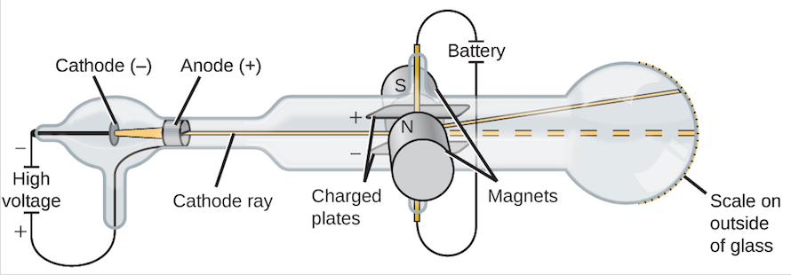
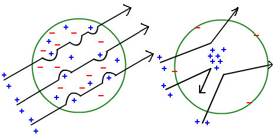
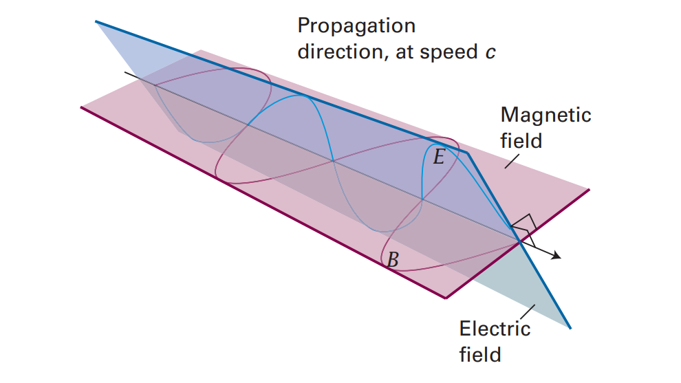
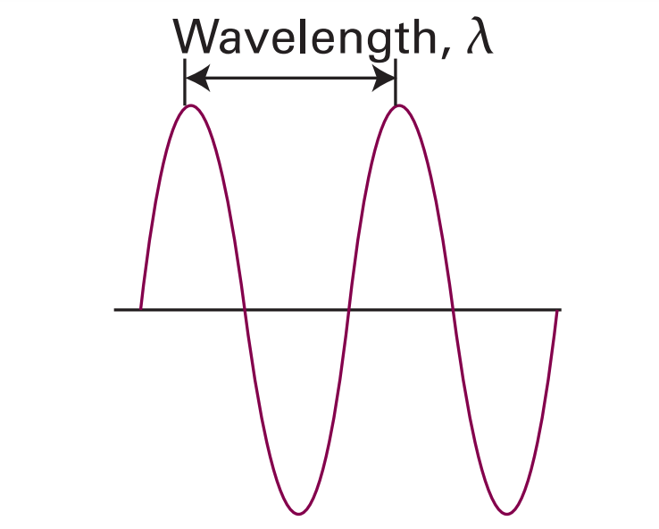
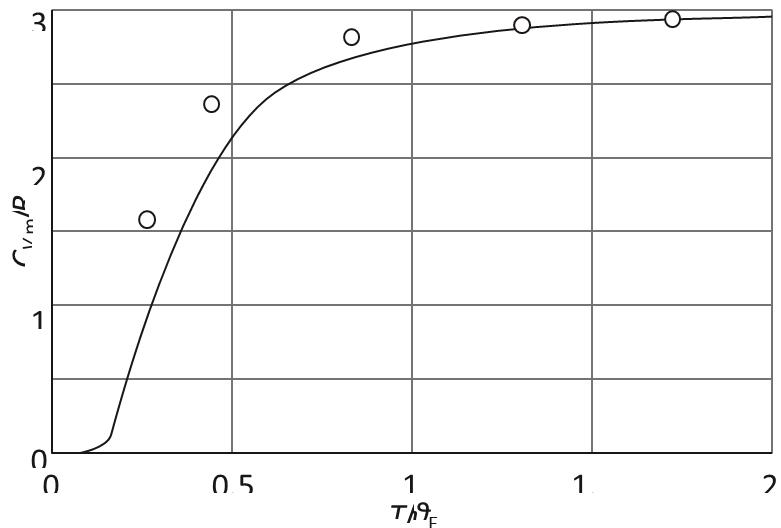
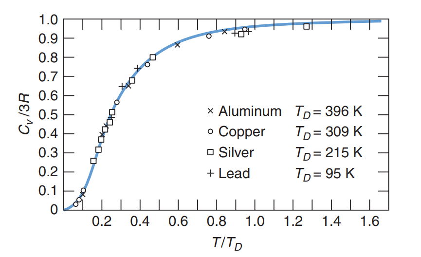
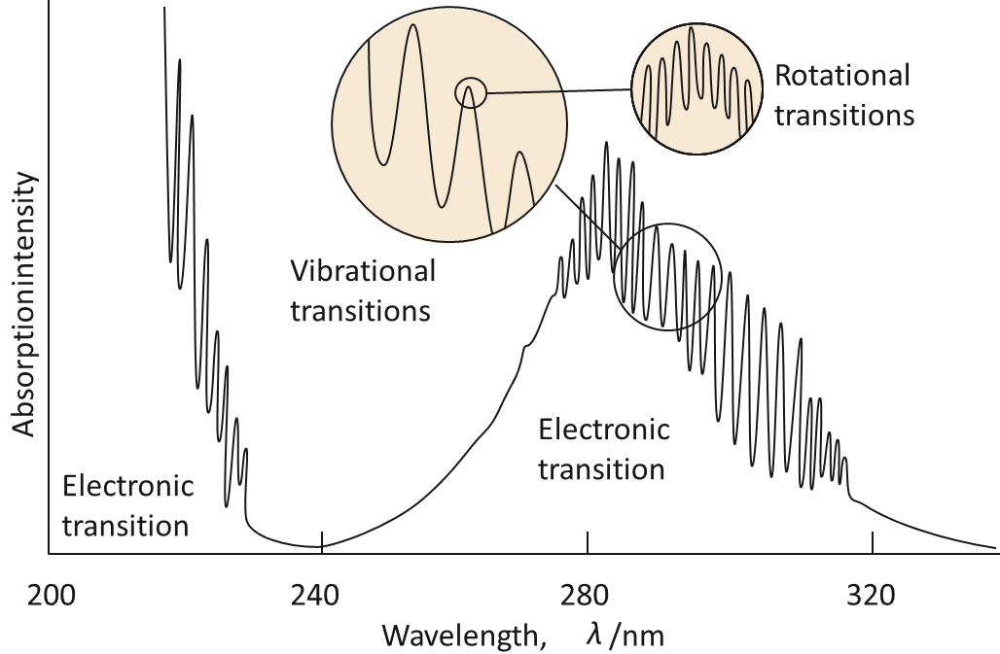
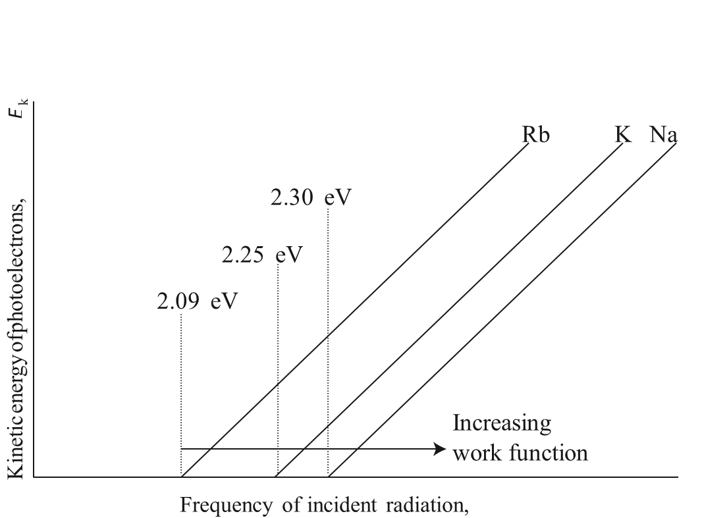

The Dawn of Atomic Thought
The Greek Atomists: Democritus, Leucippus, and the Concept of the Indivisible
Philosophies Before Socrates
The term "Pre-Socratic" refers to the Greek thinkers who lived and theorized before Socrates, though some were his contemporaries. This period, roughly spanning the 6th and 5th centuries BCE, marks a significant shift in intellectual history. Departing from mythological explanations of the world, these philosophers sought rational, naturalistic accounts for the cosmos and its workings. Their primary focus was on understanding the fundamental nature of reality, often referred to as physis. They asked foundational questions: What is the universe made of? How did it come to be? What principles govern its changes? This era laid the groundwork for much of Western philosophy, initiating a tradition of critical inquiry and reasoned argument that continues to this day. While their conclusions varied wildly, their shared commitment to seeking underlying principles beyond immediate sensory experience defines this crucial period in intellectual history. Their legacy lies not just in their specific theories, many of which were later superseded, but in the very act of questioning and the development of philosophical vocabulary and concepts that continue to resonate.
The Search for the Arche
A central preoccupation of the early Pre-Socratics was identifying the arche (ἀρχή), a Greek term signifying the origin, principle, or ultimate substance from which everything else is derived. Thales of Miletus, often considered the founder of Western philosophy, proposed that water was the arche. His reasoning, though not fully documented, likely stemmed from observing water's essential role in life and its ability to exist in various states (solid, liquid, gas). While his conclusion might seem simplistic now, his methodology – seeking a single, unifying principle – was revolutionary.
Anaximander, also from Miletus and a student of Thales, critiqued his teacher's view. He argued that water itself needed something prior to explain its own existence and changes. Anaximander posited the apeiron (τὸ ἄπειρον), the "unbounded" or "indefinite," as the arche. This was a more abstract concept, an eternal and boundless source from which all things originate and to which they eventually return. The apeiron was conceived as an undifferentiated, primordial substance, capable of giving rise to the diverse and contrary elements we observe in the world. This marked a move towards greater conceptual sophistication in the search for the arche.
Anaximenes, the third major Milesian philosopher, returned to a more concrete substance, identifying air as the arche. He proposed that air, through the processes of rarefaction (thinning) and condensation (thickening), could account for the different substances we perceive. When air is rarefied, it becomes fire; when condensed, it becomes wind, then cloud, then water, then earth, and finally stone. Anaximenes provided a clear mechanism for transformation, linking the fundamental substance to the observable changes in the world, a step beyond the more enigmatic apeiron.
Moving beyond Miletus, Heraclitus of Ephesus introduced a radically different perspective. He famously declared, "Everything flows" (πάντα ῥεῖ), emphasizing constant change as the fundamental characteristic of reality. While he identified fire as a kind of unifying principle, it wasn't so much a static arche as a symbol of perpetual flux and transformation. Heraclitus saw the world as a dynamic interplay of opposing forces, famously stating, "War is the father of all and king of all." His emphasis on change and the unity of opposites presented a significant challenge to the Milesian search for a static, underlying substance. His cryptic pronouncements and focus on the process of becoming rather than being greatly influenced subsequent thinkers.
In stark contrast to Heraclitus's emphasis on flux, Parmenides of Elea argued for the unchanging and eternal nature of being. Through rigorous logical reasoning, he concluded that "what is, is" and "what is not, is not." He asserted that true reality is single, indivisible, and unchangeable. Change and motion, according to Parmenides, are mere illusions of the senses. His poem, "On Nature," laid out his philosophical system, using deductive reasoning to arrive at his seemingly paradoxical conclusions. Parmenides' philosophy presented a profound challenge to the prevailing understanding of the world and forced subsequent thinkers to grapple with the fundamental problem of reconciling being and becoming. The Eleatics, including Parmenides, raised serious epistemological questions about the reliability of sensory perception and the power of reason in understanding reality.
The early Pre-Socratics, in their quest for the arche, faced numerous challenges. How could a single substance give rise to the vast diversity of the world? How could change be explained if the fundamental substance remained constant? The differing answers proposed by these thinkers reflect the nascent stage of philosophical inquiry, where methodologies were still being developed and assumptions were rigorously questioned.
The Problem of Change and Permanence
The stark opposition between Heraclitus and Parmenides brought the problem of change and permanence into sharp focus. Heraclitus’s assertion that everything is in flux seemed undeniable based on sensory experience. Yet, Parmenides’ logical arguments for the impossibility of non-being and therefore the unchanging nature of reality were equally compelling. This impasse presented a significant challenge for subsequent philosophers.
Zeno of Elea, a student of Parmenides, famously defended his teacher's views by devising a series of paradoxes aimed at demonstrating the impossibility of motion. Paradoxes such as the "Achilles and the Tortoise," the "Dichotomy," the "Arrow," and the "Stadium" used logical arguments to show that motion leads to contradictory or absurd conclusions. For example, in the "Achilles and the Tortoise," the swift Achilles can never overtake the slow tortoise if the tortoise has a head start, as Achilles must first reach the point where the tortoise started, by which time the tortoise will have moved a little further, and so on, ad infinitum. While we intuitively know that Achilles can overtake the tortoise, Zeno's paradoxes highlighted the logical difficulties in conceptualizing continuous motion. These paradoxes, while not definitively disproving motion, forced philosophers to confront the complexities of space, time, and divisibility, significantly influencing the development of mathematics and physics as well as philosophy. The Eleatics, through their rigorous logical arguments, forced a re-evaluation of the very foundations of understanding reality and the nature of change.
Emergence of Pluralism
The impasse created by the conflicting views of Heraclitus and Parmenides paved the way for a new approach: pluralism. Instead of seeking a single arche, pluralist philosophers proposed that multiple fundamental substances or principles underlay reality. This approach sought to reconcile the seemingly contradictory experiences of change and permanence by positing unchanging fundamental constituents that could combine and separate to produce the observed changes.
Empedocles, from Acragas, proposed four "roots" or elements as the fundamental constituents of reality: earth, air, fire, and water. These roots were themselves unchangeable, but their mixture and separation, driven by the cosmic forces of Love (attraction) and Strife (repulsion), accounted for the generation and destruction of things in the world. Empedocles provided a mechanism for change without violating the Parmenidean principle that being cannot come from non-being or pass into non-being. The qualities and proportions of the four roots in a given object determined its nature.
Anaxagoras, from Clazomenae, took the idea of pluralism even further. He posited that reality is composed of an infinite number of "seeds" (spermata) or "things-in-everything" (homoeomeries). Each seed contained a portion of everything else. For example, a piece of gold contains not only gold particles but also traces of everything else – hair, bone, water, etc., though the gold particles predominate. Anaxagoras introduced the concept of Nous (νοῦς), or mind, as the ordering principle that sets these seeds in motion and arranges them to form the cosmos. Nous is pure, unmixed, and possesses all knowledge and power. Anaxagoras’s theory offered a sophisticated account of qualitative diversity and change, suggesting that everything contains within it the potential to become something else, depending on the dominant constituents.
Empedocles and Anaxagoras represent a significant step beyond the monistic views of the earlier Pre-Socratics. By introducing multiple fundamental constituents and mechanisms for their interaction, they provided more nuanced explanations for the complexities of the natural world, paving the way for even more sophisticated theories, including the atomic theory that would emerge later in the Pre-Socratic period. Their attempts to reconcile change and permanence through pluralism demonstrated a growing sophistication in philosophical thought and laid crucial groundwork for future developments in natural philosophy.
The Enigmatic Leucippus
Leucippus stands as a somewhat shadowy figure at the dawn of atomic theory. Our knowledge of him is frustratingly limited and often intertwined with, if not completely overshadowed by, the more well-documented Democritus. Indeed, some scholars in antiquity even questioned whether Leucippus existed at all, attributing the foundations of atomism solely to Democritus. While this extreme view is largely rejected today, the challenge of disentangling the individual contributions of Leucippus and Democritus remains a significant hurdle for historians of philosophy.
Fragmentary evidence suggests Leucippus was likely the originator of the core tenets of atomism. He is credited with the seminal statement: "Nothing happens at random, but everything from reason and by necessity." This assertion points towards a deterministic worldview, a crucial element in the development of atomic theory, where the interactions of atoms are governed by natural laws. Diogenes Laertius, a later biographer of the Greek philosophers, attributes to Leucippus the Great World Order and On Mind, though the authenticity and content of these works are debated.
The primary difficulty lies in the fact that subsequent writers, including Aristotle, often presented the atomic theory as a unified whole attributed to "Leucippus and Democritus," making it nearly impossible to pinpoint the specific ideas belonging solely to Leucippus. Even where specific doctrines are ascribed to him, the reliability of these attributions is open to question given the scarcity of primary sources. It's generally accepted that Leucippus laid the conceptual groundwork for atomism, formulating the fundamental principles of atoms and the void. He likely introduced the idea of indivisible, indestructible particles moving in empty space. However, the more detailed elaborations, applications, and systematic development of these initial ideas are generally attributed to his successor, Democritus. Therefore, while acknowledging Leucippus as the likely initiator, our understanding of early atomism relies heavily on the surviving fragments and accounts relating to Democritus.
Democritus: The Laughing Philosopher
In contrast to the obscurity surrounding Leucippus, we possess a more substantial, though still incomplete, picture of Democritus, often referred to as the "Laughing Philosopher." Born in Abdera, Thrace, around 460 BCE, Democritus was a contemporary of Socrates. Ancient accounts depict him as a man of immense learning and wide-ranging interests, characterized by a cheerful disposition – hence the epithet "Laughing Philosopher," possibly stemming from his perceived amusement at the follies of humanity.
Democritus is said to have inherited a considerable fortune, which he reportedly used to fund extensive travels. These journeys, documented in various ancient sources, took him to Egypt, Persia, and possibly even India and Ethiopia. Such travels would have exposed him to diverse cultures and intellectual traditions, enriching his understanding of the world. While the historicity and extent of these travels are sometimes debated, they underscore the ancient perception of Democritus as a highly curious and inquisitive mind, eager to learn from various sources.
Democritus was an incredibly prolific writer, attributed with a vast number of works covering a wide spectrum of subjects, from ethics and physics to mathematics, music, and even technical manuals on topics like agriculture and painting. Diogenes Laertius lists titles such as The Great World System, The Little World System, On Nature, On the Planets, On Human Nature, On the Senses, On Logic, On Ethics, and many more. Tragically, only fragments of these writings survive today, primarily through quotations and paraphrases in the works of later philosophers and commentators, most notably Aristotle, Simplicius, and Sextus Empiricus. This loss represents a significant blow to our direct understanding of his detailed theories and arguments.
Despite the fragmentary nature of the evidence, it's clear that Democritus significantly expanded upon the foundational ideas of Leucippus, developing a comprehensive atomic theory. He elaborated on the nature of atoms, describing them as indivisible (ἄτομος - atomos, meaning "uncuttable"), indestructible, and varying in shape, size, and arrangement. These atoms move eternally in the void (κενόν - kenon), the empty space between them. The differences in the properties of macroscopic objects, according to Democritus, arise from the different shapes, arrangements, and groupings of these fundamental atoms. For example, sharp objects are composed of atoms with pointy shapes, while liquids are made of smooth, round atoms that can easily slide past each other.
Democritus applied his atomic theory not just to physics but also to explain phenomena in biology, psychology, and even epistemology. He believed that perception occurred through the emission of "eidola" or "images" – thin films of atoms – from objects, which then interacted with the atoms of the sense organs. Thoughts and the soul itself were also explained in atomic terms, being composed of fine, mobile atoms. His ethical views, as far as we can reconstruct them from the surviving fragments, emphasized tranquility and cheerfulness (euthymia) as the highest good, attainable through moderation, self-control, and understanding the natural world.
Democritus's commitment to naturalistic explanations, devoid of supernatural or teleological causes, marked a significant development in Pre-Socratic thought. He sought to explain all phenomena through the mechanical interactions of atoms in the void, offering a purely materialistic account of reality. While his theories faced criticisms from his contemporaries and later philosophers, particularly Plato and Aristotle, his vision of an atomic universe laid the groundwork for future scientific advancements and continues to resonate with modern scientific understanding of matter. Despite the loss of the majority of his extensive writings, the surviving fragments and accounts reveal a brilliant and inquisitive mind that profoundly shaped the course of Western thought.
Sources and Challenges
Understanding the atomic doctrine of Leucippus and Democritus presents a significant challenge due to the nature of the surviving evidence. Unlike the more complete works of later philosophers like Plato or Aristotle, the writings of the early Atomists are almost entirely lost. Our knowledge is primarily reconstructed from secondary sources, meaning accounts and interpretations written by individuals who came after them. This reliance on later commentators introduces layers of interpretation and potential bias, making it difficult to ascertain the original intent and precise formulations of the Atomists' ideas.
The primary sources for the Atomists are exceedingly scarce. While we have lists of titles attributed to both Leucippus and Democritus, only a handful of genuine fragments, consisting of short quotations preserved in the works of others, remain. These direct quotations offer invaluable glimpses into their original terminology and thinking, but they are insufficient to provide a comprehensive understanding of their philosophical system. For Leucippus, the situation is even more dire, with virtually no direct quotations securely attributed solely to him.
Consequently, the vast majority of our information comes from secondary sources, most notably the writings of Plato, Aristotle, Theophrastus (Aristotle's successor), and later commentators such as Simplicius and Sextus Empiricus. While these sources provide crucial insights, they also present several inherent challenges:
Interpretation and Bias: These commentators often presented the atomic theory within their own philosophical frameworks, sometimes criticizing, interpreting, or even misrepresenting the Atomists' ideas to support their own arguments. Aristotle, in particular, frequently engaged with and critiqued the theories of his predecessors, including the Atomists, from his own hylomorphic perspective. His accounts, while detailed, are not always neutral and may emphasize aspects relevant to his own philosophical concerns.
Fragmentary Transmission: The information we glean from these secondary sources is itself often fragmented and scattered across various texts. Piecing together a coherent picture of the atomic doctrine requires careful analysis and comparison of these disparate accounts. We must be mindful that the context in which these fragments appear can influence their meaning and our understanding of them.
Distortion and Simplification: Later commentators, especially those writing centuries after Leucippus and Democritus, may have relied on summaries or simplified interpretations of their work, potentially losing nuances and complexities of the original theories. Furthermore, the process of transmission over time could have introduced errors or distortions.
Aristotle stands as a particularly important, yet complex, source for understanding the Atomists. He provides significant information about their theories in his works such as Physics, On Generation and Corruption, and On the Soul. However, it is crucial to recognize that Aristotle's engagement with atomism was primarily critical. He disagreed with their materialistic worldview and their rejection of formal and final causes, often presenting their ideas in a manner conducive to his own philosophical rebuttals. Therefore, while Aristotle offers valuable details about the atomic doctrine, his account must be approached with a critical eye, recognizing his potential biases and interpretations.
Simplicius, a Neoplatonist philosopher writing in the 6th century CE, is another crucial source, especially for preserving fragments from earlier Pre-Socratics, including Leucippus and Democritus. His commentaries on Aristotle’s works often include direct quotations and paraphrases of earlier thinkers, which would otherwise be lost to us. However, even Simplicius interprets these fragments through his own Neoplatonic lens, and the extent to which he accurately represents the original meaning is a subject of scholarly debate.
Reconstructing the Atomic Doctrine
The task of reconstructing the atomic doctrine is further complicated by the acknowledged collaborative nature of Leucippus and Democritus's work. Ancient sources often refer to "Leucippus and Democritus" as a single entity, making it exceedingly difficult to definitively attribute specific ideas or nuances to each individual philosopher. While, as previously discussed, Leucippus is generally credited with initiating the core concepts of atomism, Democritus significantly elaborated upon and systematized these ideas.
The challenge lies in discerning where Leucippus's initial framework ends and Democritus's more developed theories begin. Did Leucippus, for example, already have a detailed understanding of the different shapes and arrangements of atoms, or was this a later development by Democritus? How far did Leucippus's investigations extend into areas like perception or the soul, which are more extensively discussed in the fragments attributed to Democritus?
Scholars employ various strategies to navigate these difficulties:
Analyzing Terminological Consistency: Examining the specific terms and phrases used in the surviving fragments and their attribution to either Leucippus or Democritus can offer clues. However, even this approach is limited by the scarcity of directly attributed quotations for Leucippus.
Tracing the Development of Ideas: By carefully comparing the accounts of different commentators, scholars attempt to trace the evolution of specific atomic concepts, identifying potential stages of development and attributing earlier or more rudimentary forms to Leucippus and later refinements to Democritus.
Considering Philosophical Context: Analyzing the broader philosophical landscape of the 5th century BCE and the intellectual trends prevalent in different geographical regions (e.g., Miletus, Abdera, Elea) can provide contextual clues about the possible influences on and development of atomic thought.
Despite these efforts, a degree of uncertainty inevitably remains regarding the precise contributions of each philosopher. It is likely that Leucippus laid the foundational principles – the existence of atoms and the void – and initiated the atomistic worldview. Democritus, with his prolific writing and wider range of interests, then developed these core ideas into a more comprehensive philosophical system, applying them to explain a broader range of natural phenomena and human experience.
Acknowledging the collaborative nature of their work is crucial. Rather than viewing them as entirely separate thinkers, it is more accurate to consider them as collaborators who built upon each other's insights. While the precise division of labor may forever remain somewhat obscure, their combined efforts resulted in a groundbreaking and influential philosophical theory that significantly impacted the course of Western thought and laid some of the earliest foundations for scientific materialism.
The atomic theory of Leucippus and Democritus emerged as a direct response to the profound philosophical challenges posed by the Eleatic school, particularly Parmenides and his arguments concerning the impossibility of non-being and, consequently, of change and motion. The Eleatics, through rigorous logical deduction, had seemingly demonstrated that "what is, is" and "what is not, is not," thus rendering any notion of coming-into-being or passing-away logically incoherent. This presented a significant hurdle for any natural philosophy seeking to explain the observable world, characterized by constant flux and transformation. The Atomists' ingenious solution to this intellectual impasse lay in their bold assertion of the existence of "the void" or "empty space", a concept explicitly denied by the Eleatics.
The Problem of Non-Being and the Necessity of the Void
Parmenides' philosophy hinged on the principle that one cannot meaningfully speak or think about "what is not." For something to change, it would have to transition from being to non-being, or vice versa, which Parmenides deemed logically impossible. If only "what is" exists, and "what is" is a unified, unchanging whole, then motion and change, which imply the coming-into-being of something new or the ceasing-to-be of something old, become illusions of the senses.
The Atomists directly confronted this Eleatic challenge by positing the existence of the void as a necessary condition for motion and change. They argued that if there were no empty space, there would be no place for things to move into. If all of reality were completely full, like a perfectly packed box, there would be no possibility for any displacement or rearrangement of its constituents. Imagine a room completely filled with solid blocks; no block could move without another block vacating its space first, creating an infinite regress. Therefore, for motion to occur, there must be "what is not" – empty space – interspersed with "what is" – the atoms.
This was a radical departure from the Eleatic worldview. The Atomists essentially argued that non-being, in the form of the void, had a real existence and was not merely a conceptual absence. The void was not "nothing" in the absolute sense, but rather a non-corporeal expanse, a space devoid of matter, within which atoms could move and interact. This allowed them to maintain the Parmenidean principle that "something cannot come from nothing" – the atoms themselves are eternal and uncreated – while simultaneously explaining the observable reality of change and motion through the rearrangement of these unchanging particles within the void.
The Atomists’ concept of the void was not simply an abstract philosophical construct; it was a necessary postulate for their physical theory. Without the void, their model of atoms moving and combining to form macroscopic objects would be impossible. The void provided the arena for atomic interactions, the space for atoms to separate and come together, thus accounting for generation, destruction, and all forms of change. They reasoned that the very fact of motion and change in the observable world served as empirical evidence for the existence of the void, despite the logical challenges raised by the Eleatics. It was a bold move, asserting the reality of something that seemingly defied logical articulation, but it was a necessary step to reconcile philosophical reasoning with empirical observation.
Atoms and the Sensible World
Having established the necessity of the void, the Atomists proceeded to explain the diversity and change we perceive in the sensible world through the properties and interactions of fundamental, indivisible particles: the atoms. These atoms, unlike the continuous and homogeneous apeiron of Anaximander or the single, unchanging Being of Parmenides, were conceived as numerous, solid, and indivisible units of matter. The term "atom" itself (ἄτομος - atomos) literally means "uncuttable" or "indivisible."
The Atomists posited that these atoms, though fundamentally simple and unchanging in their substance, differed in shape, size, and arrangement. Just as the letters of the alphabet, though individually simple, can be combined in countless ways to form a vast array of words, so too could atoms, through their different configurations, give rise to the diverse objects and phenomena of the macroscopic world. For instance, they might have argued that solid objects are composed of atoms with hooks or barbs that interlock tightly, while liquids are made of smoother, rounder atoms that can easily slide past each other. Sharp objects would be composed of atoms with pointed shapes, while dull objects would have atoms with blunter forms.
Furthermore, the position and ordering of atoms within a compound also contributed to its specific properties. Consider the difference between the letters "NAY" and "ANY"; the same letters arranged differently create distinct words with different meanings. Similarly, the Atomists believed that the specific arrangement of atoms determined the characteristics of a particular substance.
Change, therefore, was not the coming-into-being of something entirely new or the annihilation of existing being, but rather the rearrangement and recombination of these eternal atoms within the void. When an object is "born" or comes into existence, it is simply a new configuration of atoms coming together. When an object "dies" or is destroyed, it is the separation and dispersal of its constituent atoms. The atoms themselves, being indivisible and indestructible, persist through these changes. This provided a materialist explanation for the constant flux of the world without violating the principle of ex nihilo nihil fit.
The Atomists extended their atomic theory to explain sensory perception. They proposed that objects continuously emit thin streams of atoms, often referred to as "images" or "effluences" (eidola), which are essentially miniature copies of the object's surface. These streams of atoms travel through the void and interact with our sense organs, conveying information about the object's shape, size, and other properties. For example, seeing an apple involves the emission of apple-shaped eidola that impinge upon our eyes. This mechanistic account of perception further solidified their materialistic worldview, explaining sensory experience as a physical interaction between atoms.
Arguments Against Infinite Divisibility
The Atomists, in constructing their understanding of the fundamental constituents of reality, directly challenged the notion that matter could be divided infinitely. While no comprehensive treatise by Leucippus or Democritus on this specific topic survives, we can reconstruct their likely reasoning based on the surviving fragments, the accounts of later commentators, and the inherent logic of their atomic theory. Their arguments against infinite divisibility were likely rooted in a combination of conceptual difficulties and the perceived necessities of explaining the stability and properties of the sensible world.
One central line of reasoning likely revolved around the problem of the vanishing magnitude. If matter were infinitely divisible, then any finite portion of matter could be divided into an infinite number of parts. Imagine taking a piece of gold and continuously dividing it in half, then dividing each half again, and so on, ad infinitum. If this process could continue endlessly, what would be the nature of the ultimate, infinitely small parts? Would they still possess the properties of gold? If so, how could an infinite number of parts, each possessing the properties of gold, still constitute a finite piece of gold? If, on the other hand, these infinitely small parts lost the properties of gold, at what point in the division would this transformation occur? The Atomists likely argued that the idea of an infinitely divisible substance leading to parts with diminishing or altered properties presented a logical absurdity. It seemed to violate the intuitive understanding that dividing a substance should simply yield smaller pieces of the same substance.
Another compelling argument likely focused on the implications for the structure and stability of macroscopic objects. If matter were infinitely divisible, then there would be no fundamental building blocks, no ultimate units holding things together. How could such a structureless entity give rise to the stable, defined objects we observe in the world? Consider a table. It has a certain shape, size, and solidity. If it were composed of infinitely divisible matter, what would prevent it from dissolving into an amorphous, undefined mass? The Atomists likely reasoned that the existence of discrete, indivisible particles provided the necessary foundation for the stability and distinctness of macroscopic entities. Atoms, being solid and impenetrable, could combine to form larger structures with definite forms and properties.
Furthermore, the Atomists might have employed a thought experiment related to the limits of perception and manipulation. While our ability to divide matter is limited by our tools and senses, they likely argued that there must be an inherent limit to divisibility, even if it lies beyond our current capabilities. If we could theoretically continue dividing a substance indefinitely, we would eventually reach parts so infinitesimally small that they would be indistinguishable from nothingness. How could something composed of parts that are essentially non-existent constitute a real, tangible object? The very fact that we can perceive and interact with matter suggested to them that it must be composed of fundamental, finite units.
The concept of void also played a crucial role in their argument against infinite divisibility. If matter were infinitely divisible, then there would be no ultimate "parts" separated by empty space. The universe would be a continuous plenum, a completely full entity, which, as previously discussed, would make motion impossible. The existence of the void, a cornerstone of their theory necessitated by the reality of motion, inherently implied the existence of discrete, finite particles that occupied space within that void. Infinite divisibility and the necessity of the void seemed fundamentally incompatible within their framework.
A Pre-Socratic philosopher walks into a bakery and asks for half a loaf of bread. The baker says, "I'm sorry, we don't sell halves." The philosopher replies, "But surely you understand the concept of divisibility?" The baker sighs and says, "Look, buddy, are you going to buy a whole loaf or are you just going to keep splitting hairs?". Ain't that a funny joke, laugh! I said laugh! Ahh well, laugh at the joke atleast
The Nature of Atoms: Ἄτομον (The Uncuttable)
The very term "atom" (ἄτομον - atomon) chosen by Leucippus and Democritus to describe their fundamental particles is deeply significant and reveals their understanding of the nature of these entities. Derived from the Greek adjective atomos, meaning "uncuttable," "indivisible," or "that which cannot be split," the term encapsulates the core characteristic of these fundamental units of matter.
The choice of this term was likely a deliberate and direct challenge to the prevailing notions of continuous matter and the possibility of infinite divisibility. By designating their fundamental constituents as "uncuttable," the Atomists asserted that there is a limit to the division of matter, a point beyond which it cannot be further broken down. This inherent indivisibility was not merely a practical limitation but a fundamental property of these particles.
For the Atomists, these atoma were not simply tiny, miniature versions of macroscopic objects. They were conceived as solid, homogeneous, and internally structureless. They lacked internal parts that could be separated or further divided. Their indivisibility was not due to a lack of force or the limitations of tools, but rather to their fundamental nature as the ultimate, unbreakable constituents of reality.
Furthermore, the atoma were understood to be eternal and unchangeable. They could not be created or destroyed; they simply existed eternally and moved within the void. The changes we observe in the world did not involve the creation or annihilation of atoms but rather their rearrangement and recombination. This concept aligned with the Eleatic principle that "something cannot come from nothing" and "something cannot pass into nothing," which the Atomists cleverly incorporated into their system by applying it to the fundamental atoms themselves.
While all atoms shared the fundamental properties of indivisibility and indestructibility, they differed in shape, size, and arrangement. These differences were crucial in explaining the diversity of the sensible world. Just as different arrangements of the same building blocks can create different structures, the varied shapes, sizes, and arrangements of atoms gave rise to the different qualities and properties of macroscopic objects. For example, atoms of iron might be rough and jagged, causing it to be hard and rigid, while atoms of water might be smooth and slippery, allowing it to flow easily.
The Atomists' conception of the atomon as the fundamental, indivisible, and unchanging building block of reality was a revolutionary idea. It represented a significant shift away from earlier cosmological models that often involved more fluid or qualitatively differentiated fundamental substances. Their atomic theory provided a mechanistic and materialistic explanation for the universe, where the complex phenomena we observe arise from the simple interactions of these fundamental, indivisible particles moving within the void. The term atomon, therefore, was not just a label; it was a concise encapsulation of their core philosophical commitments about the ultimate nature of reality.
Characteristics of Atoms: Shape, Size, and Motion
The atomic theory, as conceived by Leucippus and Democritus, rested upon the fundamental premise that the seemingly diverse and ever-changing world is ultimately composed of simple, indivisible particles—atoms—moving within an empty space, the void. While all atoms shared the core characteristics of indivisibility and indestructibility, the Atomists recognized that to account for the vast array of qualities and properties observed in the macroscopic world, these fundamental particles must possess inherent differences. These differences primarily manifested in their shape, size, and their perpetual motion.
Infinite Variety of Shapes
A cornerstone of the Atomists' explanation for the qualitative diversity of matter was their assertion that atoms exist in an infinite variety of shapes. This concept was crucial in bridging the gap between the unchanging nature of the atoms themselves and the constantly transforming nature of the sensible world. They reasoned that if all atoms were identical in shape, the substances they formed would also be fundamentally the same, failing to explain the evident differences between, for example, water, fire, and earth.
Imagine, for instance, the difference between a sharp object and a smooth one. The Atomists would explain this difference by positing that the atoms constituting the sharp object possess pointed or jagged shapes, allowing them to pierce or cut. Conversely, the atoms composing a smooth object would be round or spherical, allowing them to roll easily and present a non-abrasive surface. Similarly, the fluidity of liquids could be attributed to atoms with shapes that allow them to easily slide past one another, perhaps small, round, and smooth. Solids, on the other hand, would be composed of atoms with more complex, interlocking shapes, preventing easy separation and giving them rigidity.
This idea of an infinite variety of shapes was a significant departure from earlier Pre-Socratic theories that often posited a limited number of fundamental elements with inherent qualities. The Atomists, by attributing the qualities of matter to the shape of the constituent atoms, offered a more flexible and nuanced explanation for the seemingly endless diversity of the natural world. Just as the letters of an alphabet, with their distinct shapes, can be combined to form an infinite number of words, so too could atoms, with their infinite variety of shapes, combine to create the myriad substances and objects we experience.
This concept also addressed the problem of how fundamentally similar atoms could give rise to contrasting sensory experiences. For example, the sensation of "bitter" might be caused by atoms with a particular angular shape that "prick" the tongue, while "sweet" might be caused by smoother, rounder atoms that gently interact with the taste receptors. While we lack detailed descriptions of specific atomic shapes corresponding to specific qualities, the underlying principle was clear: the shape of the atoms directly determined the qualities of the macroscopic objects they formed and the sensations they produced.
The Atomists likely did not have a precise, geometric understanding of these shapes, but rather a more intuitive and qualitative sense. They observed the world and inferred the shapes of the underlying atoms based on the macroscopic properties of the substances they constituted. This reliance on inference from observable phenomena is a hallmark of early natural philosophy. It is important to note that while the variety of shapes was considered infinite in potential, the actual number of distinct shapes existing at any given time might have been considered finite, though incredibly large.
Variations in Size
Alongside the infinite variety of shapes, the Atomists also posited that atoms differ in size. While the emphasis on shape tends to be more prominent in the surviving accounts of their theories, the concept of varying atomic sizes was also crucial in explaining certain properties of matter.
Larger atoms, for instance, might contribute to the density or heaviness of a substance, while smaller atoms might make a substance lighter or more mobile. Imagine two objects made of atoms with the same shape but different sizes. The object composed of larger atoms would naturally contain more matter in a given volume, making it denser. Similarly, differences in the perceived texture of materials could be attributed to variations in the size of the constituent atoms. A rough surface might be composed of atoms with significant size variations, while a smooth surface might be made of atoms with more uniform sizes.
The concept of different atomic sizes also likely played a role in their understanding of how different substances could occupy the same volume. Just as smaller grains of sand can fit into the spaces between larger pebbles, smaller atoms could potentially reside within the interstices formed by larger atoms. This idea, though not explicitly detailed in the surviving fragments, is a logical extension of their atomic model and helps to explain the complex mixtures and combinations of substances observed in the world.
It's important to note that the Atomists did not have a concept of precise atomic weights or masses, as these are later scientific developments. Their understanding of size was likely more qualitative, referring to relative differences in the spatial extent of the atoms. However, the fundamental idea that atoms are not all uniform in size was an important component of their attempt to explain the diverse properties of matter.
Motion: The Eternal Dance of Atoms
Motion was not merely an accidental property of atoms but an inherent and eternal aspect of their existence. The Atomists believed that atoms are constantly in motion within the void, and this motion is the fundamental driving force behind all change and interaction in the universe. They did not posit a first mover or an external force initiating this motion; rather, motion was considered intrinsic to the nature of atoms themselves.
This inherent motion takes various forms. Atoms can move linearly through the void, colliding with one another and changing direction. These collisions are crucial for the formation and dissolution of macroscopic objects. When atoms collide and interlock, they form compounds; when they separate, those compounds break down.
Furthermore, the Atomists likely recognized more complex forms of motion, such as vibrations or oscillations within a compound. While not explicitly detailed, the idea that atoms within a bound structure might exhibit internal motion is a plausible interpretation of their views, especially when considering phenomena like heat, which they likely attributed to the motion of atoms.
The void was absolutely essential for this motion to occur. As discussed previously, without empty space, there would be no place for atoms to move into. The void provided the infinite arena for the eternal dance of atoms, their collisions, and their subsequent combinations and separations. The density of the void, meaning the relative amount of empty space compared to the number of atoms, would also influence the frequency and nature of atomic collisions.
The motion of atoms was not random or chaotic but governed by natural necessity. This deterministic view implied that the interactions of atoms followed predictable patterns based on their shapes, sizes, and the forces involved in their collisions. While we lack a detailed account of these "laws of motion" from the Atomists themselves, their insistence on necessity suggests a belief in an ordered universe governed by natural principles, as opposed to chance or divine intervention.
The constant motion of atoms explained not only physical changes but also sensory perception. As objects emit streams of atoms (the eidola), these atoms travel through the void and interact with the atoms of our sense organs, causing the sensations we experience. Even thought and the soul, according to some Atomist interpretations, were composed of particularly fine and mobile atoms, their activity dependent on their inherent motion.
Eternal Motion in the Void
At the heart of the Atomists' cosmology lay the concept of eternal motion. Unlike earlier philosophical systems that often posited a prime mover or an initial act of creation to set the universe in motion, Leucippus and Democritus viewed motion as an inherent and perpetual characteristic of atoms themselves. Atoms were not created and then set in motion; they had always been in motion and would continue to be so eternally. This concept was inextricably linked to their understanding of the void. The void was not merely empty space but the very arena within which this eternal motion unfolded. Without the void, as they argued against the Eleatics, motion would be impossible.
This inherent motion of atoms was not random or arbitrary but governed by necessity. While the exact nature of this necessity remains a subject of interpretation due to the fragmentary nature of the evidence, it suggests a deterministic universe where the movements and interactions of atoms follow predictable, natural laws. Imagine an infinite expanse of empty space populated by countless tiny particles, each perpetually in motion. This motion is not instigated by an external force but is intrinsic to their being.
The nature of this motion likely involved various forms. Linear motion through the void would be the most basic, with atoms constantly traversing the empty space. When two atoms encounter each other, they collide. These collisions are not destructive, as atoms are indivisible and indestructible, but rather result in a change of direction or velocity. The shape and size of the colliding atoms would influence the nature of the collision and the resulting trajectories. For instance, a head-on collision between two equally sized atoms might result in them bouncing directly apart, while a glancing collision could send them off at different angles.
The Atomists also likely considered more complex interactions. Atoms with irregular shapes could interlock or become entangled with one another upon collision, forming temporary or more permanent clusters. This "hooking together" of atoms with specific shapes was a key mechanism for the formation of macroscopic objects. Conversely, collisions could also cause these clusters to break apart, explaining the processes of dissolution and decay.
The density of the void in a particular region would also influence the frequency of atomic collisions. In regions with a higher concentration of atoms, collisions would be more frequent, leading to more dynamic interactions and potentially higher levels of organization. Conversely, in regions with fewer atoms, the motion might be more solitary and collisions less frequent.
The concept of vortex motion (dinos) is also attributed to the Atomists, particularly in the context of explaining the formation of worlds. According to this idea, within the infinite void, swirling motions of atoms can arise, leading to the aggregation of atoms of similar shapes and sizes, eventually forming celestial bodies and even entire cosmos. This vortex motion suggests a level of self-organization within the seemingly chaotic movement of individual atoms, leading to the emergence of structure and order on a larger scale.
It is important to note that the Atomists did not have a concept of force in the Newtonian sense. Their explanations relied on the inherent motion of atoms and the mechanical consequences of their collisions and shapes. The "necessity" driving their motion was likely understood as an inherent property of matter itself, a natural tendency to move and interact within the void. This eternal dance of atoms, governed by necessity and unfolding within the boundless void, was the fundamental reality underlying the ever-changing world we perceive.
Arrangement and Configuration
While the inherent motion of atoms within the void provided the dynamism for change, the arrangement, position, and configuration of these atoms were crucial in explaining the differences between various substances and their properties. The Atomists believed that the fundamental atoms themselves were qualitatively the same, possessing only the inherent properties of indivisibility, solidity, shape, size, and motion. The vast diversity of the sensible world arose not from differences in the fundamental stuff of atoms, but from how these fundamentally similar building blocks were assembled.
Think of the letters of the alphabet. Each letter is a distinct shape, but by arranging these letters in different sequences and combinations, we can create an infinite variety of words with different meanings. Similarly, the Atomists argued that atoms, with their various shapes and sizes, could be arranged in countless ways within the void, giving rise to the different substances we observe.
Arrangement refers to the overall structure or pattern in which atoms are grouped together. For example, the atoms in a solid object might be arranged in a tightly packed, orderly lattice, while the atoms in a liquid might be more loosely associated and able to slide past one another. The atoms in a gas would be widely dispersed with little or no fixed arrangement. This difference in arrangement directly correlates with the macroscopic properties of these states of matter.
Position refers to the specific location of individual atoms relative to one another within a particular arrangement. Even within the same general arrangement, subtle differences in the positioning of atoms could lead to variations in the properties of a substance. Imagine two structures built from the same Lego bricks but with minor variations in the placement of individual bricks. While the overall structure might be similar, subtle differences in their properties or stability could arise.
Configuration encompasses the specific way in which atoms are oriented and linked together, often influenced by their shapes. Atoms with complementary shapes might interlock in specific configurations, forming stable bonds and giving rise to distinct molecules or compounds. Different configurations of the same types of atoms could lead to isomers – molecules with the same chemical formula but different structural arrangements and therefore different properties. For instance, graphite and diamond are both composed of carbon atoms, but the different configurations of these atoms result in vastly different physical properties.
The Atomists used analogies to illustrate this concept. Aristotle, in his criticisms of the Atomists, attributed to them the idea that just as tragedy and comedy are written with the same letters, so too are different substances composed of the same atoms arranged differently. Another analogy involved the different sounds produced by the same letters arranged in various ways. These analogies highlight the core idea that the fundamental constituents are the same, but their organization dictates the final outcome.
Therefore, the differences between gold and iron, water and fire, were not due to them being composed of fundamentally different kinds of atoms, but rather due to the different shapes, sizes, arrangements, positions, and configurations of the atoms composing them. This provided a parsimonious explanation for the diversity of the world, based on a limited number of fundamental principles. The eternal motion of atoms provided the mechanism for these arrangements to form and change, while the inherent properties of the atoms themselves, particularly their shape and size, dictated the types of arrangements that were possible and the resulting properties of the substances formed. This focus on the structural organization of matter was a significant contribution of the Atomists and laid some of the earliest foundations for understanding the relationship between microscopic structure and macroscopic properties.
Ethical and Epistemological Implications
The atomistic worldview, with its emphasis on materialism and determinism, had profound implications for both ethics and epistemology. By reducing reality to the mechanical interactions of atoms in the void, Leucippus and Democritus presented a picture of the universe that challenged traditional notions of purpose, agency, and the nature of knowledge itself.
Materialism and Determinism
At the heart of atomism lies a stark materialism: the belief that reality is fundamentally composed of matter and void, and that all phenomena, including mental states and consciousness, can ultimately be explained by the arrangement and motion of atoms. This materialism naturally leads to determinism: the view that all events, including human actions, are causally necessitated by prior events, following the immutable laws governing the interactions of atoms.
If every event, including our choices, is simply the inevitable outcome of atomic collisions, what becomes of free will? Does the sensation of making a conscious decision merely an illusion, a byproduct of the complex atomic processes occurring within our brains? This question, while not explicitly addressed in detail by the surviving fragments of the early Atomists, is a logical consequence of their materialistic and deterministic framework. If our thoughts and actions are ultimately reducible to the motion of atoms, it becomes difficult to conceive of a truly autonomous self capable of independent choice.
The implications for moral responsibility are equally significant. If our actions are predetermined, can we be held morally accountable for them? Traditional ethical systems often rely on the notion of free will, holding individuals responsible for choices they could have made differently. Within a deterministic framework, however, praise and blame, reward and punishment, seem to lose their justification, becoming mere reactions within a chain of causally linked events.
It is important to acknowledge that the early Atomists did not necessarily dwell on these potentially unsettling implications. Their primary focus was on explaining the natural world. However, the deterministic nature of their physics inevitably raises questions about human agency and moral responsibility, issues that would be explored in greater depth by later philosophers grappling with the legacy of atomism. Some interpretations suggest that Democritus might have attempted to soften the implications of strict determinism by emphasizing the role of reason and knowledge in guiding atomic motions within the individual, allowing for a degree of self-determination, though still within the bounds of natural law.
Democritus' Ethics of Euthymia (Cheerfulness)
Despite the deterministic underpinnings of his worldview, Democritus developed an ethical system centered on the concept of euthymia (εὐθυμία), often translated as cheerfulness, tranquility, or well-being. This ethical ideal was not based on divine commands or abstract moral principles, but rather on a pragmatic understanding of human nature and the pursuit of happiness within a naturalistic framework.
For Democritus, euthymia was not simply fleeting pleasure but a state of inner peace and contentment achieved through wisdom, understanding, and moderation. He believed that much of human suffering arises from ignorance, fear of the unknown (particularly death and the gods), and the pursuit of excessive or unnatural desires. By understanding the natural world, including the atomic nature of reality, individuals could overcome these fears and anxieties, leading to a more stable and joyful existence.
Democritus emphasized the importance of reason and intellectual inquiry in achieving euthymia. By understanding the deterministic nature of the universe, individuals could accept what they cannot change and focus their efforts on cultivating inner tranquility and virtuous habits. This involved practicing self-control, moderation in pleasures, and the avoidance of extremes. He cautioned against envy, jealousy, and other negative emotions that disrupt inner peace.
His ethical fragments often stress the importance of contentment with what one has, rather than constantly striving for more. He valued inner riches over material wealth and emphasized the importance of friendship, kindness, and justice in maintaining social harmony and individual well-being. While the universe might operate according to deterministic laws, Democritus believed that individuals could still cultivate virtuous character and find happiness by aligning themselves with the natural order and living a life guided by reason. His ethics can be seen as an attempt to find a path to flourishing within a materialistic and deterministic universe, emphasizing inner harmony and understanding as the keys to happiness.
The Limits of Sensory Knowledge
The Atomists’ epistemology, their theory of knowledge, was deeply influenced by their understanding of perception as a physical interaction between atoms. This led them to a significant realization: our senses, while providing us with information about the world, offer a limited and potentially deceptive picture of reality. They distinguished between "by convention" (νόμῳ), which refers to our sensory perceptions and the names we give to things based on those perceptions, and "in reality" (ἐτεῇ), which refers to the underlying atomic structure of the world.
According to Democritus, qualities like color, taste, smell, and temperature exist "by convention". They are not inherent properties of the atoms themselves but rather the result of the interaction between the atoms emanating from objects and the atoms of our sense organs. For example, the sensation of "sweetness" is not a property inherent in the atoms of honey but arises from the way those atoms interact with the taste receptors on our tongue. Different individuals, or even the same individual at different times, might perceive the same object differently, highlighting the subjective nature of sensory experience.
"In reality," Democritus argued, there are only atoms and the void. The true nature of things lies in the shapes, sizes, arrangements, and motions of these fundamental particles. Our senses provide us with a useful, but ultimately superficial, understanding of the world. What we perceive as a solid object is, in reality, a collection of atoms separated by empty space. What we experience as different colors are simply the result of different atomic arrangements reflecting light in various ways.
The Role of Reason
Given the limitations of sensory knowledge, the Atomists emphasized the crucial role of reason (λόγος) in understanding the true nature of reality. While our senses might present us with a world of colors, tastes, and seemingly continuous objects, it is through intellectual inquiry and logical deduction that we can grasp the underlying atomic structure.
Reason allows us to move beyond the subjective and variable nature of sensory perception to understand the fundamental principles governing the universe. It is through reason that we can infer the existence of atoms and the void, even though we cannot directly perceive them with our senses. The very idea of indivisible particles and empty space is a product of intellectual reasoning, a way to explain the observable world in a consistent and coherent manner.
Democritus famously stated, "By convention sweet is sweet, bitter is bitter, hot is hot, cold is cold, color is color; but in reality there are only atoms and the void." This quote highlights the distinction between sensory experience and the underlying atomic reality, emphasizing the power of reason to penetrate beyond the surface appearances.
However, it is important to note that the Atomists were also aware of the limitations of reason. Our understanding of the atomic world is necessarily indirect, based on inferences and logical deductions rather than direct observation. They recognized the potential for error in human reasoning and the difficulty in achieving absolute certainty about the unobservable realm of atoms. Nevertheless, they believed that reason, when employed critically and systematically, offered the best path towards understanding the fundamental truths of reality, complementing and correcting the often deceptive information provided by our senses. Their emphasis on reason as a tool for understanding the material world laid important groundwork for the development of scientific methodology.
The Reception and Enduring Influence of Atomism
The groundbreaking ideas of Leucippus and Democritus, while offering a compelling and remarkably modern-sounding explanation of the natural world, faced significant headwinds in ancient Greece. The dominant philosophical voices of the era, particularly Plato and his student Aristotle, mounted substantial criticisms against atomism, contributing significantly to its relative decline and limited acceptance during that period. However, the atomic theory did not vanish entirely. It found a haven and underwent a significant adaptation in the school of Epicureanism, ensuring its survival and eventual resurgence in later intellectual history.
Criticism from Plato and Aristotle
Plato and Aristotle, the towering figures of ancient Greek philosophy, presented formidable challenges to the core tenets of atomism. Their critiques, stemming from fundamentally different metaphysical and epistemological perspectives, were highly influential and played a key role in the limited uptake of atomic theory within the broader philosophical landscape of antiquity.
Plato's criticisms were rooted in his Theory of Forms, which posited the existence of a realm of perfect, eternal, and unchanging Forms as the true objects of knowledge, with the physical world being merely a shadow or imperfect reflection of this higher reality. Atomism's materialistic reduction of reality to atoms and void directly contradicted Plato's idealism. For Plato, the intelligibility and order of the universe could not arise from the random collisions of mindless particles. He argued that a guiding intelligence, a divine craftsman (the Demiurge), was necessary to impose order on the primordial chaos.
Specifically, Plato criticized the Atomists' inability to account for purpose (telos) and value in the universe. If everything is simply the result of chance atomic collisions, there is no inherent meaning or direction to existence. Plato, on the other hand, saw the universe as teleologically ordered, with each thing striving towards its inherent good or proper function. He also questioned how the qualitative richness of experience, such as beauty, goodness, and justice, could emerge from the purely quantitative properties of atoms (shape, size, arrangement). These abstract concepts, central to Plato's philosophy, seemed irreducibly non-material and thus beyond the explanatory scope of atomism.
In his dialogue Timaeus, Plato presents a cosmological account that, while not directly engaging with atomism in detail, offers a starkly contrasting vision. He describes the universe as crafted by a benevolent intelligence, shaping pre-existing matter according to eternal Forms. This teleological and idealistic cosmology provided a powerful alternative to the mechanistic and materialistic worldview of the Atomists.
Aristotle's criticisms were equally influential, though stemming from a more empirically grounded approach than Plato's idealism. Aristotle, while valuing observation and the study of the natural world, disagreed with the Atomists on several fundamental points. His philosophy emphasized hylomorphism, the idea that every physical object is a composite of matter (hyle) and form (morphe), with the form being the organizing principle that gives the matter its specific properties and essence.
A central point of contention was the Atomists' concept of the void. Aristotle famously argued that "nature abhors a vacuum" and presented physical arguments against the possibility of empty space. He believed that for motion to occur, there needed to be a continuous medium through which objects could move. Empty space, lacking any such medium, seemed to him an impossibility. His theory of the cosmos involved a universe entirely filled with matter, arranged in concentric spheres.
Aristotle also criticized the Atomists' explanation of qualities. While they attributed qualities to the shape, size, and arrangement of atoms, Aristotle believed that qualities like color, heat, and wetness were inherent properties of substances, arising from their form. He developed his theory of the four elements (earth, air, fire, water) and their associated qualities to explain the diversity of the physical world, a system that contrasted sharply with the Atomists' reductionist approach.
Furthermore, Aristotle's concept of the four causes (material, formal, efficient, and final) provided a framework for understanding change and causality that differed significantly from the Atomists' mechanistic view. He argued that understanding something fully required understanding not just what it is made of (material cause) and its form (formal cause), but also what brought it into being (efficient cause) and its purpose or end goal (final cause). Atomism, in his view, primarily focused on the material and efficient causes, neglecting the crucial formal and final causes.
The authority of Plato and Aristotle was immense in the ancient world. Their comprehensive philosophical systems, addressing a wide range of topics from metaphysics and ethics to politics and natural science, held considerable sway. Their criticisms of atomism, articulated with intellectual rigor and presented within well-developed alternative frameworks, contributed significantly to the limited acceptance and relative obscurity of atomic theory for centuries. Their preference for teleological explanations, their emphasis on inherent qualities, and Aristotle's specific arguments against the void proved particularly influential in shaping the course of Western thought.
The Epicurean Adoption
Despite the criticisms and limited acceptance during the classical period, the atomic theory did not disappear entirely. It found a crucial advocate and underwent a significant adaptation within the school of Epicureanism, founded by Epicurus in the late 4th century BCE. Epicurus embraced and integrated atomism into his philosophical system, using it as the foundation for his ethical and cosmological views.
Epicurus adopted the core tenets of Democritean atomism: the existence of indivisible atoms moving in the void, their differing shapes and sizes, and the explanation of macroscopic objects and phenomena as the result of atomic combinations and separations. However, Epicurus made some key modifications and emphasized certain aspects of the theory to align with his primary goal: achieving ataraxia (freedom from disturbance) and aponia (freedom from pain) as the highest good for human life.
One significant modification was the introduction of the concept of the "swerve" (clinamen). To account for human free will and the possibility of spontaneous events within a deterministic atomic framework, Epicurus posited that atoms, as they fall through the void, can occasionally deviate slightly from their straight paths. This seemingly random swerve, though minuscule, introduced an element of chance and contingency into the atomic world, allowing for the possibility of new causal chains and, by extension, human agency. This was a direct response to the deterministic implications that some saw in Democritus's original theory.
Epicurus utilized atomism to dispel fears that he believed were the primary sources of human unhappiness. The understanding that the universe is composed of nothing but atoms and void eliminated the fear of divine intervention and supernatural forces. The soul, according to Epicurus, was also composed of fine, mobile atoms, and with the death of the body, these atoms dispersed, meaning there was no afterlife to fear, neither punishment nor reward. This materialistic understanding of death was central to Epicurus's ethical project of liberating individuals from the anxieties surrounding mortality.
Furthermore, Epicurus's epistemology, while acknowledging the potential for sensory deception, ultimately relied on sensory perception as the primary source of knowledge. He argued that sensations are always true as immediate experiences, and errors arise from judgments and interpretations we make based on those sensations. The atomic theory, while not directly perceivable, provided a rational framework for understanding the mechanisms underlying sensory experience.
The Epicureans saw the study of nature, based on the atomic theory, as essential for achieving ethical tranquility. By understanding the natural world, individuals could dispel superstitions, overcome fears, and live in accordance with nature, pursuing simple pleasures and avoiding unnecessary pains. The atomic theory, in this context, was not merely a scientific theory but a crucial tool for achieving a happy and fulfilling life.
The adoption of atomism by the Epicureans ensured its survival and transmission through the Hellenistic and Roman periods. While the Epicurean school itself eventually declined, its preservation of atomic ideas laid the groundwork for its eventual rediscovery and integration into the scientific revolution centuries later. Figures like Lucretius, a Roman Epicurean, in his poem De Rerum Natura ("On the Nature of Things"), provided a comprehensive account of Epicurean atomism, which became a vital source for later thinkers interested in these ancient ideas. Thus, despite the initial criticisms and limited acceptance, the enduring influence of atomism was secured through its strategic adoption and adaptation by the Epicurean school, proving its resilience and long-lasting impact on Western intellectual history.
Lucretius and De Rerum Natura
While the seeds of atomic theory were sown by Leucippus and cultivated by Democritus, its survival and transmission through the tumultuous centuries of the Roman era and into the early Middle Ages owe a profound debt to one individual and his monumental work: Titus Lucretius Carus and his philosophical poem, De Rerum Natura (On the Nature of Things). This epic poem, written in dactylic hexameter, served as a crucial vessel, preserving and eloquently articulating the core tenets of Epicurean atomism for a Roman audience and, subsequently, for generations to come. Without De Rerum Natura, it is highly probable that the detailed understanding of ancient atomism would have been irrevocably lost, leaving a significantly different trajectory for the development of scientific thought.
Lucretius, a Roman poet and philosopher of the 1st century BCE, was a passionate devotee of Epicureanism. Deeply concerned by the anxieties and superstitions that plagued Roman society, he sought to liberate his fellow citizens from these fears by expounding the philosophical system of Epicurus. De Rerum Natura, his magnum opus, is not merely a poetic rendition of Epicurean doctrine but a powerful and persuasive argument for its validity and its therapeutic benefits. Organized into six books, the poem systematically lays out the Epicurean worldview, with atomic theory serving as its foundational principle.
The poem begins by invoking Venus, the Roman goddess of love and fertility, as a symbol of the creative force of nature, setting a tone that blends scientific inquiry with poetic beauty. Lucretius then proceeds to meticulously explain the fundamental concepts of atomism: the existence of atoms as indivisible and indestructible particles, the void as the empty space in which they move, and the principle that nothing can be created from nothing nor be reduced to nothing. He vividly describes the ceaseless motion of atoms, their collisions, and their temporary combinations that give rise to the objects and phenomena of the macroscopic world.
Lucretius dedicates significant portions of the poem to dispelling common fears and superstitions prevalent in Roman society. He argues that understanding the atomic nature of reality eliminates the fear of divine intervention, as natural events are governed by the predictable laws of atomic motion, not the whims of capricious gods. Crucially, he addresses the fear of death, a central theme in Epicureanism. By explaining that the soul is also composed of atoms, which disperse upon death, Lucretius seeks to alleviate the anxiety surrounding mortality, asserting that there is no sensation or suffering after death, just as there was none before birth. This emphasis on overcoming fear through understanding the material nature of reality was a primary motivation behind Lucretius's poetic endeavor.
The importance of De Rerum Natura lies not only in its faithful exposition of Epicurean atomism but also in its sheer survival. During the centuries following the decline of the Roman Empire, many classical texts were lost or forgotten. The meticulous copying and preservation of manuscripts, often within monastic libraries, played a vital role in safeguarding ancient knowledge. While the works of Plato and Aristotle continued to be studied and debated throughout the Middle Ages, albeit often within a Neoplatonic or Christian theological framework, the direct knowledge of Democritean atomism remained largely absent. De Rerum Natura, however, managed to persist, albeit sometimes existing in only a handful of copies, becoming a crucial link to this earlier strand of Greek thought.
The rediscovery of a complete manuscript of De Rerum Natura in 1417 by Poggio Bracciolini, an Italian humanist, is considered a pivotal moment in the history of science and the Renaissance. This rediscovery occurred at a time when intellectual curiosity about the classical world was surging, and the poem was met with great enthusiasm. The elegant Latin verse, combined with the compelling vision of a universe governed by natural laws, captivated Renaissance scholars and artists alike. While not immediately embraced as a scientifically accurate model of the universe, De Rerum Natura provided a detailed and systematic account of an alternative philosophical system, one that challenged the prevailing Aristotelian worldview.
Lucretius's poem became a vital source for understanding ancient atomism. It provided a much more comprehensive and accessible account than the scattered fragments and often critical summaries found in the works of Plato and Aristotle. Scholars could now engage directly with the arguments for the existence of atoms, the void, and the mechanistic explanation of natural phenomena. The poem's vivid descriptions of atomic motion and the formation of the world, even if sometimes speculative, sparked the imaginations of thinkers seeking to understand the fundamental nature of reality.
The influence of De Rerum Natura can be seen in the works of many key figures of the Renaissance and the Scientific Revolution. Thinkers like Pierre Gassendi, a 17th-century French philosopher and scientist, were directly inspired by Lucretius and played a crucial role in reviving and Christianizing atomic theory, making it more palatable within a religious context. The poem's emphasis on natural causes and its rejection of supernatural explanations resonated with the burgeoning scientific spirit of the era. Even those who did not fully subscribe to Epicureanism found valuable insights and inspiration in Lucretius's detailed exposition of atomistic principles.
The Renaissance Revival and the Scientific Revolution
The rediscovery of Lucretius's De Rerum Natura in the early 15th century marked a pivotal moment in the history of atomism, igniting a spark that would eventually contribute to the seismic shifts of the Scientific Revolution. While the ancient Greeks had conceived the idea of atoms, it was the Renaissance that saw a renewed and intensified engagement with this concept, paving the way for its integration into the burgeoning scientific understanding of the world.
The humanist scholars of the Renaissance, driven by a passion for recovering and studying classical texts, eagerly embraced De Rerum Natura. The poem offered a compelling alternative to the dominant Aristotelian worldview, which had held sway for centuries. Lucretius's eloquent exposition of atomism, his materialistic explanations of natural phenomena, and his arguments against superstition resonated with the intellectual spirit of the era, characterized by a growing emphasis on empirical observation and rational inquiry.
Initially, the reception of atomism was complex. While some scholars were intrigued by its explanatory power, others were wary of its materialistic implications, which seemed to challenge traditional religious and philosophical doctrines. However, the availability of a comprehensive and persuasive account of atomic theory in De Rerum Natura provided a crucial intellectual resource for those seeking alternatives to Aristotelian physics.
Several key figures of the Renaissance engaged with atomism in various ways. Humanist scholars like Lorenzo Valla and poets like Sandro Botticelli were fascinated by Lucretius's poem, appreciating its literary merit and its vision of a universe governed by natural laws. While they may not have fully embraced atomism as a scientific theory, their engagement helped to disseminate its ideas and keep them alive in intellectual discourse.
The true revival of atomism as a serious scientific proposition occurred during the Scientific Revolution of the 16th and 17th centuries. Thinkers like Pierre Gassendi played a crucial role in rehabilitating atomism within a Christian framework. Gassendi, a French philosopher and scientist, was deeply influenced by Lucretius but sought to reconcile atomism with the existence of God and the immortality of the soul. He argued that God created the atoms and endowed them with their inherent properties and motion. This "Christianized atomism" made the theory more acceptable within the religious context of the time.
Other prominent figures of the Scientific Revolution, including Robert Boyle, Isaac Newton, and John Dalton, were also influenced by atomistic ideas. Boyle, considered one of the founders of modern chemistry, used corpuscular theories (which shared similarities with atomism) to explain the behavior of gases and the nature of chemical elements. Newton's concept of indivisible and solid particles as the fundamental building blocks of matter, while differing in some respects from ancient atomism, owed a debt to this earlier tradition.
The development of modern chemistry in the late 18th and early 19th centuries provided crucial empirical support for the atomic theory. John Dalton's work on the laws of chemical combination, particularly the law of multiple proportions, provided compelling evidence for the existence of atoms and their role in forming chemical compounds. Dalton's atomic theory, with its postulates about the existence of different types of atoms for each element and their combination in fixed ratios, marked a significant step towards the modern understanding of the atom.
The 19th and 20th centuries witnessed further advancements that solidified the atomic theory as a cornerstone of modern science. The discovery of subatomic particles (electrons, protons, neutrons) revealed that atoms were not, in fact, indivisible, but this did not invalidate the fundamental idea of matter being composed of discrete units. Instead, it led to a deeper understanding of the internal structure of the atom. Developments in quantum mechanics and nuclear physics further refined our understanding of atomic behavior and interactions.
The legacy of the ancient Atomists, therefore, is not simply a historical curiosity but a foundational element of our current scientific worldview. Their conceptual leap, imagining an invisible world of fundamental particles moving in empty space, laid the groundwork for centuries of scientific inquiry and discovery.
The Enduring Spark
The vision of Leucippus and Democritus, conceived over two millennia ago, continues to resonate in our understanding of matter, reality, and the power of abstract thought. Their core ideas – the existence of fundamental, indivisible particles and the void – though refined and expanded upon by modern science, remain surprisingly relevant.
The Atomists' commitment to materialism, the idea that reality is fundamentally composed of matter, has profoundly shaped the scientific approach to understanding the universe. Their focus on naturalistic explanations, devoid of supernatural intervention, set a precedent for seeking rational and empirical accounts of phenomena.
Their emphasis on the power of abstract thought is equally significant. The concept of atoms was not derived from direct sensory observation but from logical reasoning and inference. The Atomists dared to imagine a reality beyond the immediate grasp of the senses, demonstrating the ability of the human intellect to probe the hidden structures of the universe.
The enduring spark of atomism lies in its ability to inspire and challenge our understanding of the fundamental nature of reality. From the ancient philosophers pondering the nature of being to modern physicists exploring the subatomic realm, the quest to understand the building blocks of the universe continues. The Atomists' vision, though initially met with skepticism, ultimately proved to be remarkably prescient, laying the foundation for a scientific revolution that transformed our understanding of the cosmos and our place within it. Their legacy serves as a powerful reminder of the enduring impact of curiosity, reason, and the courage to challenge conventional wisdom in the pursuit of knowledge.
Aristotle and the Rejection of Atomism: The Four Elements and Their Influence
The Challenge of Atomism
While the atomic theory presented a compelling and innovative framework for understanding the natural world, it was not without its inherent philosophical challenges. These challenges, revolving around issues of perception, qualities, and the nature of change and composition, highlighted the limitations of a purely mechanistic and materialistic worldview and prompted alternative philosophical approaches.
One of the most immediate challenges posed by atomism concerned perception. If reality is fundamentally composed of nothing but atoms and the void, and qualities like color, taste, and smell are merely the result of atomic interactions with our senses, then what is the status of these qualities "in reality"? The Atomists themselves acknowledged this tension, famously distinguishing between what exists "by convention" (νόμῳ) – our sensory experience – and what exists "in reality" (ἐτεῇ) – the atoms and the void. This raised a profound epistemological question: can our senses be trusted to provide an accurate picture of the true nature of reality? If our perceptions are subjective and arise from atomic interactions, are we then divorced from a genuine understanding of the world as it truly is? This opened the door to skepticism about the reliability of sensory knowledge and the nature of objective truth.
Closely related to the problem of perception was the challenge of explaining qualities. Atomism struggled to account for the rich diversity of sensible qualities if the fundamental constituents of reality were merely featureless atoms moving in empty space. How could variations in shape, size, and arrangement alone produce the vast spectrum of colors, the nuanced differences in tastes and smells, or the tangible sensations of heat, cold, and texture? The Atomists offered mechanistic explanations – sharp objects having pointy atoms, liquids having smooth, rolling atoms – but these explanations often felt ad hoc and failed to capture the inherent qualitative character of our experiences. The question remained: are qualities merely subjective experiences arising from atomic interactions, or do they possess some form of objective reality independent of our perception? Atomism leaned heavily towards the former, but this left many unconvinced, particularly those who felt that the richness of the sensory world pointed to a more fundamental qualitative dimension of reality.
Furthermore, atomism faced difficulties in adequately explaining the nature of change and composition. While the rearrangement of atoms could account for certain types of change, such as the mixing of substances or the alteration of shape, it struggled to explain more fundamental or substantial changes. How does the aggregation of atoms truly explain the emergence of something entirely new, with properties that are not simply the sum of its parts? For instance, how does a collection of non-living atoms give rise to a living organism with its unique capacities for growth, reproduction, and consciousness? Atomism seemed better suited to explaining quantitative changes (changes in arrangement or quantity) than qualitative changes (changes in fundamental nature or properties). The issue of composition was also pertinent: what principle unified a collection of atoms into a coherent, functioning whole? Atomism primarily focused on the aggregation of atoms, but it offered limited explanation for the internal organization and unity observed in complex objects, particularly living beings. What distinguished a mere heap of atoms from an organized entity with emergent properties?
These inherent philosophical challenges, particularly the questions surrounding perception, qualities, and the nature of change and composition, exposed the limitations of a purely materialistic and mechanistic account of reality. They highlighted the difficulties in reconciling the seemingly simple and unchanging nature of atoms with the complex and ever-changing world of our experience.
These very points of contention – the nature of perception, the status of qualities, and the explanation of change and composition – would become central targets for subsequent philosophical critiques, most notably by Aristotle. He would propose a different conceptual framework, one that sought to address these perceived shortcomings of atomism by introducing new explanatory principles.
Preview of Aristotle's Alternative
Faced with the inherent challenges posed by atomism, particularly concerning the nature of perception, the existence of qualities, and the explanation of change and composition, Aristotle embarked on a fundamentally different path, constructing a comprehensive philosophical system that directly addressed these perceived shortcomings. While respecting the Atomists' commitment to understanding the natural world, Aristotle sought to provide a more robust and intuitively satisfying account of reality, one that accounted for the richness and complexity of our sensory experience and the seemingly purposeful order of the cosmos. His alternative framework began with a re-evaluation of the fundamental constituents of the universe, moving away from the indivisible particles of the Atomists and towards a system based on the four elements and their associated qualities.
Aristotle posited that the fundamental building blocks of the terrestrial realm were not atoms, but rather four primary elements: Earth, Air, Fire, and Water. These elements were not conceived as the everyday substances we encounter, but rather as fundamental kinds of matter characterized by specific pairs of opposing primary qualities: Hot, Cold, Wet, and Dry.
This system of elements and qualities provided Aristotle with a framework to address the challenges that plagued atomism. Unlike the featureless atoms of Leucippus and Democritus, Aristotle's elements inherently possessed qualities. Earth was characterized by Coldness and Dryness, Air by Hotness and Wetness, Fire by Hotness and Dryness, and Water by Coldness and Wetness. These qualities were not merely subjective sensations but were considered real and inherent properties of the elements themselves.
This immediately offered a different perspective on the problem of perception. For Aristotle, our senses were attuned to perceiving these real, inherent qualities of the elements. When we perceive something as hot, it is because the element of Fire, characterized by Hotness and Dryness, is predominant in that object. Similarly, the sensation of wetness corresponds to the presence of Water, characterized by Coldness and Wetness. Our senses, in this view, are not deceiving us with subjective impressions but are accurately registering the objective qualities inherent in the fundamental constituents of reality. This approach aimed to bridge the gap between our sensory experience and the underlying nature of things, a gap that atomism seemed to widen with its distinction between "by convention" and "in reality."
Furthermore, Aristotle's system directly addressed the challenge of qualities. Instead of reducing qualities to mere arrangements of atoms, he posited them as fundamental and inherent aspects of the basic elements. The secondary qualities we perceive, such as colors, tastes, and smells, could then be explained as arising from the specific combinations and interactions of these primary qualities within composite substances. For instance, the color red might be associated with a particular combination or intensity of Hotness and Dryness interacting with light and our visual system. This approach provided a more intuitive explanation for the qualitative richness of our experience, grounding it in the fundamental properties of matter rather than in the subjective interpretation of atomic arrangements. The qualities were not simply "by convention" but had a real basis in the elemental composition of things.
Aristotle's framework also offered a different way of understanding change and composition. Instead of viewing change solely as the rearrangement of immutable atoms, Aristotle conceived of change as the transformation of one element into another through the alteration of their primary qualities. For example, water could be transformed into air by the quality of Coldness being replaced by Hotness, while the shared quality of Wetness remained. This concept of elemental transformation allowed for a more dynamic and fluid understanding of change than the static and unchanging atoms of the Atomists.
Similarly, Aristotle's explanation of composition went beyond the mere aggregation of particles. He emphasized the idea of a substantial form that unified the underlying matter, giving it its specific identity and properties. A composite substance, like a plant or an animal, was not simply a collection of elements but a unified entity with a specific form that organized and shaped the matter, giving it its unique characteristics and purpose. This notion of form provided a principle of unity and organization that was lacking in the atomistic account, addressing the question of how a collection of atoms could constitute a coherent, functioning whole.
Aristotle's Methodological Approach: A Foundation of Empirical Inquiry and Reasoned Understanding
Aristotle, a towering figure in the history of Western thought, laid the groundwork for scientific inquiry and philosophical analysis with a methodological approach that profoundly influenced the development of knowledge. His system, in contrast to his predecessor Plato's emphasis on abstract Forms, was firmly grounded in observation and experience. He believed that understanding the world required meticulous study of the tangible, the concrete realities that presented themselves to our senses. This empirical foundation was interwoven with a rigorous system of dialectical reasoning and criticism, a process of examining existing opinions and refining them through logical argumentation. Underpinning both of these aspects was a fundamental commitment to understanding the telos, or inherent purpose and end, of everything in the natural and human world. This essay will explore these three key pillars of Aristotle's methodological approach.
The Primacy of Observation and Experience
Aristotle’s departure from Plato’s idealism was marked by his insistence on the importance of empirical investigation. He believed that knowledge began with sensory perception, the direct experience of the world around us. This wasn't merely passive observation; Aristotle advocated for systematic and detailed examination.
- Emphasis on Data Collection: Aristotle was a meticulous collector of data. He didn't shy away from the mundane or the seemingly insignificant. His work in biology, for instance, involved detailed descriptions and classifications of hundreds of animal species, based on firsthand observation and sometimes even dissection.

- Categorization and Classification: A key aspect of his empirical approach was the systematic categorization and classification of observed phenomena. He sought to identify the commonalities and differences between things, leading to the development of hierarchies and taxonomies. This is evident in his work on logic, biology, and politics. He believed that understanding the categories to which something belonged was crucial for understanding its nature.
- Inductive Reasoning: Aristotle employed inductive reasoning, moving from specific observations to general principles. By examining numerous instances of a phenomenon, he sought to identify patterns and formulate universal statements. For example, through observing many instances of objects falling to the ground, he concluded that heavy objects tend to fall downwards.
- Rejection of Purely Speculative Reasoning: While not dismissing the role of reason, Aristotle cautioned against relying solely on abstract speculation without grounding it in empirical evidence. He believed that philosophical inquiry should be informed by and tested against the realities of the world.
This emphasis on observation and experience laid the foundation for empirical science. While his methods might seem rudimentary by modern standards, his commitment to studying the natural world through direct observation was a revolutionary step, setting him apart from those who relied primarily on metaphysical speculation. He believed that true knowledge could only be attained by engaging with the world directly, meticulously recording and analyzing what was perceived.
Dialectical Reasoning and Critical Engagement
Beyond the initial gathering of empirical data, Aristotle emphasized the importance of dialectical reasoning as a crucial tool for refining knowledge and arriving at well-supported conclusions. For Aristotle, dialectic was not merely a form of debate or rhetorical persuasion. It was a structured process of examining existing opinions, identifying inconsistencies and contradictions, and moving towards a more comprehensive understanding of a subject.
- Examining Endoxa (Reputable Opinions): Aristotle began his inquiries by considering the endoxa, the opinions widely held by respected authorities or the majority. He believed that these commonly held beliefs often contained a kernel of truth, even if they were not entirely accurate. His method involved systematically reviewing and analyzing these existing opinions.
- Identifying Aporiae (Puzzles or Difficulties): Through the process of examining endoxa, Aristotle sought to identify aporiae, the puzzles or difficulties inherent in these opinions. He would point out contradictions, inconsistencies, or areas where the existing views were inadequate or unclear. This critical analysis was not meant to simply dismiss existing knowledge but rather to expose its limitations and pave the way for improvement.
 Alt-caption: Aristotle's dialectical method involved a structured process of examining opinions, identifying contradictions, and moving towards a more refined understanding.
Alt-caption: Aristotle's dialectical method involved a structured process of examining opinions, identifying contradictions, and moving towards a more refined understanding. - Logical Argumentation and Refutation: Dialectical reasoning involved the use of logical arguments to support or refute different viewpoints. Aristotle developed a sophisticated system of logic, including syllogisms, to ensure the validity of reasoning. He employed logical principles to expose fallacies and weaknesses in existing arguments.
- Collaborative Inquiry: While Aristotle's own writings often present his refined views, the process of dialectic implied a collaborative element, an engagement with the thoughts and ideas of others. It was a way of collectively exploring a subject, with each participant contributing to the identification of problems and the search for solutions.
- Moving Towards First Principles: Through this process of critical examination and logical argumentation, Aristotle aimed to move closer to understanding the first principles or fundamental causes of things. He believed that by rigorously testing and refining existing opinions, one could gradually uncover the underlying truths.
Aristotle’s approach to criticism was constructive. He didn't criticize for the sake of tearing down but rather to build a more solid foundation of knowledge. By engaging with existing ideas, identifying their shortcomings, and offering logical alternatives, he advanced philosophical and scientific understanding. His method emphasized the importance of intellectual humility, recognizing that even widely accepted views could be incomplete or flawed.
The Centrality of Telos (Purpose or End)
A defining characteristic of Aristotle’s philosophy and methodology is his commitment to understanding the telos, the inherent purpose, end, or goal of things. He believed that understanding the telos of something was essential for truly understanding its nature. This concept permeated his thinking across various domains, from natural science to ethics and politics.
- Teleology in Nature: Aristotle viewed the natural world as fundamentally teleological. He believed that natural processes and organisms were directed towards specific ends. For instance, the telos of an acorn is to become an oak tree; the telos of an eye is to see. Understanding the purpose of a natural entity or process was key to understanding its form and function.
 Alt-caption: Aristotle's concept of telos is illustrated by the development of an acorn into its natural end, an oak tree.
Alt-caption: Aristotle's concept of telos is illustrated by the development of an acorn into its natural end, an oak tree. - Four Causes: Aristotle’s concept of telos is closely related to his theory of the four causes: the material cause (what something is made of), the formal cause (the form or essence), the efficient cause (what brought it into being), and the final cause (the purpose or end). The final cause, or telos, was considered the most important for understanding why something is the way it is.
- Ethics and Eudaimonia: In ethics, the telos of human life, according to Aristotle, is eudaimonia, often translated as flourishing or living well. Understanding the purpose of human existence is crucial for determining how we ought to live and what constitutes a virtuous life. Moral actions are those that contribute to the achievement of eudaimonia.
- Politics and the Common Good: Similarly, in politics, Aristotle believed that the telos of the state is to promote the common good and enable its citizens to live virtuous and fulfilling lives. Understanding the purpose of the political community is essential for designing just and effective political institutions.
- Understanding Function: Aristotle believed that understanding the function of something was intrinsically linked to understanding its telos. The function of a knife is to cut, and this purpose dictates its form and design. Similarly, understanding the function of different parts of an organism or the different institutions of a state helps to elucidate their telos.
Aristotle’s emphasis on telos provided a framework for understanding the order and intelligibility of the world. He believed that everything had an inherent direction or aim, and understanding this aim was crucial for understanding its nature and significance. This teleological perspective, while influential for centuries, has been challenged by modern scientific approaches, particularly in biology. However, its impact on Aristotle’s methodology and his understanding of ethics and politics remains profound.
The Problem of the Void: Aristotle's Rejection of Empty Space
The concept of a void, or empty space devoid of matter, has been a topic of philosophical debate since antiquity. Aristotle, a staunch advocate for a universe characterized by plenitude, vehemently opposed the notion of a void. His arguments were deeply interwoven with his broader philosophical framework, particularly his understanding of motion, place, and the nature of reality itself. He believed that the existence of a void would lead to logical contradictions and undermine fundamental principles of his physics.
Aristotle's Arguments Against the Existence of the Void
Aristotle presented several compelling arguments against the possibility of a void, drawing on both logical reasoning and observations of the natural world. His objections can be summarized as follows:
- The Problem of Motion: One of Aristotle's primary arguments against the void centered on the nature of motion. He argued that motion through a void would be either impossible or incomprehensible.
- Absence of Resistance: In a void, there would be no medium to offer resistance to a moving object. Without resistance, there would be no reason for an object to stop moving once it started. This would lead to infinite speed, which Aristotle considered absurd. As he states in his Physics, "For who will determine why a thing once set in motion should stop anywhere? For why there rather than here?"
- Uniformity of the Void: Conversely, if there is no resistance, there would also be no impetus to initiate motion. In a perfectly uniform void, there would be no privileged direction or reason for an object to move in one way rather than another. Motion would be arbitrary and inexplicable.
- The Problem of Place: Aristotle’s conception of place was intimately tied to the existence of bodies. He defined place as the innermost motionless boundary of what contains an object. For Aristotle, place was not an empty receptacle but rather a relation between objects.
- Place as Boundary: If a void existed, it would be a space devoid of any body. Therefore, it would lack the necessary boundaries to define place. Aristotle argued that a void would be “place without anything in it,” which he considered a contradiction in terms.
- Natural Places and Motion: Aristotle's theory of natural motion posits that elements (earth, water, air, fire) have natural places to which they tend to move. Earth and water naturally move downwards, while air and fire naturally move upwards. In a void, there would be no inherent "up" or "down," undermining the concept of natural motion and the inherent tendencies of elements.
Alt-caption: Illustration depicting Aristotle's concept of natural places, with earth at the center, surrounded by water, air, and fire.
- The Principle of Plenitude (Nature Abhors a Vacuum): Aristotle believed that nature strives to fill all available space. This principle, often expressed as "nature abhors a vacuum" (though the exact phrase isn't found in Aristotle's writings), suggests that the existence of a void would be unnatural and violate the inherent tendency of the cosmos towards fullness.
- Observed Phenomena: Aristotle pointed to everyday observations to support this idea. For instance, if one quickly pulls a cloth off a table, the objects on the table tend to stay in place rather than being pulled along, suggesting that air rushes in to fill the space. Similarly, suction and the operation of bellows were seen as evidence of nature's tendency to avoid a vacuum.
- The Problem of Separation: Aristotle saw the void as implying a separation of place from body, which he considered impossible. If a void existed, it would be a place where no body is present. This would suggest that place can exist independently of matter, a concept Aristotle rejected. For him, place was always the place of something.
The Concept of the Plenum (Fullness) of the Universe
In contrast to the void, Aristotle championed the concept of the plenum, asserting that the universe is entirely full of matter, leaving no empty spaces. This view was a direct consequence of his arguments against the void and was central to his understanding of the cosmos.
- Continuous Medium: The plenum implies a continuous medium throughout the universe. There are no gaps or discontinuities in the fabric of existence. While the density and type of matter may vary (from the sublunary realm of the four elements to the celestial spheres composed of aether), there is no region entirely devoid of substance.
- Interconnectedness: The plenum underscores the interconnectedness of everything in the universe. Since there are no empty spaces separating objects, there must be a continuous chain of contact and interaction. This interconnectedness was crucial for Aristotle's understanding of how motion is transmitted and how the cosmos functions as a unified whole.
- Explanation of Change: The plenum provided a framework for explaining change and motion. When an object moves, it pushes against the surrounding medium, which in turn pushes against the next part of the medium, and so on. This contiguous transmission of force is essential in a universe without empty spaces.
Implications for Aristotle's Theory of Motion and Place
Aristotle's rejection of the void and his embrace of the plenum had profound implications for his theories of motion and place, shaping his entire physical and cosmological framework.
- Theory of Motion: In the plenum, motion requires a mover and a medium.
- Natural Motion: The natural motion of the elements towards their natural places is facilitated by the surrounding medium. Earth falls through air because the air can be displaced. The absence of a void ensures that there is always something for an element to move through.
- Forced Motion: Forced motion, like pushing a cart, requires a continuous application of force from a mover. Aristotle struggled to explain projectile motion (like an arrow flying through the air) within the framework of the plenum. His explanation, known as antiperistasis, suggested that the air displaced by the projectile rushes around to the back and provides a continuing impetus.
Alt-caption: Diagram illustrating Aristotle's theory of antiperistasis, showing air rushing behind a projectile to maintain its motion. While this explanation is scientifically inaccurate by modern standards, it was a logical consequence of his plenum cosmology.
- Theory of Place: The plenum reinforces Aristotle's definition of place as the boundary of the containing body.
- Relativity of Place: Place is relative; an object's place is defined by the objects immediately surrounding it. In a plenum, there is always a surrounding body to define the place of another body.
- Impossibility of Empty Place: The void, as a place devoid of body, is ruled out. Place cannot exist independently of matter. The concept of an empty container is not applicable in Aristotle's physics. When one object moves out of a space, another must immediately take its place, ensuring the continuous fullness of the universe.
Aristotle's Rejection of the Indivisibility of Atoms: Embracing Continuous Change
While the concept of atomism, the idea that matter is composed of indivisible and unchanging particles, had proponents in ancient Greece, most notably Leucippus and Democritus, Aristotle vehemently rejected this view. His philosophical framework, deeply rooted in observation and the understanding of change, led him to posit a fundamentally different structure of reality. He argued for the divisibility of matter and the inherent potential for change within substances, concepts beautifully articulated through his notions of matter and form, and potentiality and actuality.
Aristotle's Arguments Against Indivisible Atoms
Aristotle's rejection of atomism stemmed from several key objections, deeply intertwined with his understanding of the natural world and the nature of change:
- The Problem of the Void (Revisited): As discussed previously, Aristotle rejected the existence of a void. Atomism, in its classical form, necessitates the existence of empty space for atoms to move and interact. If atoms are indivisible and separated by void, how do they influence each other? Aristotle’s concept of the plenum, a universe filled entirely with matter, directly contradicted this requirement of atomism.
- The Nature of Division and Infinity: Aristotle argued that matter is potentially infinitely divisible. If something is divisible at all, it must be divisible further, at least in principle. He reasoned that if one could always conceive of dividing a piece of matter, then there was no logical stopping point to this division. Indivisible atoms would represent an arbitrary limit to this inherent divisibility, which he found conceptually problematic. He stated in his Physics, "For if body is everywhere divisible, there can be no primary body out of which things are built up."
- The Problem of Qualitative Change: Aristotle placed great emphasis on qualitative change, the transformation of one kind of substance into another (e.g., water becoming steam, wood burning into ash). If matter were ultimately composed of unchanging, indivisible atoms, how could these fundamental particles give rise to the diverse qualities and transformations we observe in the world? Atomists explained this through the arrangement and shape of atoms, but Aristotle found this explanation insufficient to account for the fundamental changes in substance. For him, water becoming steam is not just a rearrangement of particles; it is a genuine transformation of the substance itself.
- The Issue of Contact and Mixture: Aristotle struggled with how indivisible atoms could truly interact and combine to form larger substances. If they are truly indivisible, how can they physically connect or mix? Simply juxtaposing them seemed inadequate to explain the unified nature of composite substances. He believed that for true mixture to occur, the constituents must be able to penetrate and intermingle, something difficult to reconcile with the notion of hard, indivisible particles.
- Observation of Continuity: Aristotle’s observations of the natural world often revealed continuous processes rather than discrete jumps or combinations. The gradual growth of a plant, the continuous flow of water, these seemed to suggest an underlying continuous substance rather than a collection of separate particles.
Matter and Form: The Building Blocks of Change
Instead of atoms, Aristotle proposed that all physical substances are composed of two fundamental and inseparable principles: matter (hyle) and form (morphe).
- Matter (Hyle): Matter is the "that out of which" a thing is made. It is the underlying potentiality, the capacity to become something else. Matter is indeterminate in itself; it lacks any specific qualities or characteristics until it is informed by form. Think of bronze as the matter for a statue – it has the potential to become a statue, but it is not a statue in itself.
- Form (Morphe): Form is the "what it is" of a thing. It is the organizing principle, the structure, the essence that makes a thing what it is. Form gives shape, definition, and actuality to matter. The form of the statue is the specific shape and arrangement that distinguishes it as a statue of a particular person or animal.
 Alt-caption: Visual representation of hylomorphism, depicting matter as potential and form as the actualizing principle.
Alt-caption: Visual representation of hylomorphism, depicting matter as potential and form as the actualizing principle.
Aristotle argued that matter and form are inseparable in existing substances; they are two aspects of the same thing, not separate components that can exist independently. This concept, known as hylomorphism, provides a framework for understanding change and coming-to-be.
- Change as the Acquisition of New Form: For Aristotle, change involves a substance retaining its matter while acquiring a new form. When wood burns, the underlying matter (the constituent elements) remains, but it takes on a new form – the form of ash, heat, and smoke. The original form of the wood is lost, and a new form is actualized in the matter.
- Coming-to-be and Passing-Away: Coming-to-be is the process where matter takes on a new form, resulting in the creation of a new substance. Passing-away is the opposite, where a substance loses its form, and the matter is potentially available to take on another form. These processes are continuous and do not necessitate the creation or destruction of fundamental, indivisible particles.
Potentiality and Actuality: Understanding the Dynamics of Existence
Central to Aristotle's understanding of change and the nature of being are the concepts of potentiality (dynamis) and actuality (energeia).
- Potentiality (Dynamis): Potentiality refers to the capacity or possibility for something to become something else. It is the state of being able to be acted upon or to act. An acorn has the potentiality to become an oak tree; a block of marble has the potentiality to become a statue. Potentiality resides in the matter.
- Actuality (Energeia/Entelecheia): Actuality is the realization or completion of a potentiality. It is the state of being fully what one is capable of being. The oak tree is the actuality of the acorn's potential; the finished statue is the actuality of the marble's potential. Form is closely associated with actuality, as it is the form that actualizes the potential of matter.
Aristotle distinguished between different types of actuality. Energeia refers to activity in progress (like the act of building), while entelecheia refers to the completed actuality, the final state or purpose (like the completed house). Both highlight the dynamic nature of existence and the progression from potential to fulfillment.
- Change as the Actualization of Potentiality: Change, in Aristotle's view, is the process of actualizing a potential. The acorn, through natural processes, actualizes its potential to become an oak tree. The sculptor works to actualize the potential statue within the marble.
- Matter as Potentiality, Form as Actuality: Matter can be understood as the realm of potentiality, the capacity to take on different forms. Form, on the other hand, represents the actuality, the specific way in which that potentiality is realized in a particular substance.
The Problems with Atomistic explanations of Qualities
Aristotle, while a proponent of empirical observation, fundamentally disagreed with the atomistic explanations offered by thinkers like Democritus and Leucippus for fundamental qualities such as color, taste, and hot/cold. He found their reductionist approach, explaining these qualities solely through the shape, arrangement, and motion of indivisible atoms, inadequate and unconvincing. Instead, Aristotle utilized his own sophisticated framework of matter and form and the four causes to offer a contrasting explanation, one that emphasized the inherent nature of these qualities within substances themselves. However, while his criticisms highlighted genuine challenges with early atomism, his own explanations ultimately fell short in the face of modern scientific understanding.
Aristotle's Critique of Atomistic Explanations
Aristotle's primary objection to the atomist view of qualities stemmed from his understanding of form. For the atomists, color, taste, and temperature were not inherent properties of matter but rather emergent phenomena arising from the way atoms interacted with our senses. A red object, for instance, was red because its atoms had a particular shape or arrangement that emitted certain particles that impacted the eye. Aristotle found this explanation superficial and lacking in explanatory power.
Here's how Aristotle deployed his concepts against the atomist view:
- Form and Matter: Aristotle argued that qualities like color, taste, and hot/cold are forms that inhere in matter. They are not merely the result of the arrangement of some underlying, quality-less particles. The form of redness, for example, is a real entity that is present in the matter of a red object. He believed that to reduce redness to simply the shape and arrangement of atoms missed the fundamental reality of what it is to be red.
- The Four Causes: Aristotle employed his theory of the four causes to further dissect the issue:
- Formal Cause: The form of a substance directly accounts for its qualities. The formal cause of a red apple is the specific form that makes it an apple and simultaneously endows it with its red color. The atomists, in Aristotle's view, failed to adequately account for this intrinsic formal cause of qualities.
- Material Cause: While acknowledging the role of matter, Aristotle believed it was the form that organized and actualized the potential of matter to exhibit certain qualities. The type of matter (e.g., the specific organic compounds in an apple's skin) makes it capable of receiving the form of redness, but the redness itself is not reducible to the matter alone.
- Efficient Cause: The efficient cause explains how a quality comes to be. For example, the efficient cause of an apple's redness might be the sunlight and nutrients that contribute to the development of the red pigment. However, Aristotle argued that this process culminates in the actualization of the form of redness, not merely the rearrangement of atoms.
- Final Cause: While less direct, the final cause (purpose or end) could also be invoked. For instance, the color of a ripe fruit might serve the purpose of attracting animals for seed dispersal. Aristotle might argue that this purpose is linked to the inherent form of the fruit, including its color.
Specifically, Aristotle addressed individual qualities:
- Color: He rejected the idea that color was merely the impact of atomic effluences on the eye. Instead, he believed color was a quality of the surface of an object, dependent on the illumination and the medium through which it was viewed. He developed a theory of color based on a spectrum between black and white, influenced by the mixture of these fundamental colors in a transparent medium.
- Taste: Aristotle argued that taste was not simply due to the shape of atoms stimulating the tongue. He believed that taste was a real alteration produced in the sense organ by the inherent qualities of the tasted substance. He identified different basic tastes (sweet, bitter, sour, salty) as fundamental qualities arising from the interaction of the substance with the tongue's sensory faculties.
- Hot and Cold: Aristotle considered hot and cold to be fundamental qualities, not reducible to the motion of atoms. He viewed them as active powers inherent in matter, capable of producing change in other substances. He linked these qualities to the elements (fire being hot and dry, water being cold and wet, etc.), suggesting they were intrinsic to the fundamental building blocks of the sublunary world.
Why Aristotle Was Wrong?
Despite the persuasiveness of Aristotle's arguments within his own philosophical framework, the atomistic perspective, albeit in a vastly more sophisticated form, ultimately proved to be a more accurate and fruitful way of understanding the nature of qualities.
Here's where Aristotle's criticisms fell short:
- Lack of a Mechanism: While Aristotle correctly identified the limitations of the simplistic early atomist models, his own explanations lacked a concrete mechanism for how forms inhere in matter and produce specific sensory experiences. The concept of "form" remained somewhat abstract and did not offer a clear physical explanation.
- The Power of Reductionism: Modern science has demonstrated the remarkable power of reductionism, explaining complex phenomena in terms of simpler, underlying components and their interactions. The atomic theory, refined over centuries, has successfully explained color as a result of the interaction of light with the electrons in atoms, taste as the interaction of molecules with taste receptor cells, and heat as the kinetic energy of atoms and molecules. These explanations provide concrete, testable mechanisms that Aristotle's concept of form could not offer.
 Alt-caption: Modern scientific explanations for color, taste, and heat at the atomic and molecular level.
Alt-caption: Modern scientific explanations for color, taste, and heat at the atomic and molecular level. - Empirical Evidence: The development of advanced scientific instruments and experimental methodologies has provided overwhelming empirical evidence in support of the atomic theory and its ability to explain macroscopic properties. Spectroscopy, for example, directly confirms the link between the atomic structure of a substance and the wavelengths of light it absorbs and emits, thus explaining color.
- The Problem of Change: While Aristotle’s framework could explain qualitative change through the acquisition of new forms, the atomistic view offers a more fundamental explanation: change often involves the rearrangement of atoms or the formation of new molecules. Chemical reactions, for instance, are readily explained by the breaking and forming of bonds between atoms, a level of detail absent in Aristotle’s account.
The Problem of Chance:
A significant critique leveled against the atomistic worldview, both in antiquity and in subsequent philosophical debates, concerned its seemingly unavoidable embrace of chance and its rejection of teleology. Critics argued that if the universe is ultimately governed by nothing more than the random collisions of atoms in the void, then there is no inherent purpose or direction to existence, no overarching design, and no room for divine intervention or a providential order. This perceived lack of teleology and the emphasis on chance posed a profound challenge to traditional notions of meaning, purpose, and morality.
The deterministic nature of atomistic physics, where all events are seen as the inevitable outcome of prior atomic interactions, seemed to lead to a universe where everything is ultimately a matter of blind necessity. If the motion and arrangement of atoms are governed by deterministic laws, with no higher purpose or guiding intelligence, then human actions and the course of history appear to be reduced to mere mechanical processes, devoid of any intrinsic value or direction. This view clashed with the widely held belief that the universe was created by a benevolent God or guided by a cosmic intelligence with a specific plan.
This concern over the role of chance was particularly pronounced when considering the formation of the cosmos itself. If the world arose from the random swirling of atoms in the void, as some atomists suggested, then it seemed like a haphazard outcome, not the product of any purposeful act. This challenged the prevailing idea of a cosmos ordered by reason and designed for a specific purpose. Instead, the atomistic view seemed to suggest a universe that had simply happened to come into being in a particular way, with no guarantee that it would persist or that its current configuration was in any way necessary or optimal.
Furthermore, critics argued that atomism’s emphasis on chance undermined the significance of human action and moral responsibility. If all human decisions are ultimately the result of atomic interactions, and not the result of free will or conscious intent, then the distinction between right and wrong, good and evil, seemed to lose its foundation. If individuals are merely automatons driven by the blind forces of nature, then moral responsibility, the idea that we are accountable for our actions, became an illusion. This threatened the very basis of ethical systems, which typically assume some degree of agency and freedom on the part of the individual.
The perceived lack of teleology in atomism also had implications for understanding the natural world. If living organisms and complex structures are simply the result of random atomic combinations, then they seemed to lack any inherent purpose or design. The marvelous adaptations of living beings, their intricate organization, and their seemingly purposeful behavior, all appeared to be nothing more than accidental byproducts of blind mechanical forces. This view contradicted the intuitive sense that the natural world was imbued with purpose and direction, a view often associated with divine creation or a cosmic ordering principle.
While some atomists, particularly the Epicureans, attempted to address this challenge by introducing the concept of the atomic "swerve," this did little to resolve the underlying issue. The swerve, a seemingly random deviation in the path of atoms, was meant to account for human free will and the unpredictability of events. However, critics argued that this swerve, being itself a chance occurrence, did not introduce genuine agency or purpose, but rather merely a random element into an otherwise deterministic system. The universe remained, fundamentally, a place where chance ruled, rather than purposeful design or teleological order. The question of whether a universe arising from chance could, by chance, produce conscious beings capable of questioning its origins remained, and remains, a topic of philosophical debate.
The Importance of Final Causes:
Central to Aristotle's philosophical system and his critique of atomism is the concept of the final cause (telos), which he considered the most important of his four causes for understanding the nature of things. The final cause, in essence, is the purpose, end, or goal for which something exists or is done. Aristotle believed that to truly understand something, one must understand not only its material components, its form, or its efficient cause (what brought it into being), but also its inherent purpose, its reason for being the way it is. He argued that atomism, with its focus on material and efficient causes, fundamentally failed to account for this crucial aspect of reality, thereby providing an incomplete and ultimately inadequate understanding of the world.
Aristotle saw the natural world as fundamentally teleological, meaning that everything within it had a natural purpose or end toward which it was directed. He viewed the universe not as a collection of random events, but as a system of interconnected processes, each with its specific aim. For example, the final cause of an acorn is to become an oak tree; the final cause of an eye is to see; the final cause of a seed is to grow into a plant. These ends are not imposed upon nature from the outside, but are inherent within the very nature of the things themselves. They represent the full realization of their potential, the state of being fully what they are meant to be.  Alt-caption: Diagram showcasing Aristotle's four causes, including the final cause (telos), using a house as an example (material: bricks; formal: blueprint; efficient: builder; final: shelter).
Alt-caption: Diagram showcasing Aristotle's four causes, including the final cause (telos), using a house as an example (material: bricks; formal: blueprint; efficient: builder; final: shelter).
Aristotle believed that understanding the final cause was essential for explaining why things are the way they are. The other three causes, while important, could not provide a complete picture without reference to the purpose for which something exists. The material cause tells us what something is made of, but it does not explain why it has a particular structure or function. The formal cause describes its shape and essence, but it doesn't explain the point of that shape. The efficient cause explains how it came into being, but it doesn't explain why it came to be. It is only through the final cause that we can fully understand the purpose and the rationale behind a thing's existence. In other words, understanding a thing involves grasping its trajectory toward a specific end.
For Aristotle, the final cause was the driving force behind the natural world. He believed that nature operates in a purposeful way, constantly striving towards the fulfillment of these inherent ends. This teleological perspective was crucial to his understanding of change. Change, in his view, was not merely a random rearrangement of atoms but a process guided by the internal drive of a substance towards its proper form and function. An acorn grows into an oak tree not by chance, but by a natural internal force that directs it towards the actualization of its potential, its final cause. In this way, Aristotle's teleology infused the natural world with meaning, purpose, and intelligibility.
Aristotle argued that atomism, with its emphasis on material and efficient causes, could not account for this teleological dimension of reality. Atomists saw the world as a result of the random collisions and combinations of atoms, without any inherent purpose or direction. They focused on explaining how things came to be (efficient cause) and what they were made of (material cause), but neglected the question of why things existed or what they were meant to be (final cause). The intricate organization of living things, the seemingly purposeful behavior of animals, and the complex workings of the cosmos, all were reduced to the blind interaction of atoms with no higher meaning or aim. From Aristotle’s perspective, this mechanistic view failed to capture the essence of what it meant for something to exist, neglecting the crucial aspect of its inherent purpose.
Furthermore, Aristotle contended that atomism's neglect of final causes led to an impoverished understanding of the universe. If everything is simply a result of chance atomic collisions, then the world becomes a chaotic, purposeless, and unintelligible place. Without the concept of final causes, we are left with only a description of what things are made of and how they came into being, but no understanding of why they are. In Aristotle's view, this lack of purpose and direction was not only unsatisfactory but also fundamentally misleading. He believed that the universe is not a random collection of particles, but an ordered and purposeful system that can only be understood by grasping the inherent ends towards which all things are directed.
Aristotle’s focus on final causes also extended to human action and ethics. He believed that human beings, like other natural entities, had a specific final cause: to achieve eudaimonia, often translated as flourishing or living well. He argued that ethics, therefore, should focus on identifying the behaviors and actions that contribute to this ultimate goal. This teleological view of ethics contrasts with atomism’s emphasis on individual pleasure and the avoidance of pain, a system Aristotle considered lacking a sense of higher purpose and meaning. For Aristotle, understanding the final cause of human existence was not just a matter of philosophical contemplation but an essential guide for living a virtuous and fulfilling life.
The Four Elements: Building Blocks of the World
Introduction to the Four Elements:
In contrast to the atomistic view that matter is composed of indivisible particles moving in a void, Aristotle proposed a different model for the fundamental constituents of the terrestrial realm: the four elements—Earth, Water, Air, and Fire. These elements were not simply the everyday substances we experience but rather fundamental kinds of matter, each characterized by specific pairs of opposing primary qualities: Hot/Cold and Wet/Dry. This system provided Aristotle with a framework for understanding the composition of the world and explaining change and transformation.
The four elements were not conceived as inert building blocks but as dynamic substances possessing inherent natures and tendencies. Each element had a specific place in the cosmos and a natural inclination to move toward that place. This idea of natural place was closely linked to the elements' associated qualities and contributed to Aristotle's understanding of motion and change. It's crucial to understand that these elements are not the concrete, everyday substances we readily recognize, but rather idealized forms of matter with specific characteristic qualities. They are the basic ingredients from which the more complex materials of the world are composed.
- Earth: The element of Earth is characterized by the qualities of Cold and Dry. It is associated with solidity, stability, and heaviness. Earth naturally tends to move towards the center of the universe, which was considered the lowest point in Aristotle's cosmology. It was the heaviest element. This doesn't necessarily mean the physical earth we walk on is pure "Earth" element. Rather, "earthy" substances or objects have the qualities of coldness and dryness predominating. Think of solid objects, such as rocks and minerals, as having a greater proportion of the "Earth" element.
- Water: The element of Water is characterized by the qualities of Cold and Wet. It is associated with fluidity, adaptability, and weight (though lighter than Earth). Water also naturally tends to move downwards, but it does not occupy the center-most position like Earth. It forms a layer above the Earth. Like the "Earth" element, we do not refer to the actual physical water as just the "Water" element. Rather, it represents a substance that has a greater proportion of the qualities of coldness and wetness.
- Air: The element of Air is characterized by the qualities of Hot and Wet. It is associated with lightness, mobility, and expansion. Air naturally tends to move upwards, away from the center of the universe. Think of gases and the atmosphere as being made up primarily of the "Air" element.
- Fire: The element of Fire is characterized by the qualities of Hot and Dry. It is associated with lightness, activity, and the power to transform. Fire also naturally tends to move upwards, and it occupies the highest position in the sublunary realm of Aristotle’s cosmos. Again, “fire” is not the actual element. Instead, think of anything with the characteristics of heat and dryness, such as flames and energetic processes.
The interplay of these four primary qualities—hot, cold, wet, and dry—was central to Aristotle’s explanation of the natural world. Each element was defined by a specific combination of two of these qualities. Furthermore, these qualities were not simply descriptors but were conceived as active forces capable of transforming one element into another. For example, if coldness replaces hotness, but wetness remains, then fire will become air, or air becomes water if hotness is replaced by coldness.
Aristotle did not view these elements as being static and unchanging. Rather, he saw them as being constantly transforming through the process of elemental transmutation, moving closer to their natural state within their sphere. He believed all objects in the sublunary world were mixtures of these four elements, existing in different proportions. The specific combination of elements and their qualities gave rise to the diverse substances and phenomena we observe around us. This notion of mixture and transmutation allowed for a more dynamic and fluid understanding of the world than the static nature of atoms, enabling Aristotle to account for the variety of substances and natural processes he observed.
The theory of four elements, with their associated qualities and inherent natures, provided Aristotle with a framework for understanding not only the composition of matter but also the processes of change and transformation. These elements, and their constant interactions, were central to his explanation for the dynamic nature of the world we experience, offering a compelling alternative to the purely material and mechanistic world of the atomists.
The Transformations of Elements:
Aristotle's system of the four elements was not static; rather, it was characterized by a dynamic interplay and constant transformation of elements through changes in their primary qualities. This concept of elemental transmutation was central to Aristotle’s understanding of change and the diversity of the natural world. He believed that the four elements, while fundamental, were not immutable but could change into one another by altering their associated qualities (hot/cold and wet/dry).
The transformations of elements occur when one of their defining qualities is replaced by its opposite. Since each element is defined by a pair of qualities, a change in one of those qualities can result in a transformation into a different element. This process was not considered to be arbitrary, but rather, it followed a predictable pattern based on the relationships between the qualities. Here are some key transformations:
- Fire to Air: If the quality of Dry in Fire is replaced by its opposite, Wet, while retaining its Hot quality, Fire transforms into Air. The addition of the wet quality is seen as a form of cooling, though still retaining heat and therefore moving to the "Air" element.
- Air to Water: If the quality of Hot in Air is replaced by its opposite, Cold, while retaining its Wet quality, Air transforms into Water.
- Water to Earth: If the quality of Wet in Water is replaced by its opposite, Dry, while retaining its Cold quality, Water transforms into Earth.
- Earth to Fire: If the quality of Cold in Earth is replaced by its opposite, Hot, while retaining its Dry quality, Earth transforms into Fire.
These transformations were not seen as the complete annihilation of one element and the sudden creation of another. Rather, they were understood as a gradual process of alteration and transition. The qualities themselves were not static entities, but forces that could mix and combine to varying degrees. Thus, the transformations were fluid and continuous, reflecting the dynamic nature of the sublunary world.
This system of elemental transmutation allowed Aristotle to explain a wide range of natural phenomena, such as the changing of seasons, the formation of clouds, and the process of combustion. He believed that the world was in a state of constant flux, with the elements continually transforming and combining to produce new substances and phenomena. He also saw these transformations as contributing to the overall balance and harmony of the cosmos. The interplay of elements, their transformations, and their movement toward their natural places resulted in a dynamic but stable system.
Hierarchy of Elements:
Aristotle also arranged the four elements in a hierarchy based on their degree of mobility and their natural place in the cosmos. At the center of the universe, according to Aristotle's cosmology, lay the element of Earth, which he considered the heaviest and least mobile. Earth naturally gravitated towards the center and occupied the lowest position in the sublunary realm. This is not necessarily all the dirt in our world, but the "Earth" element (cold and dry) within all the things in the sublunary world. Above Earth, lay the element of Water, which was also considered relatively heavy and moved downwards, although less so than Earth. Water formed a sphere surrounding the Earth and was more mobile than Earth, but still less mobile than Air and Fire. Next, lay the element of Air, which was lighter and more mobile than both Earth and Water. Air naturally moved upwards, away from the center, forming a sphere above the Water. Finally, at the highest position in the sublunary realm, was the element of Fire, which was considered the lightest and most mobile, also moving upwards and occupying the region closest to the celestial spheres.
This hierarchy reflects the concept of natural place, each element having its appropriate position in the cosmos, and moving towards that position when not otherwise impeded. This hierarchy, along with the inherent motion of the elements towards their natural places, was central to Aristotle’s understanding of why things moved and the structure of the universe itself. The elements' inherent motion could either be towards or away from their natural places, giving rise to phenomena such as rising smoke (fire moving upwards) or falling rocks (earth moving downwards).
This hierarchical arrangement was not just a description of the physical structure of the world; it also implied a hierarchy of value. The more mobile and active elements, like fire, were considered to be higher or more noble than the less mobile and more passive elements, like earth. This hierarchical view influenced not only Aristotle’s physics and cosmology but also his understanding of other areas, such as ethics, biology, and politics.
Relationship between Elements and Compounds:
Aristotle viewed the four elements as the fundamental building blocks of all material substances in the sublunary realm. However, he did not believe that most things we encounter are composed of just one pure element. Instead, he believed that most substances were compounds, or mixtures of the four elements in varying proportions. A composite object, in Aristotle's view, would therefore include all four elements, but with differing degrees of intensity within each. These different ratios are what would distinguish different objects from each other.
The specific qualities of a compound, such as its color, texture, and density, were determined by the proportions of the four elements and their inherent qualities. For example, a substance that felt hot and dry might be composed primarily of the elements Fire and Earth, while a substance that felt cold and wet might be composed primarily of the elements Water and Air. The blending and mixing of these qualities, while always tending toward their individual natural places, created the vast diversity of composite substances in our world.
Aristotle also believed that the properties of a compound could not always be predicted simply by knowing the proportions of its constituent elements. He recognized that the mixture of elements could result in the emergence of new properties that were not present in the individual elements themselves. This idea of emergent properties hinted at the complexity of the world and the limitations of purely reductionist approaches.
While Aristotle's system was influential for centuries, it is important to note that the modern scientific understanding of matter is significantly different. The modern periodic table identifies over 100 elements, not just four, and it is understood that atoms combine into molecules, not elements into compounds. However, despite the limitations of the four-element model, it was a sophisticated and comprehensive system for its time, providing a coherent framework for understanding the composition of the world, change, motion, and the nature of reality. It also highlights how early philosophers looked to the fundamental qualities of substances as being linked to the elements they are made of.
The Sub-lunar and Super-lunar Spheres:
Aristotle's cosmology was characterized by a clear distinction between two realms: the sub-lunar sphere and the super-lunar sphere. The sub-lunar sphere, which encompasses the Earth and its immediate surroundings, was the domain of change, decay, and the four elements: Earth, Water, Air, and Fire. Above this realm, lay the super-lunar sphere, which consisted of the celestial bodies and was composed of a different substance, a fifth element called aether, also sometimes referred to as "quintessence." This distinction between the two realms was crucial for understanding Aristotle's physics and cosmology, as they were governed by different sets of principles and rules.
The Fifth Element: Aether
While the sub-lunar sphere was characterized by the four elements and their constant transformations, the super-lunar sphere was composed of a fundamentally different substance: aether. Aether was considered to be a pure, immutable, and perfect substance, unlike the four elements which were subject to change, decay, and mixture. It was not subject to the same laws of motion and change that governed the sub-lunar world. It was the substance that constituted the celestial bodies, including the stars, planets, and the celestial spheres to which they were attached.
Aristotle posited aether to explain the observed differences between the celestial and terrestrial realms. He observed that the celestial bodies exhibited perfectly circular, uniform, and eternal motion, while the motion in the sub-lunar sphere was typically linear, irregular, and temporary. The four elements, with their tendencies toward natural places, were not suitable for explaining the eternal, circular motion of the celestial bodies. Therefore, he argued that the celestial sphere must be made of something that was not subject to the same rules of motion and change.
Here are some of the properties of Aether:
- Immutability: Aether is unchanging and eternal. It is not subject to the processes of generation and corruption that govern the four elements. It does not possess the qualities of hot, cold, wet, or dry.
- Perfection: Aether is considered a perfect substance. It is pure and unblemished, without any defects or impurities. This perfect nature explains the regularity and uniformity of celestial motion.
- Natural Circular Motion: Aether’s natural motion is circular. This accounts for the perfect, uniform circular paths of the celestial bodies. It is not a forced motion but an inherent property of the substance itself.
- Luminosity: Aether is often associated with luminosity, though it is not itself considered to be fire. It was the medium that allowed light to travel through space, enabling celestial bodies to shine.
Aristotle's Cosmology and Physics
The distinction between the sub-lunar and super-lunar spheres, along with the concept of aether, was central to Aristotle’s cosmology and physics.
- Geocentric Model: Aristotle's cosmology was geocentric, meaning that the Earth was at the center of the universe, with the celestial bodies revolving around it in concentric spheres. The Earth was composed of the heavy elements of Earth and Water, while the layers above were composed of Air and Fire which were lighter and thus above the Earth. Beyond the sphere of Fire lay the celestial spheres, composed of aether, with the Moon being the closest, and then the planets, the stars, and ultimately the outermost sphere of the Prime Mover. This outer sphere was the source of all motion, and all movement is brought about by it.
- Natural Motion: Aristotle's physics posited that each element had a natural place and a natural motion. The four elements of the sub-lunar sphere moved linearly towards their respective natural places, while the aether of the super-lunar sphere moved in perfect circles. The aether did not experience any resistance, unlike the elements in the sub-lunar sphere. This was because it was in a void that had no properties, and thus could not be impacted by the friction seen in the sub-lunar realm.
- Eternal Universe: The concept of aether was crucial for Aristotle's belief in an eternal and unchanging universe. The celestial sphere, composed of aether, was itself considered to be eternal and indestructible. This was the most stable part of the world and thus its unchanging nature was in contrast with the sub-lunar realm which was constantly changing and decaying. Thus, the motion and nature of the celestial bodies were seen as evidence of a perfect and immutable realm, providing a stable and ordered background for the more chaotic and transient sub-lunar world.
- Teleology: Aristotle’s concept of telos extended to his cosmology. He saw the heavens as being ordered by a perfect intelligence, the Prime Mover, which acted as the ultimate cause of all motion. The Prime Mover did not create the world but set it in motion, with the celestial spheres striving to imitate its perfection through their circular motions.
The distinction between the sub-lunar and super-lunar spheres, therefore, was not just a cosmological concept; it also had profound implications for Aristotle's physics, metaphysics, and even ethics. The sub-lunar sphere, with its change, decay, and imperfection, was the realm of human experience, while the super-lunar sphere, with its eternal and perfect nature, was the realm of the divine. Aristotle’s system, while ultimately superseded by modern scientific understanding, provided a comprehensive and compelling framework for understanding the universe within his philosophical perspective and provided an explanation for the differences observed between the celestial bodies and the terrestrial realm.
Elements and the Living World
For Aristotle, the understanding of the natural world, especially living beings, required not only an understanding of their purpose (final cause) but also of their material composition. He believed that the four elements – Earth, Air, Fire, and Water – were the basic constituents of all physical things, and these elements played a crucial role in the structure and functioning of both plants and animals. Moreover, Aristotle posited that the organization of these elements in living beings was intimately connected to the soul (psyche), which he conceived as the form of a living body, the principle that gives it its distinctive life and abilities.
In the realm of plants, the element of Earth played a primary role in providing structure and substance. Plants draw nutrients and minerals from the soil (Earth), which they then use to build their leaves, stems, and roots. Water, another essential element, is absorbed through the roots and transported throughout the plant, providing necessary hydration and serving as a medium for chemical processes. Plants also take in Air for their respiration and in some cases, require Fire in the form of sunlight for photosynthesis. These elements, in their various combinations and transformations, serve as the basic materials from which the plant's physical form is created. Importantly, the nutritive soul is the form that organizes and manages the elements within a plant. It is responsible for the fundamental life processes of growth, nutrition, and reproduction. The elements, in the plant, therefore, are not simply a chaotic collection but rather are organized and directed by the plant's soul for its own sustenance and flourishing.
Animals, in their greater complexity, utilize all four elements in their bodies. The element of Earth provides structural components like bones, cartilage, and flesh. Water is essential for bodily fluids, digestion, and the transport of nutrients. Air is taken in through respiration, providing animals with vital oxygen and other essential gases. Animals also possess an internal Fire, manifested as bodily heat, that drives their metabolism and allows them to maintain their internal temperature. This is more crucial in animals, whose complex movements and need for internal heat make the element Fire more prominent. In addition to the elements, Aristotle also introduced the concept of the pneuma, a vital spirit or "breath" that serves as a carrier of bodily heat and an agent in sensation and movement. The pneuma, closely related to the element of Fire, acted as a kind of link between the body and the soul in animals. The sensitive soul of animals is intimately connected with the manipulation of elements and the pneuma. The sensitive soul is responsible for movement, perception (through the use of elements in the sense organs), and desire, all of which are closely tied to the animal's material composition. Animals, therefore, utilize elements in more complex and varied ways compared to plants. The elements themselves, are structured by the sensitive soul in the body for its proper function.
In the case of human beings, who possess a rational soul in addition to the nutritive and sensitive souls, the elements are present and organized with even greater complexity. The human body, like that of other animals, utilizes Earth, Water, Air, and Fire in its structure, fluids, respiration, and metabolism. However, with human beings, a higher level of organization is introduced – the capacity for intellect and reason. The rational soul elevates the human above other animals. For the rational soul, the physical elements serve as instruments, rather than determinants. The body, composed of elements, is the tool of the soul and through which the soul acts in the physical world.
The pneuma plays a crucial role in the human being as well, functioning as the link between the bodily organs and the rational soul. The pneuma, in particular, is crucial for transmitting information from the senses to the rational soul and for facilitating the connection between thought and action. The rational soul, while not itself reducible to the elements, is dependent upon the body, composed of the four elements and the vital pneuma, for its ability to interact with the world and manifest its intellectual powers. This is why the physical state of the body influences the capacities of the rational soul. The rational soul needs the body and the pneuma to carry out its functions in the physical world. It uses these tools to think and move and act.
It is crucial to understand that for Aristotle, the soul and the body are not separate entities but rather different aspects of a single living organism. The soul is the form of the living body, the principle that organizes the matter (composed of the four elements), giving it its unique life and capacities. This is his principle of hylomorphism – the idea that a substance is a composite of matter and form. It is not a dualistic view. The elements provide the matter and the soul provides the form of the living being. The nutritive, sensitive, and rational souls, in their respective ways, utilize and organize the elements to achieve their specific functions, from basic growth and nutrition to complex thought and action. The elements, therefore, are not simply passive constituents of living beings but are actively shaped and directed by the soul, which is the principle of life and organization.
The Importance of Natural Place
Why does smoke rise and the ball you throw fall? Nature definitely cooking something but what? Is it simply a matter of where we place the objects, or could there be a more fundamental reason? In this section, we’ll explore Aristotle's idea of natural place and how this concept profoundly influenced his understanding of physics, the study of the natural world.
What is Natural Place?
Let's throw a ball into the air, it goes here rahhhh! What do we observe? It goes up for a bit, then it comes back down. Is there is a preferred place for the ball? Is it random? What would you say if there was some inherent tendency, some internal "pull" that made it want to return to the ground? Aristotle’s concept of natural place is something like this. He believed that every object in the universe has a specific place that is natural to it. It is not just a random location, or a specific point in space, but rather a destination towards which a body tends. It's not just about where something is, but about where it ought to be and where it tends to go.
So, what does "natural place" actually mean, I mean quite literally; the name "natural place" doesn't much, does it? Well, as for Aristotle, it's about the tendency of a body to go where it belongs, based on its nature. Think about it like this: a feather floats gently downwards, but a rock falls with a thud, shaking the entire ground. Do you think that both the feather and the rock had the same destination? Why not? What do you think accounts for this difference in how they tend to move? This difference, Aristotle would argue, is because they have different "natures," and therefore, different natural places. Is this a random tendency? What does it mean for an object to have an inherent "nature"? Is it simply its observable characteristics, or something deeper? What the f**k is it? Uhh... sorry, I don't give abuses, but really what even is it?
The Elements and Their Natural Places
Now, let's connect this idea of natural place with Aristotle's four elements: Earth, Air, Fire, and Water. Remember, he believed these were the fundamental building blocks of the physical world. If these are the building blocks of everything, do you think they would each have a preferred natural place? What would those be? Is it simply a matter of happenstance that the Earth we walk on is mostly made up of rocks, and the air we breathe is all around us? Or that Fire often seems to leap towards the sky?
Aristotle argued that each of the four elements had a specific natural place. Earth’s natural place is at the very center of the universe, forming the core of the terrestrial realm. Yeah, he was a flat Earther. Here's a quick story, don't mind please. In the earlier times, there were three ideas, first was that Earth revolved around the sun and the moon also revolved around the sun, which technically is true, but also not true. The second was that the Earth was the centre, and every thing around it revolved around it. And the last one, though only found in Samskrit and Persian texts was that, which is more close to today's ideology was that, the Sun, the Earth and the Moon, along with all around object revolved around something in the centre, which in Rig Veda is mentioned to be the source of our Universe, a centre of destruction. "सूर्यः स्वकीये कक्ष्ये भ्रमति, या स्वयमेव भ्रमति। पृथिवी अन्ये च पिण्डाः आकर्षणबलेन सूर्यस्य परितः भ्रमन्ति, यतो हि सूर्यः तेभ्यो गुरुतरः अस्ति, यः स्वयमेव विनाशकेन्द्रस्य परितः भ्रमति। " - Simplified Sanskrit; and Indo-Persian texts like the Surya Siddhanta mentioning complex Solar Cycles like movement of Planets around the Sun, and it mentioned about the Earth's Circumference with 99.9968% accuracy, and it even predicted almost perfect orbit of the Earth, even better than Kepler's Estimation of an Ellipse, that thing was ground-breaking works of Astronomy and Cosmology in Indo-Persian Works; even today, scientists study this text. Here at Caltech, we have 3 Indo-Persian texts which are taught, including the Surya Siddhanta, the Shiva Purana and the Ganitasarasangraha. So coming back, our dude Aristotle believed in the second one, because, he saw the Sun and Moon move and not the Earth.
Think of the ground beneath your feet; that’s a mixture of earthly elements tending towards its natural place. Water’s natural place is around the Earth, forming oceans and rivers. Think how water pools to form the lowest places. Why doesn’t it all just float into the sky? What would happen if you tried to take water upwards? What happens when you let it go? Then comes Air, which naturally resides above the water, filling the atmosphere. Think about the clouds, and wind, and of smoke, that always seems to rise up into the air. Finally, Fire, with its upward-moving tendency, naturally resides above the air, near the celestial realm. Think about flames leaping upwards from a bonfire. So, from center to the top, do you think, there is some hierarchy? Why? Could it be random? Or could it be because of their essential nature, or even a reason behind such arrangements?
Don't these things seem arbitrary? Or is there some logic to them? Do you think that Aristotle simply made these up? What could have led him to this idea? Maybe it was just his observation of the natural world around him. But what about our modern understanding? Do we think the same way as Aristotle did? If not, why not? And if not, is it wrong, or is it another way of looking at the same world? How many ways can one look at something?
Motion and Natural Place
Now, let's dive into the nitty-gritty: motion. If every element has its own natural place, what do you think drives objects to move? Is it just a random thing? Or is there some sort of logic behind it? If objects go to their natural place, then they have a purpose to go there, right? So, does that also mean that they tend to stay there as well, what is it that stops them? Why do things move? Is it because something pushes them, like the atoms in the Atomist's theory? Or, in Aristotle's view, is there an internal tendency, a kind of "homing instinct" that makes objects move?
Aristotle proposed that things move either naturally or by force. Wait, what's the difference? Aren't these just two kinds of movement? If you move your hand, then aren't you forcing your hand to move? According to Aristotle, natural motion is when an object is moving toward its natural place. For example, that rock we dropped earlier? Its fall is an example of natural motion. It’s like it’s trying to go back home, to be with its earthly buddies in the center of the universe. Or like smoke going upwards, as if it’s pulled towards the heavens.
So, if that is a natural tendency of a thing to go somewhere, and you stop it, what are you doing? According to Aristotle, you’re forcing it to move away from its natural place. Forced motion is when something else makes it move away from its natural destination. Imagine that same rock, but this time you’re lifting it up. You're making it go upwards, away from its home. It doesn’t want to go there, but you are forcing it. It's fighting against its own nature to fall, right? And what happens when you get tired and let it go? It rushes back down, as if freed from a spell, as if that’s where it should be at all times. But what if you keep it lifted? Then aren’t you forcing it? How much effort will be required, or how long can it resist its own nature before it finally falls down? What do you think? Is this all a bit like "gravity", or is it something else?
Aristotle believed that all motion was towards an end, a final destination. It’s not just about the push, but also about the pull of its natural place. And this "end" is very important to him, and he calls it the final cause. He saw motion not as a random occurrence but as a purposeful journey. Everything in his world moves towards its proper place and stays there. Is there a natural place for us? I mean we are animals of this world, and we are always trying to go somewhere. Can you think of some "natural place" for a human? What would that be? How can that affect our own movements? So what do we always desire then? What do you think we all desire? What could that be?
Why is Natural Place So Important?
So, now that we've seen Aristotle's idea of natural place and motion, you might be asking, "Okay, but why does all of this even matter?" "Why couldn't the world just be like how the atomists described, just atoms moving about aimlessly?" You see, for Aristotle, understanding natural place was like understanding a secret code, it gave him a glimpse into the order and structure of the cosmos. He believed that the universe was not just a random collection of things bumping into one another, but a carefully arranged system. It was like a beautiful symphony. This system was a purposeful and hierarchical arrangement where everything had its own proper place. Earth at the center, the waters all around it, the air above and lastly fire.
This emphasis on natural place allowed Aristotle to view the cosmos as something purposeful. It was not an accident of random collisions, but a carefully crafted hierarchy where everything had a place and a role to play. His view of nature was deeply intertwined with this teleological understanding, this idea that everything, from the smallest pebble to the greatest star, has a purpose or a goal. So for him, the universe was not just something to be explained but something to be admired, even celebrated.
For the Atomists, this would all be nonsense. The atoms moved about in the void. Sure, they collided and formed things, but it all happened by accident, and without any end in sight. There was no real order or a purpose. This idea was completely alien to Aristotle. So do you think they were both right? Do you think we can reconcile both these ideas? Or, do you think one view is correct, and the other wrong? What if they are just perspectives?
So, what do you think? Does the idea of natural place make sense to you? Does it help you understand the world around you? Is there something we’re missing? Or could it simply be a matter of perspective?
Aristotle's Theory of Change
Have you ever stopped to think about how much things change? From the smallest seed growing into a mighty tree, to an apple ripening on a branch, to the very ground we walk on changing shape after a large earth quake, the world around us seems to be in a constant state of flux. But what is change, really? Is it just an illusion or is there something underlying this continuous cycle of birth and decay? In this section, we'll explore how Aristotle explained change using his theory of the four elements. Get ready to have your mind bent a little!
Coming to Be and Passing Away
For Aristotle, understanding change began with understanding how things come into existence (coming to be) and how they cease to exist (passing away). He rejected the idea that things can come from nothing or be reduced to nothing as it is said by Parmenides. For him, change was more like a transformation of pre-existing elements and their associated qualities, but not out of nothing. This involves elements combining and separating, which leads to things coming to be, and things passing away. But what does that even mean? Do you think the same thing is present in all things around you, and it’s only the arrangement that causes the changes in appearance? Or do you think there are more elements that Aristotle did not know about?
Think of it like this: you have a pile of LEGO bricks. You can combine them in various ways to create different structures. You might create a house, then you might disassemble that house and create a car. Did you create something new out of thin air? Or did you transform what you had? In the same way, Aristotle believed that the four elements could combine in different proportions to form new substances. When something comes to be, it isn't created out of nowhere but rather it’s the result of existing elements combining in a new way. If a seed grows into a plant, is it still the same thing? What do you think, is that new form still the seed, or has it become something else? Or, is it both?
Similarly, when something passes away, it doesn't vanish into nothingness. Instead, its elements separate and return to their basic forms. Think of a decaying tree. Does that tree simply vanish? Or does its wood and other organic matter, decompose and return to the earth and air? Do you think there is still some essence of the tree present even after its decay? Aristotle might have thought so. For him, it’s all about the continuous cycle of matter transforming, not simply disappearing or appearing out of nowhere. So, what does that imply about the nature of the universe? Does it mean that there is always a fixed amount of elements? Can we create new elements, or are we bound to only the four elements that Aristotle proposed?
Growth and Decay
Aristotle also used the elements to explain growth and decay. How does something become bigger? And how does it fall apart, if everything is only composed of the four elements? What do you think are the primary elements involved in growth of a plant or animal?
Growth, for Aristotle, involves taking in elements from the environment and assimilating them into the organism's body. A plant, for instance, absorbs water and minerals from the soil, incorporating these elements into its structure. An animal, similarly, takes in nutrients through food, combining it with air to facilitate its growth. This is the way the elements are used and transformed within the organism to gain new size and strength. And that’s because the soul (psyche) organises the elements in specific ways to achieve its goals. Does that mean that only the living entities have the power to manipulate the elements? Or, do non-living things also transform the elements around them? What do you think?
Decay, on the other hand, involves the breakdown of this organized structure. Think of an old fruit rotting away. As things decay, they return to their basic elemental states, which are not in the same form as before. For him, the soul is responsible for maintaining order within the body, and when the soul departs, the body begins to decompose and its organization is lost. The elements separate, and the organized system returns to its basic material constituents. It’s all part of the cycle of life, wherein elements are constantly combined, transformed, and then separated. But, what about the things which don’t have a life? Do they also tend to decay in the same manner, or is there a difference?
So, growth and decay are not just random processes but purposeful transformations of elements driven by the living being’s soul. Aristotle believed that all things move towards a specific end, or telos, and this end is also manifested through this cycle of elements transforming, being built, and being destroyed. What does that even mean? Does that imply that a thing is constantly trying to achieve a certain state? What would that be?
Locomotion
Finally, let’s talk about locomotion, or movement from one place to another. Do you think that it’s a big deal if you move a rock from one side to another, or do you think that there is more to it, which was explained by Aristotle? Aristotle distinguished between different types of motion, and these are closely related to his concepts of natural place and the four elements. Remember how he said that there is a natural place for everything? Aristotle's view was that it was the tendency of a thing to move to its own natural place. That is what explained the movement of the thing itself. For instance, a rock falling to the ground is because of its natural tendency to go to the centre of the universe.
He categorized motion into natural and forced motions, which we had previously discussed. So if a rock falls, it does so because its made up of the element earth and its goal is to reach the center of the universe; which is its natural place. In contrast to this, forced motion occurs when an object moves away from its natural place, and it is driven by some external agent. You pushing a cart or picking up a rock are all instances of this.
Aristotle also acknowledged the motion of celestial bodies. Those objects in the sky do move, but since they move in circles, do you think they have a natural place in the same manner as earthly objects do? He believed that they were made of a different, more perfect substance, called the aether. And so, those bodies moved in perfect circles, as their natural motion. So what do you think, does the concept of natural place apply to the stars as well? Do they also tend to stay at some place, or are they moving for eternity? What do you think is the relation between space and objects?
So, as you can see, everything, every change, in his view involved the manipulation, combining and separating of the elements through both natural and forced motions.
Alchemy and the Quest for Transmutation: Early Chemical Observations and Experiments
Defining Alchemy and Its Origins
Setting the Stage: Beyond the Myth
Imagine a shadowy laboratory, filled with bubbling glass vials, strange symbols scribbled on parchment, and a lone figure hunched over a mysterious furnace, trying to turn lead into gold. This is the image that probably pops into your head when you think of "alchemy", right? While that image is kind of cool, and something that is present in fiction, it’s also completely misleading. It’s like judging a chef only by their ability to make toast. There’s a lot more to alchemy than you might initially think.
For centuries, alchemy has been shrouded in myths and misconceptions. The most common of these is that alchemy was simply about finding the secret to turning cheap metals into gold, using magic and spells. Sure, the idea of getting rich quick using secret recipes sounds pretty cool, but that's a superficial view that completely overlooks the depth and richness of this fascinating tradition. Another popular myth portrays alchemists as dabblers in the dark arts, wielding dangerous and magical powers. But, if that’s the case, why were many of the greatest scientists and thinkers fascinated by alchemy throughout history? And how could something so "magical" be the precursor to modern chemistry? This doesn’t really add up, does it?
The truth is, alchemy was far more than just a quest for gold. It was a complex blend of philosophy, spirituality, and early chemistry, an attempt to understand the very fabric of existence. Think of it as a kind of early science, where practical experimentation was intertwined with philosophical and religious ideas. Alchemists were not just trying to change metals, they were also trying to understand the fundamental principles of change and transformation itself. They were essentially trying to unlock the secrets of the universe by studying the properties of matter. Do you think such a journey would be just about finding gold? Or would it be a search for something much more?
Alchemists were influenced by various ancient traditions, incorporating Greek philosophy, Hermeticism, Gnosticism, and even some aspects of early Christianity and Islam, into their worldview. They saw the world as a living organism, full of mysteries to be uncovered, and believed that the processes they observed in their laboratories mirrored cosmic processes. This is why their work was often seen as a sacred endeavor, a quest not just for scientific understanding, but for spiritual enlightenment. Their laboratories, filled with strange apparatuses, became sacred places where they sought to understand both the outer and inner worlds.
Moreover, the motivations behind alchemical practice were as diverse as the alchemists themselves. Some genuinely believed they could transmute base metals into gold, seeking a kind of financial breakthrough. Others saw alchemy as a means to achieve immortality or to find the "elixir of life". And many others, perhaps the most dedicated, saw alchemy as a metaphor for spiritual transformation, a journey toward personal growth and the perfection of the soul. Their experiments were not simply about physical substances; they were also about the transformation of the alchemist himself. So while some were driven by greed, many others had deeper, more complex reasons for their work. Do you think this is the same with modern science as well?
In the coming sections, we'll delve deeper into the world of alchemy, moving beyond these simplistic myths and exploring the fascinating ideas and practices that drove these early seekers of knowledge. We’ll uncover the reasons why alchemy was such an influential and diverse tradition, and how it paved the way for modern chemistry, while also maintaining its unique mystical and philosophical character. Prepare to see alchemy, and our understanding of it, in a whole new light. Are you ready to step into the alchemical laboratory?
Origins in the Ancient World
Alchemy, as we know it, didn't spring into existence overnight. Like any complex tradition, it had deep roots, drawing upon centuries of knowledge and practice from various ancient civilizations. So, where did this fascinating blend of philosophy, spirituality, and early chemistry actually begin? Let’s take a journey back in time to explore the foundations upon which alchemy was built.
The earliest threads of what would become alchemy can be traced to ancient Egypt and Mesopotamia. These civilizations, with their advanced understanding of material manipulation and their rich mythological traditions, laid the groundwork for many alchemical ideas and practices. In Egypt, the skilled artisans who crafted jewelry, cosmetics, and embalming fluids were already experimenting with the properties of metals and minerals, and understanding many of their properties. Do you think they only used this knowledge for the preservation of bodies or could they have also used it for something else? They were also developing techniques for dyeing fabrics and creating artificial gemstones, procedures that would later find their place in alchemical laboratories. Meanwhile, Mesopotamian cultures like the Babylonians had developed sophisticated metallurgical techniques, creating bronze and other alloys. They also possessed knowledge of distillation, a process that would become central to alchemical experimentation. So, do you think that practical knowledge is essential to building philosophical ideas?
The Greco-Roman world witnessed a crucial fusion of Egyptian practical know-how with Greek philosophical ideas. Thinkers like Empedocles and Aristotle, with their theories of the four elements and their view of the universe as a structured cosmos, provided a theoretical framework for understanding the transformations of matter. This was a shift from a purely practical knowledge to a more theoretical, and intellectual one. Alchemists in Alexandria, a major center of learning in the Hellenistic period, began to blend Egyptian craft knowledge with Greek philosophy and Hermeticism, a religious tradition that emphasized the spiritual significance of natural processes. What do you think is more important, the practical experience or the theoretical frameworks? Could one have existed without the other?
The world of Indo-Persian knowledge also significantly contributed to the development of Alchemy. This included the ancient texts from India, specifically the Rasashastra, which is Sanskrit for "The Science of Mercury". These texts contained descriptions of various metallic compounds, their creation, and properties which was similar to the alchemical ideas. Similarly the Persian tradition of al-kimiya, influenced by both Greek and Indian traditions, laid emphasis on transmutation of metals through chemical processes. These texts emphasized on techniques like distillation, sublimation, and calcination, which were central to both Indo-Persian and later alchemical practices. It also included the medical properties of various substances, which were thought to enhance life. How do you think their scientific knowledge blended with the spiritual goals of alchemy?
Beyond these broad cultural influences, certain practical crafts played a pivotal role in shaping early alchemical practices. Metallurgy, with its understanding of how to extract metals from ores and how to combine them into new alloys, provided key practical techniques. Techniques like smelting, refining, and alloying were directly adopted by alchemists in their pursuit of transmutation. The art of dyeing, with its knowledge of how to extract colors from plants and minerals, and how to fix those colors onto fabrics, also contributed significantly to alchemical practices. Understanding the chemical processes involved in dyeing provided alchemists with a better grasp of how to manipulate and transform substances. Also, let's not forget glassmaking, the art of creating transparent, durable containers, that provided alchemists with the necessary tools for their experiments. Without glass retorts and other equipment, much of the alchemical exploration would have simply been impossible. Do you think the development of technology is equally necessary for advancement in philosophical understanding?
Several prominent figures and texts emerged from this early period, laying the foundation for later alchemical traditions. We have figures like Zosimos of Panopolis, an Egyptian alchemist of the 3rd century CE, who wrote extensively about alchemical processes and their spiritual significance. The Corpus Hermeticum, a collection of writings attributed to the mythical figure Hermes Trismegistus, also deeply influenced alchemical thought, emphasizing the connection between the microcosm (the human world) and the macrocosm (the universe). The Emerald Tablet, a short text attributed to Hermes, became a central alchemical text, containing cryptic sayings about the fundamental principles of transmutation. Do you think these early texts were purely scientific or more spiritual? What is the difference between these two approaches, anyway? Think about it.
The Fusion of Greek Philosophy and Egyptian Craft
The birth of alchemy was a fascinating process, marked by a unique blend of two distinct intellectual and cultural traditions. Imagine two rivers flowing together, each bringing its own unique currents and qualities. That's a bit like what happened when the abstract thinking of Greek philosophy met the practical expertise of Egyptian craft. This fusion created something entirely new: a tradition that sought to understand the secrets of nature through both reasoned inquiry and hands-on experimentation, resulting in early alchemy.
Greek Philosophical Influence
The Greeks, with their love for abstract thought and their desire to understand the fundamental principles of the universe, provided a theoretical framework that profoundly influenced early alchemy. Thinkers like Aristotle, with his concept of the four elements (Earth, Air, Fire, and Water), provided a way of understanding the basic building blocks of matter. Do you think his ideas were simply his own or were they also the synthesis of his teachers? Alchemists adopted these elements and their associated qualities as tools for classifying and understanding substances. They also began to believe that these elements were capable of transforming into one another through a process of change. They viewed their alchemical processes as imitating or accelerating the same transformations that take place in nature. Is that what we’re trying to do even today?
Moreover, the concept of telos (purpose), so central to Aristotle's worldview, also influenced alchemists. They believed that just as living beings strive toward their inherent purposes, so too did metals. The idea of a base metal "aspiring" to become a noble metal like gold was a powerful metaphor that guided much of their work. But did they also try to do the same with themselves as well? Or was this just limited to the world of matter?
Plato, with his Theory of Forms, also influenced alchemical thought, even though his focus was more on the ideal than the physical. The idea that there was a "perfect" or ideal form for every substance, and that the physical substances are just imperfect reflections of those forms, encouraged alchemists to try and find the hidden essence within matter. Do you think that this had something to do with their search for the Philosopher's Stone, and the prima materia? The alchemists sought to purify matter, to remove all the impurities and reveal the perfect form within. Do you think that they found their hidden essence through this process, or was it just a futile search for something that doesn’t exist?
Egyptian Craft Influence
While Greek philosophy provided the theoretical scaffolding, Egyptian craft traditions provided the practical techniques and tools that early alchemists used in their experiments. Egyptian artisans, as we discussed earlier, were masters of material manipulation, with generations of expertise in metallurgy, dyeing, and glassmaking. They knew how to extract metals from ores, how to create colorful pigments, and how to shape glass into useful containers. This knowledge was not theoretical; it was based on years of hands-on experience. Do you think there is a value in such experience? Or is it more important to focus on the theory, as the Greeks did?
Early alchemists combined this practical knowledge with Greek philosophy. They saw their laboratory practices not just as chemical procedures, but as ways of uncovering the secrets of nature. Their mixing and heating of substances were not random processes but rather they thought to be guided by a belief in the underlying order and purpose of the cosmos. Their understanding of materials was born out of the practical need to manipulate them for specific outcomes, whether it was to make jewelry, preserve a body, or make glass. But, what happened when this was combined with a more philosophical worldview? Do you think it changed the whole point of it?
Emergence of Key Concepts
This fusion of Greek philosophy and Egyptian craft led to the emergence of several key alchemical concepts. Among the most important was the idea of transmutation, the belief that one substance could be transformed into another. Inspired by Aristotle's idea that the elements could be changed into one another, alchemists sought ways to accelerate this process, hoping to transmute base metals like lead into noble metals like gold. This quest for transmutation became a driving force behind much of alchemical practice.
Another central concept was the prima materia (first matter). Alchemists believed that all substances were ultimately derived from a single, undifferentiated form of matter. This prima materia was considered to be the raw material of creation, a formless substance that contained the potential for all things. They believed that if they could find the prima materia, they could unlock the secrets of transmutation and master the very forces of nature. So is that where they started their search? What do you think was their approach? And if they found it, did they actually achieve immortality?
The Hermetic Tradition
Finally, the Hermetic tradition played a critical role in shaping early alchemical thought. Based on writings attributed to the mythical figure Hermes Trismegistus, this tradition emphasized the interconnectedness of the cosmos and the correspondence between the microcosm (the human world) and the macrocosm (the universe). Alchemists viewed their work as a mirror of cosmic processes. “As above, so below,” they believed, that what happened in the laboratory was a reflection of processes taking place in the greater universe. This gave their work a spiritual depth and a sense of purpose.
Hermeticism also emphasized the importance of secret knowledge and hidden meanings. Alchemists often used symbolic language and cryptic imagery in their writings, not just to protect their knowledge, but also to suggest that their work was not just about physical changes but about inner spiritual transformations as well. Do you think that this focus on the hidden and the esoteric made alchemy more mysterious or more profound?
The Four Elements and Alchemy
Imagine a world where everything, from the smallest grain of sand to the brightest star, is made up of just four basic ingredients: Earth, Air, Fire, and Water. Sound a bit simple? Well, that's precisely how alchemists saw the world, they believed that the four elements were the fundamental building blocks of all matter. These were not just physical substances, but also principles that governed the transformation of matter. So how did they use these basic blocks to try and manipulate the world around them? And did they achieve the impossible by doing so? Let's find out how alchemists used this theory to understand their world.
The Elements as Building Blocks
For alchemists, the four elements were not just abstract concepts but very tangible substances with specific characteristics. They saw these elements as fundamental to understanding the physical world, and everything was believed to be made up of the four elements in different proportions, thus leading to the variety of substances found in the world. Earth, associated with the qualities of cold and dry, was seen as the principle of stability and solidity. Think of rocks, soil, and all other solid objects. Water, associated with cold and wet, was the principle of fluidity and dissolution. Think of the oceans, rivers, and all the liquids around you. Air, associated with hot and wet, was seen as the principle of volatility and transformation, think of wind and gases. And Fire, associated with hot and dry, was seen as the principle of energy and combustion, think of a flame.
So, alchemists used the four elements as a kind of language for classifying and understanding matter. They analyzed different substances to identify which element dominated their nature. A piece of wood, for instance, might be considered to be mostly earth, with some fire and water (for its combustibility and moisture content). And the metal lead, in its cold solid nature would have an abundance of earth and water. So, they believed that by breaking down substances into these fundamental elements, they could better understand how to manipulate and change them. Did they succeed?
The Qualities and their Interaction
It wasn’t just about the four elements as a form of matter, but the qualities associated with them. These were: Hot, Cold, Wet, and Dry, remember? So, they believed that by altering the proportions of these qualities, they could alter the nature of matter. The qualities were seen as forces that interacted with the elements, causing them to transform.
Think of it like a cosmic dance, where the elements and the qualities are in constant interplay. Fire is hot and dry; it's also associated with transformation. Water, on the other hand, is cold and wet, associated with dissolving and changing form. Earth, as dry and cold, provides a state of stability and solidity, while air, being wet and hot, is about the flow of transformation and change. The alchemists believed that by understanding how these qualities interacted with each other, they could manipulate the process of change to their advantage. They saw their laboratories as places where they could mimic and accelerate the natural process of transformation. Could it be seen as playing God or understanding God’s play in this universe? What do you think?
Transformation through the Elements
So, how exactly did alchemists believe they could bring about changes in a substance? For them, transformation was essentially a process of rearranging the elements and their qualities. They thought that every substance was a particular combination of these elements, and by altering this combination, they could transform the substance into something else. This was done through chemical processes, that alchemists developed over time. Do you think that they were successful in controlling these elements, or was it the elements that were in control all along?
For instance, heating something up was seen as a way to introduce the quality of fire into it. Dissolving something was a way of introducing the water element. And by carefully mixing, heating, cooling, and distilling, alchemists tried to rearrange the elemental balance within a substance. This, for them, was the key to unlocking the secrets of transmutation. They believed that by understanding the relationship of these elements, they could bring about a change in the very nature of the substance. But was that a correct assumption to make?
Transmutation as Elemental Transformation
The ultimate goal for many alchemists was transmutation: the transformation of base metals into noble metals, especially gold. They believed that if they could completely purify a metal, removing all the impurities and balancing the four elements, they could bring it to its perfect state. They thought that all metals shared a common origin and were simply at different stages of development. So, this gave them a hope that through their process they could transform the base metals into their perfected form.
Think of lead, for example, as a metal in an imperfect state, containing an excess of Earth and Water and a deficiency in Fire and Air. Gold, on the other hand, was seen as a perfect metal, containing the four elements in perfect balance. Therefore, alchemists sought a method to purify and balance the elements within the lead, gradually transforming it into gold. Did they see it as purifying themselves as well, or only the material?
So, for alchemists, transmutation was not just a matter of changing the physical appearance of a substance but also an internal change in the balance of its elements. They thought it was essential to understand the elemental composition of a substance and then to manipulate its qualities to achieve their desired transformation. That’s where all their tools and experiments came in, which were not just for physical transformations, but also for understanding their spiritual journey as well. It seems like quite an arduous journey. Do you think that it would have taken a lot of time, patience and effort?
In conclusion, the four elements were not just a theoretical framework for alchemists; they were the very building blocks of their understanding of the universe and they served as a blueprint for transforming matter. By combining practical techniques with a deep understanding of the four elements and their qualities, they thought they could achieve remarkable transformations. The idea of elemental transformation provided a framework for their experiments, allowing them to view their laboratory work not just as a practical pursuit, but also as a symbolic quest for perfection and knowledge. Do you think that this system is flawed or does it also have some valuable insights for us even today?
The Alexandrian Alchemical Tradition
Alexandria: The Cradle of Alchemy
Imagine a city buzzing with intellectual energy, where scholars from across the world mingled, exchanging ideas and engaging in passionate debates. A city where ancient wisdom met cutting-edge innovation and that was Alexandria, the city that became the very birthplace of alchemy. It was not just a place on the map, but a crucible where diverse cultures and traditions fused, giving rise to a new way of understanding the world. So what made this city so special? And how did it become the center of alchemical activity in the ancient world? Let’s take a journey to this legendary city.
Alexandria’s Cultural Climate
Founded by Alexander the Great in 331 BCE, Alexandria quickly grew into a vibrant multicultural hub at the crossroads of the ancient world. Imagine a city where Greek philosophy met Egyptian traditions, and Mesopotamian knowledge mingled with Indo-Persian wisdom. It was a melting pot of different cultures, languages, and ideas, and this cultural diversity was one of the key factors that made it such an exciting place for intellectual growth. Do you think it is only diversity in people that lead to progress, or also diversity in their ideas? What do you think is more important?
People from all over the world flocked to Alexandria, drawn by its promise of learning, wealth, and opportunity. Greek scholars rubbed shoulders with Egyptian priests, Jewish merchants debated with Babylonian astrologers, and Roman engineers mingled with Persian physicians. This constant exchange of ideas, this collision of different worldviews, created a climate of intellectual curiosity and innovation, which fostered the emergence of new ideas, including early alchemy. This also led to the birth of more unique syncretic philosophical and religious schools that are very popular today as well. Do you think it is the cultural mix that leads to philosophical growth? Or is it the other way around?
Alexandria as a Center of Learning
At the heart of Alexandria's intellectual life lay two iconic institutions: the Library of Alexandria and the Museum (which, in the ancient world, meant a place dedicated to the Muses, not what we think of today). The Library was legendary. Think of it as the Google of the ancient world, an enormous collection of papyrus scrolls covering all fields of human knowledge. It sought to collect all the books and knowledge from across the known world, and it became the single largest repository of knowledge at that time. Scholars from all corners of the globe came to Alexandria to consult the Library’s vast holdings, making it the central place for intellectual exchange. How would you feel if your city were the center of knowledge for the whole world? Would that make you feel proud? Or would that make you want to explore more?
The Museum was more of a research institution, with lecture halls, laboratories, and astronomical observatories. It was a space for scholars to conduct their studies, experiment with new ideas, and collaborate with others in their fields. These institutes, in their way, fostered the exchange of ideas and gave alchemists the place to refine their knowledge and their practices. It was the perfect environment for alchemists, who were seeking to combine practical knowledge with theoretical understanding.
Alchemical Activity in Alexandria
It was in this unique climate that alchemy truly began to take shape. Alexandria provided the perfect setting for the fusion of Greek philosophical concepts with Egyptian practical techniques. Think of Egyptian artisans and priests, with their understanding of the properties of metals, minerals and other such materials, working alongside Greek scholars, with their love of abstract reasoning and their belief in the underlying unity of all things. Do you think that something would have been created without the both? How important is practical knowledge? And how important are theories?
It was here that alchemists began to explore the nature of matter and the possibility of transmutation with a new sense of purpose and a more comprehensive understanding of all the ideas and philosophies that were present there. They sought to change the fundamental properties of substances, believing that they could unlock the secrets of nature through their work. Think of it, they were all in one place, in a place brimming with ideas, from practical to mystical, from philosophical to technical, they were truly in a melting pot, which lead to the birth of new knowledge.
They also created a unique environment for the cross-pollination of ideas that were not present in other parts of the world. The Jewish, Zoroastrian, and early Christian scholars also had a part in shaping the alchemical tradition. How would this multicultural exchange have shaped the alchemical tradition?
Alexandria and the rest of the world:
Alexandria was the center, but that doesn't mean that it was the only place where such things happened. Rome had their own practices and so did the other ancient cities. But what made Alexandria different from other places? It was its intellectual curiosity and the presence of its Library and the Museum. But were they the only libraries? Why was their library so special? It was Alexandria that acted as the central meeting point of various cultures and was the most efficient in collecting all information.
Early Alchemical Texts
Imagine a time before modern scientific journals, where knowledge was often passed down through carefully guarded manuscripts, filled with both practical recipes and cryptic symbols. The early alchemists didn't just experiment in the lab; they also wrote extensively about their practices and their understanding of nature. These writings, often shrouded in secrecy and full of complex allegories, are our primary windows into the world of early alchemy. So, what were these early alchemical texts like? And what do they tell us about the minds of these early seekers of knowledge? Let's delve into the world of these alchemical writings.
Physika kai Mystika (Pseudo-Democritus)
One of the earliest and most influential alchemical texts is the Physika kai Mystika (Φυσικά καὶ Μυστικά), meaning "Physical and Mystical Matters". It's a collection of recipes and instructions for various alchemical processes, often attributed to Democritus, the ancient Greek atomist philosopher. But hold on a second, is it really the same Democritus? That's where the "Pseudo-" part comes in. It is believed that it was not actually written by the original Democritus, but by an anonymous author, who wrote in his name to garner some attention. Think of it as fan fiction from a great mind.

This text, though attributed to Democritus, was likely written much later in the Hellenistic period and drew heavily from earlier Egyptian traditions and methods. It covers a wide range of topics, from the extraction of metals to the preparation of dyes and medicines. Do you think this is just an early compilation of technical recipes or do you think that there is more to it, a spiritual quest hidden in its words? While it lacks the systematic theoretical framework of later alchemical writings, it provides us with a valuable glimpse into the hands-on practices and technical skills of early alchemists, making it a very important text to understand their methods.
Texts Attributed to Bolos of Mendes
Another prominent figure in early alchemy is Bolos of Mendes, also known as "Pseudo-Democritus," or as Bolos Democritus, an Egyptian writer from the 2nd or 3rd century BCE. Several texts are attributed to him, including Cheirokmeta (Χειρόκμητα), meaning "Handicrafts," and On the Sympathies and Antipathies of things. These texts, also collections of recipes and instructions, often present alchemical processes as part of a broader understanding of nature and its hidden sympathies. They focused more on the practical aspects of the craft, providing detailed directions for a wide range of chemical transformations.

Bolos' texts are not just about the procedures themselves, but also about the underlying forces that drive change. He explored the idea of hidden connections between substances and tried to explain how these connections could be used to bring about transformation. Do you think such an idea came from practical experimentation alone, or was there more to it? His writings show how alchemists sought to combine practical knowledge with a more philosophical understanding of the world.
Zosimos of Panopolis
Moving a bit forward in time, Zosimos of Panopolis, an Egyptian alchemist from the 3rd and 4th centuries CE, emerges as a truly pivotal figure. Zosimos was not just a recipe-writer, but also a mystic and a philosopher. His extensive writings, preserved in fragments and collections like the Codex Marcianus Graecus 299, mark a significant shift in alchemical thought, incorporating more complex symbolism and philosophical and mystical ideas. This also suggests a deeper understanding of Hermetic ideas.

Zosimos explored the concept of the "divine water" and the "chemical wedding", all of which he used as metaphors for spiritual transformation. He used vivid imagery and rich symbolic language to describe his work, presenting the process of transmutation not just as a physical process but also as a pathway to spiritual enlightenment. For him, the laboratory was also a place for the transformation of the soul. He used the physical processes to reflect and explain higher spiritual truths. Do you think such a combination of science and spirituality can lead to better understanding?
Mary the Jewess
Another important figure, who is often overlooked, is Mary the Jewess, also known as Maria Prophetissima. She lived during the 1st to 3rd centuries CE. She is credited with a number of practical innovations, including the invention of the tribikos (a three-armed still) and the kerotakis (a sophisticated double-boiler), both used for distillation and heating. While her writings are mostly lost, fragments and references to her work in later alchemical texts reveal her practical knowledge and technical abilities. She also emphasized on the importance of gentle heating, and her work reflected a shift towards more careful and controlled experimentation. Do you think that a technical knowledge and practical precision is equally important to a spiritual transformation?
Key Contributions of Mary the Jewess
- Invention of the tribikos (three-armed still)
- Development of the kerotakis (double-boiler)
- Emphasis on gentle heating techniques
- Practical approach to alchemical procedures
Cleopatra the Alchemist
Another important figure in early alchemy, is Cleopatra the Alchemist, a mysterious figure also from around 1st to 3rd century CE who is not to be confused with the Egyptian Queen Cleopatra, though her writings reflect that she was from that time period. She is credited with writing several alchemical texts. In Chrysopoeia of Cleopatra, a text written in Greek, she uses complex allegories and symbols to describe the alchemical process of transmutation. She also used a lot of diagrams and her texts reveal a sophisticated understanding of the alchemical process. Like Zosimos, her writings reflect the blend of practical and philosophical ideals which were crucial to alchemy. What do you think would have led her to approach alchemy?
Key Contributions of Cleopatra the Alchemist
- Written works like Chrysopoeia of Cleopatra
- Use of symbolism and allegorical language
- Emphasis on spiritual and physical dimensions
Challenges of Interpretation
These early alchemical texts, while fascinating, present considerable challenges of interpretation. They are full of cryptic language, symbolic imagery, and sometimes deliberate obfuscation. The alchemists often used metaphors and allegories to describe their processes, not just to protect their knowledge, but also to convey its deeper spiritual significance. For example, what do you think they meant when they were talking about the "red lion" or the "white eagle?" Do they mean animals, or something else entirely?
Moreover, the interplay between practical knowledge and philosophical speculation in these texts is often complex and difficult to separate. Were they only trying to describe a process or were they also trying to reveal a spiritual understanding through their writing? How would you know for certain? Deciphering these texts requires not just a knowledge of early chemistry but also a familiarity with the symbolism, mythology, and spiritual traditions of the time.
Early Alchemical Equipment
Imagine stepping into an alchemist's laboratory, a place filled with strange and wonderful tools designed to manipulate the very fabric of matter. These tools weren't just objects, they were extensions of the alchemist's hands, instruments in their quest to understand and transform the world. And do you think they achieved what they were striving for? Or was it simply a long, arduous journey without any result? Let's take a look at the different types of equipment they used and what their purposes were.
While alchemists were often thought of as mystics or philosophers, they were, at their very core, practical experimentalists. To perform their experiments, they needed specialized equipment to carry out procedures like heating, melting, mixing, and separation. These objects were as essential to their work as the books they read and the knowledge they accumulated. So, what kind of tools did these early alchemists actually use? Let's take a tour of their laboratories.
Alembics and Distillation Apparatus
One of the most iconic pieces of alchemical equipment was the alembic, which is a tool for distillation. Imagine a pot with a long, curved spout, a kind of still for separating liquids based on their boiling points. It was used to separate pure spirits from a mixture. The alchemist would heat a liquid mixture in the pot, the more volatile part would vaporize and move through the spout, and then condense back into a liquid in a collecting vessel. This allowed them to purify substances and extract their essential essences.

Distillation was a crucial process for alchemists and the alembic was their primary tool for this purpose. It allowed them to produce what they called 'essences' and 'spirits,' and other substances from the original mixture. These purified substances were seen as more potent and capable of bringing about transformation. So, distillation was not just a practical process but also one that they believed to reveal the essence of a thing. How do you think that the process of distillation was useful in spiritual transformation as well?
Crucibles and Furnaces
Another essential part of an alchemist’s lab was the crucible. Think of it as a small pot made of heat-resistant material (such as clay or ceramic), that they used for melting and heating. These were placed inside a furnace, which was a specialized stove or kiln, used to provide a controlled source of heat. The crucibles could withstand very high temperatures, allowing alchemists to melt metals, fuse minerals, and carry out other high-temperature reactions.

The controlled heat was of crucial importance, as many of the alchemical processes required careful temperature regulation. The crucible, therefore, was the tool that could handle this process, while the furnace provided that specific heat which was essential for transforming a substance. The alchemists were very careful with how they manipulated the heat as it was considered a very potent transforming force. What do you think about that? Does the controlled heat have an important role to play in your life?
Other Important Tools
Besides alembics, crucibles, and furnaces, alchemists used many other types of equipment. Some other key equipment included:
- Mortars and Pestles: Used for grinding and mixing solid substances.
- Various Vessels: Made from glass or clay, used for containing liquids and other materials.
- Receivers: Used for collecting the distillate from alembics.
- Filters: Used for separating solids from liquids.

Each of these tools played a very specific role in alchemical practice, which allowed the alchemists to perform very precise experiments in their labs. This also shows that alchemy was not just about symbolic understanding, but also about real and practical manipulation of matter. It required them to have a variety of tools at their disposal. How do you think that early alchemists managed to make these tools? Did they also make them themselves? Or were there other crafters working at that time, specifically to make these tools?
Illustrations and Descriptions
Early alchemical texts often include illustrations and descriptions of these tools. These illustrations are not just diagrams; they also reflect the symbolic and philosophical ideas of the alchemists. The tools were not just pieces of lab equipment, they were often seen as symbols of the transformation and processes of nature.

The descriptions in these texts often combine technical details with symbolic allegories. For example, an alembic might be described not just as a tool for distillation but also as a symbol of the separation of the spirit from the body. Similarly, the furnace might symbolize the intense heat required for inner spiritual transformation. Do you think they were simply talking about an inner spiritual change, or did they see a deeper connection with their experiments and their souls?
Practical Significance
These seemingly simple tools played a vital role in alchemical practice. They were used for:
- Purification: Distillation with alembics allowed alchemists to purify substances and extract essential oils and spirits.
- Transformation: Heating and melting with crucibles and furnaces were essential for carrying out chemical reactions.
- Separation: Different filters were used to separate solids from liquids.
- Mixing: Vessels and mortars were used to carefully combine substances.
They did not have modern equipment and they needed to make do with what was available to them. And yet, their understanding of how to use these tools was very sophisticated, given what they had.
Early Alchemical Procedures
Imagine being an alchemist in ancient times, surrounded by your alembics, crucibles, and various other tools. What would you actually do? While their goals were complex and layered with spiritual and symbolic meanings, they were also very meticulous and careful with the practical actions that they undertook. These early procedures were crucial for separating, purifying, and transforming materials, and that forms the core part of early alchemical practices. So, let’s delve into the world of these early procedures and try to understand how they tried to change the world around them.
Early alchemists developed a range of specific techniques for manipulating substances. They didn't have the luxury of modern scientific equipment. They had to rely on their senses, their intuition, and their practical skills. These procedures were not just about achieving specific results, but also were believed to have deeper meanings. They were both chemical manipulations and, at the same time, ways of revealing the hidden forces of nature. So what were these procedures like? Let's find out.
Distillation
One of the most fundamental alchemical processes was distillation. Imagine separating the "spirit" from the "body" of a liquid. That's what alchemists tried to do when they performed distillation. As we discussed, it used an alembic, which is like a specialized still. The process starts with heating a mixture of liquids, the more volatile components evaporate and move up through a tube or spout, and then condense back into liquid in another vessel.

Distillation was used to separate different substances based on their boiling points. Think of it as a way of separating the different notes in a symphony; each note was separated and revealed at different temperatures. This process allowed alchemists to isolate volatile substances such as essential oils, alcohol, and other "spirits," which were believed to possess special transformative powers. They thought that, in doing so, they were able to extract the essence of a thing. Distillation was not just a practical process but was also a symbolic one, which helped them in separating the pure from the impure. Do you think that the same idea can also be applied to purifying one's soul as well?
Calcination
Another crucial process was calcination, which was basically heating a substance at high temperatures in the presence of air. Think of burning wood down into ash, or baking clay till it hardens into a brick. This process was believed to be a way to purify substances by burning away their impurities and reducing them to their basic constituents. This also released the 'spirit' of a thing. They believed that by using fire, they could unleash the essence of the thing they were calcinating.

Calcination was used to reduce metals, minerals, and other substances into a powdered form. This powdery residue was seen as more purified than the original substance. For alchemists, calcination was not just about burning away the material part, but also about transforming it in a spiritual manner. The fire was a symbol of change and the ash a symbol of renewal. What do you think, could they have learned something from this burning process?
Sublimation
Next, there is sublimation, which is a process in which a solid turns into a gas without becoming a liquid, and then turns back into a solid. Think of dry ice or a cold surface that has frost on it. In alchemy, sublimation was often used to purify substances by separating volatile components from non-volatile ones.

The alchemists would heat a substance until its volatile component turned into a gas, and then they collected it as a pure solid on a cooler surface. This process allowed them to separate substances based on their volatility, similar to what they did in distillation, but with solids. Think of it as a way of making a substance transcend its earthly state. It was a way of creating something that they thought was in a higher or more refined state. What do you think this process can tell you about the transformative power of heat?
Extraction
Finally, there was the process of extraction, which involved removing specific substances from a mixture, often using solvents such as water, alcohol, or other liquids. They would steep certain ingredients in these solvents, allowing the desired compounds to dissolve and separate from the mixture, and then they would further refine it. They would do this to separate specific essences from plants, minerals, and other substances.

Extraction was crucial for isolating the compounds that alchemists were interested in. It allowed them to separate out specific elements, spirits, and essences, and then to use these substances to create other things. This was not just a chemical technique but also a way of understanding the subtle properties of matter. It was like finding the hidden treasures in ordinary things. What do you think, what did they really search for in this process of extraction?
Analyzing Descriptions
Early alchemical texts described these procedures with a mixture of practical detail and symbolic language. They did not just provide simple instructions, they also tried to convey the deeper, spiritual meaning behind them. They used vivid imagery to describe the processes, connecting them with metaphors of death and rebirth, purification, and transformation. The instructions themselves were not always clear to those who didn't know the secret codes of the alchemists, and that was intentional. These codes were used not just to protect their knowledge from others, but also to convey a deeper level of understanding, accessible only to those who were initiated in the practices. So how would you read such texts? How would you even begin to make sense of them?
The Concept of the Magnum Opus
Imagine, for a moment, the alchemist’s life. They spent countless hours in their laboratories, surrounded by strange and complicated equipment, engaged in meticulous experiments, searching for something that seemed almost impossible to attain. What was this thing that they sought? What was the ultimate aim of all their efforts? Well, that ultimate goal, that central quest, was the Magnum Opus, often translated as the "Great Work". It wasn’t just about finding a recipe for gold, but also the ultimate goal of their work, which was something much more profound and meaningful. So, what was this Magnum Opus and what did it mean for those early alchemists? Let's explore this concept.
The Magnum Opus as a Process
The Magnum Opus wasn’t just a single procedure, it was not like a chemical formula that magically produced gold or some other substance. Instead, it was seen as a long and arduous journey, that involved a series of distinct stages, or transformations, and each stage required a specific skill, a specific understanding, and many years of dedication. It was a process that involved both practical manipulation of matter and the inner transformation of the alchemist himself. Think of it like this, it was not a destination, but a journey of both self discovery and the discovery of secrets of nature.
The stages of the Magnum Opus often varied but typically included processes like nigredo (blackening), albedo (whitening), citrinitas (yellowing), and rubedo (reddening), each associated with specific chemical procedures and symbolic meanings. What do you think about using colors in such a symbolic way? Do colors have a deeper spiritual meaning to you?
These stages represent a kind of symbolic death and rebirth, a process that the alchemists believed to be necessary to perfect the substance they were working with, and, importantly, to perfect themselves as well. It was believed that it was not possible to transmute matter without undergoing a spiritual transformation yourself. Think of it as a journey of self-discovery, where the alchemist had to confront their own impurities and limitations before they could hope to achieve the ultimate goal. Did they see themselves as the raw substance undergoing the Magnum Opus? What do you think?
Transmutation as a Core Goal
The most famous objective of the Magnum Opus was, without a doubt, the achievement of transmutation, the transformation of base metals into gold. Alchemists believed that they could perfect matter by purifying its elements, removing all of their impurities, and bringing it to its most noble form. Gold, with its incorruptibility and its brilliance, was seen as the most perfect of all metals. It was the goal that they all strived for.
But what do you think motivated them to seek this transformation? Was it just a fascination with material wealth? Or was there a deeper reason behind it all? What would they even do with so much gold? What do you think? Was it their personal desire for power that drove them? Or was there another reason?
Even though transmutation was a key objective, the Magnum Opus was never just about changing lead into gold; there was always a deeper and more profound meaning associated with it. To the alchemists, gold was more than just a precious metal; it was also a symbol of perfection, incorruptibility, and enlightenment. They saw the transformation of metals as a metaphor for the transformation of the human soul. It was a quest for material wealth and, simultaneously, a quest for spiritual enlightenment. So was their quest only material or spiritual? What do you think?
Beyond Physical Transformation
And that's the key thing to understand about the Magnum Opus: it was never solely about physical transformations. It was also about spiritual and psychological transformation. Alchemists believed that the process of changing matter could be a catalyst for personal growth and the refinement of the soul. For many alchemists, the ultimate goal of the Great Work was not just about producing gold, but about achieving enlightenment, self-realization, and a deeper understanding of the cosmos.
The alchemist themselves were undergoing a transformation process as they worked through all the stages of the Magnum Opus. They sought to purify themselves of their own flaws and imperfections, and the laboratory was often seen as a place for personal introspection, moral development and a journey of self discovery. So, what do you think? Was their quest simply for physical change, or was it more? Do you think the spiritual side is as important as the physical aspect of alchemy?
This spiritual side of alchemy was often conveyed through symbols and allegories. The stages of the work, like the blackening or the reddening, were not just chemical processes but also psychological stages of facing one’s fears, impurities, and the potential within. Do you think that it is possible to achieve such deep self-realization through these physical experiments?
The Philosopher's Stone
The idea of the Philosopher's Stone was also deeply connected to the Magnum Opus. Think of it as the alchemist's holy grail, an ultimate substance that could bring about transmutation of any base metal into gold, and was also believed to grant immortality or provide the elixir of life. The Philosopher’s Stone was the culmination of the Magnum Opus, a substance that embodied the perfect balance of all the elements and qualities. It was not just a physical thing, but also a symbol of wisdom, enlightenment, and divine power.
So, what do you think? Was their quest for the Philosopher’s Stone merely a naive pursuit of an impossible dream? Or was it something more? Was it perhaps, a profound metaphor for the journey of self-discovery and the aspiration for inner perfection?
The Development of Quantitative Chemistry: Lavoisier, Proust, and Dalton
The State of Chemistry Before the Quantitative Revolution
The Pre-Quantitative Era
Imagine trying to understand the world without the ability to measure it accurately. No precise scales, no carefully calibrated thermometers, just your eyes, your nose, and your intuition. This was the world of chemistry before the late 18th century. It was a time before the meticulous measurements of modern science. So, how did they do it? What did their labs and experiments look like? Let’s explore the history of chemistry, when it was dominated by qualitative descriptions, alchemical ideas, and a theory about combustion that, in hindsight, seems quite flawed.
For centuries, chemistry was primarily qualitative and descriptive. What does that mean? It means that scientists were more interested in describing what things looked like and how they behaved rather than measuring them precisely. It wasn’t about how much of one substance was combined with another, but rather what happened when you combined them. Experiments were described in detailed words, but quantitative data was missing. Instead of equations or numerical tables, they used long descriptions, that relied more on sensory experiences than numerical analysis. Think of it like describing a painting without a ruler or scale, and only with your words, what kind of painting would that be? Would you be able to describe it precisely or would there be some ambiguity?
This is very different from today's science. Today, experiments usually start with measurement. Without quantitative data, it was difficult to make precise predictions or to develop universally accepted laws of nature. So what do you think? Does our current way of understanding things improve our ability to comprehend the natural world? Or did they also grasp something important using their methods?
Alchemical Roots
As we've discussed, early chemistry was heavily rooted in alchemy. The quest for transmutation, the manipulation of the four elements, and the search for the Philosopher’s Stone were central to alchemical thought and practice. But, what does this have to do with early chemistry? You see, alchemy wasn't just about spirituality and mysticism, it was also a form of early chemical experimentation. The alchemists of old, in their quest for the perfect substance, developed a lot of important techniques, procedures, and a deep understanding of materials. All this knowledge was also essential for early chemists, who used this wisdom, but without the spiritual and mystical notions.
Early chemists often used alchemical language and symbols, even if they were primarily focused on practical applications rather than spiritual transformation. The processes they used were all derived from alchemical procedures, such as distillation, calcination, sublimation, and extraction. However, their primary goal was to understand the material world, and not the spiritual implications. So, while they got their knowledge and tools from alchemists, their ultimate goals were very different. Do you think that all the knowledge that they gained from alchemists would have had any bearing on their philosophical views, or not?
Limitations of the Phlogiston Theory
One of the major limitations of pre-18th-century chemistry was the phlogiston theory. This theory, developed in the late 17th century, was an attempt to explain combustion, or what happens when things burn. The theory proposed that all combustible substances contained a substance called "phlogiston," which was released during burning. So, fire, and the heat which was produced during burning, was the 'phlogiston' that is leaving the substance that is burning.

For example, when wood burns, the phlogiston was believed to be leaving the wood. And when a metal was heated in the open air, it was thought to lose its phlogiston, turning it into a “calx”, like rust. The problem was that this theory was fundamentally flawed. It could not explain why some things gain weight when they burn (like rust) and they did not acknowledge that burning required anything (like oxygen) in order to sustain it. Do you think that it made any sense when they saw things lose weight as they burned, and they also lost the invisible substance “phlogiston?” And what do you think was missing from this theory?
The phlogiston theory, despite its flaws, dominated chemical thought for almost a century and it hindered a true understanding of combustion as they were focusing only on the “loss” of something, rather than acknowledging the “gain” of something else. It wasn't until the late 18th century, when scientists began to use precise measurement techniques, that the phlogiston theory was finally disproven and the true nature of combustion was revealed with the discovery of oxygen. So what do you think was the most important thing they lacked?
Lack of Systematic Experimentation and Measurement
Finally, pre-18th-century chemistry lacked systematic experimentation and precise measurement. Experiments were often performed without carefully controlled conditions, and results were not always quantified. This means that their descriptions were very general and often did not take into account a lot of other factors. The lack of precise measurements made it very difficult to develop consistent and reliable theories. They did not use scales to measure things precisely, or thermometers to measure the precise temperature at which certain processes occurred, instead, they mostly relied on their sensory descriptions. So what would this mean for their data, and for the precision of their ideas?
Chemists were often more interested in what happened during a reaction rather than how much of each substance was involved. They often overlooked crucial variables such as the amount of substance used, the temperature of the reaction, or the presence of other compounds, that led to inaccurate and non-replicable results. So, was it because they were simply careless, or were they focused on some other kind of knowledge, which didn't require precise measures?
In conclusion, chemistry before the late 18th century was a very different discipline from what it is today. It was more of a descriptive and qualitative endeavor, often rooted in alchemical thought and practices. The phlogiston theory, despite its flaws, dominated chemical thinking for a long period, hindering the development of a true understanding of combustion. The lack of systematic experimentation and precise measurements made it difficult to test and refine theories. However, it's crucial to understand that this was the foundation upon which modern chemistry would later be built. It was a time of discovery and innovation that paved the way for the scientific revolution and the birth of modern chemistry.
The Influence of the Enlightenment
Before we could even dream of peering into the infinitesimally small world of atoms, a huge intellectual shift had to occur. This shift, known as the Enlightenment, wasn't just about new scientific discoveries; it was about a fundamental change in how we approached understanding the world around us. Imagine a world where explanations for natural phenomena often relied on tradition, dogma, or even the supernatural. The Enlightenment turned that world on its head.

The Rise of Reason, Observation, and Quantification:
A triumvirate lay at the heart of the Enlightenment: reason, observation, and quantification.
Reason: Enlightenment thinkers believed in the power of logical reasoning and arguments based on evidence. Rather than passively absorbing prevailing concepts, they emphasized questions, analysis, and building reasoning for explanations rooted in rationalism. Imagine "show, not tell" a renewed emphasis about how to really know the world. Critical thinking was key for shaking free of the older models of matter less accurate. How might science differ today if less of an emphasis is placed on reason?
Observation: The observation of the world directly became an essential activity. New instruments were developed, and meticulous observation was the foundation for scientific investigation. This was not merely noticing things; it was about systematic and careful observation. Think of the early scientists as carefully recording their findings, recognizing patterns and anomalies that previous generations may have ignored.
Quantification: Just giving descriptions was no longer enough. The Enlightenment developed a growing appreciation for measurement, counting, and expressing observations as numbers. The result was to be more exact, to be able to make comparisons, and to develop mathematical models to account for phenomena. Think of this as moving from vague descriptions to concrete, measurable data. Why does it matter in science to measure and quantify?
This shift towards reason, observation, and quantification gave fertile ground to new scientific ideas. It was a culture of questioning and testing, absolutely indispensable for the birth of something as revolutionary as atomic theory.
The Emergence of Scientific Communities and Free Flow of Ideas:
But new ideas don't grow in isolation. The Enlightenment also saw the growth of scientific societies and journals, that helped to distribute and refine knowledge.
Think about trying to create a theory without anyone to discuss it with, no way to get feedback, and no easy way to share your findings. Scientific societies, such as the Royal Society of London, served as intellectual meeting places where scientists could meet, share their work, debate ideas, and collaborate. These societies fostered a sense of community and collective progress.
Equally important was the development of scientific journals. These journals provided researchers with the formal presentation of their findings and thus wider scrutiny and build-up on knowledge. They may be likened to the early internet for scientific ideas! Ideas may travel across geographical boundaries, thus sparking further research and discussions. The journals often began the process of peer review to ensure that the findings of the science were of high quality and rigour.
How did such societies and journals promote critical thinking and the drawing of more accurate models of science? Permitting debate and criticism, incorrect ideas may be contrasted and improved to yield more robust theories.
The Importance of Precise Measurement
Following the exhilarating dawn of the Enlightenment, with its emphasis on reason and observation, came a crucial realization: simply looking wasn't always enough. To truly decipher the intricate workings of the universe, scientists began to recognize the indispensable role of precise measurement. Imagine trying to build a complex machine with poorly measured parts – frustration and failure would be inevitable. The same held true for understanding the natural world; vague descriptions were giving way to the undeniable power of numbers.

From Qualitative Observation to Quantitative Revolution:
The shift was profound. Where once scientists might have described a substance as "hot" or a change as "significant," the growing demand was for quantifiable data. How hot? How significant? This wasn't just about being pedantic; it was about achieving a deeper, more objective understanding. Simply describing the color of a gas wasn't as informative as measuring its volume under specific conditions or determining its density with accuracy. This move towards quantitative data allowed for more rigorous comparisons, the identification of subtle patterns, and the development of mathematical relationships that could explain observed phenomena.
- Think about it: Why is it more convincing to say "the temperature increased by 5 degrees Celsius" rather than "the temperature got hotter"? The first statement is precise, repeatable, and allows for comparison with other measurements.
The Tools of Accuracy: New Instruments for a New Era:
This burgeoning appreciation for precise data fueled the development and refinement of new scientific instruments. These weren't just fancy gadgets; they were essential tools for extending the reach of our senses and capturing information that unaided observation simply couldn't provide.
Consider the humble balance: While rudimentary forms existed before, the Enlightenment and subsequent periods saw significant improvements in balance design, allowing for increasingly accurate measurements of mass. This was crucial for understanding chemical reactions and the composition of substances. Imagine trying to determine the exact proportions of elements in a compound without a reliable balance!
Thermometers became more standardized and accurate: Early thermometers suffered from inconsistencies. The development of more uniform scales and carefully calibrated instruments allowed scientists to compare temperature readings with greater confidence. This was vital for studying heat, energy transfer, and the behavior of gases.
Barometers gained precision: Measuring atmospheric pressure with greater accuracy allowed for better weather prediction and a deeper understanding of atmospheric phenomena.
These are just a few examples. The era witnessed innovations in optics, leading to better microscopes and telescopes, and the development of tools for measuring time, volume, and electrical charge with greater precision.
- Reflect: How did the ability to measure things more precisely change the kinds of questions scientists could ask and the types of experiments they could conduct? More accurate measurements allowed for the investigation of more subtle effects and the testing of more refined hypotheses.
The Power of Detail:
The emphasis on precise measurement wasn't just about getting more accurate numbers; it was about uncovering a more detailed and nuanced picture of the natural world. It allowed scientists to move beyond broad generalizations and delve into the specifics of how things worked. This meticulous attention to detail would prove to be absolutely crucial in the eventual development of atomic theory, where the differences in the masses of atoms, for instance, would hold the key to understanding their behavior.
The Key Players
With the stage now set by the Enlightenment's emphasis on reason, observation, and crucially, precise measurement, it was time for individual brilliance to synthesize these advancements into tangible theories. Three key figures stand out during this period, each contributing a fundamental piece to the puzzle of what matter is made of. Let's meet Lavoisier, Proust, and Dalton, the intellectual giants upon whose shoulders modern atomic theory would eventually be built.

Antoine-Laurent Lavoisier (1743-1794): The Master of Conservation
First, we encounter Antoine-Laurent Lavoisier, a towering figure of the late 18th century. Lavoisier was a meticulous experimentalist who revolutionized chemistry by emphasizing quantitative analysis. His most significant contribution? The Law of Conservation of Mass.
The Core Idea: Lavoisier's meticulous experiments, often involving carefully controlled reactions in closed containers, demonstrated that in a chemical reaction, matter is neither created nor destroyed. The total mass of the reactants equals the total mass of the products. Imagine burning a piece of wood. It seems to disappear, but Lavoisier showed that if you carefully collected all the gases and ash, their total mass would equal the mass of the original wood.
Why It Mattered: This principle was revolutionary. It provided a fundamental accounting rule for chemical reactions. It meant that matter was persistent and followed predictable rules, laying the groundwork for understanding the unchanging nature of elements during chemical transformations. Think about it: How could you even begin to understand the building blocks of matter if you didn't first understand that matter itself is conserved?
Joseph Proust (1754-1826): The Champion of Definite Proportions
Next, we meet Joseph Proust, another influential chemist of the late 18th and early 19th centuries. Proust's meticulous analysis of chemical compounds led him to formulate the Law of Definite Proportions (or Law of Constant Composition).
The Core Idea: Proust's work revealed that a given chemical compound always contains the same elements in the same proportion by mass, regardless of its source or method of preparation. Water, for example, will always be composed of hydrogen and oxygen in a specific mass ratio (approximately 1 part hydrogen to 8 parts oxygen).
Why It Mattered: This law provided further evidence for the ordered and predictable nature of matter. It suggested that elements combine in specific, fixed ratios, hinting at the idea of fundamental units that combine in whole-number proportions. Consider this: If compounds were just random mixtures, would this law hold true? What does this tell us about how elements combine?
John Dalton (1766-1844): The Atomic Visionary
Finally, we arrive at John Dalton, an English chemist and physicist who, in the early 19th century, took the crucial leap and proposed the first comprehensive Atomic Theory. Dalton synthesized the ideas of Lavoisier and Proust and added his own groundbreaking postulates.
The Core Ideas (Dalton's Postulates):
- All matter is composed of extremely small particles called atoms.
- Atoms of a given element are identical in size, mass, and other properties; atoms of different elements are different.
- Atoms cannot be subdivided, created, or destroyed.
- Atoms of different elements combine in simple whole-number ratios to form chemical compounds.
- In chemical reactions, atoms are combined, separated, or rearranged.
Why It Mattered: Dalton's theory was a monumental achievement. It provided a conceptual framework for understanding the laws of conservation of mass and definite proportions. It boldly proposed that elements were made of fundamental, indivisible particles (atoms) and provided a mechanism for how these particles combined to form the vast array of substances we see around us. Reflect: How did Dalton's theory explain the laws proposed by Lavoisier and Proust? What were the truly revolutionary aspects of his ideas?
Building the Foundation:
These three individuals, through their meticulous work and insightful thinking, laid the essential foundation for our modern understanding of atomic structure. Lavoisier established the fundamental principle of mass conservation, Proust revealed the consistent composition of compounds, and Dalton provided the revolutionary idea of the atom itself. Their contributions marked a pivotal shift in our understanding of the material world, setting the stage for further exploration into the intricate details of the atom.
Antoine Lavoisier
Lavoisier’s Background and Early Work
While we often remember Antoine-Laurent Lavoisier for his groundbreaking work on the conservation of mass, his journey to becoming the "father of modern chemistry" was paved by a rich background and diverse experiences. Understanding his early life and involvements provides valuable context for appreciating the meticulousness and systematic approach that characterized his scientific endeavors.

A Privileged Upbringing and a Broad Education:
Born into a wealthy Parisian family, Lavoisier (1743-1794) received an excellent education befitting his social standing. While initially pursuing a law degree at the behest of his family, his true passion lay in the natural sciences. His education was far from narrow; he received instruction in mathematics, astronomy, botany, and chemistry, providing him with a broad intellectual foundation. This diverse academic background likely fostered his ability to approach scientific problems from multiple perspectives and to see connections that others might have missed.
- Think about it: How might a background in law have influenced Lavoisier's scientific approach, perhaps in terms of meticulous record-keeping and logical argumentation?
Early Scientific Curiosity Takes Root:
Even during his legal studies, Lavoisier's fascination with science was undeniable. He attended public lectures on science and conducted his own experiments in a private laboratory. His early interests were quite broad, encompassing geology, mineralogy, and the analysis of water. These early forays into scientific inquiry honed his observational skills and instilled in him the importance of hands-on experimentation. It's clear that even before his major chemical breakthroughs, Lavoisier possessed an innate curiosity and a drive to understand the workings of the natural world.
Joining the Prestigious French Academy of Sciences:
Lavoisier's dedication and talent were soon recognized. In 1768, at the young age of 25, he was elected to the prestigious French Academy of Sciences. This was a significant achievement and a testament to his early contributions and potential. The Academy served as a hub for the leading scientific minds of the time, providing Lavoisier with a stimulating intellectual environment, opportunities for collaboration, and a platform to present his findings to a knowledgeable audience.
- Consider this: How important would it have been for a budding scientist like Lavoisier to be part of such a respected scientific community? What benefits would membership in the Academy have provided?
Beyond the Laboratory: Public Service and Practical Application:
Interestingly, Lavoisier's contributions weren't confined to the laboratory. He also played an active role in public works projects. His scientific expertise was sought after for practical applications, such as analyzing water quality, improving street lighting, and even working on agricultural reforms. This involvement demonstrates a commitment to applying scientific knowledge to improve society and highlights the interconnectedness of science and public life during the Enlightenment.
- Reflect: How might Lavoisier's experiences with public works projects have shaped his scientific thinking? Could observing real-world problems have influenced the kinds of scientific questions he pursued?
The Seeds of a Scientific Revolution:
While these early endeavors may seem distinct from his later chemical work, they were crucial in shaping Lavoisier's development as a scientist. His broad education, early scientific explorations, and involvement with both the scientific community and public service honed his intellectual skills, instilled in him a commitment to rigorous experimentation, and fostered a deep understanding of the importance of precise measurement – all of which would prove essential for his revolutionary contributions to chemistry.
The Rejection of Phlogiston
By the late 18th century, the prevailing explanation for combustion (burning) and calcination (the heating of metals in air) was the phlogiston theory. This theory proposed that flammable materials contained a substance called "phlogiston," which was released during burning. However, meticulous experiments by Antoine-Laurent Lavoisier, armed with his commitment to precise measurement, would ultimately dismantle this theory and usher in a new era of understanding.

Weighing the Evidence: Lavoisier's Quantitative Approach to Combustion:
Unlike his predecessors who often relied on qualitative observations, Lavoisier insisted on quantifying every aspect of his experiments. He conducted a series of carefully designed experiments on combustion, focusing on measuring the masses of reactants and products with unprecedented accuracy. One of his most famous experiments involved heating metals like tin or mercury in a closed container.
The Phlogiston Prediction: According to the phlogiston theory, when a metal was heated (or "calcined"), it lost phlogiston and should therefore lose mass.
Lavoisier's Observation: Lavoisier meticulously weighed the metal before and after heating. Crucially, he also weighed the closed container. He observed that while the metal itself increased in mass upon heating (forming a metallic calx, or oxide), the total mass of the closed container remained the same. Furthermore, when he opened the container, there was often a rush of air, and he found that the air inside was reduced in volume.
The Insight: Lavoisier realized that something from the air was combining with the metal during calcination, causing the increase in mass. This was in direct contradiction to the phlogiston theory, which predicted a loss of mass.
The Discovery of Oxygen's Role:
Through further experiments, including the careful decomposition of mercuric oxide, Lavoisier was able to isolate and identify the gas that was being consumed during combustion and calcination. He named this gas oxygen.
The New Understanding: Lavoisier demonstrated that combustion and calcination were not processes of losing phlogiston, but rather processes of combining with oxygen from the air. When something burns, it's not releasing a substance; it's reacting with oxygen. The increase in mass observed during calcination was due to the oxygen from the air chemically bonding with the metal.
Connecting to Respiration: Lavoisier also extended his work to understand respiration, showing that animals consume oxygen and release carbon dioxide, a process analogous to slow combustion.
Precise Measurement: The Key to Rejecting Phlogiston:
Lavoisier's success in overturning the phlogiston theory was fundamentally tied to his insistence on precise measurement.
The Power of the Scale: By carefully weighing reactants and products, Lavoisier was able to detect the subtle changes in mass that were missed by those who relied on qualitative observations. The increase in mass during calcination was a key piece of evidence that the phlogiston theory simply couldn't explain.
Quantifying Gases: His ability to measure the volumes of gases consumed and produced in reactions was also crucial. He showed that the mass gained by the metal during calcination was equal to the mass of the oxygen that was consumed from the air.
A Shift in Perspective: Lavoisier's work exemplified a shift from trying to explain why things burned based on a hypothetical substance (phlogiston) to understanding what was actually happening through careful observation and precise quantitative analysis. The numbers spoke for themselves, and the phlogiston theory, which couldn't account for the measured changes in mass, was ultimately rejected by the scientific community.
A Paradigm Shift:
Lavoisier's meticulous work on combustion and oxidation, driven by his commitment to precise measurement, represents a pivotal moment in the history of chemistry. His rejection of the phlogiston theory paved the way for a more accurate understanding of chemical reactions and the fundamental role of elements, particularly oxygen. This shift was crucial for the development of modern chemistry and further solidified the importance of quantitative data in scientific inquiry.
The Law of Conservation of Mass
Antoine-Laurent Lavoisier's formulation of the Law of Conservation of Mass was not a sudden epiphany, but rather the culmination of years of meticulous experimentation and a fundamental shift in how chemical phenomena were investigated. To truly grasp the significance of this law, we need to understand the context of scientific thought at the time and how Lavoisier's approach revolutionized it. Before Lavoisier, the study of chemical transformations often lacked the rigor of quantitative analysis. Explanations were frequently based on qualitative observations and hypothetical entities, like phlogiston. Lavoisier, however, championed the idea that chemistry, to be a true science, needed to be grounded in precise measurement.
Lavoisier's experiments, particularly those involving combustion in closed containers, were pivotal. Imagine a scenario where a piece of charcoal is burned. Before Lavoisier, one might simply observe the charcoal disappearing and the production of smoke and ash. The phlogiston theory explained this by stating that the charcoal released phlogiston into the air. However, Lavoisier's quantitative approach went further. He conducted experiments in sealed vessels, carefully measuring the mass of the reactants before and the products after the reaction.
Consider a simplified representation of one of Lavoisier's experiments. He might have started with a known mass of tin, say $m_{tin}$, placed it in a sealed glass vessel, and then heated it. After the reaction was complete, he would meticulously collect all the solid product (tin oxide) and any gases remaining in the vessel. His crucial observation was that the total mass of the system remained unchanged. While the tin had transformed into tin oxide, and a portion of the air had seemingly disappeared, the combined mass of the tin oxide and the remaining air was equal to the initial mass of the tin and the air.
This can be expressed mathematically. Let the initial mass of the reactants be $M{reactants}$ and the final mass of the products be $M{products}$. Lavoisier's experiments consistently demonstrated that:
$M_{reactants} = M_{products}$
This seemingly simple equation had profound implications. It indicated that matter is neither created nor destroyed in a chemical reaction; it merely changes form. The "disappearance" of charcoal during burning was not an actual vanishing of matter but rather a transformation into gaseous products, which Lavoisier, unlike many of his contemporaries, diligently accounted for.
The Implications for Understanding Chemical Reactions:
The Law of Conservation of Mass served as a cornerstone for the development of modern chemistry. Its implications were far-reaching:
A New Way of Thinking about Chemical Change: It shifted the focus from qualitative descriptions to quantitative relationships. Chemical reactions could now be viewed as a rearrangement of atoms, not a mystical transformation of matter from nothing into something or vice versa. This was a fundamental shift from alchemy to modern chemistry.
Basis for Stoichiometry: The law paved the way for stoichiometry, the branch of chemistry dealing with the quantitative relationships between reactants and products in chemical reactions. If mass is conserved, then the mass ratios of reactants and products in a given reaction must be constant. This allowed chemists to make quantitative predictions about the amounts of substances involved in chemical reactions. For example, if you know the mass of a reactant, you can predict the mass of the product formed, assuming the reaction goes to completion.
Foundation for the Concept of the Element: The idea that mass is conserved supported the concept of chemical elements as fundamental substances that cannot be broken down into simpler substances by chemical means. If elements were being created or destroyed during reactions, mass wouldn't be conserved.
Rejection of Erroneous Theories: As we saw with the phlogiston theory, the Law of Conservation of Mass provided a powerful tool for evaluating and rejecting inaccurate scientific models. The phlogiston theory, which predicted a loss of mass during combustion, was directly contradicted by Lavoisier's quantitative findings.
Consider the reaction between hydrogen gas ($H_2$) and oxygen gas ($O_2$) to form water ($H_2O$). According to the Law of Conservation of Mass, the total mass of the hydrogen and oxygen consumed must equal the mass of the water produced. In a balanced chemical equation:
$2H_2 + O_2 \longrightarrow 2H_2O$
If we react 4 grams of hydrogen with 32 grams of oxygen, we will produce exactly 36 grams of water. The mass is conserved throughout the process.
In conclusion, Lavoisier's meticulous experiments and the resulting Law of Conservation of Mass were not just about measuring mass; they represented a profound shift in scientific methodology and understanding. This law provided a fundamental principle upon which much of modern chemistry is built, allowing for a quantitative and predictive approach to studying the transformations of matter. It moved chemistry from a descriptive art to a quantitative science, setting the stage for further breakthroughs in understanding the fundamental building blocks of the universe.
The Nomenclature Reform
Beyond his groundbreaking experimental work, Antoine-Laurent Lavoisier recognized that clear and unambiguous communication was essential for the progress of chemistry. The chemical nomenclature of the late 18th century was a chaotic landscape of alchemical relics, regional variations, and descriptive names that often revealed little about the actual composition of a substance. Imagine trying to discuss scientific findings when the very names of the substances being discussed were vague and inconsistent! Lavoisier, with his commitment to systematic thinking, spearheaded a crucial reform: the standardization of chemical nomenclature.
Before Lavoisier, chemical substances were often named based on their perceived properties, origins, or even the whims of their discoverers. For instance, "oil of vitriol" was a common name for sulfuric acid. This name tells us something about its oily appearance but provides no information about its chemical composition ($H_2SO_4$). Similarly, "spirit of salt" referred to hydrochloric acid ($HCl$). These names were descriptive but lacked a systematic connection to the elements composing the substance. This lack of standardization hindered communication and made it difficult to build a coherent understanding of chemical relationships. Imagine scientists in different regions using entirely different names for the same substance – scientific progress would be severely hampered.
Recognizing this impediment, Lavoisier, in collaboration with other prominent chemists like Claude Louis Berthollet, Antoine François de Fourcroy, and Guyton de Morveau, embarked on a project to create a logical and systematic naming system. Their groundbreaking work, published in 1787 as "Méthode de nomenclature chimique" (Method of Chemical Nomenclature), proposed a system where the name of a chemical compound would reflect its elemental composition.
The core principles of their new nomenclature were:
Elements have simple names: Known elements were given clear, concise names, often derived from their historical names or properties. For example, "hydrogen" (from Greek for "water-forming") and "oxygen" (from Greek for "acid-forming").
Binary compounds have names ending in "-ide": Compounds composed of two elements were named by combining the name of the more metallic element with the name of the non-metallic element, with the latter ending in "-ide". For example, the compound formed from sodium ($Na$) and chlorine ($Cl$) became sodium chloride ($NaCl$), replacing older names like "common salt." Similarly, the compound of hydrogen ($H$) and oxygen ($O$) became hydrogen oxide (although "water" remained in common usage).
Oxygen-containing acids have names reflecting the oxidation state: Acids containing oxygen were named based on the central non-metal and the number of oxygen atoms. Acids with more oxygen were given the suffix "-ic," while those with less received "-ous." For example, sulfur combined with more oxygen formed sulfuric acid ($H_2SO_4$), while with less oxygen, it formed sulfurous acid ($H_2SO_3$).
Salts are named based on the acid they are derived from: The names of salts were derived from the names of the acids that formed them. Salts of "-ic" acids ended in "-ate," and salts of "-ous" acids ended in "-ite." For instance, salts of sulfuric acid are called sulfates, like sodium sulfate ($Na_2SO_4$), and salts of sulfurous acid are called sulfites, like sodium sulfite ($Na_2SO_3$).
This systematic approach was revolutionary. It provided a logical framework for naming an ever-growing number of chemical compounds, making it easier to understand their composition and relationships. For instance, knowing the name "carbon dioxide" immediately tells a chemist that the compound contains carbon and two oxygen atoms ($CO_2$). Compare this to a vague name like "fixed air," the earlier term for carbon dioxide, which provides no such information.
The collaboration among Lavoisier and his colleagues was crucial for the success of this reform. Bringing together leading scientific minds ensured that the proposed system was robust, logical, and gained widespread acceptance within the scientific community. Their collective authority and the clear advantages of the new system gradually led to its adoption across Europe and beyond.
The impact of Lavoisier's nomenclature reform was profound:
Enhanced Communication: It provided a common language for chemists worldwide, facilitating the exchange of ideas and experimental results.
Clearer Understanding of Composition: The names of compounds now directly reflected their elemental makeup, fostering a deeper understanding of chemical substances.
Advancement of Chemistry as a Science: By establishing a consistent and logical naming system, Lavoisier and his collaborators contributed significantly to the maturation of chemistry as a rigorous and systematic science. It provided a solid foundation for future discoveries and the development of more complex chemical theories.
In essence, Lavoisier's work on chemical nomenclature was not merely about assigning names; it was about imposing order and logic onto the burgeoning field of chemistry. It was a recognition that clear and precise language is indispensable for scientific progress, paving the way for a more unified and understandable science of matter.
Lavoisier's Legacy
To call Antoine-Laurent Lavoisier the father of modern chemistry is not hyperbole; it is a recognition of his transformative impact on the discipline. He didn't just make isolated discoveries; he fundamentally reshaped the way chemistry was practiced and understood. His unwavering commitment to quantitative experimentation, his meticulous analysis, and his systematic approach laid the foundation for the science as we know it today.
Consider the state of chemistry before Lavoisier. It was a field still intertwined with alchemy, often relying on qualitative observations and explanations based on speculative theories. Lavoisier, with his insistence on precise measurement, effectively turned chemistry into a quantitative science, a discipline grounded in empirical evidence and mathematical relationships. His work on the Law of Conservation of Mass wasn't just a single discovery; it was a paradigm shift. It provided a fundamental principle for understanding chemical reactions, demonstrating that matter is neither created nor destroyed, only transformed. This concept is so fundamental that it underpins much of modern chemical theory and practice.
His systematic dismantling of the phlogiston theory through careful experimentation and quantitative analysis was another landmark achievement. By identifying oxygen as the key player in combustion and oxidation, he not only corrected a long-standing misconception but also established a more accurate understanding of these fundamental processes. Imagine the confusion that reigned before – trying to explain burning with a substance that had no measurable properties! Lavoisier brought clarity and order to this realm.
Furthermore, his efforts to reform chemical nomenclature were instrumental in establishing a common language for chemists worldwide. Replacing the confusing and often misleading names of substances with a system based on their elemental composition was a crucial step in making chemistry a more coherent and communicable science. This reform wasn't just about names; it was about fostering clearer thinking and collaboration within the scientific community.
In essence, Lavoisier didn't just contribute to chemistry; he rebuilt it on a more solid foundation of empirical evidence, quantitative analysis, and systematic nomenclature. He provided the tools and the framework that enabled future generations of chemists to build upon his work and make further advancements. This transformative impact is why he is rightfully regarded as the father of modern chemistry.
A Stormy End to a Brilliant Mind:
But the spirit of enlightenment he championed could not shield him from the tempestuous tides of revolution then sweeping France. Imagine a Paris sky, bruised with storm clouds, mirroring the turmoil gripping the nation. Perhaps on that fateful day in May 1794, as the tumbrel carrying Lavoisier rumbled through the cobblestone streets towards the Place de la Révolution, the air was thick with the scent of rain and fear. Lightning might have flashed across the sky, momentarily illuminating the faces of the condemned, including the brilliant mind that had illuminated the very understanding of matter.
Lavoisier, a man of science and reason, became a victim of the irrationality of the Reign of Terror. His previous role as a tax collector, though necessary for his scientific pursuits, painted him as an enemy of the people in the eyes of the revolutionary tribunal. Despite pleas for his life, emphasizing the immense value of his scientific contributions to the nation, the tribunal infamously declared, "The Republic has no need of scientists."
The sharp hiss of the guillotine blade slicing through the air on that grim day marked not just the end of Lavoisier's life, but also a tragic loss for the burgeoning field of modern science. The rain might have begun to fall as his head was displayed, washing away the blood but unable to erase the injustice. The world had lost one of its greatest scientific minds, a man who had brought light and order to the understanding of matter, extinguished by the darkness of political upheaval. His death serves as a stark reminder of the fragility of progress and the sometimes-violent collision between scientific advancement and the forces of history. Yet, even in his tragic end, Lavoisier's legacy endures, his contributions continuing to shape the landscape of chemistry to this day. The above story was just fictional, I don't know what happened during his death, but added more liveliness to this. Was getting a bit boring, ain't it?
Joseph Proust: The Law of Definite Proportions
Proust’s Background and Early Work:
After Lavoisier, and his tragic death, let's talk about another reformer who played a crucial role in shaping our understanding of matter: Joseph Proust. While perhaps not as universally recognized as Lavoisier, Proust's meticulous experimental work and his staunch defense of a fundamental chemical principle were essential stepping stones on the path to modern atomic theory.

Born into a family of apothecaries in Angers, France, Joseph Louis Proust (1754-1826) inherited a practical interest in the composition and transformation of substances. His early exposure to the world of compounding and analyzing materials likely sparked his lifelong fascination with chemistry. Unlike Lavoisier, whose initial pursuits leaned towards law, Proust's trajectory was more directly aimed at the chemical realm. He received formal training in pharmacy and chemistry, equipping him with the foundational knowledge and practical skills that would define his scientific career.
Proust's early work was diverse but showed a clear inclination towards metallurgy and analytical chemistry. Imagine him in his early laboratory, meticulously working with various metals, attempting to purify them, understand their properties, and analyze their composition. This focus on the precise composition of substances would become a hallmark of his research. He spent a significant portion of his early career in Spain, where he directed a chemical laboratory, allowing him ample opportunity to conduct extensive experiments.
- Consider this: How might Proust's background in pharmacy, with its emphasis on precise measurements and the purity of substances, have influenced his approach to chemical research?
His early investigations involved the analysis of various metallic compounds. He wasn't just casually observing; he was carefully determining the proportions of the elements within these compounds. For example, he studied different metallic oxides, meticulously measuring the mass of the metal and the mass of the oxygen that combined to form them. This painstaking work laid the groundwork for his later, more famous contributions. He delved into the complexities of smelting and refining processes, trying to understand the chemical transformations involved in extracting pure metals from their ores.
- Example: Imagine Proust carefully analyzing samples of copper carbonate from different sources. He would meticulously decompose these samples and measure the mass of copper, carbon, and oxygen obtained. These early quantitative analyses were crucial in developing his understanding of fixed proportions.
Proust's expertise in analysis also extended beyond metals. He investigated various natural substances, carefully dissecting their components and seeking to understand their chemical makeup. This broad experience in analyzing diverse materials likely contributed to his ability to recognize the consistent patterns in elemental composition that would later form the basis of his famous law.
- Reflect: How does practical experience, like working with metals in metallurgy, contribute to the development of theoretical chemical principles?
While Lavoisier was revolutionizing the understanding of combustion and establishing the importance of mass conservation, Proust was quietly and diligently building a body of evidence that pointed towards another fundamental principle: the consistent composition of pure chemical compounds. His early work, though perhaps less dramatic than Lavoisier's public demonstrations, was crucial in laying the empirical foundation for the Law of Definite Proportions, which we will explore further. His background and early research in metallurgy and analytical chemistry provided him with the skills, the experience, and the data necessary to champion this vital concept in the development of atomic theory.
Proust's Experiments on Chemical Composition
Joseph Proust's lasting contribution to chemistry stems from his relentless pursuit of understanding the precise composition of chemical compounds. In an era where the idea of fixed proportions was still debated, Proust dedicated himself to meticulously analyzing a wide array of substances, providing compelling experimental evidence for what would become known as the Law of Definite Proportions (or Law of Constant Composition). His laboratory became a stage for quantitative analysis, where careful measurements and meticulous techniques were employed to unravel the elemental makeup of various compounds.
Imagine Proust in his laboratory, surrounded by various samples and his array of balances and analytical tools. Unlike simply observing the properties of substances, Proust's approach was deeply quantitative. He sought to determine the exact mass ratios of the elements present in different chemical compounds. His work wasn't focused on discovering new elements, but rather on understanding how known elements combined to form specific substances.
A significant portion of Proust's research focused on metallic compounds, particularly oxides and sulfides. He would prepare these compounds through different methods and from various sources, and then meticulously analyze their elemental composition.
Example: Copper Carbonate: Proust famously studied copper carbonate. He obtained samples of this compound from various natural sources and also synthesized it in the lab. He would then carefully decompose these samples, separating the copper, carbon, and oxygen. Through repeated experiments, he consistently found that regardless of the source or method of preparation, the mass ratio of copper to carbon to oxygen in copper carbonate remained constant. For instance, if he analyzed a 100-gram sample of naturally occurring copper carbonate, he would find approximately 57.5 grams of copper, 9.7 grams of carbon, and 32.8 grams of oxygen. The same ratios would hold true for synthetically produced copper carbonate.
Example: Copper Oxide: Similarly, Proust investigated copper oxide. He prepared it in different ways – by heating copper in air and by decomposing other copper compounds. His quantitative analysis revealed that the ratio of copper to oxygen was always the same, regardless of the preparation method. This was a crucial point because some chemists at the time believed that the proportions could vary depending on how the compound was formed. Proust's data directly challenged this notion.
Proust's meticulous approach involved a variety of analytical techniques, often involving careful heating, precipitation, and filtration to separate and weigh the constituent elements. He would meticulously document his procedures and measurements, providing detailed evidence for his claims. His work was characterized by a high degree of precision for the era, reflecting his dedication to accurate quantitative analysis.
The strength of Proust's argument lay in the sheer volume of data he accumulated across numerous compounds. He didn't just analyze a few examples; he investigated a wide range of substances, including:
- Metallic sulfides: He analyzed iron sulfide, tin sulfide, and other metallic sulfides, demonstrating that the ratio of metal to sulfur was constant for each specific sulfide.
- Metallic oxides: His work on copper oxide was particularly compelling, but he also studied the oxides of other metals, further solidifying his findings.
- Various salts: He extended his analyses to various salts, demonstrating the constancy of their elemental composition.
Proust's quantitative analysis was not without its challenges. Distinguishing between true chemical compounds and mixtures was crucial. He argued that definite proportions applied to pure chemical compounds, where the elements were chemically bonded in a specific arrangement. He acknowledged the existence of mixtures, where the components could be present in varying proportions. This distinction was key to his argument and highlighted the importance of working with pure substances.
Through his detailed experiments and meticulous quantitative analysis, Proust provided compelling evidence for the Law of Definite Proportions. His work demonstrated that chemical compounds are not random associations of elements but rather possess a fixed and unchanging elemental composition, regardless of their origin or method of preparation. This principle became a cornerstone of early atomic theory, suggesting that elements combine in specific, whole-number ratios, hinting at the existence of discrete units – atoms – combining in fixed proportions.
The Law of Definite Proportions
Joseph Proust's legacy is inextricably linked to the formulation and vigorous defense of the Law of Definite Proportions, also known as the Law of Constant Composition. This law states that a given chemical compound always contains the same elements in the same proportion by mass, regardless of its source or method of preparation. While seemingly straightforward today, this principle was a subject of considerable debate in Proust's time, and his persistent experimental work was crucial in establishing its validity.
Proust's formulation of the law was not a sudden revelation but rather the result of years of meticulous experimentation, as detailed previously. His quantitative analysis of numerous compounds, derived from different sources and synthesized through various methods, consistently pointed towards a remarkable consistency in their elemental composition.
How Proust Formulated the Law: Through his careful measurements, Proust observed that the mass ratios of the elements in pure chemical compounds were fixed. For example, as discussed, no matter how he obtained copper carbonate (naturally occurring or synthesized), the ratio of copper to carbon to oxygen by mass remained constant. Similarly, the ratio of copper to oxygen in copper oxide was always the same, whether the oxide was formed by heating copper in air or by decomposing other copper compounds.
Consider the example of water. Whether you obtain water from a river, a well, or by burning hydrogen gas, the mass ratio of hydrogen to oxygen is always approximately 1:8. This means that for every 1 gram of hydrogen, there are always 8 grams of oxygen chemically combined to form water. Mathematically, we can express this as:
$\frac{Mass \, of \, Hydrogen}{Mass \, of \, Oxygen} = \frac{1}{8}$ (in water)
Proust's work extended this observation to a wide array of compounds, leading him to conclude that this consistency was a fundamental characteristic of true chemical compounds.
Defending the Law: Proust didn't just propose the law; he actively defended it against opposing views, most notably from the influential French chemist Claude Louis Berthollet. Berthollet believed that the proportions of elements in a compound could vary continuously, depending on the relative amounts of the reacting substances. He pointed to examples like solutions and alloys, where the composition can indeed vary.
The controversy between Proust and Berthollet was a significant debate in early 19th-century chemistry. Berthollet argued that the chemical affinity between elements was the primary factor determining composition, and that this affinity could lead to a range of proportions. He cited examples where elements seemed to combine in variable ratios. For instance, he studied reactions in solution where the relative amounts of reactants could influence the product's composition.
Berthollet's Perspective: Berthollet's views were rooted in the idea that chemical forces acted continuously, allowing for a spectrum of compositions. He might have argued that if you reacted a large amount of metal with a limited amount of oxygen, you might get a metal oxide with a different metal-to-oxygen ratio than if you used excess oxygen.
Proust's Counterarguments: Proust countered Berthollet's arguments by emphasizing the distinction between true chemical compounds and mixtures or solutions. He meticulously demonstrated that for pure, well-defined chemical compounds, the proportions remained constant. He argued that Berthollet's examples often involved mixtures or solid solutions where the elements were not chemically bonded in a fixed manner.
Proust focused on rigorously purifying his compounds and carefully analyzing them. He argued that the apparent variability observed by Berthollet often stemmed from impurities or incomplete reactions. He demonstrated, through repeated experiments with carefully purified substances, the unwavering constancy of composition in true chemical compounds.
The debate between Proust and Berthollet was crucial for clarifying the understanding of chemical composition. While Berthollet's observations were valid for mixtures and solutions, Proust's meticulous work and compelling evidence ultimately led to the widespread acceptance of the Law of Definite Proportions for pure chemical compounds. This law provided a crucial foundation for Dalton's atomic theory, suggesting that elements combine in specific, whole-number ratios of atoms, which would naturally lead to constant mass proportions in compounds.
In essence, the controversy surrounding the Law of Definite Proportions highlights the importance of rigorous experimentation and clear definitions in science. Proust's dedication to quantitative analysis and his persistent defense of his findings were instrumental in establishing a fundamental principle that paved the way for future advancements in understanding the atomic nature of matter.
The Significance of Proust's Law
Proust's relentless experimental work and the subsequent acceptance of the Law of Definite Proportions fundamentally shifted the way chemists conceived of chemical compounds. Before Proust, the idea of compounds having a fixed and unchanging composition was not universally accepted. Some believed that the proportions of elements could vary continuously, much like the components of a mixture. Proust's law provided the crucial evidence needed to solidify the concept of compounds as distinct entities with a precise and predictable elemental makeup.
Thinking in Fixed Ratios:
Proust's work made it possible to move away from the notion of compounds as vaguely defined associations of elements towards a model where compounds were understood as specific combinations of elements in fixed mass ratios. This was a monumental leap in conceptualizing matter. It implied that there was an underlying order and predictability in how elements combined.
- Imagine the pre-Proustian view: Think of mixing sand and water – you can have varying amounts of each. Some chemists viewed compounds similarly. Proust's law effectively said, "No, a true chemical compound is more like a specific molecule of water; it always has exactly two hydrogen atoms for every one oxygen atom."
Consider again the example of water. Proust's work established that no matter where the water came from or how it was formed, the mass ratio of hydrogen to oxygen would always be approximately 1:8. This meant that for every gram of hydrogen in a sample of pure water, there would invariably be 8 grams of oxygen. This consistency suggested that the combination of hydrogen and oxygen to form water was not a random process but followed a specific rule. Similarly, for carbon dioxide ($CO_2$), the mass ratio of carbon to oxygen is consistently 12:32 (or simplified to 3:8). This signifies that carbon and oxygen always combine in this specific mass proportion to form this particular compound.
This understanding was transformative because it allowed chemists to think about and compare compounds in a more concrete and quantifiable way. It provided a basis for identifying and classifying different chemical substances based on their fixed elemental composition. It moved chemistry away from descriptive observations towards a more precise, quantitative science.
Definite Proportions as a Cornerstone for Dalton:
The Law of Definite Proportions played a pivotal role in the development of John Dalton's atomic theory. Proust's experimental findings provided crucial empirical evidence that Dalton used to formulate his groundbreaking ideas about the nature of matter.
- The Missing Link: While Proust demonstrated what was happening at the macroscopic level (fixed mass ratios), he didn't have a theoretical framework to explain why this was the case. Dalton's atomic theory provided that explanation.
Dalton's postulates, particularly the ideas that:
- Elements are made of indivisible particles called atoms.
- Atoms of a given element are identical in mass and properties.
- Compounds are formed by the combination of atoms of different elements in simple whole-number ratios.
directly explained Proust's Law. If elements are composed of identical atoms with specific masses, and these atoms combine in fixed, simple numerical ratios to form compounds, then the mass ratios of the elements in those compounds must be constant.
Consider water again. Dalton's theory proposed that a water molecule consists of two hydrogen atoms and one oxygen atom ($H_2O$). If all hydrogen atoms have the same mass and all oxygen atoms have the same mass, then every water molecule will have the same mass ratio of hydrogen to oxygen. This microscopic view perfectly explained Proust's macroscopic observations.
- The Connection: Proust's Law provided the "what," and Dalton's theory provided the "why." Proust's experimental data was exactly what one would expect if matter was composed of discrete atoms combining in fixed ratios.
In essence, Proust's Law served as a crucial piece of the puzzle that allowed Dalton to formulate his atomic theory. It provided strong empirical support for the idea that matter is composed of discrete particles and that chemical combination involves these particles uniting in specific, predictable ways. Without the consistent patterns observed by Proust, the concept of atoms combining in fixed ratios might have seemed much more speculative. Proust's work transformed this concept from a mere possibility into a compelling scientific theory.
Dalton's Atomic Theory: Postulates, Limitations, and Early Successes
Introduction to Dalton's Atomic Theory
In the previous chapters, we delved into the early life and scientific endeavors of John Dalton, the unassuming English chemist and physicist whose insights would revolutionize our understanding of matter. We saw how his initial explorations into meteorology and the study of gases, particularly his work on partial pressures, laid the foundation for his later, more profound contributions to chemistry. His meticulous observations and attempts to explain the behavior of gases hinted at an underlying particulate nature of matter, a concept that would become central to his atomic theory. Remember his careful consideration of how different gases could exist together in a mixture, each exerting its own pressure independently? This line of thinking, focused on the discrete nature of gaseous particles, was a crucial stepping stone.
Now, building upon that foundation, we move to the heart of Dalton's enduring legacy: his atomic theory. His earlier work with gases, coupled with the groundbreaking experimental findings of Lavoisier on mass conservation and Proust on definite proportions, provided the essential pieces of the puzzle that Dalton ingeniously assembled into a cohesive and revolutionary model of matter. It was a natural progression – from observing the macroscopic behavior of gases to proposing a microscopic explanation for the very nature of elements and compounds.
Setting the Context: Before the Atomic Revolution
To truly appreciate the seismic shift brought about by John Dalton's atomic theory, we must first understand the prevailing scientific landscape concerning the nature of matter in the early 19th century. While significant strides had been made thanks to the work of Lavoisier and Proust, the fundamental composition of matter remained a topic of considerable speculation. Imagine a world where chemists could meticulously weigh reactants and products, identify elements, and understand that compounds had fixed compositions, yet still lacked a clear picture of the fundamental units of which everything was made.
The understanding of matter before Dalton was largely macroscopic. Chemists worked with observable substances and their transformations. Lavoisier had established the concept of elements as fundamental substances that could not be broken down further by chemical means, and Proust had demonstrated that compounds were formed from elements in fixed proportions by mass. They could analyze and quantify these macroscopic phenomena with increasing precision. However, there was no widely accepted model to explain why elements existed or why compounds had these fixed compositions.
- Think of it this way: They could describe the recipe for water (roughly 1 part hydrogen to 8 parts oxygen by mass), but they didn't know about the individual hydrogen and oxygen atoms combining in specific numbers to create a water molecule.
While the ancient Greeks had proposed the idea of atoms, this was largely a philosophical concept with little empirical basis and had not been integrated into mainstream chemical thought. The focus was on observable properties and reactions at the bulk level. Concepts like "affinity" were used to explain why certain substances combined, but these explanations lacked a concrete, particle-based foundation. The idea that matter was ultimately composed of discrete, indivisible particles was not a central tenet of chemistry at the time.
A Revolutionary Leap into the Microscopic World:
Against this backdrop, Dalton's atomic theory, proposed in the early 1800s, was nothing short of revolutionary. It was a bold leap from the macroscopic world of observable substances to the microscopic realm of invisible particles. Dalton proposed that all matter was composed of tiny, indivisible particles called atoms. This was not merely a philosophical musing; Dalton's theory provided a concrete, testable model that could explain the existing laws of chemical combination.
- The Paradigm Shift: Dalton's theory shifted the focus from what substances did to what they were made of at the most fundamental level. It offered a tangible explanation for the laws established by Lavoisier and Proust.
The revolutionary nature of Dalton's theory stemmed from several key aspects:
Introducing the Atom as a Real Entity: Dalton transformed the atom from a speculative philosophical concept into a concrete, scientific reality. He postulated that atoms were the fundamental building blocks of matter, possessing specific masses and properties.
Explaining the Laws of Combination: His theory provided a compelling explanation for the Law of Conservation of Mass (atoms are neither created nor destroyed in chemical reactions, only rearranged) and the Law of Definite Proportions (compounds are formed by the combination of specific numbers of atoms, leading to fixed mass ratios).
Opening New Avenues for Research: Dalton's theory provided a new framework for understanding and investigating chemical phenomena. It spurred research aimed at determining the relative masses of atoms and the formulas of compounds.
In the early 19th century, the idea that all matter, from the simplest element to the most complex compound, was ultimately composed of these tiny, indivisible particles was a radical departure from prevailing thought. It was a conceptual leap that fundamentally changed the landscape of chemistry, providing a powerful and enduring model for understanding the nature of matter and paving the way for countless future discoveries. Dalton's atoms provided the "why" behind the "what" that chemists had been observing for decades, marking the true beginning of modern atomic theory.
The Initial Source of Dalton’s Ideas
While Dalton's atomic theory ultimately revolutionized the understanding of all matter, its initial impetus stemmed from his investigations into the behavior of gas mixtures. It's fascinating to note that one of the most foundational concepts in chemistry arose not from the study of solids or liquids, but from the seemingly more elusive realm of gases. Dalton's background in meteorology and his keen interest in atmospheric phenomena played a significant role in shaping his early scientific inquiries.
Imagine Dalton, in his Manchester laboratory, meticulously experimenting with different gases. Unlike solids and liquids which occupy definite volumes, gases fill any container they are placed in. Understanding how different gases interact when mixed was a key challenge in the early 19th century. Dalton's initial focus wasn't on the fundamental nature of elements, but rather on explaining observable properties of gas mixtures, such as their pressures and densities.
One of Dalton's early contributions was his study of partial pressures. He observed that in a mixture of non-reacting gases, the total pressure exerted by the mixture is equal to the sum of the partial pressures of the individual gases. This observation, now known as Dalton's Law of Partial Pressures, provided crucial insights into the independent behavior of gases within a mixture.
- Example: If you have a container with nitrogen gas at a pressure of 2 atmospheres and you add oxygen gas to the same container, and the oxygen exerts a pressure of 1 atmosphere, the total pressure in the container will be 3 atmospheres.
However, Dalton's inquisitive mind didn't stop at simply describing these phenomena. He sought a fundamental explanation for why gases behaved in this manner. This quest led him to consider the relative weights of different gas particles. He hypothesized that gases were composed of tiny particles and that these particles had different weights.
From Gas Mixtures to Atomic Ideas:
The connection between Dalton's atomic ideas and his work with gas mixtures is direct and profound. His attempts to explain the behavior of gases, particularly their mixing and relative weights, provided the initial framework for his atomic theory.
Relative Weights as a Clue: Dalton reasoned that if gases were made of particles with distinct weights, this could explain the observed differences in gas densities and their behavior in mixtures. He started trying to determine the relative atomic weights of different elements by analyzing the combining ratios of elements in simple gaseous compounds.
- Consider this: If water is formed from hydrogen and oxygen, and you know the mass ratio in which they combine (roughly 1:8), Dalton hypothesized that this ratio might reflect the relative weights of the individual hydrogen and oxygen particles (though his initial assumptions about the formula of water were incorrect).
Explaining Partial Pressures: Dalton's idea of distinct gas particles with different weights also provided a conceptual basis for his law of partial pressures. He envisioned that each type of gas particle in a mixture contributed independently to the overall pressure, and this contribution was related to the number of particles present.
The Birth of Atomic Postulates: It was in his attempts to rationalize the observed combining ratios of elements in gaseous compounds and the behavior of gas mixtures that Dalton began to formulate his core atomic postulates. The idea that elements were composed of indivisible atoms with characteristic weights, and that these atoms combined in simple whole-number ratios to form compounds, emerged as a powerful explanation for the phenomena he was observing in the gaseous state.
In essence, Dalton's journey to the atomic theory was paved by his curiosity about gases. His initial focus on understanding the macroscopic behavior of gas mixtures, particularly their relative weights and partial pressures, led him to the groundbreaking idea that matter was composed of fundamental, indivisible particles – atoms – with distinct weights. His work with gases provided the initial experimental observations and conceptual framework that ultimately blossomed into one of the most influential theories in the history of science.
Dalton’s Key Postulates
Postulate 1: The Nature of Elements
Dalton's atomic theory, a cornerstone of modern chemistry, began with a deceptively simple yet profoundly impactful statement: matter is composed of extremely small particles called atoms, and these atoms are indivisible and indestructible. This first postulate laid the groundwork for his entire theory, offering a new and revolutionary perspective on the fundamental nature of matter and, in particular, the concept of elements.
Imagine the prevailing view before Dalton. While Lavoisier had defined elements operationally as substances that could not be broken down further by chemical means, the underlying nature of these elements remained a mystery. Were they ultimately continuous substances? Could they be further subdivided into something simpler? Dalton's first postulate directly addressed these questions, asserting that at the most fundamental level, matter was particulate, composed of these ultimate, unbreakable units.
The idea that atoms are indestructible meant that in a chemical reaction, atoms are neither created nor destroyed. They simply change partners, combining and recombining to form new substances. This directly supported Lavoisier's Law of Conservation of Mass. If atoms themselves are eternal and unchanging throughout chemical transformations, then the total mass must remain constant. The burning log doesn't vanish; its constituent atoms are simply rearranged into different gaseous products and ash.
The concept of atoms being indivisible was equally significant. It meant that these particles could not be broken down into anything simpler by chemical means. This was a radical departure from earlier ideas about the infinite divisibility of matter. Think of trying to divide a grain of sand repeatedly – at some point, according to Dalton, you would reach an ultimate particle, the atom of silicon and oxygen, that could not be further cut or separated chemically.
A Break from Aristotelian Ideas:
Dalton's atomic concept stood in stark contrast to the long-held Aristotelian view of matter. Aristotle proposed that all matter was composed of four fundamental elements: earth, air, fire, and water. These were not considered to be fundamental particles, but rather fundamental qualities or continuous substances that could be mixed in different proportions to create all the materials in the world. There was no concept of ultimate, indivisible building blocks.
- Consider the difference: In the Aristotelian view, water was a fundamental substance, but it wasn't made of anything smaller. Dalton, however, proposed that water, as a compound, was made of tiny, indivisible hydrogen and oxygen atoms chemically bonded together. The "water" of Aristotle was a continuous substance; Dalton's water was a collection of discrete $H_2O$ molecules, each composed of distinct, indivisible atoms.
Dalton's atom was a concrete, physical entity with a definite mass, unlike the more abstract and qualitative elements of Aristotle. The concept of indivisible atoms provided a much more tangible and mechanistic picture of matter compared to the continuous and somewhat mystical view of the Aristotelian elements.
Implications for Understanding Elements:
Dalton's first postulate had profound implications for understanding the concept of elements:
Elements as Collections of Identical Atoms: If all matter is composed of atoms, then elements could be defined as substances composed of only one kind of atom. All atoms of a given element are identical in their properties, particularly their mass. This provided a clear and unambiguous definition for elements, linking them to a specific type of fundamental particle. Gold is gold because it's made of gold atoms, and all gold atoms are identical.
Explaining the Immutability of Elements: The indivisibility of atoms explained why elements could not be broken down into simpler substances by chemical means. A gold atom could not be chemically transformed into a silver atom; such a transformation would require the destruction or division of the atom itself, which Dalton's first postulate explicitly ruled out.
A Foundation for Chemical Identity: Dalton's postulate provided a fundamental basis for the identity of elements. The unique properties of each element could be attributed to the unique properties of its constituent atoms, particularly their mass. This opened the door for determining the relative masses of different types of atoms, a key step in understanding chemical combinations.
Postulate 2: Atoms of a Given Element
Building upon the foundational idea of indivisible atoms, Dalton's second postulate further refined our understanding of these fundamental particles: all atoms of a given element are identical in mass and other properties. Conversely, atoms of different elements are different and possess different properties. This seemingly straightforward statement had profound implications for how chemists understood the nature of elements and the formation of compounds.
Imagine examining a pure sample of gold. According to Dalton's second postulate, every single gold atom within that sample, no matter where it came from or how it was formed, would be exactly the same. They would have the same mass, the same size (though Dalton didn't explicitly address size initially), and the same chemical behavior. This concept of uniformity within an element was crucial.
- Think of it like manufactured goods: Imagine a factory producing identical coins. Each gold atom, in this analogy, is a perfectly manufactured coin, indistinguishable from any other gold atom.
This postulate directly addressed the concept of elemental identity. What makes gold gold? According to Dalton, it's because it's composed entirely of gold atoms, and all gold atoms are identical and distinct from the atoms of any other element. Silver is silver because it's made of silver atoms, which have a different mass and properties compared to gold atoms.
Distinct Elements, Distinct Atoms:
The second part of Dalton's postulate, that atoms of different elements are different, was equally important. It asserted that each element is characterized by its own unique type of atom, with specific properties that distinguish it from the atoms of all other elements. The key differentiating factor Dalton focused on initially was mass.
- Consider the contrast: A gold atom is fundamentally different from a silver atom. They have different masses, and this difference in mass contributes to the different observable properties of gold and silver (like density, melting point, and reactivity). Similarly, a hydrogen atom is distinct from an oxygen atom, with a much smaller mass and different chemical behavior.
This idea of distinct atomic masses provided a tangible basis for understanding the differences between elements. It wasn't just about abstract "elemental qualities"; it was about the inherent properties of the fundamental particles that made up those elements.
Implications for the Law of Definite Proportions:
Dalton's second postulate provided a compelling explanation for Proust's Law of Definite Proportions. If all atoms of a given element have the same mass, and compounds are formed by combining specific numbers of different types of atoms, then the mass ratios of the elements in a given compound must be constant.
Connecting the Microscopic to the Macroscopic: Consider water ($H_2O$). According to Dalton, a water molecule consists of two hydrogen atoms and one oxygen atom. If all hydrogen atoms have the same mass ($m_H$) and all oxygen atoms have the same mass ($m_O$), then every water molecule will have a mass of $2m_H + m_O$. The ratio of the mass of hydrogen to the mass of oxygen in any water molecule will therefore always be $2m_H : m_O$, a fixed ratio. This perfectly explains why Proust observed constant mass ratios in water samples from different sources.
Mathematically:
Mass of Hydrogen in water molecule = $2 \times m_H$ Mass of Oxygen in water molecule = $1 \times m_O$
Ratio of Hydrogen to Oxygen mass = $\frac{2m_H}{m_O}$ (a constant value)
Similarly, for carbon dioxide ($CO_2$), with one carbon atom and two oxygen atoms, the mass ratio of carbon to oxygen will always be $m_C : 2m_O$.
In essence, Dalton's second postulate provided the microscopic explanation for the macroscopic observations summarized by Proust's Law. It established that the consistent composition of compounds was a direct consequence of the uniform nature of atoms within an element and the fixed ratios in which these atoms combined. This postulate solidified the atomic theory as a powerful framework for understanding the fundamental principles of chemistry.
Postulate 3: Combination of Atoms
Dalton's third postulate tackled the fundamental question of how atoms of different elements come together to form the vast array of chemical compounds we observe: atoms combine in simple, whole number ratios to form chemical compounds. This seemingly intuitive idea was a critical step in solidifying the atomic theory and provided a compelling explanation for Proust's Law of Definite Proportions.
Imagine the process of building with LEGO bricks. You can combine different types of bricks (representing different types of atoms) to create larger structures (representing compounds). Dalton's third postulate essentially states that you always combine these "atomic bricks" in specific, countable numbers – you can't have half a brick or a fraction of an atom involved in forming a stable compound.
The Meaning of "Simple, Whole Number Ratios": This means that when atoms of different elements combine, they do so in ratios like 1:1, 1:2, 2:1, 2:3, 3:2, and so on. You won't find compounds where atoms combine in ratios like 1:1.5 or 2:2.7. The numbers of each type of atom involved in forming a single unit of a compound are always integers.
- Examples:
- Water ($H_2O$): Two hydrogen atoms combine with one oxygen atom. The ratio of hydrogen to oxygen atoms is 2:1.
- Carbon Dioxide ($CO_2$): One carbon atom combines with two oxygen atoms. The ratio of carbon to oxygen atoms is 1:2.
- Ammonia ($NH_3$): One nitrogen atom combines with three hydrogen atoms. The ratio of nitrogen to hydrogen atoms is 1:3.
These simple, whole-number ratios reflect the discrete and indivisible nature of atoms, as stated in Dalton's first postulate. You can't have fractions of atoms combining because atoms are the fundamental, unbreakable units of matter.
- Examples:
The Direct Link to Proust's Law:
Dalton's third postulate provides the elegant microscopic explanation for Proust's Law of Definite Proportions, which was based on macroscopic observations. If atoms combine in fixed, whole-number ratios, then the mass ratios of the elements in a given compound must also be constant.
- The Chain of Reasoning:
- Atoms have specific masses (Postulate 2). All atoms of a given element have the same mass.
- Compounds are formed by combining specific numbers of atoms (Postulate 3). These numbers are always whole numbers.
- Therefore, the mass ratio of the elements in a compound will be constant.
Consider water again. Since a water molecule always consists of two hydrogen atoms and one oxygen atom, and since all hydrogen atoms have the same mass ($m_H$) and all oxygen atoms have the same mass ($m_O$), the mass ratio of hydrogen to oxygen in water will always be:
$\frac{\text{Mass of Hydrogen}}{\text{Mass of Oxygen}} = \frac{2 \times m_H}{1 \times m_O}$
This ratio is a fixed value because $m_H$ and $m_O$ are constant. This is precisely what Proust observed experimentally.
Similarly, for carbon dioxide, the mass ratio of carbon to oxygen will always be:
$\frac{\text{Mass of Carbon}}{\text{Mass of Oxygen}} = \frac{1 \times m_C}{2 \times m_O}$
Again, a constant value.
Dalton's third postulate provided the underlying atomic reason for the consistent composition of compounds. It transformed Proust's empirical law into a logical consequence of the particulate nature of matter. It wasn't just that the masses were constant; it was because the number of each type of atom combining was fixed and whole. This postulate solidified the atomic theory's power to explain observed chemical phenomena at a fundamental level. It also paved the way for the development of chemical formulas, which represent the specific whole-number ratios of atoms in compounds.
Postulate 4: Chemical Reactions as Rearrangement
Dalton's fourth postulate provides the atomic-level explanation for what happens during chemical transformations: in chemical reactions, atoms are simply rearranged, not created or destroyed. This postulate is a powerful statement about the fundamental nature of chemical change and directly links Dalton's atomic theory to Lavoisier's groundbreaking work on the conservation of mass.
Imagine a chemical reaction not as a mystical transformation where substances vanish and new ones magically appear, but rather as a process of taking apart and reassembling LEGO structures. The individual LEGO bricks (atoms) remain the same, but they are connected in different ways to form new structures (molecules of different compounds).
The Meaning of "Rearrangement": Dalton's postulate implies that during a chemical reaction, the existing chemical bonds between atoms are broken, and new bonds are formed. The atoms themselves, however, remain unchanged. They don't morph into different types of atoms, nor do they cease to exist or suddenly appear from nothing. The identity and number of each type of atom remain constant throughout the reaction.
- Example: Consider the reaction between hydrogen gas ($H_2$) and oxygen gas ($O_2$) to form water ($H_2O$). Dalton's view would be that the bonds holding the hydrogen atoms together in $H_2$ molecules and the oxygen atoms together in $O_2$ molecules are broken. These individual hydrogen and oxygen atoms then rearrange and form new bonds to create water molecules, each consisting of two hydrogen atoms and one oxygen atom. No hydrogen or oxygen atoms are lost or gained in this process.
The Atomic Basis for Mass Conservation:
Dalton's fourth postulate provides the elegant microscopic explanation for Lavoisier's Law of Conservation of Mass, which states that mass is neither created nor destroyed in a chemical reaction. If atoms are the fundamental building blocks of matter and these atoms are neither created nor destroyed during a chemical reaction, then the total mass of the reactants must equal the total mass of the products.
The Logical Connection:
- Matter is composed of atoms (Postulate 1).
- Atoms of a given element have a specific mass (Postulate 2).
- In chemical reactions, atoms are rearranged, not created or destroyed (Postulate 4).
Therefore, since the number and type of atoms remain the same before and after a chemical reaction, the total mass must also remain the same. The mass of the reactants is simply the sum of the masses of all the individual atoms present, and the mass of the products is the sum of the masses of the same atoms, just connected differently.
Illustrative Example: Let's revisit the formation of water.
Reactants: 2 molecules of hydrogen ($H_2$) and 1 molecule of oxygen ($O_2$). Products: 2 molecules of water ($H_2O$).
On the reactant side, we have 4 hydrogen atoms and 2 oxygen atoms. On the product side, we also have 4 hydrogen atoms and 2 oxygen atoms.
Since the number and type of atoms are the same on both sides, and since each type of atom has a fixed mass, the total mass of the reactants will equal the total mass of the products.
Mathematically:
Mass of reactants = (4 x mass of H atom) + (2 x mass of O atom) Mass of products = (4 x mass of H atom) + (2 x mass of O atom)
Therefore, Mass of reactants = Mass of products.
Dalton's fourth postulate provided the crucial atomic-level understanding of why mass is conserved in chemical reactions. It moved beyond the empirical observation of mass conservation to provide a fundamental explanation based on the nature of matter itself. This postulate solidified the atomic theory's power to unify and explain established chemical laws and marked a significant step forward in our understanding of chemical transformations.
Early Successes of Dalton's Theory
Explanation of the Law of Definite Proportions
While Joseph Proust meticulously demonstrated that chemical compounds always contain the same elements in the same proportion by mass, he lacked the theoretical framework to explain why this was the case. Dalton's atomic theory, with its core postulates, elegantly filled this gap, providing a compelling microscopic explanation for Proust's macroscopic observations. Dalton's theory transformed the Law of Definite Proportions from an empirical rule to a logical consequence of the atomic nature of matter.
Proust's Macroscopic Observation: Proust established that the mass ratios of elements in a pure chemical compound were always constant, regardless of the compound's source or preparation method. For example, water always had a hydrogen to oxygen mass ratio of approximately 1:8. This observation was based on experiments involving measurable quantities of substances.
Dalton's Microscopic Explanation: Dalton's atomic theory provided the underlying reason for this constancy. His key postulates combined to create a framework where definite proportions were expected:
- Atoms exist as fundamental, indivisible particles (Postulate 1). This means that elements are made of discrete units – atoms – and there are no continuous variations in this fundamental makeup.
- All atoms of a given element are identical in mass (Postulate 2). This ensures that each atom of a specific element contributes the same amount of mass to a compound.
- Atoms combine in simple, whole-number ratios to form compounds (Postulate 3). This means that the number of each type of atom present in a molecule of a compound is fixed and whole.
From Atoms to Fixed Ratios:
The crucial insight was that if atoms combine in fixed, whole-number ratios, and if each atom has a definite mass, then the mass ratios of elements in compounds must also be fixed.
Let's consider water again.
- Dalton's View of Water ($H_2O$): Dalton proposed that a water molecule is made up of two hydrogen atoms and one oxygen atom.
Mass Ratios: If the mass of a hydrogen atom is denoted as $m_H$ and the mass of an oxygen atom as $m_O$, then the mass ratio of hydrogen to oxygen in a single molecule of water will always be:
$\frac{\text{Mass of Hydrogen}}{\text{Mass of Oxygen}} = \frac{2 \times m_H}{1 \times m_O} = \frac{2m_H}{m_O}$
This ratio is constant because $m_H$ and $m_O$ are constant.
Macroscopic Implication: This fixed ratio at the molecular level translates to a fixed mass ratio at the macroscopic level. Therefore, no matter how much water you have, the ratio of hydrogen to oxygen by mass will always be approximately 1:8, as demonstrated by Proust. The consistent mass ratios observed by Proust are a direct consequence of the fixed number of atoms combining to form a molecule.
Illustration with Different Compounds:
The same logic applies to other compounds. For instance:
- Carbon Dioxide ($CO_2$): One carbon atom and two oxygen atoms. If the mass of carbon is $m_C$ and the mass of oxygen is $m_O$, then the mass ratio is always $m_C : 2m_O$.
- Ammonia ($NH_3$): One nitrogen atom and three hydrogen atoms. If the mass of nitrogen is $m_N$ and the mass of hydrogen is $m_H$, then the mass ratio is always $m_N : 3m_H$.
The whole number ratios of atoms that form a compound directly dictate the mass ratios of elements in that compound. Since atoms have fixed masses, these ratios will always be definite. The power of Dalton's theory lies in its ability to explain these macroscopic phenomena based on the microscopic behavior of atoms.
In essence, Dalton's atomic theory provided the essential theoretical link that was missing from Proust's Law. Dalton's theory moved the discussion from the observation of fixed mass ratios to an explanation of why these ratios exist in the first place. It showed that compounds are not merely arbitrary associations of elements but are formed from specific numbers of atoms combining in precise and predictable ways. This understanding revolutionized chemistry and solidified the importance of the atomic theory as a framework for understanding the nature of matter.
Introduction of the Law of Multiple Proportions
While Dalton's atomic theory elegantly explained the Law of Definite Proportions, it also paved the way for understanding a more complex phenomenon: some elements combine in multiple ratios to form different compounds. This realization led to the formulation of the Law of Multiple Proportions, which further solidified the atomic theory and expanded our understanding of chemical combination. Dalton's atomic theory, unlike earlier ideas, not only explained why compounds had definite proportions, but also why they could sometimes form multiple different compounds using the same set of elements.
Imagine the scenario where two elements can combine in more than one way. Before Dalton, this might have seemed confusing or even contradictory to the notion of fixed proportions. However, Dalton's atomic theory provided a clear and logical explanation, demonstrating that the number of atoms from different elements combining could vary to give rise to multiple compounds.
- The Key Idea: Since atoms combine in simple, whole-number ratios (Dalton's third postulate), different whole-number ratios would give rise to different compounds. This wasn't about a continuous spectrum of compositions; it was about specific, discrete compounds with specific, distinct ratios.
Dalton's Explanation for Multiple Proportions:
Let's look at the examples that illustrate how Dalton's theory accounts for multiple ratios:
Carbon and Oxygen: Carbon and oxygen can combine to form two common compounds: carbon monoxide ($CO$) and carbon dioxide ($CO_2$).
- Carbon Monoxide (CO): One carbon atom combines with one oxygen atom.
- Carbon Dioxide ($CO_2$): One carbon atom combines with two oxygen atoms.
The mass ratio of oxygen to carbon is different in the two compounds. In carbon monoxide, there's one oxygen atom for each carbon atom. In carbon dioxide, there are two oxygen atoms for each carbon atom. If all carbon atoms have the same mass $m_C$ and all oxygen atoms have the same mass $m_O$, then the mass ratio of oxygen to carbon will be $m_O : m_C$ in carbon monoxide and $2m_O : m_C$ in carbon dioxide. Thus, the mass of oxygen combining with a fixed amount of carbon is related in a simple whole number ratio of 1:2 for the two compounds.
Nitrogen and Oxygen: Nitrogen and oxygen can combine to form various compounds, such as nitrogen monoxide ($NO$), nitrogen dioxide ($NO_2$), and dinitrogen pentoxide ($N_2O_5$).
- Nitrogen Monoxide (NO): One nitrogen atom combines with one oxygen atom.
- Nitrogen Dioxide ($NO_2$): One nitrogen atom combines with two oxygen atoms.
- Dinitrogen Pentoxide ($N_2O_5$): Two nitrogen atoms combine with five oxygen atoms.
The mass ratios of nitrogen to oxygen are different in each of these compounds, and the different ratios are accounted for by the varying number of atoms combining.
A New Understanding: These examples demonstrate that the number of atoms combining is a critical factor. The simple whole-number ratios proposed by Dalton allowed for the existence of multiple compounds formed from the same elements.
Clarifying the Limitations of Definite Proportions:
Dalton's work also clarified the limitations of the Law of Definite Proportions. It doesn't mean that all combinations of elements must have fixed proportions. What it does mean is that in each pure and distinct chemical compound, the elemental composition is always fixed. Mixtures, alloys, and non-stoichiometric compounds, where elements are not chemically bound in simple whole-number ratios, do not follow the law of definite proportions.
- The Specificity of the Law: The Law of Definite Proportions applies to compounds, which are formed from specific numbers of atoms combining in whole number ratios. It does not apply to mixtures where the ratios are not whole numbers.
Dalton's atomic theory helped explain why the Law of Definite Proportions held true and when it did not. It highlighted the importance of understanding chemical formulas, which represent the whole number ratios of atoms in a given compound. Dalton's work with the concept of multiple proportions was instrumental in expanding the understanding of chemical combination and paving the way for further advances in the science of chemistry.
The Development of Chemical Formulas
Dalton's atomic theory, with its emphasis on discrete atoms combining in simple, whole-number ratios, didn't just explain existing laws; it also provided the foundation for a powerful new tool in chemistry: chemical formulas. Before Dalton, the composition of compounds was often described in vague terms, focusing more on observable properties than specific elemental ratios. Dalton's theory revolutionized this, allowing chemists to represent the composition of compounds in a concise and unambiguous manner. The idea that different combinations of the same elements could form distinct compounds was also much more accessible now, due to chemical formulas.
- The Power of Atomic Ratios: Dalton's third postulate – that atoms combine in simple, whole-number ratios – provided the key insight that made chemical formulas possible. If compounds were indeed formed from specific numbers of atoms, then this could be represented with a shorthand notation.
From Description to Representation:
Before chemical formulas, chemists often relied on cumbersome descriptions. For instance, they might describe water as "a compound formed from hydrogen and oxygen in a fixed ratio of 1 part hydrogen to 8 parts oxygen by mass." This was accurate but quite wordy and did not give an explicit idea of how the atoms were combining. The idea of a molecule was also not completely formed yet.
Dalton's atomic theory enabled a much more elegant and informative representation:
Symbols for Elements: Chemists started assigning symbols to each element. For example, "H" for hydrogen, "O" for oxygen, "C" for carbon, and "N" for nitrogen. These symbols were like the alphabet for writing the language of chemistry.
Subscripts for Atomic Ratios: Subscripts were used to denote the number of atoms of each element present in a single molecule of a compound. For example:
- Water became $H_2O$, indicating two hydrogen atoms and one oxygen atom.
- Carbon Dioxide became $CO_2$, indicating one carbon atom and two oxygen atoms.
- Ammonia became $NH_3$, indicating one nitrogen atom and three hydrogen atoms.
The Chemical Formula as a "Recipe": A chemical formula is not just a collection of letters and numbers; it's a representation of the exact number and type of atoms present in a single molecule of that compound. It's a kind of "recipe" for creating the molecule.
These chemical formulas were not simply arbitrary symbols; they were directly linked to the atomic ratios proposed by Dalton and to the experimental data on elemental composition. They provided a language for communicating the composition of chemical compounds precisely and consistently.
Different Formulas, Different Compounds:
Dalton's theory, combined with the use of chemical formulas, also provided a clear way to understand how different combinations of the same elements could give rise to different compounds.
- Multiple Proportions Explained by Formulas: With chemical formulas, the Law of Multiple Proportions became much easier to grasp.
- Carbon Monoxide ($CO$) has a different formula from Carbon Dioxide ($CO_2$). The two distinct formulas highlight that these two are different compounds formed by carbon and oxygen, and that their different compositions resulted in different chemical and physical properties.
- Nitrogen monoxide ($NO$) is different from nitrogen dioxide ($NO_2$) which is different from dinitrogen pentoxide ($N_2O_5$). These different formulas capture their differing number of nitrogen and oxygen atoms.
Each chemical formula is a unique "fingerprint" for a specific chemical compound. The different subscripts directly relate to the distinct ratios in which atoms combine and give rise to different compounds with different properties. This would be impossible to represent using only words, and the language of chemical formulas arose because of Dalton's atomic theory.
- Understanding Chemical Isomers: While this section primarily focuses on compounds with different elemental ratios, Dalton's theory laid the groundwork for understanding more complex scenarios where compounds with the same elemental ratios could also have different properties. These are called isomers and the structural aspects of them could not be explained by Dalton's model but became an important point to look into in later modifications of the atomic theory.
Impact of Chemical Formulas:
The development of chemical formulas was a significant achievement.
- Precise Communication: It provided a clear and unambiguous way for chemists to represent and communicate the composition of compounds, paving the way for chemical communication all over the world.
- Predictive Power: Once the formulas of compounds are known, one could perform stoichiometric calculations based on the combining ratios of atoms, allowing for quantitative predictions about chemical reactions.
- Logical Framework: Chemical formulas underscored the particulate nature of matter and the importance of whole-number ratios in chemical combinations.
The Development of Atomic Weights
Dalton's Methods for Determining Atomic Weights
While Dalton's atomic theory provided a revolutionary framework for understanding the nature of matter, his initial attempts to determine relative atomic weights were fraught with challenges. He had the conceptual tools to explain why elements combined in fixed proportions, but lacked the experimental precision and chemical insights to accurately determine what those proportions were in all cases. His efforts, though ultimately flawed, highlight the difficulty of translating theoretical concepts into precise quantitative data and the gradual nature of scientific progress.
The Goal: Dalton recognized that if atoms have specific masses (as postulated in his second postulate), then determining these masses would be crucial for understanding chemical compounds and their behavior. He aimed to create a table of relative atomic weights, using hydrogen as the baseline since it was assumed to be the lightest.
Dalton's Method: Simplest Combinations: Lacking sophisticated analytical tools, Dalton based his approach on a crucial, yet ultimately incorrect assumption: that elements combined in the simplest possible whole-number ratios in most compounds. He assumed that if two elements formed only one known compound, it was a 1:1 combination. If two elements formed two compounds, he assumed that one would be a 1:1 combination and the other a 1:2 combination, and so on.
- Example: Water: Dalton assumed that water was composed of one hydrogen atom and one oxygen atom (HO), because it was the simplest known compound formed by these two elements. He used the known mass ratio of hydrogen to oxygen in water (roughly 1:8) to determine that the atomic weight of oxygen was 8 times the atomic weight of hydrogen. (Since he believed the formula to be HO, if 1 gram of hydrogen was combined with 8 grams of oxygen to give the compound, it would make sense to assume an atomic weight of 8 for oxygen and 1 for hydrogen).
- Example: Ammonia: Dalton similarly assumed that ammonia was composed of one nitrogen atom and one hydrogen atom (NH), and used the known mass ratio to estimate the relative atomic weights of nitrogen and hydrogen.
Deriving Relative Atomic Weights: Based on these assumptions and the known mass ratios from experimental data, Dalton painstakingly worked to compile a table of relative atomic weights for various elements. He used these relative atomic weights to understand more complex compounds.
Limitations of Dalton's Methods:
Dalton's approach, while innovative, was plagued by several limitations:
Incorrect Assumptions about Compound Formulas: The biggest flaw in Dalton's method was his assumption that the simplest formula was the most likely formula for a compound. He lacked the experimental techniques necessary to determine the correct molecular formulas of many compounds. This fundamental error in his assumptions led to many incorrect relative atomic weights.
- The Water Problem: His assumption that water was $HO$ (rather than the correct $H_2O$) led him to underestimate the atomic weight of oxygen. As mentioned earlier, he assumed that if 1 gram of hydrogen combines with 8 grams of oxygen in water, the weights of hydrogen and oxygen must be in the ratio of 1:8 respectively, but since there are two hydrogen atoms per oxygen, this was not an accurate understanding.
- Similar Errors with other compounds: He made similar errors with many other compounds because the data regarding their true molecular formulas was not available yet, and his assumption of simplest ratios was incorrect in many situations.
Inaccuracies in Experimental Data: Even the best experimental data of Dalton's time was not as precise as modern measurements. This means that the mass ratios he used to calculate relative atomic weights were not always accurate, further contributing to errors in his results.
Limited Understanding of Polyatomic Molecules: Dalton had a hard time with elements which exist as polyatomic molecules (diatomic oxygen, or diatomic nitrogen) because there was no easy method at that time to recognize these elements. His limited understanding of these molecules also made it difficult for him to identify the correct formulas and thus correct relative weights.
Consequences of Inaccurate Data:
These limitations resulted in several inaccuracies in Dalton's initial table of relative atomic weights. For example, his values for the atomic weights of oxygen and nitrogen were significantly lower than the currently accepted values. While his theory was correct, his experimental data was sometimes limited by his incorrect assumptions.
- The Importance of Accuracy: Despite the inaccuracies in his initial data, Dalton's work was groundbreaking. His main contribution was the atomic model of matter. His attempt to determine atomic weights, while initially flawed, paved the way for later chemists to refine his methods. It highlighted the need for accurate experimental data and correct methods for determining chemical formulas.
In conclusion, Dalton's efforts to determine relative atomic weights were essential to translate his theoretical ideas into a quantitative science. Despite the limitations in his experimental techniques and assumptions, his attempts showed the importance of developing experimental methods to verify theory. His work, though imperfect, was the crucial first step in quantifying atomic weights, which provided a practical means of relating his atomic theory to real-world observations and further solidifying his theory, albeit with later corrections.
Dalton's Initial Atomic Weight Tables
To appreciate the impact and the limitations of Dalton's pioneering work, it's insightful to examine his early attempts at tabulating relative atomic weights. These tables, while containing significant errors, represent a monumental step towards quantifying the atomic world and highlight the complexities involved in translating a new theoretical framework into practical data. Dalton's tables, therefore, are a window into the challenges and the genius of early chemical science.
Dalton, based on his atomic theory and his understanding of chemical combinations, started compiling tables listing the relative atomic weights of elements, with hydrogen being assigned a weight of 1. These tables, though flawed by inaccurate assumptions and limited experimental data, were crucial in showing the practical applicability of his atomic theory.
A Glimpse into Early Data: One of Dalton's early tables might look something like this (simplified for clarity and focusing on his most notable errors):
Element Dalton's Relative Atomic Weight Modern Accepted Value Hydrogen 1 1 Oxygen 8 ~16 Nitrogen 5 ~14 Carbon 5 ~12 Sulfur 13 ~32 Phosphorus 7 ~31 Note: These are relative weights, with hydrogen as the baseline unit. Also, Dalton initially used "atomic weight" and "atomic mass" interchangeably.
Analyzing the Errors and Inconsistencies:
Several key errors and inconsistencies are readily apparent in Dalton's initial tables:
Underestimation of Oxygen and Nitrogen: Dalton significantly underestimated the relative atomic weights of oxygen and nitrogen. As we now know, he based the ratios on incorrect assumptions about the molecular formula of simple compounds, particularly water ($HO$ instead of $H_2O$). The true weight is nearly double.
Incorrect Ratios for Other Elements: The relative atomic weights of other elements, such as carbon, sulfur, and phosphorus, were also inaccurate, mainly due to incorrect assumptions about the ratios in which they combined with other elements. Dalton's assumption that the simplest combination of two elements was always 1:1 (like his assumption of water being HO) was a major source of these errors.
Limited Experimental Data: Dalton’s experimental data, as discussed, was also not as precise as modern measurements, contributing to the inaccuracy of his atomic weight determinations.
Absence of Diatomic Molecules: Dalton did not recognize the existence of diatomic molecules such as $O_2$ or $N_2$, which led him to make incorrect assumptions about the atomic ratios in compounds like water or ammonia. He could not correctly interpret his data due to this limitation.
The Water Formula Problem (HO vs. H₂O):
Dalton's inability to accurately determine the ratio of hydrogen and oxygen in water was one of the key reasons for many of the inaccuracies in his table.
Dalton's Incorrect Assumption: He believed that water was formed by a simple 1:1 combination of hydrogen and oxygen (one hydrogen atom and one oxygen atom, formula = $HO$).
Why the Error?
- Lack of Experimental Evidence: He lacked the experimental techniques to determine the correct molecular formula. His primary focus was on mass ratios, but he did not have the concept of molar volumes to help interpret gaseous ratios correctly.
- Simplicity Bias: He tended to assume the simplest possible combination of atoms in compounds and as water was one of the simplest compounds known to him, he assumed the simplest formula possible.
Consequences:
- Since the mass ratio of hydrogen to oxygen in water is roughly 1:8, Dalton concluded that the atomic weight of oxygen must be 8 times that of hydrogen.
- His assumption led him to underestimate the atomic weights of oxygen and any other element he analyzed using water as a reference point.
- It also led to a fundamental misunderstanding of the composition of water, affecting his conclusions about other related compounds.
The Significance of the Errors:
While Dalton's initial atomic weight tables were far from accurate by today’s standards, their significance cannot be overstated:
- A First Attempt at Quantification: They represented the first tangible attempt to quantify the atomic world and directly relate experimental observations to his theoretical model.
- A Foundation for Further Research: The errors in his tables highlighted the need for more precise experimental data and better techniques for determining molecular formulas. Dalton's work spurred further research and debate, ultimately leading to significant improvements in chemical analysis and atomic weight determination.
- A Testament to the Complexity of Science: The evolution of the table of atomic weights also shows us the nature of the scientific process – it's a journey of constant improvement and refinement based on new data, new techniques, and a better understanding of our universe.
Limitations and Challenges of Dalton’s Theory
The Indivisibility of Atoms: A Limitation of Early Theory
While Dalton's atomic theory revolutionized chemistry, it was based on a crucial assumption: that atoms are indivisible and indestructible. This postulate, while effective in explaining the laws of chemical combination, eventually proved to be a simplification of reality. In this section, we will explore the limitations of this assumption and briefly foreshadow the later discoveries that would fundamentally alter our understanding of the atom.
Dalton's concept of atoms as fundamental, indivisible particles provided a clear and concise model for understanding chemical reactions. It implied that atoms were the ultimate building blocks of matter and that they could not be broken down into anything smaller by chemical means. This model was sufficient to explain the known laws of chemistry, including conservation of mass, definite proportions, and multiple proportions.
- The "Billiard Ball" Model: Dalton's atom was often conceptualized as a tiny, solid, indestructible sphere—like a tiny billiard ball. These atoms combined with one another in simple whole number ratios to create molecules.
The Limitation of Indivisibility:
However, as science advanced and new discoveries were made, the limitations of Dalton's model became increasingly apparent. The idea of atoms as indivisible particles faced challenges from multiple fronts:
The Nature of Electricity: The discovery of electrical phenomena in the late 19th century began to suggest that atoms might not be as solid and indivisible as Dalton had proposed. Experiments with cathode rays (electrons) indicated that there was something smaller than an atom and that this something carried an electrical charge.
The Discovery of Radioactivity: The discovery of radioactivity, particularly the emission of alpha, beta, and gamma rays, demonstrated that atoms could indeed be altered and could even emit particles smaller than themselves. This finding directly contradicted the idea of atoms as indestructible and unchangeable.
The Existence of Isotopes: When isotopes were discovered, it became apparent that atoms of the same element could have different masses. This contradicted the second postulate that atoms of a given element are identical in mass and other properties. Isotopes are atoms of the same element with different masses, implying that the atom had a structure to accommodate variation.
The Periodic Table: The periodic table's organization by atomic number was difficult to reconcile with the idea of indivisible atoms. The structure of the periodic table suggested that the atoms of different elements were more than just tiny indestructible spheres.
Foreshadowing Subatomic Particles:
These discoveries collectively hinted at the existence of subatomic particles – entities that were smaller than atoms and components of their internal structure. Dalton's model did not accommodate these phenomena. Dalton thought of atoms as the most fundamental unit of matter, but it became clear that even atoms themselves had smaller components that comprised them.
The Electron: The discovery of the electron by J.J. Thomson in 1897 was a pivotal moment. Thomson demonstrated that electrons were negatively charged particles that could be extracted from atoms. This was direct experimental evidence that atoms were not, in fact, indivisible. He proposed the plum pudding model, suggesting that atoms were composed of a positively charged sphere with electrons embedded within it.
The Nucleus: The later discovery of the atomic nucleus by Ernest Rutherford in 1911 further revolutionized our understanding. Rutherford's gold foil experiment showed that most of an atom's mass is concentrated in a tiny, positively charged nucleus at the center, surrounded by a vast empty space where electrons reside.
Neutrons and Protons: The discovery of protons (positively charged particles in the nucleus) and neutrons (neutral particles in the nucleus) further confirmed the complex internal structure of atoms.
These discoveries of subatomic particles demonstrated that Dalton's model, while a crucial first step, was an oversimplification. While the "billiard ball" model was useful as a first approximation, it could not account for the phenomena of electricity, radioactivity, and isotopes. The atom was not simply a tiny, solid, indivisible sphere but rather a complex system with a rich internal structure. Dalton's assumption about the indivisibility of atoms, therefore, was a significant limitation that would eventually be overturned by further scientific progress.
In conclusion, Dalton's atomic theory was a revolutionary step forward, but it was not the final word. The later discovery of subatomic particles showed that the assumption of indivisible atoms was incorrect and that the atom had a more intricate structure. This revelation, however, does not diminish the importance of Dalton's work; it simply highlights the iterative nature of science and the constant refinement of our understanding based on new discoveries and insights.
Simplistic Combinations and Assumptions
One of the key reasons for the inaccuracies in Dalton's initial atomic weight tables was his reliance on the assumption that compounds were formed from the simplest possible ratios of atoms. This assumption, while logically appealing at the time, eventually proved to be a significant oversimplification of reality. In this section, we'll delve into how Dalton made this assumption and how it led to his initial errors.
Imagine Dalton, a brilliant thinker, but limited by the experimental techniques of his time, trying to determine the atomic weights of different elements. He knew that elements combined in fixed ratios by mass (thanks to Proust's work) and he also had a theory for why this should be the case. He made the reasonable assumption that the simplest ratio would be the most common.
The Logic Behind the Assumption: Dalton, lacking direct experimental evidence about the number of atoms in a molecule, assumed that when two elements combined to form only one known compound, they would likely combine in a 1:1 ratio. This was a kind of "Occam's Razor" approach, a principle that favors simpler explanations over more complex ones. If a simpler explanation worked, then perhaps that was the correct one!
- Example: Water as HO: Since water was the simplest known compound of hydrogen and oxygen, Dalton assumed it was formed by one hydrogen atom combining with one oxygen atom (HO). This assumption was reasonable, given the limited information available to him.
- Example: Ammonia as NH: Dalton made a similar assumption for ammonia, considering it to be a combination of one hydrogen atom and one nitrogen atom (NH).
Consequences of the Simplistic Assumption:
This assumption, while seemingly logical, had profound consequences on the accuracy of Dalton's early work:
Incorrect Atomic Weights: Because he incorrectly assumed the formulas of simple compounds like water (HO instead of H₂O) and ammonia (NH instead of NH₃), his calculations of atomic weights were off. Since he used these as reference points, the errors cascaded through his results.
The Water Problem Revisited: We've discussed this before, but it's worth repeating: If water is $HO$, then the fact that 1 gram of hydrogen combines with 8 grams of oxygen to form water means that oxygen has an atomic weight of 8 relative to hydrogen (which was set to 1). But if water is $H_2O$, then we have two hydrogen atoms per oxygen atom. Therefore, a correct estimate of atomic weights would mean that oxygen must have an atomic weight of around 16 times that of hydrogen.
Compounding Errors: These incorrect assumptions led to a series of errors. Since many of Dalton's other atomic weights were relative to oxygen and hydrogen, the initial error in determining these two atomic weights rippled through the entire system of atomic weight estimations.
Failure to Recognize Diatomic Molecules: This simple combination assumption also failed to take into account the fact that many elements, like hydrogen ($H_2$), oxygen ($O_2$), and nitrogen ($N_2$) exist as diatomic molecules. Dalton was not able to account for this in his model.
Inaccurate Formulas: The inability to recognize or measure different molar gas volumes resulted in him not recognizing different atomic ratios in some compounds. For example, Dalton thought that carbon dioxide was $CO$, not $CO_2$. This resulted in him using incorrect formulas for many known compounds at the time and estimating incorrect atomic weights.
The Significance of the Error:
While Dalton's initial assumption about simple ratios proved to be wrong, it played an important role in the development of chemistry:
Spurring Research: It prompted a search for more reliable experimental methods and a deeper understanding of chemical formulas and molecular structures. His errors helped to highlight the need for better experimental data and more robust theories.
Focus on Quantitative Analysis: His work emphasized the importance of accurate quantitative data for the development of chemical models. The inaccuracies highlighted the need for more precise measurements of mass ratios in compounds and the need for better methods to analyze gaseous ratios.
A Stepping Stone: Dalton's assumption about simple ratios, while incorrect, was a crucial first step. It provided a logical and testable framework that was eventually refined with more sophisticated techniques and more accurate data.
In conclusion, Dalton's assumption that compounds combined in the simplest possible ratios was a logical starting point given the limited knowledge and technology of his time. It was this assumption that allowed him to start assigning relative atomic weights to elements. However, it was also the reason why he made many errors in his analysis, and the subsequent correction of these errors provided valuable insight into the structure of compounds and paved the way for more accurate atomic models. His initial errors highlight that scientific progress is an iterative process of continuous refinement and correction, building upon previous approximations of reality.
Problems with Measuring Atomic Weights
While Dalton's atomic theory provided a compelling framework for understanding the nature of matter, accurately determining the relative atomic weights of different elements proved to be a significant challenge for the early 19th-century chemists. These challenges stemmed from a combination of experimental limitations, limited understanding of molecular structures, and the difficulty of isolating and working with pure elements and compounds. The history of the determination of accurate atomic weights is a testament to the complexities of translating theoretical concepts into precise quantitative data.
- The Quest for Accuracy: The importance of accurate atomic weights was clear - if compounds are formed from atoms combining in simple ratios, accurate atomic weights were necessary to confirm the theoretical understanding and to make quantitative predictions about reactions.
Experimental Limitations:
Lack of Precise Analytical Techniques: Early chemists lacked many of the precise analytical instruments and techniques that we have today. The mass balances they used were not as sensitive, and it was often difficult to obtain very pure samples of elements and compounds, resulting in errors in the measured mass ratios.
- Challenges with Gases: Measuring the exact masses and volumes of gaseous reactants and products was particularly difficult. It was hard to contain gases properly, and small errors in these measurements would have a large impact on the calculated atomic weights, especially because the gases have low densities.
Difficulty Isolating Pure Elements: Isolating truly pure elements was often difficult. Many elements exist in combination with other elements or in complex mineral forms. Extracting a pure element from these sources and verifying its purity was a challenging task, and the errors that were introduced during this step would affect the accurate determination of atomic weights.
Inability to Directly Measure Molecular Composition: Early chemists lacked the means to directly measure the number of atoms in a molecule. They had to rely on indirect methods, like analyzing the mass ratios of elements in compounds. Dalton himself was limited by this problem, assuming simplest combining ratios due to the lack of better experimental data.
Difficulties in Understanding Complex Molecules:
Assumption of Simplest Combinations: Dalton's assumption that compounds formed with the simplest possible ratios of atoms proved to be a significant obstacle, as discussed earlier. This led him to incorrect molecular formulas for many compounds and thus inaccurate atomic weights. The problem was that no one knew if water was $HO$ or $H_2O$ or something else, without a good analytical method to distinguish between these.
Unknown Molecular Structures: Early chemists had very little knowledge of how atoms were arranged within molecules. The concept of molecular structure was just emerging, and there was no way to know that some molecules were made of multiple atoms of the same element, like oxygen ($O_2$) or phosphorus ($P_4$). This hindered the accurate determination of molecular formulas, and therefore, accurate atomic weights.
Lack of Understanding of Stoichiometry: While mass conservation was known from Lavoisier, the full power of stoichiometry had yet to be fully utilized. This involved the fact that the precise ratio in which compounds combine could be related to the atomic weights, something that was not clear in the early 19th century.
Consequences of These Difficulties:
The combination of these experimental limitations and conceptual challenges resulted in significant errors and inconsistencies in early tables of atomic weights:
Inaccurate Reference Points: Since the atomic weight of hydrogen was set to 1, any errors in determining the atomic weights of other elements relative to hydrogen would cascade through the entire system, and these reference points turned out to be very inaccurate.
Misinterpretation of Data: Without a clear understanding of the correct molecular formulas and without the knowledge of diatomic molecules, it was difficult to analyze the experimental data correctly. This led to inconsistent results and disagreements among early chemists.
Slow Progress: The difficulties in measuring accurate atomic weights slowed down the development of chemistry for several decades. While Dalton had laid down the theoretical framework, the actual application of his theory was hampered by the experimental challenges.
A Path to Improvement:
Despite these challenges, the quest for accurate atomic weights was ultimately successful. Over time, the scientific community developed new experimental techniques, new conceptual frameworks, and a better understanding of molecular structure. These advancements eventually paved the way for the determination of accurate atomic weights, allowing Dalton's atomic theory to reach its full potential.
The Discovery of the Electron: Thomson's Cathode Ray Experiments and the "Plum Pudding" Model
Detailed Analysis of Cathode Ray Tube Experiments and Variations
The Era of Electrical Discoveries
While Dalton's atomic theory was reshaping our understanding of matter, a parallel revolution was underway in the realm of electricity. The early 19th century witnessed a surge of interest in electrical phenomena, building upon previous observations of static electricity and culminating in the development of rudimentary batteries. These discoveries not only revealed the inherent electrical nature of matter but also laid the foundation for later insights into the structure of the atom.
The investigation of electrical phenomena had been ongoing for centuries, beginning with the ancient Greeks' observation of static electricity produced by rubbing amber. However, it wasn't until the 18th and early 19th centuries that these observations started to evolve from isolated curiosities to subjects of serious scientific study.
Early Explorations of Static Electricity: Scientists like Benjamin Franklin conducted experiments with charged objects, discovering the existence of positive and negative charges. These early experiments, while rudimentary, demonstrated that electricity was a force of nature, capable of producing various effects, and was able to flow through wires and other conductors.
Leyden Jars and Capacitors: The invention of the Leyden jar, an early form of a capacitor, allowed for the storage of static electricity, making it possible to conduct more elaborate experiments and investigate the effects of electrical discharge. This was crucial to increase the intensity of electrical phenomena in the lab.
The Dawn of Chemical Electricity:
A truly transformative moment came with the development of rudimentary batteries at the turn of the 19th century. In 1800, Alessandro Volta invented the voltaic pile, a device that could generate a continuous flow of electricity by combining alternating discs of dissimilar metals (like copper and zinc) separated by discs of cardboard soaked in salt solution. This invention marked the birth of electrochemistry.
The Significance of the Voltaic Pile: For the first time, scientists had access to a reliable and relatively constant source of electricity, which revolutionized their ability to explore electrical phenomena. This device allowed scientists to generate and study continuous electrical currents, something that was not possible with static electricity, which was produced intermittently.
Electrolysis: The availability of batteries led to the discovery of electrolysis - the process of using electricity to decompose chemical compounds. Experiments with electrolysis revealed the electrical nature of chemical bonds, suggesting that electricity and chemistry might be intimately linked.
A Growing Interest in the Nature of Electricity:
The early 19th century saw a rapid increase in research and experimentation related to electricity. The ability to generate and control electric currents fueled this growing interest:
New Discoveries: Scientists like Hans Christian Ørsted, Michael Faraday, and André-Marie Ampère made groundbreaking discoveries, demonstrating the interconnectedness of electricity and magnetism.
More Refined Instruments: The growing research led to the development of more refined measuring instruments to study electrical phenomena.
The Nature of Electric Charge: The concept of electric charge became central to scientific investigations. The observation that electric charge could be both positive and negative led to many different avenues of research into how these forces could cause chemical and physical phenomena.
A New Paradigm: The growing interest in electricity marked a shift in scientific thought. Matter was not just about mass and combining ratios; it also seemed to possess a fundamental electrical nature. This would ultimately prove to be incredibly important for the understanding of atomic structure.
The discoveries made during this era of electrical explorations laid the groundwork for a deeper understanding of matter at the subatomic level. It was becoming clear that electricity was not just an external force but an intrinsic part of matter itself. This growing interest in the nature of electricity, though initially seemingly unrelated to Dalton's atomic theory, would play a pivotal role in the later development of our modern understanding of the atom's internal structure.
Early Vacuum Technology
The exploration of electricity in the 19th century was deeply intertwined with advancements in another critical area of technology: the creation of partial vacuums. The ability to evacuate air from glass tubes was essential for conducting experiments with cathode rays and other electrical discharges. These technological developments paved the way for the discovery of subatomic particles and a deeper understanding of the atom's internal structure. Before these advancements, experiments with electricity were mainly done in open-air environments, and did not show the fascinating nature of cathode rays.
The creation of vacuums is a challenging technical task. Air, which is composed of different gas particles, exerts a pressure on any container that encloses it. Reducing this pressure requires special technologies and careful engineering. It wasn't until the 17th century that any real progress was made in the development of vacuum pumps.
Early Attempts: In 1650, Otto von Guericke, a German scientist, invented the first vacuum pump. Although rudimentary, his pump allowed him to create a partial vacuum, demonstrating the pressure exerted by the atmosphere in his famous experiment with the Magdeburg hemispheres.
- The Magdeburg Hemispheres: Guericke famously demonstrated that two large copper hemispheres could not be pulled apart by teams of horses after he had pumped most of the air out of them. This experiment illustrated the immense force of atmospheric pressure, which could only be overcome if air was allowed to enter the sealed hemisphere.
The 19th Century and Improved Vacuum Pumps:
The 19th century saw significant improvements in vacuum technology, driven by the needs of scientists exploring electrical and optical phenomena. While Guericke had invented the vacuum pump, they were very bulky and were very inefficient. The development of new vacuum pumps was driven by the experimental needs of the time.
Heinrich Geissler and the Mercury Pump: Heinrich Geissler, a German glassblower and instrument maker, made crucial contributions to vacuum technology in the mid-19th century. He developed a more efficient mercury pump, which allowed for the creation of much higher vacuums than had been previously possible.
- Geissler Tubes: Geissler also developed improved glass tubes with sealed electrodes (called Geissler tubes), which were essential for experiments with electrical discharges in partially evacuated tubes. These sealed tubes could hold higher degrees of vacuum, were easily replicable, and thus were very useful for experiments with different gases.
The Importance of Better Vacuums: The higher vacuums achievable with Geissler's pumps were critical for observing and studying phenomena like cathode rays. The higher the degree of vacuum in a glass tube, the easier it is for electrons to travel through the tube, thus enabling the observation of cathode rays. A higher degree of vacuum also meant less interference with electrical phenomena from the residual air particles.
The Role of Vacuum Technology in CRT Experiments:
The improved vacuum technology developed by scientists like Geissler was essential for the experiments with cathode ray tubes (CRTs) that would later reveal the existence of the electron.
- Cathode Ray Tubes: CRT experiments involved passing an electric current through a partially evacuated glass tube with electrodes at either end (cathode and anode). When a high voltage was applied, a stream of particles, known as cathode rays, was emitted from the cathode (negative electrode) and traveled towards the anode (positive electrode).
Why Partial Vacuum? The presence of air molecules in the tube would scatter and impede the passage of cathode rays, making them difficult to observe and study. By removing most of the air, scientists could observe the characteristics of these rays, like the light they emitted, their ability to travel in straight lines, and their deflection by electric and magnetic fields. The vacuum also enabled the free passage of electricity.
Technological Progress Enabling Scientific Progress: The development of vacuum technology played a critical role in transforming experimental physics. By creating better vacuums, scientists could isolate electrical phenomena and explore the properties of cathode rays with greater precision. This technological innovation was the critical key that opened a whole new world of subatomic discoveries.
In conclusion, the advancements in vacuum technology, particularly the work of Otto von Guericke and Heinrich Geissler, were crucial in enabling the experiments with cathode rays that would lead to the discovery of the electron. These technological achievements not only provided the necessary equipment for research but also demonstrated the intimate connection between technological advancement and scientific discovery.
The Initial Observation of Cathode Rays
In the latter half of the 19th century, with the advent of improved vacuum technology, scientists began to explore the behavior of electricity in partially evacuated tubes. These experiments led to the observation of a mysterious "glow" emanating from the cathode (the negative electrode) – a phenomenon that would eventually be recognized as cathode rays. The initial observations of these rays were met with confusion and uncertainty, but these investigations ultimately proved pivotal to the discovery of the electron and the subatomic structure of the atom.
- The Setting: Imagine a laboratory in the late 1800s. Scientists are using newly developed vacuum pumps and Geissler tubes - glass tubes that have been partially evacuated of air and sealed with electrodes at each end. When a high voltage is applied to the electrodes, a peculiar phenomenon is observed: a luminous glow appears within the tube, emanating from the cathode and traveling towards the anode (the positive electrode).
The Mysterious Glow:
This glow, often described as a faint beam of light, was a striking and puzzling observation. It was not the kind of light one was used to, like that from a burning object or sunlight. It was a unique type of radiation that seemed to originate from the negative electrode and traveled through the vacuum to the positive electrode.
What was it?: At this time, the glow was completely mysterious. Scientists were not quite sure whether it was light (like radiation) or charged particles, or something else entirely. Many hypotheses were put forward, many of them wrong.
Early Experiments: Scientists began to systematically investigate these mysterious "cathode rays". Some early experiments involved placing objects in the path of the rays to see if they cast shadows, thus determining that the rays were indeed moving in a straight line. They also observed that the rays could cause certain materials to fluoresce, producing different colors of light.
Confusion and Uncertainty:
The initial observations of cathode rays were met with much confusion and debate. Scientists struggled to understand the nature of these rays.
Rays or Particles? One of the biggest debates was whether these rays were some form of electromagnetic radiation (like light) or whether they were made of actual charged particles. The idea that atoms could be broken down into something smaller was novel and controversial at the time.
The Nature of the "Carrier": If they were particles, scientists did not know what these particles were, nor did they know if these particles were emitted from the cathode or were pulled from the residual gas in the tube.
Conflicting Theories: Different scientists proposed different theories, many of them conflicting with one another. There was no consensus on the explanation for these phenomena, and many scientists had competing ideas about the structure of matter.
Effect of Different Materials: Early scientists also investigated the effect of different cathode materials on the nature of these rays. Some thought that the composition of the material would alter the nature of the emitted rays.
A Period of Inquiry: This period of uncertainty was a crucial phase in the development of science. The confusion and competing theories spurred scientists to design better experiments to explore these new phenomena. It was clear that further experiments were needed to reveal the true nature of cathode rays.
The initial observations of cathode rays were a pivotal moment in the history of science. The mysterious glow coming from the cathode raised more questions than answers, but this new and intriguing phenomenon fueled new experimental endeavors, ultimately leading to the discovery of the electron and the subatomic world, fundamentally transforming our understanding of matter. The confusion and uncertainty that surrounded these initial observations show that scientific progress is a continuous process of inquiry, exploration, and refinement of our understanding of the universe.
The Basic Cathode Ray Tube Design
The experiments that ultimately revealed the nature of cathode rays and led to the discovery of the electron relied on a relatively simple, yet ingenious, piece of apparatus: the cathode ray tube (CRT). This device, made possible by advancements in vacuum technology, allowed scientists to observe and manipulate the behavior of electricity in a way that was previously impossible. Understanding the basic design and operation of the CRT is crucial for grasping the revolutionary discoveries that followed.

The essential components of a cathode ray tube are as follows:
Glass Tube: The foundation of the CRT is a sealed glass tube. This tube is typically made of a robust glass and can be of various shapes and sizes. The glass tube is necessary because it can easily be evacuated of air, and can sustain a partial vacuum.
Partial Vacuum: The tube is partially evacuated, meaning that most, but not all, of the air has been removed. As discussed earlier, improved vacuum pumps were critical to this step, allowing scientists to achieve lower pressures within the tube. This partial vacuum is crucial because it allows electrons (once they are emitted) to travel without being hindered by air molecules. Too much residual air in the tube can hinder the movement of electrons, or produce interference, making observations difficult.
Cathode (Negative Electrode): At one end of the tube is a cathode, which is a metallic electrode connected to the negative terminal of a high voltage source. This electrode is the source of the cathode rays. The cathode can be made of a variety of materials, but they all produce the same type of cathode ray, as was soon discovered.
Anode (Positive Electrode): At the other end of the tube is an anode, a metallic electrode connected to the positive terminal of the same high voltage source. The anode is the electrode that collects the cathode rays and can also be used to manipulate them.
High Voltage Source: A high voltage source is connected to the electrodes, creating a large potential difference between them. This source is essential for generating the cathode rays. Typically a high voltage is applied across the electrodes, ranging from several thousands to tens of thousands of volts.
The Generation of Cathode Rays:
The application of a high voltage between the electrodes is what generates the mysterious "cathode rays."
The Electric Field: When a high voltage is applied, it creates a strong electric field between the cathode and the anode. The cathode becomes negatively charged, and the anode becomes positively charged.
Emission of Electrons: The high electric field causes electrons to be emitted from the surface of the cathode. This emission process is known as thermionic emission or field emission. Though the details were not clear at this time, it was known that electrons are emitted at the cathode. These electrons are the primary component of the "cathode rays."
Acceleration of Electrons: Once emitted from the cathode, these electrons are accelerated by the strong electric field towards the anode. They travel through the vacuum within the tube, forming a beam or stream of charged particles. The vacuum is necessary for these particles to travel long distances without colliding with other molecules in the air.
The Glow: As these accelerated electrons travel towards the anode, they can collide with the residual gas molecules in the tube (even with a partial vacuum, some residual gas molecules remain). These collisions can excite the gas molecules, causing them to emit light, producing the characteristic glow observed in the CRT. The color of the glow can depend on the gas that is present in the tube.
In essence, a cathode ray tube is a device that uses a high voltage to generate a beam of electrons in a partial vacuum. The basic setup and operation of the CRT enabled scientists to observe and study these elusive cathode rays, leading to groundbreaking discoveries about the nature of electricity and the structure of the atom. This simple yet elegant device, therefore, was central to the development of modern physics.
Plücker's Experiments (1859)
While the observation of cathode rays in partially evacuated tubes was intriguing, their true nature remained a mystery for several decades. Were they some form of light, a new kind of radiation, or something else entirely? The key breakthrough in understanding these rays came in 1859 with the experiments of Julius Plücker, a German mathematician and physicist. Plücker's groundbreaking observation that the "glow" could be deflected by a magnetic field provided the first compelling evidence that cathode rays were not just light but were composed of particles with an electrical charge. His experiments, while initially focused on the effect of magnetism on electrical discharge, ultimately revealed the crucial link between electricity and the seemingly invisible world of the cathode rays.
- A New Line of Inquiry: Plücker, working in Bonn, Germany, was not initially focused on the cathode rays themselves. He was primarily interested in how electrical discharges behaved in the presence of a magnetic field. He used the improved Geissler tubes, with their higher vacuum capabilities, and employed an electromagnet, a relatively new technology at the time.
Plücker's Key Observation: Magnetic Deflection
Plücker's experiments involved placing a cathode ray tube between the poles of a strong electromagnet. When the magnet was turned on, he observed that the characteristic glow of the cathode rays was no longer a straight line but rather bent or deflected from its original path.
The Experiment: Plücker carefully observed the glow within his CRT. He noticed that when he brought a magnet close to the tube, the straight path of the glow was bent. When he switched the poles of the magnet, the glow was deflected in the opposite direction. The fact that the glow was sensitive to the direction of the magnetic field was a crucial piece of evidence.

Not Light, but Something Else: The deflection of the glow by a magnetic field was a crucial finding that challenged the idea that cathode rays were some form of electromagnetic radiation. Electromagnetic radiation, such as visible light, is not significantly affected by magnetic fields. Plücker's experiment showed that something else was going on – there was something other than light in the tube that was affected by a magnetic field.
The Significance of Deflection: This deflection was similar to the deflection experienced by a current carrying wire when placed inside a magnetic field. This gave Plücker the insight that the cathode ray might be an electrical current.
Implications of Plücker's Findings:
Plücker's observation of magnetic deflection had several important implications:
Cathode Rays are not Light: His experiments demonstrated that cathode rays were not simply light or electromagnetic radiation because light is not affected by a magnetic field in this way. This observation effectively ruled out one possibility, leading the way for more focused research into the particle nature of the rays.
The Rays have a Charge: The fact that they were deflected by a magnetic field suggested that the cathode rays were composed of electrically charged particles. Only charged particles are significantly affected by magnetic fields. This meant that whatever was carrying the "glow" in the tube was carrying an electrical charge. This gave rise to the suspicion that these "rays" were a stream of electrically charged particles, moving in the tube, from cathode to anode.
The Importance of Magnetic Effects: Plücker's work emphasized the important interplay between electricity and magnetism, revealing that they are intimately connected. The connection was already known that an electric current can produce a magnetic field, but here he showed that a magnetic field could cause the deflection of an electrical current. His work paved the way for more research into the connections between these two forces.
A Shift in Thinking: Plücker's results started a shift in thinking, suggesting that matter itself might have an electrical nature. If cathode rays were made up of charged particles, then they must be coming from somewhere. The only logical conclusion was that these particles are parts of atoms. This started the exploration of the interior of the atom.
Stimulating Further Research: Plücker's observation of the magnetic deflection of cathode rays stimulated further research into their properties. It encouraged other scientists to replicate his experiments, to explore the nature of cathode rays in greater depth, and to use these rays to explore the nature of the atom.
Subsequent Work:
Plücker's findings were further refined by his student, Johann Hittorf, who studied the direction of the magnetic deflection of the cathode rays. Hittorf concluded that they were negatively charged.
Hittorf's Experiments (1869)
Following Plücker's groundbreaking discovery that cathode rays could be deflected by a magnetic field, the investigation of these mysterious phenomena continued with renewed vigor. Johann Wilhelm Hittorf, a German physicist and student of Plücker, made significant contributions to our understanding of cathode rays through his experiments in 1869. While Plücker had revealed the charged nature of the rays, Hittorf's work provided crucial evidence that these rays traveled in straight lines and could be blocked by opaque objects, further solidifying their particle-like behavior.
- Building Upon Plücker's Work: Hittorf was intrigued by Plücker's discovery of magnetic deflection and sought to further explore the properties of cathode rays. He used improved Geissler tubes and a variety of experimental techniques to probe the behavior of these rays more carefully. Hittorf's experiments helped to refine the understanding of cathode rays and provided additional insights into the nature of these phenomena.
Hittorf's Key Observation: Shadow Casting
Hittorf designed a series of experiments where he placed various objects within the cathode ray tube, directly in the path of the cathode rays emanating from the cathode. He observed that when these objects were placed between the cathode and the glass tube wall, they cast sharp and well-defined shadows on the glass tube.
The Experiment: Hittorf's experiment was elegantly simple. He placed opaque objects (such as a metallic cross, a disc, or other geometric shapes) within the cathode ray tube, in the path of the cathode rays. He observed that these objects cast clearly defined shadows on the opposite side of the tube, away from the cathode.

The Significance of Shadows: The fact that the shadows were well-defined and sharp was a very important result. This strongly suggested that the cathode rays were travelling in straight lines and were being blocked by the opaque object. If the rays had been a form of diffuse light, one would expect the shadow to be less distinct and blurry, which was not what was observed.
- Direct Confirmation: This experiment provided direct evidence for the straight-line propagation of the cathode rays, akin to the behavior of particles. It further reinforced the idea that cathode rays were not simply an electromagnetic radiation similar to light, because, light is not expected to be blocked so completely by a small object.
Contradicting Light Theories: If the glow of cathode rays were just light, then the shadows should not be as sharp as they were. The observation of sharp shadows ruled out the idea that they were a diffuse glow like a gas discharge.
Implications of Hittorf's Findings:
Hittorf's experiments had several important implications for our understanding of cathode rays:
Straight-Line Propagation: His shadow-casting experiments provided clear evidence that cathode rays traveled in straight lines unless acted upon by an external force, like a magnetic field, further showing their particle nature. This is a property of particles and objects that are moving linearly from one point to another.
Evidence for Particle Nature: When combined with Plücker's findings on magnetic deflection, Hittorf's results further supported the view that cathode rays were not a form of electromagnetic radiation like light but were instead a stream of electrically charged particles. The observations, though separately done, were complimentary in showing the nature of cathode rays as particle like.
More Support for the Existence of Subatomic Particles: By confirming the straight-line movement, the charge of cathode rays from previous work, and the fact that they were blocked by an object, the conclusion that these cathode rays were made of subatomic particles was made a very likely prospect.
Inspiring further research: These new findings inspired further research into the properties of these particles and how they could interact with the tube.
In summary, Hittorf's experiments demonstrating that cathode rays cast sharp shadows, further bolstered the idea that these rays were composed of particles that traveled in straight lines. His meticulous experimental work, along with Plücker's work, laid crucial groundwork for the experiments of other scientists who would soon discover the electron and unlock the secrets of the subatomic world. His experiments provided essential support to the idea that the cathode rays were indeed electrically charged particles, not just a kind of light.
Goldstein's Experiments (1876)
While Plücker and Hittorf’s experiments provided crucial insights into the behavior of cathode rays, their focus remained on the nature of the rays emanating from the cathode. Eugen Goldstein, a German physicist, took the investigation a step further in 1876 by exploring the phenomena occurring behind the cathode. His experiments led to the discovery of channel rays (also called canal rays), which were later identified as positive ions. This discovery added another layer of complexity to the understanding of electrical discharges in gases and provided further clues about the internal structure of atoms.
- A New Direction of Inquiry: Goldstein was intrigued by what happened behind the cathode when a discharge was produced in a partially evacuated tube. He wondered if there might be some type of radiation originating from the region behind the cathode.
Goldstein's Key Discovery: Channel Rays
To investigate this, Goldstein modified the basic cathode ray tube design. He used a perforated cathode, a cathode that had several holes or channels drilled through it. When a high voltage was applied to this tube, he observed that a faint glow appeared not only in front of the cathode but also in the space behind the cathode. He called these newly observed rays "Kanalstrahlen" or channel rays.
The Experiment: Goldstein used cathode ray tubes with perforated cathodes. He observed that when a high voltage was applied, a glow was observed not just in front of the cathode (which were the cathode rays) but also in the region behind the cathode. This glow was fainter and had a different color depending on the type of gas inside the tube.

Observation of New Rays: The observation of these new rays was a significant breakthrough. It showed that the phenomena occurring in the tube were more complex than previously thought. These rays travelled in a straight line, but in the opposite direction of the cathode rays (i.e. they travelled from anode to cathode).
Different Properties: Unlike cathode rays, the properties of channel rays were dependent on the type of gas present in the tube. The color of the glow, their magnetic deflection, and their range were all different when different gases were used. This suggested that they were made from different types of particles.
Nature of the Channel Rays:
Goldstein did not fully understand the nature of the channel rays, but his experiments led to several crucial insights:
Positive Charge: Scientists eventually determined that the channel rays were composed of positively charged particles. Unlike the negatively charged electrons of the cathode rays, these new particles were attracted to the negative electrode.
Dependence on Gas Type: The fact that the properties of channel rays varied with the gas used in the tube suggested that they were formed from the residual gas molecules present in the tube. This was different from the cathode rays, which appeared to be independent of the type of the cathode material.
Later Identification as Positive Ions: The true nature of these particles as positive ions was discovered later as more experimental techniques were available. It was deduced that when electrons are removed from the residual gas in the tube, the left-behind ions would be positively charged. These ions were then accelerated from anode to cathode due to the electrical potential difference.
Implications of Goldstein's Discovery:
Goldstein's experiments had several important implications:
Discovery of Positive Particles: He revealed the existence of another type of charged particle in the atom. If cathode rays were negatively charged, then the discovery of positively charged particles behind the cathode implied that atoms contained positive components to balance the negative charge.
More Complexity to the Atom: His work showed that the atom was not an indivisible, structureless particle as previously thought, it contained subatomic charged particles and these were more numerous than previously considered.
Foundation for Mass Spectrometry: The principles behind channel rays and ion behavior were later used in the development of mass spectrometry, a crucial technique for analyzing the mass and composition of ions.
Crookes' Experiments (1870s)
While Plücker, Hittorf, and Goldstein had made crucial contributions to understanding cathode rays, William Crookes, a British physicist and chemist, conducted a series of elegant experiments in the 1870s that further solidified the particle-like nature of these mysterious rays. Crookes's work, enabled by his development of improved vacuum tubes, provided compelling evidence that cathode rays possessed momentum and mass, and his discovery of the "Crookes dark space" further illuminated the complex phenomena within the discharge tube.
- Improved Vacuum Technology: Crookes was a skilled experimentalist and a master of vacuum technology. He developed highly evacuated tubes that allowed for more precise control of experiments and reduced the interference of residual gas molecules. His tubes were better than even those used by Geissler. These improved tubes allowed Crookes to study cathode rays with unprecedented clarity and precision.
Crookes' Key Observation: Momentum and Mass
Crookes designed a variety of experiments to probe the properties of cathode rays. One of his most famous experiments involved placing a small paddle wheel or mica vane inside the tube, directly in the path of the cathode rays. He observed that when the high voltage was applied, the cathode rays caused the paddle wheel to rotate, moving away from the cathode. This was a very powerful result and had very important consequences.
The Paddle Wheel Experiment: Crookes placed a small paddle wheel with light-weight mica vanes inside a cathode ray tube, directly in the path of the cathode rays. He observed that the wheel rotated when a voltage was applied, indicating that the cathode rays were exerting a force on the vanes.

Implications of the Rotation: The rotation of the paddle wheel was a strong indication that cathode rays possessed momentum, a property of objects with mass. A massless wave like radiation could not cause rotation in the paddle wheel. This experiment directly showed that they were not just some form of light, but rather something that had mass and momentum.
Confirmation of Particle Nature: The fact that the rays could exert a force on the paddle wheel strongly supported the idea that they were composed of particles with momentum and mass. If they had been massless rays of light, they could not have produced the kind of mechanical rotation of the paddle wheel seen in the experiment.
Crookes' "Dark Space" Discovery
In addition to his paddle wheel experiment, Crookes also made a significant observation regarding the spatial distribution of the glow inside a cathode ray tube. He noticed a distinct region of darkness directly in front of the cathode, now known as the Crookes dark space.
The "Dark Space" Observation: Crookes observed that there was a region in front of the cathode, where there was no glow. This region was a clear zone of darkness between the cathode and the luminous glow. The existence of this dark zone revealed important information about how the cathode rays were created.
Interpretation: He proposed that the dark space was a region where the emitted particles from the cathode had not yet collided with enough residual gas molecules to cause them to glow. It was clear that the cathode rays traveled some distance before they collided with the residual gases in the tube and made them fluoresce. Crookes also suggested that the electrons must be acquiring significant speed in this dark space before colliding with the gas molecules.
Implications of Crookes' Findings:
Crookes' experiments had a profound impact on the understanding of cathode rays:
Direct Evidence of Mass: His paddle wheel experiment provided the most direct evidence up to that point that cathode rays had mass, in addition to possessing momentum and an electrical charge. This further supported the idea that cathode rays were indeed particles, not just a kind of wave like radiation.
Enhanced Understanding of the Dynamics inside a CRT: His work with the “dark space” also further helped in the understanding of the processes taking place inside a CRT. His ideas of what happened in that space were quite close to the currently understood physics behind these observations.
Further Refinement of the Particle Model: His work pushed the scientific community to accept the particle-like behavior of the cathode rays and to reject the idea that they were some form of light.
Inspiration for Future Researchers: His experiments served as a springboard for other researchers to discover the true nature of the cathode rays and ultimately, of the electron.
In summary, Crookes' experiments with his improved vacuum tubes provided critical evidence that cathode rays were composed of particles with momentum and mass. His observation of the "dark space" also illuminated the processes occurring within a discharge tube. His ingenious experiments solidified the particle-like interpretation of cathode rays, laying crucial groundwork for the groundbreaking discovery of the electron.
Lenard's Experiments (1890s)
Building upon the work of his predecessors, Philipp Lenard, a German physicist, conducted a series of groundbreaking experiments in the 1890s that further illuminated the properties of cathode rays. Lenard's work focused on the penetrating power of cathode rays, using innovative techniques to observe them outside of the confines of the vacuum tube. His experiments not only demonstrated that cathode rays had tangible physical properties but also revealed their remarkable ability to pass through thin materials, solidifying their particle-like nature and providing more information about their characteristics.
- A New Approach: Lenard was a skilled experimentalist interested in exploring the properties of cathode rays outside of the vacuum tube. He wondered what would happen if these rays were allowed to exit the confines of the glass tube and their effect on the outside world.
Lenard’s Key Innovation: The Lenard Window
Lenard's most significant contribution was the development of a cathode ray tube with a thin aluminum window at the end, rather than the thick glass tube previously used. This ingenious innovation allowed him to observe the cathode rays outside of the tube.
The Lenard Window: Instead of using a thick glass wall, Lenard used a very thin window made of aluminum foil at one end of his cathode ray tube. Aluminum, though a metal, can be made very thin so that electrons are able to pass through it.

The Experimental Setup: The tube had the usual setup of a cathode, an anode, and a vacuum. A strong voltage is applied, and the cathode rays were generated. These rays would then pass through this thin aluminum window and would enter the outside world.
Observing the Rays Outside: With this thin window, Lenard was able to observe that the cathode rays were able to exit the tube and travel through the air (though not for very long). This was another confirmation that the rays were a real entity and not some kind of optical phenomenon.
Penetrating Power and Absorption:
Lenard's main focus was on studying the penetrating power of cathode rays. His experiments demonstrated that they could pass through a variety of materials, with varying degrees of penetration.
Varying Materials: He studied the penetration of cathode rays through various materials, including different metals, thin foils of varying materials, and various thicknesses of different materials.
The Impact of Thickness: He observed that the penetration power of the rays depended on the thickness of the material. Thicker materials absorbed more of the rays, whereas thinner materials allowed more of the rays to pass through.
Penetration is Dependent on Density: He also discovered that the ability to penetrate was not only dependent on the thickness but also dependent on the density of the material. He observed that denser materials absorbed more of the rays as compared to lower density materials, if the thickness was the same.
Experimental Setup: Lenard measured the penetration power by using a fluorescent screen to detect the cathode rays. He placed the various materials between the aluminum window and the screen and measured the intensity of the cathode rays falling on the screen.
Implications of Lenard's Findings:
Lenard’s experiments had several important implications:
Tangible Physical Properties: By allowing the cathode rays to exit the tube, Lenard provided even more evidence that they were not just a kind of light, but they had real physical properties, as they could be detected outside of the tube. This further helped solidify the idea that the cathode rays were indeed particles and that they possessed momentum, and not just a kind of electrical field.
Penetrating Power: His experiments on the penetrating power of the rays revealed that these rays had a remarkable ability to pass through solid materials, despite their minute size. This further showed that the rays were very energetic and thus possessed a significant amount of momentum.
Discovery of Atomic Structure: His results further confirmed that atoms are not indivisible structures. They are composed of subatomic particles that possess remarkable powers of penetration, giving more information about the makeup of atoms.
Foundation for Further Research: Lenard's work further helped in our understanding of the behavior of electrons. His research prompted further research into the nature of these rays, eventually leading to more refined models of atomic structure. His use of the aluminum window in the cathode ray tube was a critical insight for future research.
In summary, Lenard's experiments with his thin aluminum window allowed him to observe cathode rays outside the vacuum tube and to study their penetrating power. His work provided additional evidence that cathode rays were composed of energetic particles, further refining our understanding of these mysterious phenomena, and his experimental results paved the way for future discoveries that would lead to modern atomic physics.
Perrin's Experiments (1895)
While the work of Plücker, Hittorf, Crookes, and Lenard had collectively established that cathode rays possessed a particle-like nature, with momentum, mass, and the ability to be deflected by magnetic fields, one crucial piece of the puzzle remained: the direct demonstration of their negative electrical charge. This was achieved through the ingenious experiments of Jean Perrin, a French physicist, in 1895. Perrin's work provided the definitive evidence that cathode rays were indeed composed of negatively charged particles, paving the way for J.J. Thomson's later discovery and identification of the electron.
- The Crucial Question: The debate at the time was whether cathode rays were made of positively charged or negatively charged particles. While magnetic deflection showed that these rays had electrical properties, they did not conclusively confirm the polarity of the charge. Perrin's experiment was designed to address this question directly.
Perrin's Key Innovation: The Charge Collector
Perrin devised an experimental setup that allowed him to directly collect and measure the charge of the cathode rays. He introduced a key innovation to the cathode ray tube – a metallic cylinder placed inside the tube, which could be connected to an electrometer (a device to measure electric charge).
The Experimental Setup: Perrin used a cathode ray tube where he placed a metallic cylinder at the end of the tube. This cylinder was open at one end, and faced the cathode ray. He then applied a magnetic field to deflect the cathode rays to fall into this metallic cylinder. The cylinder was connected to an electrometer, to measure the charge accumulated on the cylinder after the rays were deflected in it.

Deflecting the Rays: With a magnet, Perrin was able to deflect the cathode rays such that they would fall into the metallic cylinder. This deflection was critical as it allowed Perrin to collect the cathode rays into the cylinder.
The Measurement: After the rays were deflected into the cylinder, Perrin then measured the charge accumulated in the cylinder with an electrometer. He observed that the metallic cylinder accumulated a negative electrical charge after the cathode rays were deflected into it.
Implications of Perrin's Findings:
Perrin's experiment provided definitive proof that cathode rays were composed of negatively charged particles:
Direct Measurement of Negative Charge: He directly showed that whatever was carrying the cathode rays were carrying a negative charge. This was different from the earlier experiments, where the charge was only inferred based on deflection in a magnetic field. Perrin’s experiment was a direct measurement of charge.
No Positive Charge: In the initial experiments, Perrin did not observe any accumulation of positive charge in his collecting cylinder. This further indicated that the cathode rays were not some form of electromagnetic radiation, which would not carry any electrical charge.
Definitive Proof of the Negative Charge: Before Perrin’s experiments, scientists had strongly suspected that the cathode rays were negatively charged but there was no direct experimental proof of this, and Perrin’s experiment provided the definitive answer.
Paving the Way for the Discovery of Electrons: Perrin's work directly paved the way for J.J. Thomson, who used the evidence of negative charge to identify the particles that comprised cathode rays as electrons, the first subatomic particle.
More Refined Understanding: His work helped solidify the particle nature of cathode rays, with momentum, mass, and now a negative electrical charge.
Importance of Perrin's Experiments:
Perrin's work was crucial because it provided the last key piece of information needed to understand cathode rays. With the knowledge that the cathode rays were composed of negatively charged particles, it was clear that these must be fundamental components of matter, because these particles could be ejected from atoms.
- Final Confirmation: His experiment finally confirmed what many had suspected but were unable to confirm: that cathode rays were not just another type of electromagnetic radiation, but a stream of electrically charged particles. This final confirmation marked the end of a long journey of inquiry about the nature of the mysterious glow in vacuum tubes.
Thomson's Apparatus (1897)
Following the groundbreaking discoveries by Plücker, Hittorf, Crookes, Lenard, and Perrin, the stage was set for a truly transformative moment in the understanding of matter. J.J. Thomson, a British physicist, took up the challenge of exploring cathode rays using a specially designed apparatus that allowed him to make precise measurements of their properties. This apparatus, a modified cathode ray tube with electric and magnetic deflection plates, enabled Thomson to not only confirm the particle nature of cathode rays but also to calculate their charge-to-mass ratio, ultimately leading to the discovery and identification of the electron as the first subatomic particle.
- Building Upon Previous Work: Thomson was well aware of the experiments and findings of his predecessors. He understood that cathode rays were composed of negatively charged particles with momentum and mass, and had a desire to do quantitative measurements of these properties, especially the ratio between their charge and mass.
Thomson's Key Innovation: Electric and Magnetic Deflection
Thomson's innovative approach involved modifying the traditional cathode ray tube with the addition of electric and magnetic deflection plates. This allowed him to not only deflect the cathode rays with both electric and magnetic fields but also to measure the extent of these deflections with precision, and thereby use the information to get quantitative measurements.
The Setup: Thomson’s apparatus consisted of a highly evacuated glass tube, a cathode (negative electrode), and an anode (positive electrode). Crucially, he added a set of electric deflection plates and an external magnetic field to the region where the cathode rays traveled. This allowed him to apply both an electric field and a magnetic field, and then to study the behavior of the cathode rays.

Electric Deflection Plates: Thomson added two parallel plates that could be charged to create an electric field perpendicular to the direction of travel of the cathode rays.
Magnetic Deflection: He used an external magnetic field (either from a permanent magnet or an electromagnet) also oriented perpendicular to the direction of travel of the cathode rays, to also deflect them.
Measuring Deflection: The path of the cathode rays was made visible by the characteristic glow they produced. Thomson measured the amount of deflection caused by both the electric and magnetic fields by observing where the glow was observed.
Operation of Thomson's Apparatus:
Thomson used the following process to study the nature of cathode rays:
- Generation of Cathode Rays: High voltage is applied between the cathode and the anode and this resulted in the generation of the cathode rays.
- Deflection by Electric Field: When he applied a voltage across the electric deflection plates, the cathode rays were deflected towards the positive plate, providing conclusive evidence that the rays had negative charge.
- Deflection by Magnetic Field: When he applied the magnetic field, the cathode rays were deflected again, but in a different direction than the electric field. The amount of deflection depends on the velocity and the charge of the particle, as well as on the strength of the magnetic field.
- Balancing the Deflections: He was able to carefully control the strengths of both the magnetic and the electric field such that the deflections caused by the two fields were balanced. At this point, the cathode rays would travel through both fields undeflected.
- Precise Measurement: By carefully measuring the amount of deflection caused by the electric and magnetic fields and balancing the two, Thomson could calculate the charge-to-mass ratio (e/m) of the particles making up the cathode rays. This was a critical step in identifying the particles themselves. The charge to mass ratio is one of the characteristic properties of fundamental particles such as electrons and he was the first to calculate its value.
Significance of Thomson's Apparatus:
Thomson’s carefully designed apparatus and the meticulous measurements he was able to perform using it, marked a crucial turning point in our understanding of matter.
- Precision Measurement: His use of electric and magnetic deflection allowed for precise measurements of the cathode rays, something not possible before. He was able to measure the amount of deflection due to both electric fields and magnetic fields and this allowed him to use the data to calculate fundamental properties of the particles.
- Quantifying the Charge-to-Mass Ratio (e/m): With this apparatus, he was able to make the groundbreaking calculation of the charge-to-mass ratio of the particles in the cathode rays. This was the first direct experimental measurement of a fundamental property of these particles. This ratio was consistent even when different materials and gases were used.
Discovery of Electrons: His calculations strongly suggested that these particles were universal constituents of all matter and that they were much smaller and much lighter than atoms. His measurement of the charge to mass ratio was independent of the type of cathode or the gas that was present in the tube.
Refining the Understanding of Atomic Structure: By demonstrating the existence of subatomic particles in atoms, J.J. Thomson helped to refute the idea that the atom was a fundamental indivisible unit. This opened the way for the development of more accurate and more comprehensive models of atomic structure.
In summary, Thomson’s experimental apparatus, with its electric and magnetic deflection plates, was a crucial tool that allowed him to make precise measurements of cathode rays. These measurements led to the identification of the electron, a fundamental subatomic particle, and a revolutionary shift in the understanding of matter. His innovative experimental technique was a major contribution to the field of physics, and set the stage for even more amazing discoveries in the years that followed.
Determination of Charge-to-Mass Ratio (e/m)
J.J. Thomson's most groundbreaking contribution to our understanding of cathode rays was his determination of their charge-to-mass ratio (e/m). Using his specially designed apparatus with electric and magnetic deflection plates, Thomson was able to meticulously manipulate and measure the behavior of the cathode rays, providing a quantitative value for this fundamental property. This result, and the fact that the value was consistent across different materials, led to the revolutionary conclusion that cathode rays were composed of universal subatomic particles, which he ultimately identified as electrons.
- The Challenge: The challenge Thomson faced was to measure the properties of these particles and to confirm that they were universal to all matter. He knew they were electrically charged and had mass, and he knew they were the main constituent of the cathode ray, but he did not yet know the value of the individual charge or the individual mass, and whether this was constant for all materials.
Thomson’s Ingenious Method: Balancing Electric and Magnetic Forces
Thomson’s ingenious approach involved using both electric and magnetic fields to deflect the cathode rays and then to balance the effects of these two fields. He achieved this by placing the cathode ray tube inside an electromagnet and also applying an electric field via parallel plates.
Electric Deflection: When Thomson applied an electric field, the negatively charged particles of the cathode ray were deflected toward the positive plate. The amount of this deflection depended on the charge of the particles (e) and the strength of the electric field (E). A stronger electric field would cause more deflection, as would a particle with more charge.
Magnetic Deflection: When he applied a magnetic field, the moving charged particles were deflected in a direction perpendicular to both the magnetic field and their direction of motion. The amount of deflection depended on the charge of the particles (e), their velocity (v), and the strength of the magnetic field (B). A stronger magnetic field, and a faster-moving particle with higher charge, would all cause more deflection.
Balancing the Forces: Thomson then carefully adjusted the strength of the electric and magnetic fields such that the deflection due to the electric field was exactly canceled out by the deflection due to the magnetic field. When this was achieved, the cathode rays traveled in a straight line through both fields.

At the balance point, the electrical force ($F_E$) was equal to the magnetic force ($F_B$): $F_E = F_B$
Relationship of Electric Force: The electric force on a charged particle is given by:
$F_E = eE$
where:
- $e$ is the electric charge of the particle
- $E$ is the strength of the electric field.
Relationship of Magnetic Force: The magnetic force on a charged particle is given by:
$F_B = evB$
where:
- $e$ is the electric charge of the particle
- $v$ is the velocity of the particle
- $B$ is the strength of the magnetic field.
Setting the Forces Equal: At the balance point, the forces are equal, therefore:
$eE = evB$
Solving for Velocity: The charge term is on both sides and can be canceled, we now have an equation from which to determine the velocity of the particles:
$v = E/B$
Determining the Radius of Curvature: By removing the electric field and applying only the magnetic field, the cathode rays will move along a curved path, and the radius of this curvature will depend on the charge to mass ratio (e/m) of the particles. It turns out, that using only the magnetic field and by analyzing the radius of curvature of the path, the e/m ratio can be calculated. The formula for this is:
$e/m = v/(rB)$
Where
- e/m is the charge to mass ratio
- v is the velocity of the particle
- r is the radius of curvature
- B is the strength of the magnetic field.
Solving for Charge to Mass Ratio: Combining the above equations, we arrive at the equation which would give us the charge to mass ratio. $e/m = \frac{E}{B^2r}$
Calculation of e/m Ratio: By carefully measuring the strengths of the electric field (E), the magnetic field (B), and the radius of curvature (r) (via observation of where the rays fall on the glass tube), he was able to calculate the charge-to-mass ratio (e/m).
The Significance of the Consistent e/m Ratio:
What Thomson discovered was that, regardless of the material used for the cathode or the type of gas present in the tube, the charge-to-mass ratio of the cathode rays was always the same. This finding had profound implications.
Universality of the Particles: The fact that the e/m ratio was constant implied that the cathode rays were composed of universal particles that were present in all matter, regardless of its composition. This ruled out the possibility that they were due to some interaction with the gas, or a characteristic of the cathode material.
Discovery of Electrons: This universal charge-to-mass ratio was a property of the particle itself. Thomson concluded that the cathode rays were made of a new type of subatomic particle that was fundamental to all matter and these new particles were given the name electrons.
The Electron’s Charge and Mass: While Thomson was not able to measure the absolute charge or the mass individually at the time, he established that these particles had a very small mass and a negative electrical charge. The fact that the e/m ratio was so high showed that the mass must be much smaller than a hydrogen atom.
A Revolutionary Conclusion: By discovering and quantifying these new subatomic particles, J.J. Thomson confirmed the revolutionary idea that the atom itself was not indivisible, but had constituents.
The Discovery of the Electron
J.J. Thomson's meticulous experiments on cathode rays not only provided a precise measurement of their charge-to-mass ratio (e/m) but also led him to a revolutionary conclusion: cathode rays were composed of subatomic particles with a negative charge, which he initially called "corpuscles" and later became known as electrons. This discovery, made in 1897, shattered the long-held belief in the indivisible atom and marked the dawn of a new era in physics.
- The Breakthrough: Up until this point, cathode rays were simply an observable phenomenon. They were thought to have particle nature, momentum, and mass, and they could also be deflected by magnetic and electric fields. Thomson’s experiments showed that this nature was very specific and that this was due to a specific subatomic particle.
Thomson's Conclusion: Cathode Rays as Universal Particles
Thomson’s work, particularly his discovery of the universal charge-to-mass ratio of the cathode rays, led him to this groundbreaking conclusion.
- Universal Nature: The consistent charge-to-mass ratio of the cathode rays, regardless of the type of cathode material or the gas inside the tube, strongly suggested that these particles were a universal component of all matter. It was not dependent on the source, and therefore these particles had to exist in all matter. This meant that these particles were not just something that was produced due to a peculiar process in the tube.
Subatomic Size: The high charge-to-mass ratio of these particles indicated that they had a very small mass compared to their charge. They were, therefore, much smaller than the lightest known atom (hydrogen), and therefore, subatomic in nature. This implied that the atoms were not indivisible, they contained smaller components that were far smaller than even the lightest atom.
Negative Charge: The deflection of the cathode rays in an electric field showed that they were negatively charged. The fact that these particles were negatively charged and they had a consistent charge to mass ratio further suggested that they were the main constituent of the cathode rays and were a fundamental component of matter.
"Corpuscles" - Electrons: Thomson initially called these particles “corpuscles,” emphasizing their particulate nature, but they were later named electrons. He proposed that these “corpuscles” were not atoms but were a fundamental building block of atoms, and these “corpuscles” or electrons were released by atoms during the experiments in his discharge tubes.
Why the Discovery of the Electron was so Important:
The discovery of the electron had a profound impact on physics and paved the way for the modern understanding of the atom and the nature of matter.
Shattering the Indivisible Atom: It overturned the long-held belief that atoms were the fundamental, indivisible building blocks of matter. It proved that atoms themselves had components within them. By showing that atoms contained these negatively charged particles, it fundamentally changed the understanding of the atom itself.
The First Subatomic Particle: The electron was the first subatomic particle to be discovered. This discovery opened up a whole new realm of physics, the exploration of the subatomic world. The nature of the atom itself was now open to investigation, and scientists were able to look into the internal structure of atoms, as these smaller constituents were now known.
Electromagnetic Nature of Matter: The discovery of the electron emphasized the electromagnetic nature of matter, suggesting that electricity was not just an external force, but an intrinsic property of matter itself, and this would ultimately form the basis for the development of quantum physics in the years that followed.
Explanation of Chemical Bonding: The electron also proved to be crucial to understanding how chemical bonds between atoms are formed. These electrons help in the formation of chemical bonds by sharing or exchanging, thereby giving insight into how molecules form.
New Models of the Atom: It spurred the development of new models of atomic structure, leading to the plum pudding model (also proposed by J.J. Thomson) and later the nuclear model proposed by Rutherford. His identification of the electron and it being a component of atoms started the search for the other components in the atom.
Technological Advancement: The understanding of electron behavior laid the foundation for many technological advancements, including electronics, televisions, and many of the other technologies that we have come to rely on in the modern era.
The Significance of the First Subatomic Particle:
The discovery of the electron was a milestone in the history of science:
A New Level of Understanding: It revealed a new level of complexity in the nature of matter. It showed that what was previously thought of as the fundamental unit of matter (the atom), was itself made of even more fundamental particles.
A New Era of Physics: It ushered in the era of subatomic physics and opened up new avenues of research in the field of physics, leading to rapid advancements in many different areas of science.
The Power of Science: It is a testament to the power of careful experimentation and theoretical insight to change our understanding of the universe. It shows how scientists can ask questions about what they see and develop new and revolutionary models of understanding based on experimental results.
The Plum Pudding Model
With the groundbreaking discovery of the electron in 1897, J.J. Thomson was faced with a new challenge: how to incorporate this subatomic particle into a model of the atom. The long-held idea of the atom as an indivisible, solid sphere had been shattered. Instead, atoms were known to contain negatively charged electrons. Thomson proposed a new model of atomic structure, known as the plum pudding model, which attempted to explain how these electrons were arranged within the atom.
- A Need for a New Model: Thomson knew that atoms were electrically neutral. Therefore, if atoms contained negatively charged electrons, there must be an equal amount of positive charge to balance this out. He also knew that electrons were very small and much lighter than atoms themselves, therefore, the majority of the atomic mass was not due to these electrons.
Thomson's Plum Pudding Analogy:
To explain the arrangement of these positive and negative charges within the atom, Thomson drew an analogy to a familiar dessert of the time: plum pudding.
The Model: In Thomson's plum pudding model, the atom was envisioned as a sphere of uniformly distributed positive charge – the "pudding". Embedded within this sphere were the negatively charged electrons – the "plums". These electrons were thought to be relatively small and dispersed throughout the positive charge.

Why Plum Pudding?: Plum pudding was a common English dessert that consisted of a dough-like matrix with plums dispersed throughout. The analogy was that the positive charge was distributed through the matrix of the atom, and the electrons were dotted throughout it.
Neutrality: The plum pudding model explained the neutrality of the atom as a consequence of the balance between the total positive charge of the "pudding" and the total negative charge of the electrons. The atom is electrically neutral because the total positive charge is balanced out by the total negative charge.
Key Features of the Plum Pudding Model:
Diffuse Positive Charge: The positive charge was not thought to be concentrated in any one region, but rather spread out throughout the atom in the “pudding” matrix.
Embedded Electrons: The negatively charged electrons were small compared to the overall size of the atom and were seen as being scattered around in this matrix. The electrons were not in a fixed position, and were thought to be able to move around in this sphere.
Electrons not in Motion: The electrons were seen as relatively stationary within the atom, not orbiting or moving in any particular way. The electrons were embedded in the sphere, like plums in a plum pudding, which is why it was called the plum pudding model.
Overall Neutrality: The total positive charge of the "pudding" was equal to the total negative charge of the electrons, ensuring the atom as a whole was electrically neutral.
Strengths of the Plum Pudding Model:
At the time, Thomson's model was a significant step forward in understanding the atom, because:
Incorporated the Electron: It was the first model of atomic structure to incorporate the newly discovered electron. The electrons, therefore, were not just some byproduct of experiments, they were a fundamental component of atoms themselves.
Explained Electrical Neutrality: It accounted for the overall electrical neutrality of atoms by balancing the positive and negative charges. The atom was now known to contain positive charge to balance the negative charge of the electrons, and Thomson’s model incorporated this.
Logical step in atomic theory: It represented a logical step in the evolution of atomic theory, moving beyond the idea of indivisible, structureless atoms. The atom itself was now known to be made of components.
Limitations of the Plum Pudding Model:
Despite its strengths, the plum pudding model had limitations that would eventually lead to its replacement:
Lack of Experimental Evidence: The distribution of positive charge in the atom was purely speculative, and there was no experimental evidence that the positive charge was diffuse and spread out as Thomson proposed.
No Explanation of the Nucleus: The model did not have any explanation for how the positive charge is configured, and there was no evidence that the positive charge was simply a spread-out matrix like a “pudding”.
Inability to Explain Atomic Spectra: The plum pudding model could not explain the discrete spectral lines observed when atoms were excited. The emission spectra from atoms suggested a certain ordering of electrons, which the plum pudding model could not explain.
Scattering experiments: Rutherford’s gold foil experiment, as we will discuss in subsequent sections, showed that the atom was not a diffuse mixture of positive and negative charge, it was instead composed of a central nucleus with positive charge, with electrons surrounding the nucleus.
The Discovery of Radioactivity: Becquerel, the Curies, and the Unveiling of Nuclear Processes
Uranium Salts and the Serendipitous Discovery of Radioactivity
The Prevailing Understanding of Energy and Matter
As the 19th century drew to a close, the scientific landscape was dominated by a powerful and seemingly complete framework rooted in Newtonian physics, thermodynamics, and electromagnetism. While this framework had achieved remarkable successes in explaining the behavior of the macroscopic world, it was also about to face significant challenges from new discoveries that would ultimately reshape our understanding of both energy and matter at the atomic level.
- A World of Certainty (or so it seemed): By the late 1800s, classical physics, with its elegant and seemingly universal laws, had reached its zenith. Scientists had established a strong foundation for understanding motion, energy, heat, and electromagnetism. The vast majority of observations were well-explained by Newtonian physics, or its later derivations such as classical electrodynamics. It seemed as if there was nothing more to discover.
Newtonian Physics: A Foundation of Motion
Newtonian physics, built on the laws of motion and universal gravitation, provided a powerful framework for describing the behavior of objects in motion, from the trajectory of a cannonball to the orbits of planets. This framework was highly deterministic, meaning that if you knew the initial conditions of a system, you could predict its future behavior with great accuracy, and this worked for almost all observable systems.
- Key Concepts: Concepts such as force, mass, momentum, and inertia were well-defined, and their interrelationships were understood through mathematical equations. Newton’s laws were considered to be absolute, holding true for everything from the smallest to the largest objects.
Thermodynamics: The Science of Energy
Thermodynamics, emerging in the 19th century, focused on the study of energy and its transformations. It established fundamental laws governing heat, work, and entropy. The idea of the conservation of energy, which stated that the total amount of energy in an isolated system remains constant, was another cornerstone of classical physics.
- Key Concepts: Concepts such as energy, heat, work, entropy, and the laws of thermodynamics, were widely used by physicists and scientists at the time. These principles governed how energy is transferred, transformed, and how it is related to work.
Electromagnetism: Unifying Electricity and Magnetism
The work of scientists like Faraday, Maxwell, and Hertz had unified electricity and magnetism, demonstrating their interconnectedness as two aspects of a single force. Maxwell's equations provided a complete description of electromagnetic fields and their propagation in the form of electromagnetic waves, including light.
- Key Concepts: The understanding of electricity and magnetism as a single force was a great leap in our understanding of the forces of nature. Maxwell’s equations, in particular, unified these forces.
Matter as Solid and Indivisible:
In this framework, matter was viewed as solid and continuous. While Dalton’s atomic theory had gained acceptance, the atoms themselves were seen as fundamental, indivisible units. There was no notion of a complex internal structure, nor was there a known source of energy within the atom. Energy was viewed as something separate from matter – it was either mechanical, thermal, or electromagnetic, and was described as a force which is capable of doing work.
- No Subatomic Energy Sources: The known sources of energy were mechanical, thermal, or chemical, related to macroscopic objects. There was no concept of atomic or subatomic energy and there was no idea that atoms themselves could contain or emit energy.
The Absence of a Subatomic Realm:
The prevailing understanding at the end of the 19th century lacked any notion of a subatomic realm. The atom was regarded as the fundamental limit of matter - it could not be broken down or reduced into smaller components. The world was thought to be governed by continuous processes, with no understanding of discrete packets of energy or the complex internal structure of atoms.
The Coming Revolution:
It was within this framework of seemingly complete understanding that the discoveries surrounding the electron emerged as disruptive forces, beginning to unveil the limitations of classical physics and pave the way for the development of quantum mechanics and relativity in the 20th century. The idea of matter as a continuous entity was about to be challenged by the experimental evidence showing the existence of subatomic particles.
X-Rays and the Mystery of Fluorescence
The late 19th century was a period of intense scientific discovery, with one breakthrough often sparking interest in related phenomena. The discovery of X-rays by Wilhelm Conrad Röntgen in 1895, was such a discovery, and it generated immense excitement within the scientific community and it spurred an interest in the properties of radiation, and related phenomena such as fluorescence and phosphorescence. These phenomena, where certain materials emitted light after being exposed to other sources of light, became a key area of research as scientists sought to understand the underlying mechanisms behind these fascinating interactions of light and matter.
- A Serendipitous Discovery: Röntgen's discovery of X-rays was somewhat accidental. While experimenting with cathode rays, he observed that a fluorescent screen in his lab was glowing even when placed outside of the vacuum tube. He recognized that some new type of radiation, emanating from the tube, was causing the screen to fluoresce. This was the first observation of X-Rays.
Röntgen's X-Ray Experiments:
Röntgen’s meticulous investigations revealed several remarkable properties of these mysterious new “X-rays.”
Penetrating Power: The X-Rays could penetrate various materials, such as paper, wood, and even flesh. He observed that the degree of penetration depended on the density of the material. These rays could easily pass through skin and other soft tissues, but they were partially absorbed by bones, which are much denser.
Invisible to the Naked Eye: These rays were invisible to the human eye and were not deflected by magnetic fields, unlike cathode rays. These were important experimental observations because it indicated that the nature of the X-Rays were very different from cathode rays.
Fluorescence: The X-Rays caused certain materials to fluoresce. The word “fluorescence” comes from the mineral fluorite, which was known to glow when illuminated by ultraviolet light.

- The "X" Factor: Because their nature was unknown at the time, Röntgen called these newly discovered rays "X-rays," indicating their mysterious nature. The “X” here is not an unknown variable (as is the practice in mathematics), but rather a symbol that it was an unknown quantity.
The Phenomena of Fluorescence and Phosphorescence:
Röntgen's discovery of X-rays sparked a surge of interest in similar phenomena, especially fluorescence and phosphorescence, which had been observed earlier, but were not fully understood. These phenomena are all examples of luminescent behaviour.
Fluorescence: In fluorescence, a substance absorbs light (or another form of electromagnetic radiation, like X-rays) at one wavelength and then emits light at a different, usually longer, wavelength. Importantly, the emission of light stops immediately once the source of excitation is removed, so fluorescence can only be observed when the substance is being illuminated. Many types of dyes and minerals display fluorescence when they are exposed to ultraviolet light. Many materials fluoresce when they are illuminated by X-Rays. The time duration for which fluorescence is observed is very short – fractions of a second.
Phosphorescence: Similar to fluorescence, phosphorescence also involves a substance emitting light after being exposed to electromagnetic radiation. However, in phosphorescence, the emission continues even after the source of excitation is removed. This afterglow may persist for seconds, minutes, or even hours. The time duration for which phosphorescence is observed is typically longer than fluorescence.
- The Mechanism: In both cases, light of a higher energy is absorbed by the material, and excites electrons to higher energy levels. When these electrons return to their ground state, light of a lower energy is emitted. The difference between the two lies in the details of the relaxation of the electrons and how long they can remain in an excited state before releasing their energy as light. In fluorescence the relaxation occurs very quickly, and in phosphorescence the relaxation occurs more slowly.

Understanding the Mechanisms (Developing Critical Thinking):
Energy Absorption and Emission: The basic mechanism behind both fluorescence and phosphorescence involves the absorption of energy by the material from the incident radiation. The radiation is light, x-rays, or other forms of electromagnetic radiation. This absorbed energy excites electrons in the material to higher energy levels.
Excited Electrons: Once the electrons have been excited to higher energy levels, they are unstable, and tend to return to their original lower energy states. This return to the ground state is how light is emitted.
Difference in Time Scales: The difference between fluorescence and phosphorescence lies in the time scales involved. In fluorescence, the electrons return to their ground states almost immediately, resulting in the instantaneous emission of light. In phosphorescence, the excited electrons get "trapped" in intermediate energy states for longer periods of time before returning to the ground state, causing the afterglow.
Quantum Nature: These processes cannot be explained with classical physics. The true mechanisms behind these phenomena are quantum mechanical in nature, involving the discrete energy levels of atoms and molecules and the laws governing the transitions between them.
Think about this: What other kinds of light sources could produce fluorescence? Can you think of everyday examples of fluorescence or phosphorescence? Why do you think fluorescence is important for things like medical imaging?
In conclusion, the discovery of X-rays by Röntgen sparked significant interest in phenomena like fluorescence and phosphorescence. These seemingly magical processes, where matter interacted with light in such fascinating ways, would further fuel our understanding of the interaction of light and matter. The detailed investigation of fluorescence and phosphorescence would eventually reveal crucial details about the quantum nature of light and its interaction with the quantum nature of the atom.
Becquerel's Interest in Fluorescence
The discovery of X-rays by Röntgen in 1895, with their intriguing ability to cause fluorescence in certain materials, sparked intense interest in related phenomena. Among the many scientists drawn to this new area of research was Henri Becquerel, a French physicist who had a long-standing interest in the properties of fluorescence. Becquerel's familiarity with uranium salts, which were known for their fluorescent properties, would ultimately lead him to a groundbreaking discovery that revolutionized our understanding of radioactivity.
- A Family Legacy of Research: Henri Becquerel came from a family of scientists who had a legacy of exploring the properties of light and fluorescence. His father and grandfather had both studied phosphorescence and fluorescence, and thus Becquerel had a long familiarity with these phenomena. He carried on the family tradition of researching light and phosphorescent substances.
Becquerel's Focus on Fluorescence and X-rays:
Intrigued by Röntgen’s discovery that X-rays caused fluorescence, Becquerel was keen to explore if there was a reciprocal connection: if X-rays could cause fluorescence, could fluorescent materials somehow produce X-rays? He started to investigate materials known to exhibit fluorescence and phosphorescence when exposed to light, to see if these materials also produced X-rays as a result of fluorescence.

- A Hypothesis: Becquerel was testing the hypothesis that some fluorescent materials might emit X-rays when illuminated with sunlight. He reasoned that the process of fluorescence might be connected to X-ray emission in some way.
Becquerel's Familiarity with Uranium Salts:
Becquerel’s choice of materials for this investigation was significant. He had a particular interest in uranium salts because these compounds were well-known for their strong fluorescent properties. Uranium salts emitted a bright glow when exposed to ultraviolet or visible light, making them good candidates for his investigations.
Uranium as a Fluorescent Material: Uranium salts, such as potassium uranyl sulfate, were known for their ability to phosphoresce, producing a bright glow after being exposed to sunlight. Becquerel’s familiarity with these salts and their fluorescent properties put him in a unique position to make a very unexpected discovery.
Preparation for Experiments: Becquerel had extensive experience preparing and studying uranium salts. He used these salts in his investigation of fluorescence and phosphorescence, using them in his various investigations.
Prior Work on Phosphorescence: Becquerel also had a long history of working on phosphorescence, and he used this knowledge to design experiments with uranium salts.
Setting the Stage for a Serendipitous Discovery:
Becquerel’s initial experiments were designed to test whether uranium salts, after being exposed to sunlight, would emit X-rays, similar to the way that X-rays are produced in cathode ray tubes. His hypothesis was that the fluorescent material was somehow producing X-Rays. He started by carefully illuminating uranium salts with sunlight and then placing them on photographic plates wrapped in black paper. The thought was that if X-rays were produced by the uranium salts after being illuminated, they would be able to penetrate the photographic plate and expose the film. Becquerel's interest in fluorescence and his familiarity with uranium salts created the perfect setting for his serendipitous discovery of a new form of radiation—radioactivity.
Becquerel's Initial Experimental Setup
Henri Becquerel's groundbreaking discovery of radioactivity was not the result of a pre-conceived plan, but rather a consequence of his meticulous experimental approach and his curiosity about the newly discovered X-rays. His initial experiments, designed to explore a possible link between fluorescence and X-ray emission, involved a seemingly simple setup: photographic plates wrapped in black paper, with uranium salts placed on top, and exposed to sunlight. However, these seemingly simple experiments ultimately led him to an entirely unexpected finding.
- The Goal: Becquerel was exploring the idea that if X-rays could cause certain materials to fluoresce, then perhaps fluorescent materials, when illuminated by light, might also produce X-rays. He wanted to test if the process was reciprocal, i.e. if fluorescence was connected to the production of X-Rays.
The Experimental Apparatus:
To test this hypothesis, Becquerel devised the following experimental setup:
Photographic Plates: Becquerel used photographic plates, which were commonly used at the time for imaging. These plates were coated with light-sensitive chemicals (silver halides), that would change when exposed to electromagnetic radiation like light or X-Rays.
Black Paper Wrapping: He carefully wrapped the photographic plates in thick black paper or other opaque material. The purpose of this was to ensure that no light could reach the photographic plate directly. The black paper acted as a shield to block out any visible light from reaching the photographic plate.
Uranium Salts: Becquerel then placed crystals of uranium salts on top of the black paper, directly above the photographic plates. These uranium salts, as we know, were known to fluoresce and phosphoresce when exposed to ultraviolet or visible light. He hypothesized that if X-Rays were also emitted, then they would penetrate the black paper, and expose the photographic plate.
Sunlight Exposure: Becquerel's next step was to expose the entire assembly (photographic plate, black paper, and uranium salt crystals) to bright sunlight for several hours. He then developed the photographic plate to look for signs of exposure to X-Rays.

Looking for X-Ray Evidence: Becquerel was expecting that if X-rays were produced by the illuminated uranium salt, then they would penetrate the black paper and expose the photographic film. He was, therefore, intending to look for the signature "fogging" on the photographic plates which would indicate the presence of X-Rays.
Becquerel’s Intention:
Becquerel’s initial intention was clear: to test if fluorescent materials, such as uranium salts, emitted X-rays when exposed to sunlight. This was not a random experiment, it was a logical next step following the recent discovery of X-Rays by Röntgen, as Becquerel had a long interest in the nature of fluorescence.
- The Hypothesis: His specific hypothesis was that the process of fluorescence in uranium salts (caused by sunlight) might be accompanied by the emission of X-rays. He knew that X-Rays could cause fluorescence, and now he was exploring the reciprocal idea.
- Testing a Connection: He wanted to experimentally confirm this hypothesis, and his setup was designed to detect any X-rays produced by fluorescent uranium salts.
- A Search for X-Rays: Becquerel’s experiments were motivated by the desire to learn more about X-rays and the properties of fluorescence. His approach was driven by a rigorous and scientific inquiry.
Serendipitous Discovery: The Cloudy Day
Science is often a blend of meticulous planning and unexpected occurrences. The discovery of radioactivity by Henri Becquerel is a classic example of how serendipity can play a crucial role in scientific progress. While his initial experimental setup was designed to investigate a connection between fluorescence and X-rays, it was a cloudy day that ultimately led him to a completely unexpected and revolutionary finding.
- A Planned Experiment: Becquerel, as we've established, was diligently pursuing his research into the potential connection between fluorescence and X-ray emission. He was planning to test his hypothesis by exposing uranium salts to sunlight and then look for signs of X-Rays on photographic plates.
The Fortuitous Cloud Cover:
Becquerel prepared his apparatus – photographic plates wrapped in black paper, with uranium salts placed on top – and waited for a sunny day. However, on the day he planned to conduct his experiment, the weather took a turn.
The Disruption: The weather that day was not cooperating, and a thick layer of cloud cover prevented Becquerel from exposing his uranium salts to sunlight. His planned experiments, relying on the sunlight to activate the fluorescent properties of uranium, could not be carried out as he intended.

A Frustrating Delay: Frustrated by the unexpected weather, Becquerel put the prepared photographic plates and uranium salt samples away, intending to repeat the experiment when the weather would clear. The plan was to wait for a clearer, sunnier day to continue his investigations into the fluorescence of uranium salts.
A Whim and an Unexpected Result:
It was at this point, that a seemingly random decision led Becquerel to his groundbreaking discovery.
The Whim: Despite the lack of sunlight, Becquerel decided on a whim to develop the photographic plates anyway. He didn’t really expect to see anything because his hypothesis required the uranium salts to fluoresce due to the sunlight. He was perhaps simply curious about what the plate would look like, and did not expect that anything would have happened. He reasoned that since there had been no sunlight, the photographic plates should remain unexposed.
- A Change of Plan: Becquerel, having no other tasks at hand, proceeded with the planned steps anyway. He did not have any expectations of any result.
Expecting Nothing: Becquerel thought that since the uranium salts had not been illuminated, the photographic plates should be blank. If sunlight was necessary to cause the emission of X-rays from uranium salts, then the plates should have remained unexposed. Therefore, he expected that the photographic plate would not show any signs of activity.
The Unexpected Revelation:
To Becquerel's utter astonishment, when he developed the photographic plates, he found that they had been exposed, showing a clear image of the uranium salt crystals. He was surprised to find that the photographic plate had fogged in the places where it was in contact with the uranium salts, even though the samples had not been exposed to sunlight.
A Surprise Image: The photographic plate had an outline of the uranium crystals, which showed that it was exposed, and this fogging of the plate was caused by the uranium, even when it was not illuminated by the sunlight. He realized that the uranium salts had emitted something that could penetrate the black paper and expose the photographic plate, even without being illuminated by sunlight.
Unexplained Phenomenon: This was an entirely unexpected finding, going against everything he had hypothesized before. His initial intention was to observe if uranium salt crystals would produce X-rays when illuminated, but now he was finding that the crystals produced X-Rays even when they were in complete darkness.
The cloudy day, which initially seemed like a frustrating setback, had unexpectedly revealed a new and fundamental property of uranium: it emitted a radiation capable of penetrating opaque materials even without any external illumination. This was the birth of the concept of radioactivity and this unexpected result, due to a cloudy day, changed the history of physics forever.
The Unexpected Result
Henri Becquerel's meticulous planning and experimental setup, combined with an unplanned twist of fate, culminated in a truly surprising discovery: the photographic plate was exposed even without sunlight, indicating that uranium salts emitted a penetrating radiation on their own. This unexpected result, which went completely against his initial hypothesis, marked the birth of radioactivity and demonstrated the unpredictable nature of scientific progress.
- The Planned Outcome: Becquerel's initial expectation was that the photographic plate, which was wrapped in black paper, would not show any exposure, unless he had exposed the uranium salts to sunlight. He had intended to look for fogging of the plate that would indicate the production of X-Rays, but he did not expect any fogging without the illuminating sunlight.
The Surprising Exposure:
As we saw in the last section, the planned experiment was disrupted by a cloudy day. So, Becquerel, on a whim, decided to develop the photographic plate anyway, expecting nothing to happen. But what he observed was the exact opposite.
An Astonishing Image: Instead of a blank plate, Becquerel found a clear image of the uranium salt crystals on the photographic plate. This image showed where the uranium salt crystals had been resting on the black paper and this suggested that it was the uranium salt crystals themselves that had caused the exposure, and not the sunlight.
[Image Placeholder: An image of a photographic plate showing the outline of uranium salt crystals, demonstrating their unexpected ability to expose the plate even without sunlight. Keywords: Becquerel's photographic plate, uranium salt image, radioactivity, unexpected discovery.]
The Implication: The exposed plate clearly indicated that some form of radiation was emanating from the uranium salts themselves, even when they were not exposed to sunlight. This finding directly contradicted his hypothesis. He was now finding that these salts themselves produced a penetrating form of radiation, and did not require fluorescence to do so.
Penetrating Radiation: The fact that the image appeared clearly through the opaque black paper showed that this new radiation was penetrating in nature, similar to X-Rays, which had a demonstrated ability to penetrate various materials.
A Discovery Beyond Expectations:
Becquerel realized that he had stumbled upon a new phenomenon, something he had not even considered before.
A Failed Hypothesis: Becquerel's initial hypothesis that fluorescence was linked to the production of X-Rays, was not supported by this finding. The uranium salts had emitted the radiation even when they were not exposed to sunlight. This meant that fluorescence was not the cause of the penetrating radiation.
A New Type of Radiation: He realized that the uranium salts were emitting some new type of penetrating radiation, which was completely different from X-rays, and which was not related to any form of fluorescence. He had discovered a new type of radiation, unlike anything else known at that time.
A Fundamental Discovery: He had not set out to discover something new about uranium. He was initially trying to see if he could produce X-Rays via fluorescence of uranium, and instead, he discovered that uranium emitted radiation even when not exposed to any external light. He had made a fundamental discovery about the nature of matter itself.
Serendipity at Play: It was the unexpected cloudy day, and the random decision to develop the plates that enabled the serendipitous discovery. It showed that the path of scientific discovery is not always a straight line and it is often influenced by unexpected situations.
Moving Beyond Initial Intentions:
The unexpected exposure of the photographic plate marked a turning point in Becquerel's research, diverting him from his original goal and into this new avenue of inquiry.
A New Path: Becquerel now knew that he needed to explore this new form of radiation that was being emitted by uranium. He set aside his investigations into X-rays and fluorescence and focused his efforts on understanding this newly discovered phenomenon.
From X-rays to Radioactivity: He shifted his focus from trying to produce X-Rays to trying to understand this new phenomenon, which he would soon come to call radioactivity. His discovery was a completely new phenomenon, and the fact that this discovery was a by-product of his planned investigations, emphasized the serendipitous nature of his discovery.
Ruling Out Fluorescence
Henri Becquerel's initial surprise at the unexpected exposure of the photographic plates spurred him to conduct further experiments aimed at understanding the source of this new penetrating radiation. He systematically ruled out fluorescence, his initial hypothesis, as the cause, and instead, demonstrated that the radiation was an intrinsic property of uranium itself.
- The Initial Hypothesis: Becquerel's initial thought was that the uranium salts were emitting X-rays after being excited by sunlight, a process similar to fluorescence. His initial intention was to demonstrate a reciprocal relationship between X-rays and fluorescence.
Systematically Ruling Out Fluorescence:
Becquerel conducted a series of experiments to verify the hypothesis that the emitted radiation was caused by the excitation of fluorescence via sunlight, but the results showed that this was clearly not the case.
Experiments in Darkness: To test the role of sunlight in this process, Becquerel conducted experiments where he stored the uranium salts and the wrapped photographic plates in a completely dark drawer for several days. He found that, even without any exposure to sunlight, the photographic plates were still exposed. If the phenomenon was due to fluorescence caused by sunlight, it would not have occurred if the uranium salts were not exposed to light. This ruled out the possibility that the radiation was related to phosphorescence or fluorescence.
- The Importance of the Dark Drawer: This simple but crucial experiment demonstrated that the radiation was not dependent on any external light source. The persistent exposure of the plates, even in the dark, was a strong indication that the radiation was coming from the uranium itself.

- The Importance of the Dark Drawer: This simple but crucial experiment demonstrated that the radiation was not dependent on any external light source. The persistent exposure of the plates, even in the dark, was a strong indication that the radiation was coming from the uranium itself.
Experiments with Different Uranium Salts: He also conducted experiments with different types of uranium compounds, all of which showed this same behavior of emitting radiation even when not illuminated with light. Some of these uranium compounds were even non-fluorescent and yet still emitted the radiation. This showed that the radiation was a property of the uranium element and not a result of fluorescence from the compounds themselves.
- The Common Link: His experiments with different salts showed that the strength of radiation was dependent on the quantity of uranium that was present, regardless of the chemical compound that the uranium was part of.
Ruling out phosphorescence: To explore if phosphorescence was the cause of this penetrating radiation, Becquerel used salts of uranium that were known not to phosphoresce, and he found that they too could produce the radiation. This ruled out that phosphorescence was the main mechanism behind this emission.
Ruling out Chemical reactions: He also explored if any chemical changes were taking place when uranium was emitting the radiation. However, he found that no chemical reaction was necessary for the emission of this type of radiation.
A Unique Property of Uranium:
Through these meticulous experiments, Becquerel ruled out any connection between the observed radiation and external light sources or the process of fluorescence. He realized that the radiation was an inherent property of uranium itself.
Independent of Excitation: The uranium was emitting the radiation on its own, irrespective of any external source of light or energy. It was an intrinsic property of the uranium element itself.
An Intrinsic Phenomenon: This radiation was not a result of any type of chemical reaction or external excitation. It was a property that uranium atoms had inherently, even when in complete darkness. This was very different from fluorescence and phosphorescence, where excitation from an external light source was necessary.
A New Type of Radiation: This realization led Becquerel to understand that he had discovered a new type of phenomenon, which he eventually called radioactivity.
The Significance of Ruling out Fluorescence:
Becquerel's process of elimination was key to his discovery:
Shift in Focus: By ruling out fluorescence as the cause of the radiation, Becquerel shifted his focus from an external influence (light) to an internal property of matter itself.
The Inherent Nature of Radiation: He was able to discover that radioactivity was a unique property of the atom, and not a property of any compound or chemical reaction.
Moving Beyond Initial Hypotheses: This process of ruling out initial hypotheses based on experimental results is a classic case of how scientific understanding is acquired. His findings demonstrated the ability of matter to emit penetrating radiation due to its own properties, even when not under any external excitation.
The Discovery of Radioactivity
Becquerel’s meticulous experiments had revealed that uranium emitted a penetrating radiation independently of any external light source. He had successfully ruled out fluorescence as the cause, and now it was clear that this new radiation was a very different phenomenon from both X-rays and fluorescence. With this knowledge, Becquerel had discovered something completely new about the nature of matter itself.
Beyond Known Phenomena: The key realization was that this radiation from uranium was fundamentally different from other phenomena known at the time. This was not X-Rays produced in a cathode ray tube; it was not fluorescence produced from light exposure; it was something entirely new, and unique.
Not an Excitation: This new radiation was not caused by an external stimulus or a chemical reaction; it was an intrinsic property of the element itself. It came from the inside of the uranium, not from the outside.
Not an Energy Conversion: This radiation was not simply the conversion of one form of energy into another, as seen in the case of fluorescence or X-Rays. This new phenomenon was due to something much more fundamental.
A New Phenomenon: Radioactivity
I have been talking about radioactivity and all. What even is that? If you know great, but really what is it? Well, it’s time we put a name to this new phenomenon that Becquerel had discovered, and it was soon labeled as radioactivity.
The Term: The term "radioactivity" was coined by Marie Curie (whom we will learn about in the next section) to describe this new phenomenon. She was the first to use the term "radioactive" to describe elements that exhibited this type of spontaneous radiation.
- Origin of the Word: The word "radioactivity" comes from the term radiation, which is a term that describes the release of energy in the form of waves or particles. Radioactivity, therefore, was related to the emission of energy from the interior of the material, in the form of waves and/or particles.
Definition: Radioactivity is the process by which unstable atomic nuclei spontaneously emit energy and particles. Becquerel did not know the nuclear nature of this process at the time, however, but he realized that it was an internal property of the uranium atom.
Spontaneous Emission: Radioactivity is a spontaneous process, meaning that it occurs without any external stimulus or any specific conditions and this was what made it so remarkable to scientists when it was first discovered.
Penetrating Radiation: The emitted radiation has the ability to penetrate materials, similar to X-rays. Becquerel demonstrated that it could penetrate black paper and expose photographic plates, but it also has a wide range of effects on different materials.
Radioactivity: A New Window into the Atom:
The discovery of radioactivity was momentous because it revealed a new level of complexity in the nature of matter. It showed that atoms were not inert, stable entities, they were actually unstable, and could spontaneously decay, emitting particles and energy.
Beyond the Indivisible Atom: Radioactivity challenged the idea that atoms were indivisible, as it demonstrated that atoms could spontaneously change and emit radiation, hinting at internal components that were still unknown. The idea that the atoms had an internal structure and could be unstable, was a complete departure from previously held beliefs.
A New Kind of Energy: It unveiled a new form of energy that was not chemical or electromagnetic, but something more fundamental. This energy was coming directly from the inside of atoms, and this suggested new forces within the atom were responsible.
Unstable Nuclei: Becquerel did not know at the time, but it would soon be shown that radioactivity was a phenomenon that was associated with the nucleus of the atom. Certain isotopes of elements possess unstable nuclei, and this instability resulted in the emission of particles and energy.
Spontaneous Nature: The spontaneous nature of radioactivity challenged the previously held understanding of chemical reactions, as it showed that spontaneous transformations were taking place without any external activation. It was soon realized that these nuclear processes were different from chemical reactions.
The Discovery That Transformed Physics:
Becquerel’s discovery of radioactivity was a watershed moment in the history of science. It opened up new avenues of research into the nature of the atom, and it paved the way for the development of nuclear physics, which would be a huge area of research throughout the 20th century and beyond.
- A New Era: With this new type of emission, and with the discovery of the electron only a few years earlier, this ushered in a new era of subatomic physics. The atom itself was now a source of exploration.
In conclusion, Becquerel’s serendipitous discovery of radioactivity revealed a new and fundamental property of matter, a property that he himself did not even set out to find. The fact that matter could spontaneously emit radiation, was something not previously suspected and this discovery changed the course of science forever. By introducing the term "radioactivity" we move on from the earlier discoveries and start an era of nuclear physics and the exploration of the inside of the atom.
Preliminary Properties of Radioactivity
Following his initial discovery that uranium salts emitted a penetrating radiation, Henri Becquerel embarked on a series of experiments to characterize this new phenomenon. His preliminary findings revealed several key properties of this radiation, establishing it as a distinct entity and setting the stage for further investigations into its nature. Becquerel’s initial work demonstrated that the new radiation had remarkable abilities to penetrate matter, ionize gases, and expose photographic plates, but at this time, he had very little idea about the source of the radiation.
- Beyond Initial Observation: Becquerel knew that he had discovered something new and that this new type of radiation had some very interesting properties, and he wanted to carefully catalog these properties to better understand this new phenomenon.
Becquerel's Initial Findings:
Becquerel's early experiments revealed three key properties of the radiation emitted by uranium:
Penetrating Power: Becquerel confirmed that the radiation could penetrate various materials, including black paper, aluminum foil, and thin layers of other substances. This property was similar to X-Rays, but they were produced by a very different phenomenon.
- Material Absorption: He noted that the degree of penetration varied depending on the density and type of material, with denser materials absorbing more of the radiation. The higher the density, the more the radiation was blocked, but he did not yet have any way to control the intensity of the emission.
- Not the Same as Light: The fact that the radiation could pass through opaque materials demonstrated that it was not ordinary light, which is readily absorbed by most objects. The penetration was similar to X-Rays, but the source was very different.
Ionization of Gases: Becquerel found that the radiation could also ionize gases, making them electrically conductive. Normally gases do not conduct electricity very well, but the uranium radiation was able to make them conductive, as he was able to demonstrate via experimental setups.
Gas Conduction: He observed that air, typically an insulator, became a conductor of electricity when exposed to the radiation from uranium. This observation suggested that the radiation was capable of stripping electrons from the gas molecules.
A new property: This was another aspect of the uranium radiation which was very different from normal light and other types of radiation known at the time. It showed that the new uranium radiation could knock off electrons from atoms or molecules, thereby ionizing them.
Exposure of Photographic Plates: As we know, Becquerel discovered radioactivity by observing that the radiation could expose photographic plates, even when the plates were wrapped in opaque paper. He further explored this, and found that the radiation from uranium could fog and develop a photographic plate, even when the plates were not exposed to any kind of light. This was one of the easiest ways for him to study this new radiation and to understand its properties.

Easy Detection: The fact that the radiation could expose photographic plates made it easy to detect and measure its intensity. The fogging of the plate was directly proportional to the intensity of the radiation.
A Tool for Measurement: The photographic plates, therefore, were used as a tool to quantify the intensity of the new radiation emitted by the uranium.
The Unclear Source of the Radiation:
While Becquerel’s experiments revealed important properties of the new radiation, he did not yet understand the source of the radiation:
Intrinsic Property: He had determined that the source of the radiation was uranium itself and not a by-product of any chemical reaction. He also knew that the radiation did not require any external excitation to occur, unlike fluorescence.
Unknown Mechanism: Despite demonstrating that the radiation was coming from uranium and demonstrating its properties, he did not understand the underlying mechanism that was responsible for the emission of this new radiation. He did not know the properties of the particles that were being emitted by the uranium, or the nature of the radiation itself.
Not a Simple Process: It was clear that this was not a simple process, and required further experimentation and further theoretical work to fully understand.
Significance of the Preliminary Findings:
Becquerel’s initial findings were significant in establishing a foundation for understanding radioactivity:
Defining the Phenomenon: His experiments defined the key characteristics of this new form of radiation, highlighting its ability to penetrate matter, ionize gases, and expose photographic plates.
Foundation for Further Research: His work laid the foundation for future investigations into radioactivity, including the discovery of other radioactive elements and the eventual identification of the subatomic particles responsible for this phenomenon.
In conclusion, Becquerel's initial experiments revealed the key properties of the radiation emitted by uranium, highlighting its penetrating power, ability to ionize gases, and its capacity to expose photographic plates. These early findings established radioactivity as a distinct phenomenon, and while Becquerel did not yet understand its source, his preliminary findings paved the way for further breakthroughs that would soon transform our understanding of the atom. His work showed that the uranium atom itself, was the source of this new kind of energy.
Introduction to Marie Curie's Research
The discovery of radioactivity by Henri Becquerel had opened a new frontier in scientific exploration, capturing the attention of researchers worldwide. Among those captivated by this groundbreaking phenomenon was Marie Curie, a Polish-born physicist and chemist. Driven by an insatiable curiosity and a relentless pursuit of knowledge, Marie Curie embarked on a journey that would not only further illuminate the mysteries of radioactivity but also cement her place as one of the most influential scientists of all time.
- A Passion for Science: Marie Curie, born Maria Skłodowska in Poland, had a remarkable intellect and a deep passion for science. Despite facing numerous societal barriers as a woman in science, she pursued her education with great determination, ultimately earning degrees in physics and mathematics at the Sorbonne in Paris.
Choosing Radioactivity as a Research Topic:
With the scientific community abuzz with Becquerel’s discovery of uranium's spontaneous radiation, Marie Curie was drawn to this new and unexplored area. While others were trying to understand the mechanisms of the cathode rays and X-Rays, she chose radioactivity, a relatively unexplored phenomenon that was not yet well understood.
Intrigued by a New Frontier: She was not content with established scientific knowledge; she wanted to push the boundaries of understanding. Radioactivity presented her with an exciting challenge.
A Research Opportunity: Radioactivity was a new area of investigation that offered a vast potential for new discovery. This was exactly what Marie Curie was looking for: a topic where she could make an original and significant contribution.

A Collaboration with Pierre Curie:
In her research pursuits, Marie found a perfect partner in her husband, Pierre Curie, a brilliant French physicist with whom she shared a love for science. Pierre, having already made a name for himself through his work on piezoelectricity and magnetism, was equally fascinated by the implications of Becquerel's discovery.
A Shared Passion: Marie and Pierre Curie formed a formidable scientific partnership, each bringing their own strengths and expertise to their investigations. They were both deeply committed to the pursuit of knowledge and collaborated very well together.
Complementary Expertise: Pierre's skills in experimental physics and instrument design complemented Marie's analytical abilities and deep understanding of chemical phenomena. They were a scientific power couple that pushed the boundaries of science and human understanding.
A Joint Endeavor: Together, Marie and Pierre decided to make the study of radioactivity their joint research project. They both were equally driven by their passion for science, and their partnership was truly a collaboration based on equality and mutual respect. Their approach was a true example of scientific cooperation.
The Beginnings of a Scientific Legacy:
Marie Curie's decision to pursue radioactivity, coupled with her decision to collaborate with Pierre, marked the beginning of a truly groundbreaking scientific endeavor. With their combined skills, dedication, and insatiable curiosity, they would not only unlock many of the mysteries of radioactivity but also discover new elements and revolutionize our understanding of the atom, laying the foundation for many of the fields that we consider to be commonplace in the modern world.
In conclusion, Marie Curie's background, her fascination with the newly discovered radioactivity, and her partnership with Pierre set the stage for a remarkable scientific journey. Her choice of this relatively unexplored field demonstrates her intellectual courage and her commitment to advancing the frontiers of knowledge. With their collaborative spirit and their desire to learn, she, together with Pierre, embarked on a series of investigations that would revolutionize science and her legacy is an inspiration to generations of scientists, and to women in particular.
The Electrometer and Quantitative Measurements
The research of Marie and Pierre Curie was distinguished by their emphasis on meticulous, quantitative measurements. They understood that to truly understand radioactivity, it was not enough to simply observe it qualitatively. They needed a way to measure the intensity of the radiation with precision. Their innovative application of the electrometer, a device that measured electric charge, allowed them to quantify the ionization effects of radioactivity, transforming the study of this new phenomenon from qualitative observations to a quantitative science.
- Moving Beyond Observation: While Becquerel had discovered radioactivity, his measurements were primarily qualitative, based on the exposure of photographic plates. The Curies wanted to move beyond this qualitative approach to precise, quantitative measurement. They recognized that careful quantification was essential to a more precise and robust understanding of the properties of radioactive materials.
The Power of the Electrometer:
The electrometer became the central instrument in the Curies’ research. This instrument allowed them to measure the tiny electric currents produced by the ionization of air by radioactive substances, which provided them with a way to measure the intensity of radiation.
Measuring Ionization: Electrometers were not new, but the Curies adapted them for the study of radioactivity. They used an electrometer to measure the ionization effects of radioactive materials. They found that when radioactive materials were placed near air, the air became electrically conductive. When a voltage was applied to the air, an electric current would flow, and this current was proportional to the level of ionization and therefore proportional to the level of radioactivity in the sample.

Quantifying Intensity: The electrometer allowed them to measure these electrical currents with high precision, providing a quantitative measure of the intensity of the radiation. This provided a direct measure of the intensity of radiation from radioactive materials, and the readings were proportional to the amount of radioactive material that was present.
Controlling the Experiment: The electrometer allowed for more control over the experiment. They could study the radiation from materials under different conditions, measure small differences in the intensity, and compare the intensity of radioactivity from different elements and different compounds.
The Atomic Property Hypothesis:
Through their careful quantitative measurements, the Curies came to the crucial realization that radioactivity was an atomic property, not just a property of the specific compounds used. This hypothesis was a bold and significant step beyond what was known at the time.
Beyond Specific Compounds: Becquerel had established that uranium itself was the source of radioactivity, but it was still unknown what made a substance radioactive. The Curies reasoned that if radioactivity was an atomic property, then all samples of a specific element should have the same level of radiation, irrespective of the chemical compounds they were found in.
- Proportionality to Atomic Content: Their experiments showed that the intensity of radiation was proportional to the amount of uranium that was present, regardless of whether it was in a complex salt or the pure element. This was crucial evidence supporting their hypothesis that the radiation was an atomic property.
Not a Molecular Property: Since the intensity of radiation depended on the amount of uranium, and not the chemical properties, it showed that radioactivity was not a property of the chemical compounds, it was a property of the uranium atom itself. This idea that radioactivity was a fundamental atomic property was in direct contrast to the then prevalent view that atoms were stable and not changeable.
Universality of the Property: This led them to hypothesize that radioactivity was not limited to uranium but might be present in other elements as well, and other atoms of these elements would all display the same radioactive behavior.
More Than Just Uranium: The discovery that radioactivity was due to an atomic property, and not a specific compound, led them to investigate other elements to see if they too could exhibit radioactivity, ultimately leading to the discovery of new elements like polonium and radium.
The Significance of the Electrometer and the Atomic Property Hypothesis:
The Curies' use of the electrometer for precise quantitative measurements was a turning point in the study of radioactivity.
Quantitative Data: The electrometer gave them a way to quantify the effects of radioactivity, enabling detailed studies, and the discovery of new radioactive elements.
Precision and Control: It allowed for a more controlled environment for their experiments and enabled precise and reproducible measurement of small differences in intensity.
Shifting Focus to Atomic Properties: Their hypothesis that radioactivity was an atomic property shifted the focus from chemical compounds to the elements themselves, allowing them to uncover new fundamental properties of matter.
In conclusion, the Curies' innovative use of the electrometer and their hypothesis that radioactivity was an atomic property revolutionized the study of this new phenomenon. Their meticulous measurements provided quantitative data that would ultimately lay the foundation for the discovery of new radioactive elements and a deeper understanding of the atomic nucleus. They were able to make a leap from qualitative observation to precise quantitative data and this allowed them to explore this new area of science with much more precision and insight.
The Isolation of Polonium and Radium: A Detailed Chemical Investigation
The Choice of Pitchblende
Marie and Pierre Curie's rigorous, quantitative approach to the study of radioactivity led them to a crucial decision: to investigate the mineral pitchblende as their source material. Pitchblende, an ore known for its high uranium content, exhibited a surprisingly strong level of radioactivity, far greater than could be accounted for by uranium alone. This observation spurred the Curies to hypothesize that pitchblende must contain previously unknown elements that were intensely radioactive. This choice and the associated hypothesis were critical steps in their discovery of new radioactive elements and further demonstrated that radioactivity was indeed an atomic property.
- Seeking More Radioactive Materials: While uranium was known to be radioactive, it did not produce a very intense radiation. To study the phenomenon in more detail, the Curies wanted to explore materials that were even more radioactive than pure uranium itself.
The Allure of Pitchblende:
Pitchblende, also known as uraninite, is a mineral that contains uranium oxide as its main component. However, it was known that some samples of pitchblende were far more radioactive than pure uranium.
Higher Than Expected Activity: When they measured the intensity of radioactivity in several different samples, they found that some samples of pitchblende were far more radioactive than expected from just the uranium content. These samples were more radioactive than even pure samples of uranium, suggesting the presence of some other highly radioactive material.

Puzzling Observation: This was a puzzling observation because if radioactivity was solely due to uranium, the radioactivity of the pitchblende should not have been greater than the radioactivity of the pure uranium. This prompted their interest in investigating pitchblende more carefully.
The Hypothesis of New Radioactive Elements:
The Curies hypothesized that the unexpectedly high radioactivity of pitchblende must be due to the presence of new, previously unknown radioactive elements that were even more radioactive than uranium. This hypothesis, based on their precise measurements and careful analysis, was a bold and transformative idea.
Beyond Uranium: They realized that uranium alone was insufficient to explain the intensity of radiation they were observing in pitchblende. The level of radiation was higher than what could be explained by the uranium content alone.
The "Extra" Radiation: The extra radiation was significant. The Curies knew that there must be something in the pitchblende that was producing this excess radiation and their measurements strongly pointed to a new element. This meant that these materials had to have more radioactive components other than uranium, otherwise this "extra" radioactivity would not have been possible.
New Radioactive Elements: Based on their understanding of radioactivity as an atomic property, they concluded that the high levels of radiation were due to the presence of new elements, other than uranium. This assumption spurred their search for these new elements.
Significance of the Choice of Pitchblende:
The Curies' decision to use pitchblende as their source material was a key step in their groundbreaking research:
More Intense Radiation: Pitchblende provided a source of much more intense radiation than pure uranium, making it easier to study. This also enabled them to conduct more sensitive experiments and allowed them to make measurements of trace quantities of elements.
Clues about the Source: The higher than expected levels of radiation gave them a clue that there must be other radioactive elements in the mineral, and that uranium alone could not explain their experimental observations. It also confirmed their initial hypothesis that radioactivity was an atomic property, and not just a property of uranium, because they observed that different compounds of uranium had similar properties.
A Search for New Elements: Their hypothesis that pitchblende contained new radioactive elements guided their experimental work. It started their work to separate and identify these new radioactive elements, which ultimately led to their discovery of Polonium and Radium.
In conclusion, the Curies' meticulous approach and keen observation of the unexpectedly high radioactivity of pitchblende led them to hypothesize the existence of new radioactive elements. This hypothesis and their focus on pitchblende were crucial steps in their groundbreaking work that would ultimately transform the study of radioactivity. Their hypothesis and the use of pitchblende were key to their success in making new scientific discoveries.
The Curies' Laboratory Conditions
The groundbreaking discoveries of Marie and Pierre Curie were not born in a state-of-the-art laboratory with advanced equipment. Instead, they were achieved in incredibly primitive and challenging laboratory conditions. The Curies worked in a cramped, poorly ventilated shed with minimal resources, yet they persevered with relentless dedication and unwavering passion. Their story is a testament not only to their scientific genius but also to their remarkable resilience and the personal sacrifices they endured in the pursuit of knowledge.
- A Stark Contrast: The conditions under which the Curies conducted their groundbreaking research were a stark contrast to the sophistication of modern scientific laboratories. They did not have access to the high-tech equipment that is now a mainstay in scientific research.
A Cramped, Poorly Ventilated Shed:
The Curies' laboratory was a dilapidated shed, previously used as a dissecting room, located at the School of Physics and Chemistry in Paris. This shed was far from an ideal setting for delicate scientific experiments.
Limited Space: The shed was cramped and offered minimal space for their equipment and experiments. They worked elbow-to-elbow in a very confined area, often amidst piles of their materials and apparatus. The small size made it difficult to move around and limited the number of experiments they could carry out at one time.

Poor Ventilation: The shed was poorly ventilated, which became a significant health concern, especially as they were working with radioactive materials that released harmful gases and particles. They did not know the dangerous nature of their work at this time, as the danger of radioactive materials was not well known in the early days of radioactivity research.
No Advanced Equipment: They lacked sophisticated equipment for their experiments, instead relying on very simple materials and devices, including their beloved electrometer. They would have to create their own experimental designs, and would also have to rely on hand-made equipment, which they would construct by themselves.
Minimal Resources and Personal Hardships:
The Curies worked with very limited funding and resources. They had to make do with basic supplies and often improvised equipment. Their dedication and hard work were remarkable given the difficult circumstances.
Financial Strain: They were often under financial strain and had to personally fund many of their experiments. They could not simply go out and buy their desired apparatus, and had to rely on ingenuity and creativity to conduct experiments.
Physical Hardship: The extraction of radioactive materials from pitchblende was a laborious process. It involved crushing tons of ore, dissolving them in acids, precipitating them, and isolating them. This process took a long time, and they had to do all the heavy lifting, as they could not afford any help.
Exposure to Radiation: The long periods that they spent with radioactive materials exposed them to dangerous levels of radiation, a health hazard that they were not aware of at the time, and did not have proper safety equipment to protect themselves. They often worked with radioactive materials without any type of protection, which would ultimately lead to serious health problems.
Personal Sacrifices: The Curies’ dedication to science came at a cost. Their research took a toll on their personal lives and health. They poured their heart and souls into their research, sacrificing many comforts and conveniences in the process, and were truly dedicated to their work.
Despite these difficult working conditions, the Curies continued their investigations with remarkable focus and determination. Their story is a testament to the power of human ingenuity and passion to overcome even the most challenging obstacles. The sacrifices they made, and the hardships they faced, emphasize their unwavering commitment to scientific knowledge and their desire to understand the fundamental nature of matter. They persisted despite the limitations, and it shows their love for science, and their relentless dedication.
Overview of the Chemical Approach
Marie and Pierre Curie’s pursuit of new radioactive elements was not just a matter of luck or chance; it was a carefully orchestrated campaign involving a combination of established chemical separation techniques and the newly developed analytical tool of radiation measurement. This unique approach, combining the power of classical chemistry with the novel insights of radioactive phenomena, allowed them to systematically fractionate the components of pitchblende and isolate the new radioactive elements that it contained, most notably polonium and radium.
- Beyond Physical Separation: While earlier studies of radioactivity focused on physical characteristics like penetration and ionization, the Curies recognized the importance of chemistry in isolating and understanding radioactive substances. They would utilize their understanding of the chemical and physical properties of different compounds to methodically separate them from the mixture.
Combining Chemistry and Radiation Measurement:
The Curies understood that radioactivity could not be separated from matter via physical means (e.g. simply crushing it), and would instead use chemical separation techniques combined with radiation measurement to help them identify new radioactive materials.
Chemical Separation Techniques: They used well-established chemical techniques to separate the components of pitchblende. These techniques, which included techniques such as dissolution in acid, precipitation, filtration, and fractional crystallization, allowed them to isolate and purify different chemical fractions from the ore.
- Selective Separation: Their knowledge of inorganic chemistry was critical for separating different elements based on their chemical properties. They would selectively remove certain components of pitchblende based on their chemical properties, often in a very tedious and complicated series of steps.
- Precise and Systemic: The separation process was very precise and systematic. They had to be very careful about the order of the steps, the concentrations of their acids, and their understanding of chemical processes was essential for the success of this approach.
Electrometer as a Guide: The electrometer became their guide in this separation process. After each separation step, they would measure the radioactivity of the resulting components using their electrometer, and it provided a very sensitive measure of the radioactivity of the fractions.
- Following the Radioactivity: With each chemical separation step, they would measure the intensity of radiation in each fraction. They would discard fractions that had no or low radiation, and focus their efforts on those that were most radioactive. In this way, they were able to isolate the radioactive materials and separate them from their original ore.
- Quantifying Progress: The electrometer allowed them to quantify how much of the radioactivity was concentrated in each fraction. This allowed them to track the progress of their separation process and determine where the radioactive elements had gone, and they would then continue to purify this fraction.

Systematic Fractionation:
The Curies used this combined approach to systematically fractionate (separate into fractions) the components of pitchblende:
Crushing and Dissolution: They began with crushing large amounts of pitchblende ore into a powder and then dissolving it in acids.
Chemical Separations: They would then perform a series of chemical separation processes to isolate different elements and compounds, carefully monitoring the radiation emitted by each fraction. Each chemical process was used to remove specific compounds, resulting in a more refined mixture.
Measuring and Tracking: They used the electrometer to measure the radioactivity of each fraction. They would discard those fractions that showed very low radioactivity, and would use the electrometer to choose the fractions with high radioactivity.
Repeating the Process: The most radioactive fractions were subjected to further chemical separations and measurements. This was continued in a iterative fashion until pure radioactive materials were obtained.
Enrichment: They were therefore able to enrich the most radioactive fractions using this iterative process of chemical separation and quantitative measurement using the electrometer.
Significance of the Curies’ Approach:
The Curies’ combined chemical and analytical approach was crucial for their success.
- Scientific Precision: It allowed for precise and quantitative measurements of radioactivity, enabling a robust identification of new radioactive elements. Their use of quantitative measurements was far beyond what was common practice at the time.
- Systematic Isolation: It provided a method for isolating and purifying the new radioactive elements from the extremely complex mixture of elements found in the pitchblende. This systematic process was essential to isolating each new element.
- Combination of Disciplines: The combination of chemical knowledge and physics techniques created a powerful new way to study radioactive phenomena. It demonstrated that both physics and chemistry were equally important in the study of radioactivity.
In conclusion, the Curies’ use of established chemical separation techniques, combined with the power of the electrometer for quantitative measurement, was a crucial aspect of their work. This approach enabled them to systematically isolate the new radioactive elements in pitchblende, demonstrating their skill as both physicists and chemists and setting the stage for their discovery of polonium and radium. Their combined approach allowed them to isolate incredibly small quantities of elements, and it was this dedication to experimental rigor that would eventually lead to their world-changing discoveries.
Grinding and Dissolving Pitchblende
The pursuit of new radioactive elements by Marie and Pierre Curie was not just a journey of intellectual discovery; it was also a physical and arduous undertaking. The initial steps of their research involved the painstaking process of grinding and dissolving large quantities of pitchblende in acids. This labor-intensive process, while seemingly mundane, was an essential first step in their quest to isolate the elusive elements hidden within this complex ore. The difficult and risky conditions under which they worked, highlights their dedication, and their commitment to their scientific goals.
- The Immense Task: The scale of their work was daunting. They knew they had to work with very large amounts of pitchblende, the ore from which they expected to isolate the new radioactive elements. This process required a lot of hard labor and physical endurance.
Initial Steps: Crushing and Dissolving
The Curies began by physically breaking down large amounts of pitchblende ore, and then used chemical techniques to dissolve it. This initial phase was very time-consuming and required a lot of physical effort.
Grinding: The raw pitchblende ore was in large, solid pieces, which needed to be broken down into smaller pieces. The Curies had to manually grind the pitchblende using heavy mortars and pestles. This process was slow, tedious, and produced a large amount of dust that was not only irritating to their lungs but was also radioactive.
- Physical Labor: This part of the research was very labor-intensive and physically demanding, and required them to do the work themselves, as they could not afford to hire assistants. They had to grind the heavy pieces of ore for many hours.
- Release of Dust: The grinding released large quantities of radioactive dust into the air. In the initial stages, they were not aware of the dangers of handling radioactive materials, and took no special precaution to safeguard themselves.

Dissolving in Acids: The next step was to dissolve the finely ground pitchblende ore in strong acids. This process required careful handling of dangerous chemicals, and resulted in the production of toxic and noxious fumes.
Chemical Reactions: They used large vats or pots to dissolve the pitchblende ore in strong acids, creating a solution of the various components of the pitchblende ore. This process also resulted in the production of various different chemical compounds as well, and they were aware that all of these would have to be separated in the subsequent processes.
Inhalation Hazards: This process created a large amount of toxic fumes, and since their laboratory was poorly ventilated, they were constantly exposed to dangerous vapors.
The Laborious Nature and Health Risks:
The process of grinding and dissolving pitchblende was not only arduous but also hazardous.
Physical Strain: The Curies worked long hours in their cramped and poorly ventilated shed, performing repetitive physical labor. This took a toll on their physical health and was a constant source of stress and exhaustion.
Exposure to Radioactive Materials: In their efforts to understand the phenomenon of radioactivity, they were exposed to large quantities of radioactive materials that released a dangerous amount of radiation and this exposure ultimately caused serious health issues for them.
Chemical Hazards: They were also exposed to the hazards of handling strong acids, and they were breathing in the toxic fumes from the chemical reactions. They also often had to work with their bare hands. The poor ventilation in the shed meant that they were constantly exposed to the fumes and the dust.
Ignorance of Long-Term Effects: At the time, the scientific community did not fully understand the long-term effects of radiation exposure, and so, the Curies were unaware of the dangers to which they were exposing themselves. They did not have any safety gear or proper ventilation.
The Curies’ Unwavering Dedication:
Despite the many obstacles, the Curies persevered with remarkable determination. Their commitment to their research was so powerful that they were able to overcome the difficult and dangerous working conditions in their laboratory.
Driven by Scientific Passion: Their perseverance was driven by an unwavering passion for science and a burning desire to understand the mysteries of the atomic world. They were more interested in the science than anything else.
Overcoming Challenges: They overcame numerous challenges that would have discouraged many others. The grinding and dissolving process required great patience and endurance, and they persisted despite the hardships.
In conclusion, the initial steps of grinding and dissolving large quantities of pitchblende, though seemingly simple, were an arduous and essential part of the Curies' quest to understand radioactivity. These tedious and hazardous processes highlight their unwavering commitment to science, and their determination to overcome every challenge. The hard physical labor, the exposure to dangerous chemicals, and the risks of working with radioactive material, all emphasized the dedication and sacrifices made by the Curies to advance scientific knowledge.
Initial Chemical Separations
After the laborious process of grinding and dissolving large quantities of pitchblende, Marie and Pierre Curie embarked on the equally challenging task of separating the complex mixture of elements present in the solution. Their approach was based on a combination of several chemical separation techniques, such as precipitation, filtration, and crystallization, coupled with their precise measurements of radioactivity. This meticulous chemical separation was key to isolating the new radioactive elements and ultimately led to the discovery of polonium and radium.
- The Challenge: They had successfully dissolved the pitchblende into a solution of various acids, however, this solution contained a vast number of elements and compounds, making the extraction of radioactive elements quite difficult. They needed a way to selectively separate out these elements based on their chemical and physical properties.
Chemical Separation Techniques:
The Curies relied on a variety of classic chemical separation methods to separate the different components of the pitchblende solution.
Precipitation: They used precipitation reactions to selectively remove certain elements or compounds from the solution. In precipitation, one component becomes an insoluble solid and separates from the solution, allowing them to separate the soluble from the insoluble components of the reaction mixture.
- Selective Precipitation: They used different reagents to cause specific elements to precipitate out of the solution, while other elements remained in the solution. For instance, the addition of hydrogen sulfide gas would cause some metals to precipitate out as sulfides, while other elements remained in solution.
Filtration: After a precipitation reaction, they used filtration to separate the solid precipitate from the liquid solution. The solid was collected on a filter paper, while the liquid passed through. This method separated the solid components from the liquid components of the reaction mixture.
- Separation of Solid and Liquid: Filtration was a key method for separating the various components and enabled them to separate the various precipitated compounds from the solution. The solid precipitate could then be further processed, or discarded if the radioactivity was low.
Crystallization: They employed crystallization, including fractional crystallization, to further purify substances. In this process, the components are separated based on differences in solubility in a solvent, and in particular, when the temperature is altered.
- Solubility Differences: As the temperature of the solution changes, the solubilities of different substances would change differently, causing some of them to come out of the solution and form crystals, which could then be separated by filtration. Repeated crystallization enabled them to purify the substances further.
The Role of Chemical Reagents:
The selection of appropriate chemical reagents was key to their separation process. They used their deep knowledge of chemistry to choose reagents that would selectively react with certain elements and compounds.
Reacting with Specific Elements: Their knowledge of chemical reactions allowed them to predict which reagents would preferentially react with certain elements, resulting in the formation of insoluble compounds that would precipitate out of the solution.
Varying Conditions: They would also vary the conditions, such as acidity, temperature, and concentrations, to maximize the selectivity of the reactions. They carefully recorded their observations, and used these to help them make decisions about the next steps.
Tracking Radioactivity: After each chemical separation step, they would then use the electrometer to measure the radioactivity of each of the resultant fractions. This crucial step allowed them to track the location of the radioactive elements, so they could choose the right fractions for further processing. They would discard the fractions that showed low levels of radiation and would process the radioactive fractions further.
The Importance of Chemical Separation:
These classic chemical separation techniques were essential for isolating the new radioactive elements.
Selective Separation: Precipitation and crystallization allowed them to selectively separate different elements and compounds from the complex mixture of pitchblende ore. These techniques were all essential to isolating the radioactive elements.
Purification: Repeated use of these techniques allowed them to purify the fractions which were radioactive and thus get closer to the pure radioactive elements.
Guiding the Process: Chemical separations, combined with measurements using the electrometer, guided the Curies through each step of their isolation process. The combination of chemical and analytical knowledge was essential to the eventual discovery of polonium and radium.
In conclusion, the Curies' use of precipitation, filtration, and crystallization, combined with their knowledge of chemical reagents, was fundamental to their groundbreaking research. Their use of these chemical techniques was a meticulous and systematic approach to separating the radioactive elements, and was a key step in the eventual discovery of Polonium and Radium, allowing them to transform pitchblende into pure elements by the power of careful chemical separations.
The Bismuth Fraction
Following their systematic chemical separation approach, Marie and Pierre Curie encountered a crucial observation that would lead them to the discovery of their first new radioactive element: the bismuth fraction exhibited significant radioactivity, much greater than could be accounted for by the uranium content alone. This unexpected finding, coupled with their meticulous measurements, led them to conclude that this fraction must contain a previously unknown, highly radioactive element.
- A Puzzle Emerges: As the Curies meticulously separated the pitchblende, they carefully tracked the radioactivity in each fraction by using their electrometer. They were surprised to find that some fractions, that contained bismuth, showed a surprisingly high level of radioactivity.
Unexpected Radioactivity in the Bismuth Fraction:
The separation process involved separating many different components of pitchblende. However, one of these components, which contained bismuth, showed a much higher amount of radiation, and this led to the question, why?
Greater Than Uranium: The radiation from this bismuth fraction was far stronger than they would expect if it was due to uranium alone. The intensity of radiation was much higher than what was observed even from pure uranium compounds. They were surprised that this fraction, was not composed of uranium at all, and yet it was so intensely radioactive.

Contradicting Expectations: If only uranium was responsible for the radioactivity, then the pure fractions of uranium would have the highest levels of radiation. This led them to conclude that there had to be a different source of radioactivity, other than uranium, that they were observing.
A Deviation from Uranium: This was a significant finding because this showed that the source of the radioactivity was not just uranium. The fact that a fraction without uranium could be highly radioactive showed that there had to be other radioactive elements present in the pitchblende.
A Hypothesis for a New Element:
The Curies were very well aware that their observations could not be explained with previously known elements. The data from their experiments indicated that an additional radioactive source was causing the high radiation from the bismuth fraction.
An Atomic Property: They had already hypothesized that radioactivity was an atomic property and that each atom of a particular element would give off a characteristic level of radiation. It was now very clear that the bismuth fractions were intensely radioactive and yet did not contain any uranium at all. Therefore, there had to be a new element that was causing this radioactivity.
Beyond Known Elements: Since no known elements at the time could explain the level of radioactivity that they were observing, the Curies proposed that the bismuth fraction contained a new, previously unknown radioactive element. This conclusion was based on their experimental results, and not speculation.
The Unknown Source: The unknown radioactive source had to be an element that was even more radioactive than uranium, because their results showed that the intensity of radiation from these bismuth fractions was higher than even from the pure uranium components.
Significance of the Bismuth Fraction:
The discovery of high levels of radiation in the bismuth fraction was a crucial turning point in their research.
Moving beyond Uranium: They had been working with the idea of uranium as the source of radioactivity, and now they had experimental data to show them that they had to consider other possibilities.
The Search for New Elements: Their observation that a non-uranium fraction was intensely radioactive, pushed them to search for a new radioactive element. This was the start of their quest to identify and separate new radioactive elements from their mixtures.
A Path Forward: This realization provided a clear direction for their future investigations. They knew they needed to isolate and identify this new radioactive substance, in the hopes of finding the source of this new radiation.
Identification of Polonium
The Curies' relentless pursuit of the source of the high radioactivity in the bismuth fraction of pitchblende led them to a monumental discovery: the identification of a new element, which they named polonium, in honor of Marie Curie's native country, Poland. This discovery was not just about finding a new element; it was also about confirming that radioactivity was an atomic property and that elements could be radioactive, and it further validated their methodology.
- A New Element: The Curies had shown that the bismuth fractions were intensely radioactive, and this observation led them to conclude that a new element was the source of the radiation. It was their goal to isolate, identify, and characterize this new element.
The Road to Polonium:
Having identified that there was a new element in the bismuth fraction, the Curies embarked on a complex and painstaking task to isolate this new, highly radioactive element.
Systematic Separations: They continued to refine their chemical separation methods, carefully separating the bismuth fraction, using their electrometer to track the radioactivity. They would selectively precipitate and dissolve the components of this fraction using different chemical reagents, to see how the radioactivity changed with each of their separation steps. They would separate any non-radioactive elements, and then continue their procedure with the most radioactive components.
Tracking the Radioactivity: As they separated out the known elements and non-radioactive components, they found that the radioactivity stayed with some of the bismuth fraction. The more purified that the bismuth fraction became, the higher its radioactivity became. This showed that the radioactivity came from something within this bismuth fraction.
Focus on the High Radiation Portion: They focused on those parts of the bismuth fraction that had the highest levels of radioactivity and those parts which could not be attributed to the presence of any previously known elements. They continued to purify this fraction, and every purification step made it more radioactive.

Naming the New Element:
Based on their measurements and their rigorous methodology, they were convinced that they had discovered a new element. They decided to name it polonium, in recognition of Marie’s homeland, Poland, a nation that was at that time divided and under foreign rule. This naming was both a political and a scientific statement, as a show of support for Marie’s home country.
- A Symbolic Act: Naming the element after her native country was a bold and symbolic act, expressing her love for Poland and her pride in her heritage. It also emphasized the global and international nature of science.
Initial Properties of Polonium:
The Curies were able to characterize some of the properties of polonium, though they were not able to isolate it in pure form at this stage.
High Radioactivity: Polonium was found to be intensely radioactive, far more so than uranium. Their measurements with the electrometer showed that the intensity of radioactivity was much higher than even from pure uranium samples.
Chemical Similarity to Bismuth: Chemically, polonium was found to have similar properties to bismuth, which made the chemical separation very difficult. It would often precipitate out with bismuth, and they had to develop special techniques to selectively separate polonium away from bismuth. This chemical similarity made the separation and purification steps extremely challenging, requiring great ingenuity and persistence on their part.
New Atomic Property: The discovery of polonium demonstrated that radioactivity was not limited to uranium alone. The discovery of a second element exhibiting this phenomenon further strengthened the idea that radioactivity was an inherent property of the atom, and not due to any external conditions.
In conclusion, the identification of polonium was a testament to Marie and Pierre Curie’s scientific skill, perseverance, and their meticulous approach. The discovery confirmed their hypothesis that pitchblende contained more than just uranium and showed that they were not just following an experimental procedure, but were actively engaged in the process of discovery. It was the first new element that they had found by the novel technique of tracking radioactivity, and it was also a very strong step toward the discovery of other radioactive elements.
The Barium Fraction
While their discovery of polonium was a significant step forward, Marie and Pierre Curie’s meticulous investigations of pitchblende revealed yet another surprising finding: the barium fraction was also highly radioactive, and this radioactivity was far greater than could be accounted for by any known elements, including uranium. This observation, similar to their findings with the bismuth fraction, led them to conclude that yet another unknown element was responsible for the unusually high levels of radioactivity in this new fraction, leading to their most famous discovery: the element radium.
- Continuing the Search: The Curies knew that they were not finished with their work after the discovery of Polonium. They continued their careful chemical separation processes, tracking the radioactive components, carefully discarding the non-radioactive fractions, and focusing their work on those fractions that showed high levels of radioactivity.
The Unexpected Radioactivity of the Barium Fraction:
During their extensive chemical separation of pitchblende, the Curies had observed that after the separation of the bismuth fraction, another fraction containing barium also displayed remarkably high levels of radioactivity.
Beyond Uranium and Polonium: Since they had already removed the polonium, and they knew that this fraction did not contain uranium, the high radioactivity of the barium fraction was something completely unexpected. They were again faced with the fact that the level of radioactivity was much greater than what could be explained by any known elements.

Not from Barium: Barium itself was a well-known, non-radioactive element, so the Curies were certain that the radioactivity was not a property of barium. This, combined with their careful methodology, led them to conclude that the radioactivity had to come from something else that was present in this fraction.
Intense Radiation: Their measurements with the electrometer showed that the radiation from the barium fraction was not only stronger than from pitchblende, but also stronger than even pure uranium or pure polonium. This high level of radiation from the barium fraction was a major puzzle.
A Hypothesis for Another New Element:
The unexpected results from their experiments led the Curies to propose that there had to be another new element present in the barium fraction.
Another Atomic Property: Based on their previous work and their understanding that radioactivity was an atomic property, they concluded that there had to be another new radioactive element present in the barium fraction.
Even More Radioactive: The level of radioactivity from this fraction was higher than that of polonium, so they were led to believe that they had to be dealing with a new element that was even more radioactive than the element they had discovered previously.
Beyond the Known: The new radiation could not be due to any previously discovered element, so the Curies realized that they had to be dealing with another previously unknown element.
Significance of the Barium Fraction:
The observation of high radioactivity in the barium fraction was another key step in their path to discovering new elements:
Beyond Polonium: This finding demonstrated that pitchblende contained more than one new radioactive element. The Curies were now searching for another new element, something other than uranium and polonium.
A Driving Force: It drove their continued efforts to isolate the source of this mysterious radiation and it prompted them to continue with their methodical experiments, to isolate another radioactive element.
Confirmed Method: It also confirmed the validity of their experimental methodology, and the fact that they were able to find two new elements via the same process was a testament to their experimental technique.
In conclusion, the Curies’ discovery of the unexpectedly high radioactivity of the barium fraction was another crucial milestone in their groundbreaking research. It led them to propose the existence of another new radioactive element, and it prompted them to continue to refine their chemical separation techniques, and this set the stage for the discovery of radium, the most famous discovery of the Curies.
Fractionation of Barium Salts
After identifying the bismuth fraction as a source of polonium and the barium fraction as a source of another new radioactive element, Marie and Pierre Curie faced the immense challenge of isolating these elements in their pure forms. This required them to undertake a truly laborious process of repeated crystallization and fractional precipitation of barium salts. This process, which was necessary to separate the new radioactive element from the barium, was extremely time-consuming, and required them to repeat these chemical processes thousands of times before any visible separation was evident. This section highlights the immense physical labor, the dedication, and the extraordinary perseverance that was required to succeed in this quest.
- The Challenge of Separation: The challenge was that the new radioactive element was chemically very similar to barium, meaning that traditional chemical separation techniques did not work well. The Curies knew they had to invent new techniques and to meticulously track the radioactivity as they continued their separation techniques.
Repeated Crystallization and Fractional Precipitation:
To overcome the challenge of separating the new element from barium, the Curies used a technique called fractional crystallization. This process involved repeated crystallization steps, where barium salts with the new element were dissolved and then recrystallized many times.
Dissolving the Barium Fraction: The starting point was the highly radioactive barium fraction they had isolated from pitchblende. The first step was to dissolve it in hot water or acid.
Fractional Crystallization: They would then slowly cool the solution. As the solution cooled, the barium salts would start to crystallize and come out of the solution. However, they noted that the radioactivity was not distributed evenly across all the crystals. Some of the crystals had a higher amount of radioactivity than others.
- Separating Crystals: By carefully separating the crystals, they were able to separate the radioactive components from the less radioactive components. The more radioactive crystals were then dissolved, and the process was repeated.

Tracking Radioactivity: After each crystallization step, they would measure the radioactivity of the resulting crystals using their electrometer. This was absolutely crucial, as it allowed them to carefully track the radioactivity in each fraction.
Filtration and Collection: They would then filter and collect the crystals that were more radioactive and they would discard the ones that were not. The radioactive crystals would then be further processed by dissolving them again, and repeating the whole cycle.
Repeated Cycle: They would repeat this process thousands of times. With each cycle, the most radioactive parts would be further concentrated. The whole process was very tedious, and required a lot of patience and meticulous measurements, and it required a lot of effort.
The Immense Labor and Perseverance Required:
The process of fractional crystallization was extremely demanding, requiring both physical and mental endurance.
Tons of Pitchblende: Their research required them to process huge quantities of pitchblende, many times over, and therefore, the process had to be done over and over again. The processing of huge quantities of pitchblende took months and even years of hard physical work.
Tedious Repetition: The process of crystallization was extremely tedious. They had to dissolve the salts, allow them to crystallize, separate the crystals, and repeat this process thousands of times, often for days and weeks, non-stop.
Manual Labor: All of this labor had to be done by hand, because there were no automated processes at this time. Their hands became raw and sore from handling the chemicals and the radioactive ore.
Exposure to Radiation: As they had to handle radioactive materials over long periods of time, the process further increased their exposure to radiation. They had to handle the radioactive materials without any protective gear.
Unwavering Commitment: Despite the hardships, the Curies persisted. Their unwavering commitment to scientific research motivated them to continue despite all of these hardships. This showed their passion for science, and their dedication to finding the truth, and making new discoveries.
The Path to a Pure Substance:
Despite all the challenges, the Curies were eventually able to concentrate the radioactive component of the barium fraction, ultimately revealing their new element, which they would name radium. This arduous process was an essential step towards discovering the true nature of radioactive elements and the potential of the atomic world.
In conclusion, the Curies' relentless use of fractional crystallization to isolate radium was a true testament to their perseverance and their dedication to science. The laborious and repetitive nature of this process, which required great physical and mental endurance, shows the lengths they were willing to go to in pursuit of scientific truth. They continued with their research despite the difficult conditions, demonstrating their commitment to science and making one of the most important discoveries in the history of science.
The Observation of Increased Radioactivity
As Marie and Pierre Curie meticulously performed the laborious process of fractional crystallization on barium salts, their electrometer became their most valuable ally. It allowed them to carefully measure the radioactivity of the precipitates and mother liquors after each crystallization step. These precise measurements were absolutely crucial for guiding their separation process, and ultimately led to the striking observation that with each crystallization step, the radioactive intensity of the crystals increased as a new element was slowly concentrated within them. This systematic approach and their meticulous observations enabled them to isolate radium, confirming the existence of a new, highly radioactive element.
- Quantitative Guidance: While chemical separation was essential for separating the components, without precise measurement of radioactivity, it would have been impossible for the Curies to isolate their new elements. They were relying on radioactivity as their guide in the complex world of chemistry.
Measuring Radioactivity after Each Step:
After each fractional crystallization step, the Curies would carefully separate the solid crystals from the remaining liquid, known as the mother liquor. They would then use their electrometer to measure the radioactivity of both the crystals and the mother liquor.
- Crystal Radioactivity: The separated crystals were carefully collected and their radioactivity was measured using their electrometer. These measurements were carefully recorded.
- Mother Liquor Radioactivity: They would then also measure the radioactivity of the liquid left over after the crystals had been removed. This step was crucial, because it allowed them to determine if the radioactivity was being concentrated in the solids or in the solution.
Comparing Intensity: They carefully compared the intensity of radiation of each set of crystals, and they would choose those with the highest radiation for further processing. They would discard the less radioactive fractions, and this systematic approach was absolutely crucial for their research.

A Crucial Measurement: The measurements using the electrometer allowed the Curies to precisely track the radioactivity, and it was this painstaking and precise tracking that enabled their success. Without this quantitative measurement, the identification of radium would have been impossible.
Observation of Increased Radioactivity:
After many repeated cycles of dissolving and recrystallizing the barium salts, they observed a very specific trend:
Crystal Enrichment: They noted that the radioactivity of the crystals increased after each crystallization cycle, meaning that the substance that was causing the radioactivity was getting more and more concentrated within the solid crystals. This was a crucial finding, as they now knew which fraction they had to focus on.
Mother Liquor Depletion: Conversely, they observed that the radioactivity of the mother liquor decreased after each crystallization step. The decrease in radioactivity showed them that the radioactive component was being removed from the solution and was being transferred to the solid crystals.
Concentration of the New Element: Their meticulous measurement showed that the radioactive material was getting more and more concentrated in the solid crystal fraction. This was the element that they were after, as this was the element that was causing the increased radioactivity.
A Slow, but Definite Trend: The Curies understood that they were not dealing with a simple separation, but the repeated steps led to the clear trend that the radioactivity of the crystals increased with each cycle, while the radioactivity of the mother liquor decreased.
Significance of this Observation:
The observation that the radioactive intensity increased with each crystallization step was crucial in their work:
A Guide for Purification: The increase in radioactivity guided their separation process. They knew that they were on the right path and they knew that their method was working. The trend allowed them to isolate the new radioactive element.
Confirmation of a New Element: It showed that they were indeed concentrating a new, highly radioactive element that was distinct from barium itself. They now had definite experimental evidence to show their hypothesis was true.
Experimental Success: This observation also indicated that their technique was effective in isolating the new element. They were now able to obtain increasingly pure samples of the radioactive element.
In conclusion, the Curies' ability to carefully track the radioactivity of their barium fractions at each step of the process enabled them to observe the crucial trend of increasing radioactivity within the crystals. Their precise and systematic measurements not only guided their chemical separation process but also provided definitive evidence for the existence of a new, highly radioactive element, which they would eventually name radium. This careful and meticulous work was a key step in the discovery of radium and their confirmation of the existence of a new element.
Identification of Radium
After many grueling cycles of fractional crystallization and meticulous radioactivity measurements, Marie and Pierre Curie finally achieved their goal: they successfully isolated the source of the intense radiation within the barium fraction of pitchblende. Their work led them to the groundbreaking discovery of another new element, which they named radium. This element, even more radioactive than polonium, demonstrated that their hypothesis of new elements within pitchblende was correct, and the discovery of radium became one of their most enduring contributions to science.
- The Final Separation: The Curies knew that they were approaching the final stages of their separation process. They observed that the radioactivity was becoming more and more concentrated in their crystals. They knew that they were getting closer to their desired outcome, and were very close to isolating a pure sample of the new radioactive element.
The Confirmation of a New Element:
After thousands of crystallizations, the Curies had been able to significantly increase the proportion of the radioactive component in the barium fraction. The radioactivity of this fraction was now extremely high, and it was clear that there was no other explanation other than a new element.
Beyond Barium: They demonstrated that the observed radiation was not coming from the barium, they had now removed any previously known contaminants, and still the radiation was getting more and more intense. The increase in radioactivity confirmed their theory that it was due to a new element, and not barium.

A New Component: They were able to demonstrate that the source of this intense radiation was not barium, and they had isolated a new component, a new element from within the barium fraction.
A New Element: They determined that the radioactive component was a new element, which they named radium, derived from the Latin word "radius", meaning ray, in recognition of its intense emission of radiation.
The Extraordinary Radioactivity of Radium:
The properties of radium were nothing short of astonishing. It displayed a level of radioactivity that was far higher than any substance previously known:
Intense Radiation Emission: Radium emitted a very large amount of energy, and they could measure this intense energy output via their electrometer. The radioactivity of radium was found to be millions of times greater than uranium.
Luminescence: When pure samples of radium were obtained, it was observed that they glowed with their own light, a property that was not observed in pure uranium samples.
Penetrating Power: Radium's radiation had a remarkable ability to penetrate matter, ionizing gases and exposing photographic plates. This penetrating power was far more intense than the radiation from polonium or uranium.
Ionizing Power: Radium's radiation was observed to ionize gases, making them electrically conductive. The Curies were able to accurately measure the ionizing power of this element using their electrometer.
Heat Emission: They also discovered that radium emitted a measurable amount of heat as a result of its radioactive decay. This heat emission was another of the novel properties that made radium different from all previously known elements.
Difficult Isolation: Radium was found to be chemically similar to barium, making the separation process extremely difficult. As discussed earlier, the Curies had to repeat the separation procedures thousands of times before a pure sample of radium was obtained.
In conclusion, the discovery of radium, a new element with extraordinary radioactive properties, was a landmark achievement in science, which showed their careful approach to chemical separation and quantitative measurement. This discovery was the culmination of years of labor, it confirmed the existence of new elements within the pitchblende, it also confirmed the Curies' understanding of radioactivity as a fundamental property of the atom, and it made them famous, and their discoveries have shaped the world we live in today.
Production of Pure Radium Chloride
The identification of radium was a momentous achievement, but Marie and Pierre Curie knew that to fully understand its properties, they needed to obtain it in a purer form. This pursuit led them to undertake the even more challenging task of producing a small amount of pure radium chloride. This process involved continuing their laborious fractional crystallization technique, and it pushed their physical and mental endurance to the limit, but it was the only way they could characterize the properties of radium more fully.
- The Need for Purity: They knew that their radium was contaminated with other materials, mostly with the barium, and that it was not a pure substance. They needed a pure sample to conduct further experiments to understand its true properties. They were using the radioactive properties of radium to isolate the material, and now they wanted a pure form of the material so that they could do more experiments on it.
Continued Fractional Crystallization:
The Curies' process for obtaining purer radium involved continuing the laborious process of fractional crystallization, as they now knew this was the most effective way to purify their compounds.
Further Separation: Starting with the most radioactive barium-radium chloride fraction, they continued with the process of repeated crystallizations, separating the crystals from the mother liquor, as described before. With each step, the crystals became enriched in radium chloride, while the barium chloride became more concentrated in the mother liquor.

Hundreds of Cycles: They had to repeat this process hundreds more times. This process involved dissolving the salts, then recrystallizing them by cooling the solution, and carefully separating and collecting the crystals. With each cycle, the radioactivity of the crystals would become slightly more intense, and they were now convinced that the process would eventually lead to pure radium chloride.
Precise Measurements: They continued to rely on precise measurements of radioactivity using their electrometer to guide their separations. Each recrystallization cycle was followed by precise measurements of radioactivity, and by choosing the most radioactive fraction, they were able to enrich their sample in radium.
Time-Consuming Work: Each step was incredibly time-consuming, requiring long hours in the laboratory. This involved carefully handling large volumes of liquid, accurately weighing out the crystals, and precisely measuring the radioactivity. The repetition of all of these steps took an enormous amount of time, but the Curies were so committed to this scientific goal, that they never deviated from their task.
Production of a Small Amount of Pure Radium Chloride:
Through their tireless efforts, Marie and Pierre Curie were eventually able to obtain a small amount of nearly pure radium chloride.
A Tangible Sample: They obtained a small quantity of a solid white crystalline powder, that was highly radioactive, and this solid was primarily composed of radium chloride. They had now successfully produced a tangible sample of their newly discovered element, though they were now also aware of how dangerous it was to be in close proximity with it.
Chemical Formula: They were able to determine the chemical formula of radium chloride ($RaCl_2$) using classical chemical methods, and this allowed them to understand how the radium was bound with the chlorine.
Further Investigations: With this tangible sample in hand, they could study radium's properties in more detail, and were able to measure some of the properties of radium itself, and also confirm its extreme radioactivity.
Why They Never Produced Pure Metallic Radium:
Despite obtaining pure radium chloride, the Curies never managed to produce pure, metallic radium in their laboratory. There were two main reasons for this:
Technical Challenges: The isolation of pure metallic radium was technically very difficult. Radium is a very reactive metal, and the methods to isolate metals from their compounds were not very refined at the time, and this made it extremely difficult for the Curies to obtain pure metallic radium in their laboratory.
Focus on Radium Properties: Their focus was primarily on understanding the properties of radium and its radioactivity, and they were satisfied with having a pure sample of radium chloride. Their primary goal was to discover and understand the phenomenon of radioactivity and isolate the radioactive substances. This scientific goal was much more important to them than the technical difficulty of obtaining metallic radium, and so they did not proceed with this more difficult objective.
Significance of Pure Radium Chloride:
The production of pure radium chloride was a landmark achievement:
A Material for Study: It provided a tangible sample of a new element, allowing for the further exploration of its properties and behavior, and further investigations into its structure.
Confirmation of the Element: It provided the confirmation that their efforts had succeeded in isolating a new element, and the fact that it was a pure chemical compound showed that their separation techniques were correct.
Scientific Milestone: It represented a significant milestone in the field of chemistry and physics, and it provided them with one of their most well-known and influential discoveries.
In conclusion, the Curies' ability to produce a small amount of pure radium chloride after thousands of cycles of fractional crystallization, was a testament to their extraordinary experimental skill, and their relentless dedication. They were able to demonstrate to the world that their methods were correct, and this allowed them to show the world a new element. They never produced pure metallic radium, but that was not their objective, their main goal was to explore the phenomenon of radioactivity and they had done that by their rigorous scientific approach.
Rutherford's Nuclear Model: The Gold Foil Experiment and the Discovery of the Nucleus
The Design and Execution of the Gold Foil Experiment
The Prevailing Atomic Model
Before we delve into Rutherford's revolutionary gold foil experiment, it's crucial to understand the prevailing atomic model at the time: the "plum pudding model," proposed by J.J. Thomson after his discovery of the electron. This model, while a significant step forward from the idea of the indivisible atom, was soon to be challenged by a new set of experimental findings. Understanding the plum pudding model is essential for appreciating the revolutionary implications of Rutherford's work.
- A Post-Electron World: The discovery of the electron shattered the old idea of the atom as a solid, indivisible sphere. Scientists now had to consider a model that incorporated negatively charged electrons, and the plum pudding model attempted to address this issue.
The Plum Pudding Model:
Thomson's plum pudding model, proposed in the late 1890s, was an attempt to explain how the negatively charged electrons were arranged within an atom that was, as a whole, electrically neutral.
A Sphere of Positive Charge: The atom was envisioned as a sphere of uniformly distributed positive charge, like a blob of positively charged “pudding.” The positive charge was not thought to be due to any particular particles, it was just imagined to be a smeared out blob of positive charge, distributed evenly in the spherical atom.

Embedded Electrons: The negatively charged electrons were thought to be embedded within this sphere, like plums in a pudding. These electrons were relatively small and were thought to be dotted throughout the atom’s interior. The electrons were seen as embedded in the sphere, not orbiting around any specific center.
Overall Neutrality: The model explained the overall electrical neutrality of the atom by stating that the total positive charge of the sphere was equal to the total negative charge of the embedded electrons. In this way, the charges would balance out, making the atom electrically neutral. The numbers of electrons was such that the overall charge of the atom was neutral.
No Substructure: It was considered that these were the only components of the atom, there was no further internal structure or other particles. The atom was thought of as a homogeneous mixture of positive and negative charges.
Key Features of the Plum Pudding Model:
Diffuse Positive Charge: The positive charge was thought to be evenly distributed across the sphere, and there was no specific location of positive charge inside the atom. There was no positively charged nucleus or center, and it was just a smear of positive charge throughout the volume of the atom.
Stationary Electrons: The electrons were thought to be relatively stationary, embedded within the sphere. They did not orbit around anything, and were also not thought to be mobile. They were simply dots of negative charge located inside this pudding of positive charge.
Simple and Stable: The model was simple and stable, and seemed to explain the existing experimental data. There was no movement of the electrons, no internal structure to the atom, and it seemed quite reasonable and consistent with existing understanding of atoms, at the time.
Limitations of the Model:
While the plum pudding model was a significant advance, it also had limitations, and had issues explaining some observations:
- No Explanations: It did not explain why electrons were emitted by atoms or why atoms had different atomic spectra. The model was only focused on a static picture of the atom, it did not incorporate any dynamic features, or the way energy levels work.
- No Experimental Evidence: The proposed configuration of positive charge was based on speculation, as there was no experimental data that would provide evidence of such a distribution of charge. This model was a hypothesis of what the atom could look like based on existing data, not a depiction based on evidence.
- Gold Foil Experiment: As we will see, it would be unable to explain the results of Rutherford's gold foil experiment, which revealed the existence of the atomic nucleus, which completely undermined this plum pudding model of the atom.
In conclusion, the plum pudding model, with its conception of a positively charged sphere dotted with negatively charged electrons, was a logical stepping stone in the understanding of the atom after the discovery of the electron. It explained the existence of electrons in atoms and the overall electrical neutrality of the atom, but despite these advances, it would soon be proven to be incomplete and inaccurate based on experimental results, which forced scientists to reconsider their understanding of the atom. It was a step forward, but, like many steps forward in science, this one also had some significant errors that needed to be corrected.
Rutherford's Early Work on Alpha Particles
Before we delve into the details of Rutherford's famous gold foil experiment, it's essential to understand the background and expertise of the scientist who designed and carried out this groundbreaking research: Ernest Rutherford. Rutherford was a brilliant physicist with a deep understanding of radioactivity and, in particular, the nature of alpha particles. His early work on alpha particles, showing that they were positively charged and emitted from radioactive materials, was crucial for his later atomic investigations. This knowledge not only shaped his experimental design but also enabled him to interpret his results with remarkable clarity.
- A Pioneer of Radioactivity Research: Ernest Rutherford was a pioneer in the field of radioactivity research. He conducted extensive experiments on radioactive materials and explored the nature of the radiations that they emitted. He was one of the first researchers to explore the different forms of radiation.
Early Research on Alpha Particles:
Rutherford’s early work focused on categorizing the types of radiation emitted by radioactive substances. He was interested in identifying the different components of radioactivity and understand their properties. It was through this line of research that he came to study alpha particles, and understood their nature.
Identification of Different Radiations: Rutherford, along with his colleagues, identified three distinct types of radiation emitted by radioactive substances: alpha, beta, and gamma rays. He used an experimental method to show that these three types of radiation could be separated by a magnetic field and that they had different penetration powers.
Nature of Alpha Particles: Rutherford's research led to a clear understanding that alpha particles were positively charged and relatively massive particles. Using various experiments, he was able to show that alpha particles were positively charged and that they also had a mass much greater than electrons.

Early Experiments: He and his colleagues found that alpha particles were deflected by both magnetic and electric fields, and that the direction of the deflection was consistent with a positive charge. They also demonstrated that they had different powers of penetration and ionization than other forms of radiation like beta or gamma.
Source of Alpha Particles: They also determined that alpha particles are emitted from the nuclei of certain radioactive elements during radioactive decay.
Understanding Their Properties: Rutherford and his collaborators also explored various other properties of alpha particles, such as their speed, their charge, and their ability to ionize the surrounding gas.
Familiarity with Alpha Particles as Atomic Probes:
Rutherford's deep understanding of the properties of alpha particles made him realize that they could be used as tools for probing the structure of atoms. This insight shaped his later experiments.
Penetrating Power: He knew that alpha particles had significant kinetic energy and could penetrate thin layers of matter. The penetrating power of alpha particles suggested that they could be used to probe the internal structure of the atom, as they could pass through the materials that made up these atoms.
Interaction with Matter: He also knew that alpha particles would interact with the atoms that they passed through and that by analyzing these interactions, one could learn about the internal structure of these atoms. They were relatively massive particles with a positive charge, and thus, they were ideal for interacting with the components of atoms.
Positively Charged: The fact that the alpha particles were positively charged was also useful to the experimental design because it allowed Rutherford to investigate how these particles interact with the positively and negatively charged components of the atom, if such components were known to exist.
Rutherford's Expertise:
Rutherford's prior research made him the ideal person to design and conduct experiments involving alpha particles:
Theoretical Understanding: He had a solid theoretical understanding of the nature of alpha particles. His understanding was more than just a description of observed properties; he also had a theoretical framework for explaining the results.
Experimental Skills: He was a skilled experimentalist, able to design and carry out precise experiments. He had a solid experimental background and was very adept at conducting and analyzing experimental results.
Atomic Insight: He realized that understanding the interaction of alpha particles with matter could reveal insights into the structure of atoms themselves. He saw that these alpha particles could be used as probes to explore the internal structure of atoms, which at the time was a complete mystery.
In conclusion, Rutherford's extensive research into the nature of alpha particles, their positive charge, and their emission from radioactive materials, provided him with the expertise and experimental tools necessary for his groundbreaking work. His familiarity with these particles and their interaction with matter enabled him to design and interpret the results of the gold foil experiment, which would ultimately revolutionize our understanding of the atom.
The Experimental Question
Ernest Rutherford's famous gold foil experiment was not a random exploration; it was a carefully designed investigation to test the validity of the prevailing atomic model of the time: the plum pudding model, proposed by J.J. Thomson. Rutherford, with his deep understanding of alpha particles, sought to use them as probes to investigate the distribution of charge within the atom. This experiment, therefore, was a direct confrontation between an experimental setup and the existing atomic theory, and it ultimately led to a revolutionary new picture of the structure of the atom.
- A Test of the Model: The plum pudding model, while successful in incorporating electrons into the atom, was based on speculation about the structure of the atom itself, and the distribution of charge in the atom. Rutherford was determined to test the validity of this model through a series of careful experiments.
The Purpose of the Gold Foil Experiment:
The main purpose of the gold foil experiment was to investigate how alpha particles would interact with atoms, and thereby determine the distribution of charges within an atom.
Testing the Plum Pudding Model: If the plum pudding model was correct, then Rutherford expected the alpha particles to pass through the atoms mostly undeflected, with some minor deviations at most. The idea was that the relatively massive and positively charged alpha particles should simply pass through the diffuse positive charge of the atom.
- The Predicted Outcome: According to the plum pudding model, the atom was a relatively homogeneous mixture of positive and negative charges, which meant that an alpha particle would encounter very little resistance or deflection as it traveled through the gold atoms.

Investigating Charge Distribution: The experiment was designed to determine if the positive charge was indeed as diffused as the plum pudding model suggested or was concentrated somewhere within the atom. If the positive charge was not uniformly distributed, Rutherford anticipated that this would cause a difference in the scattering pattern of the alpha particles.
The Hypothesis: Rutherford’s hypothesis was that, if the plum pudding model were correct, then the alpha particles would pass through the gold foil largely unhindered. However, if the distribution of charge was not as suggested by the plum pudding model, then a different behavior of the alpha particles would be expected.
Setting up the Experiment as a Test:
Rutherford's experiment was designed to directly challenge the assumptions of the plum pudding model:
- Alpha Particle Source: He used a radioactive source that emitted alpha particles, which he understood to be positively charged particles of known energy and mass. The known properties of the alpha particle allowed him to understand their interactions, and the known kinetic energy of the particles meant they could be a good probe of atoms.
Gold Foil as a Target: He used a very thin gold foil as the target. The gold was chosen because it was very malleable and could be made into a very thin sheet, which meant that any collisions that took place in the gold foil would primarily come from collisions with single atoms.
Detecting Scattered Particles: He then had a system for detecting how the alpha particles were scattered after passing through the gold foil. This was done via a fluorescent screen that would emit light when hit with alpha particles.
Testing Predictions: He had a very precise idea of what to expect, and this served as the control that he was testing in this experiment. The plum pudding model gave a clear prediction for the result of the gold foil experiments, and the experimental outcome was expected to either support this prediction, or disprove it.
A Direct Confrontation Between Theory and Experiment:
Rutherford’s gold foil experiment was designed as a crucial test of the prevailing atomic model of his time. He was not simply looking to measure any properties of the atom, he was looking to test an existing model, and this made his experimental design crucial. He was using alpha particles as probes, to see how they interacted with the atoms of the gold foil, and what he observed would either validate the current plum pudding model, or show that it was incomplete. He was, therefore, ready to see if the experimental results matched the expected outcomes.
In conclusion, the gold foil experiment was driven by a clear experimental question: to test the validity of the plum pudding model and understand the distribution of charges within the atom. Rutherford's careful planning and his understanding of alpha particles set the stage for a revolutionary discovery that would reshape our understanding of the atomic world. It was designed as a test of an existing model, and as we will see in the upcoming sections, the results of this test would change the course of science forever.
The Source of Alpha Particles
In Ernest Rutherford's carefully designed gold foil experiment, the reliable generation of alpha particles was paramount. To achieve this, Rutherford utilized a radioactive source, typically a small amount of a material that emitted alpha particles, such as radon gas contained within an enclosed container. This approach allowed him to produce a consistent stream of alpha particles, enabling him to precisely study their interactions with the gold foil target.
- Need for a Consistent Source: For his experiments, Rutherford did not simply rely on naturally occurring radiation, but, needed a reliable and consistent source of alpha particles, so that they were all travelling with similar velocities, and were all equally charged. A consistent stream of alpha particles was necessary for accurate analysis of the results of his gold foil experiment.
The Radioactive Source:
Rutherford employed a radioactive material enclosed within a small, shielded container as his source of alpha particles.
Enclosed Source: The alpha particle source was typically a small amount of a radioactive substance, such as radon gas, that was carefully sealed within a lead container to prevent the alpha particles from escaping in all directions. The lead container would also prevent other forms of radiation like beta or gamma to escape the container. The radioactive source emitted alpha particles as part of its natural radioactive decay process.
Radon Gas: Radon was a good source of alpha particles because it had a relatively short half-life, ensuring a reasonably consistent emission rate, and also because it emitted alpha particles with a relatively high kinetic energy. These alpha particles were well-suited for experiments with matter, and also because their high energy made them easy to detect.
A Small Opening: The container had a small opening or aperture, which would allow the alpha particles to exit in a single direction, creating a collimated beam. The collimation of the alpha particles was essential to create a narrow beam of particles, and the small aperture was used to narrow the beam of alpha particles.
Controlled Emission: By using a small, carefully chosen source of radon gas in an enclosed container, he was able to produce a reliable and well-controlled source of alpha particles. He was confident that all alpha particles were emitted with the same properties, and would therefore allow a much cleaner experiment.
Reliable Stream of Alpha Particles:
The enclosed radioactive source provided a number of benefits for Rutherford's experiments:
Consistent Emission: The radon gas provided a relatively stable and consistent stream of alpha particles. The rate of alpha particle emission was determined by the half-life of the radon, and was therefore very predictable, and very reliable.
Well-Defined Beam: The small aperture in the container ensured that the emitted alpha particles formed a narrow beam, which allowed them to focus the beam onto the gold foil target, rather than having them scattered in all different directions.
High Kinetic Energy: The alpha particles emitted by radon have a relatively high kinetic energy, which is useful because these high energy particles were more likely to interact with the atoms of the gold foil, making for more accurate data.
Controlling the Variables: Using a controlled source helped to control the experimental variables and it allowed for more precise and accurate measurements in the subsequent steps of the experiment. The experimental conditions were also easily replicated with a controlled source of alpha particles.
Importance of a Reliable Source:
The reliable stream of alpha particles was essential to the success of the gold foil experiment:
Precise Measurements: The consistency of the alpha particle stream allowed for precise measurements of their scattering patterns after they had passed through the gold foil. It ensured that the results were reliable and reproducible.
Clearer Results: A well-defined beam made it easier to observe and analyze the behavior of the alpha particles as they interacted with the gold foil. The narrow beam meant that the particles were all going in the same direction and that the measured scattering would be the result of interactions with atoms in the gold foil only.
Testing Predictions: It was the properties of these alpha particles, which were known due to Rutherford’s previous research, that enabled him to use them as a tool to probe the structure of atoms.
In conclusion, the use of a carefully controlled radioactive source, such as radon gas, was crucial for generating the reliable stream of alpha particles necessary for Rutherford's gold foil experiment. The consistent and well-defined stream of alpha particles allowed him to accurately study how they interacted with the atoms of the gold foil, providing the data that led to the discovery of the atomic nucleus, and this understanding was based on his meticulous approach to experimentation, where the source of alpha particles was highly controlled.
The Collimator
In Ernest Rutherford's meticulous gold foil experiment, a crucial element for producing accurate and interpretable results was the lead collimator. This device was used to create a narrow, focused beam of alpha particles from the radioactive source. The use of a collimator was not just an experimental detail; it was a key component that ensured that the alpha particles all traveled in a well-defined path, enabling Rutherford to precisely study their interaction with the gold foil.
- The Need for Control: While the radioactive source provided a reliable stream of alpha particles, they were not initially traveling in the narrow beam that Rutherford needed. The collimator was used to carefully shape the alpha particle beam, before it entered the gold foil.
The Lead Collimator:
The lead collimator was a simple but ingenious device, crucial for shaping and controlling the alpha particle beam:
Lead Material: The collimator was typically made of lead, a dense metal that effectively absorbs alpha particles. Lead was ideal because of its high density and it is readily available. It could easily absorb stray alpha particles and it was also resistant to radiation damage.
Small Aperture: The collimator had a small aperture or hole at the center. This aperture was usually small and finely constructed and it defined the width of the beam. The size of the aperture also helped to determine the quality of the beam.

Blocking Stray Particles: The lead material surrounding the aperture would absorb any stray alpha particles, blocking their path, and allowing only those particles to pass which were going through the opening.
Straight Path: Only alpha particles traveling in a very specific direction, directly towards the aperture, would be able to pass through the collimator, creating a focused beam. Any particles that were traveling at an angle to the collimator would simply be absorbed by the lead material.
Importance of a Narrow Beam:
The narrow beam created by the collimator was crucial for several reasons:
Well-Defined Path: A narrow beam ensured that all the alpha particles were traveling along a well-defined path, which meant that they would strike the gold foil in a precise location. If the beam was not narrow, then the collisions would be much more scattered.
Reduced Scattering: A narrow beam minimized the amount of scattering of the alpha particles before they reached the gold foil. With a well-defined path, any scattering that was seen was almost certainly due to interactions with the atoms in the gold foil, and not with other objects in the experimental setup.
Precise Measurements: A narrow and focused beam was essential for obtaining precise measurements. If the beam was not focused, then the location of the scattering would be very difficult to determine. A narrow beam meant that they could more accurately measure how the alpha particles were being scattered.
Accurate Results: This meant that any scattering that was observed could be directly attributed to interactions with the gold foil atoms, not to other experimental factors, and thus gave more reliable data. This allowed for accurate and reliable analysis of the results.
Focused Interactions: With a well-defined path and a narrow beam, the scattering would mostly be the result of collisions with a single atom in the gold foil, which made the results much easier to understand.
The Collimator and Experimental Accuracy:
The lead collimator was not simply a minor experimental detail; it was a critical component that allowed Rutherford to obtain reliable and accurate data:
Enhanced Precision: By creating a well-defined beam, the collimator enhanced the precision of the gold foil experiment, allowing for more reliable data.
More Meaningful Results: Without the collimator, the results would be much more difficult to interpret, and it is the narrow, focused beam that gave meaning to the observations.
Focus on Specific Interactions: It allowed the experiment to focus on specific interactions of alpha particles with the gold foil atoms, allowing for a more accurate understanding of the internal structure of atoms.
In conclusion, the lead collimator was an indispensable tool that allowed Rutherford to shape and focus the alpha particle beam. This precise control over the alpha particles was crucial for the accuracy and interpretability of the results of the gold foil experiment. The narrow beam allowed the study of the interactions of alpha particles with the atoms of the gold foil in a precise and highly controlled manner, and it was these highly controlled experiments that allowed Rutherford to ultimately make such groundbreaking conclusions.
The Thin Gold Foil
In Ernest Rutherford's gold foil experiment, the choice of gold as the target material was not arbitrary. Gold, with its exceptional malleability, the ability to be hammered into thin sheets, and the ability to form extremely thin foils, made it an ideal choice for this experiment. The use of a thin gold foil was absolutely crucial for minimizing the absorption of alpha particles and for producing a clear and understandable scattering pattern, ultimately leading to Rutherford’s groundbreaking conclusions.
- The Need for a Thin Target: Rutherford's design required a target that was extremely thin, because he was interested in the interaction of the alpha particles with the atoms, and it was important to ensure that there were very few atoms along the path of the alpha particle, because if the material was too thick, then the alpha particles would have multiple interactions with atoms and this would make it very difficult to interpret the scattering pattern.
Why Gold Was Chosen:
Gold possesses several properties that made it exceptionally well-suited for this experiment:
Exceptional Malleability: Gold is one of the most malleable metals. It can be hammered into extremely thin sheets without fracturing. This property was essential for creating a target that was thin enough for the alpha particles to pass through it, rather than being absorbed or completely scattered by the metal.
Thin Foils: Gold can be made into foils that are very thin (approximately 1000 atoms thick), and these thin foils were necessary to minimize the number of atoms encountered by the alpha particles, allowing them to interact with a minimal number of gold atoms.

Chemical Inertness: Gold is chemically inert and it does not react with air. This means that the gold foil would not oxidize or corrode over time, maintaining its properties and ensuring reliable and reproducible results. This property was essential to the design of the experiment, as the chemical inertness of gold ensured the stability of the experimental setup.
High Atomic Number: Gold also has a relatively high atomic number, meaning it had a large number of electrons and protons in each atom. It was hypothesized that with a high number of charges, the deflections would be greater and more visible.
Importance of a Thin Gold Foil:
The thinness of the gold foil was a critical factor in the success of the experiment:
Minimizing Absorption: A thin foil minimized the absorption of alpha particles, allowing most of them to pass through the target. If the foil was too thick, then many of the alpha particles would be absorbed, and it would make it difficult to observe and analyze the scattering pattern.
Single Interactions: The thinness of the gold foil also increased the probability of an alpha particle interacting with at most one gold atom. This simplified the analysis of the experimental data and allowed Rutherford to make inferences about the internal structure of the atom, based on these single interactions.
Clear Scattering Pattern: A thin foil meant that any deviations in the paths of the alpha particles would be a result of their interactions with the gold atoms themselves, and this would give a clear and understandable scattering pattern. If the material was too thick, then the alpha particles would have many different types of collisions and the results would be much more difficult to interpret.
Testing the Plum Pudding Model: The thin gold foil also allowed a good test of the plum pudding model. If the plum pudding model was correct, then very little scattering would be observed, and the alpha particles were simply expected to pass through the material with minor deflections.
The Ideal Target:
By utilizing gold, the Curies could make a target that was only a few atoms thick. The thin gold foil, therefore, acted as a target that was thin enough to allow alpha particles to pass through it and yet thick enough to allow for detectable interactions between the alpha particles and the atoms.
The Zinc Sulfide Screen
In Ernest Rutherford's carefully designed gold foil experiment, the detection of individual alpha particles after they interacted with the gold foil was crucial for understanding the nature of these interactions. To achieve this, Rutherford utilized a zinc sulfide screen, a material that emitted a tiny flash of light (a scintillation) when struck by an alpha particle. This seemingly simple yet ingeniously effective detection method allowed him to observe the scattering pattern of the alpha particles and ultimately draw his groundbreaking conclusions about the structure of the atom.
- The Need for Detection: After passing through the gold foil, the alpha particles needed to be detected. The alpha particles themselves were invisible, so they needed a material that would be able to show the interaction, and reveal the scattering pattern. This material needed to emit light when interacting with alpha particles.
The Zinc Sulfide Screen:
The zinc sulfide screen served as the detector for the alpha particles and allowed the visualization of these interactions.
Zinc Sulfide Coating: The screen was a thin layer of zinc sulfide coated on a backing material. Zinc sulfide was chosen because it was known to fluoresce upon interaction with charged particles, and it was also easy to produce and handle.
Scintillation Effect: When an alpha particle struck the zinc sulfide, it would cause a tiny flash of light, or a scintillation. The light emission was due to the excitation of electrons in the zinc sulfide lattice when an alpha particle hit it. The excited electrons then return to their ground state, and emit light in the process.
Individual Events: These flashes of light were brief, but bright enough to be visible, when the measurements were done in a darkened room. Each flash represented the interaction of a single alpha particle with the zinc sulfide screen.
The Importance of the Zinc Sulfide Screen:
The zinc sulfide screen was essential for several reasons:
Detection of Individual Particles: It allowed Rutherford to detect individual alpha particles, even though they were invisible. The flashes of light were a direct representation of the alpha particles, and therefore, he could carefully count the number of alpha particles going into different directions after the scattering by gold foil atoms.
Observation of Scattering: The screen allowed for the visualization of the scattering pattern of the alpha particles after they had interacted with the gold foil. As each alpha particle would produce a flash of light on the screen, the spatial distribution of these flashes revealed the way in which the alpha particles had scattered after they passed through the gold foil.
Precise Measurement of Location: The screen also allowed him to measure the angle at which the alpha particles were scattered. He used a microscope to observe the locations of the individual flashes on the screen.
Counting Scattered Particles: By moving the screen to different positions, he was able to count the number of alpha particles scattered at different angles and this provided valuable quantitative information about the structure of the atom.
The Zinc Sulfide Screen as a Visual Indicator:
The use of the zinc sulfide screen was a critical step in the gold foil experiment, and provided Rutherford and his colleagues with a way to:
Track Alpha Particles: It allowed them to track the individual alpha particles and record their paths and their positions after they had interacted with the gold atoms, thus it allowed the study of these individual events.
Visualize the Invisible: It made the invisible alpha particles visible, revealing the complex scattering patterns that would ultimately lead to a new understanding of atomic structure.
Provide Quantitative Data: It allowed for the counting of particles scattered at different angles, giving quantitative data that was crucial for understanding the process of scattering.
The Experimental Setup and Procedure
Ernest Rutherford’s gold foil experiment was a meticulously designed and carefully executed investigation to probe the structure of the atom. This experiment combined a reliable source of alpha particles, a thin gold foil target, and a zinc sulfide screen to detect the scattered particles. The results of this experiment would ultimately challenge the prevailing model of the atom and reveal a new picture of the atomic world.
- Putting It All Together: The experiment involved a number of components that, combined together, enabled Rutherford and his colleagues to make some remarkable discoveries. This experiment was not a simple “plug and play” experiment, but was an experimental setup designed after years of experience.
The Complete Experimental Setup:
The setup consisted of several carefully chosen components:
Alpha Particle Source: A radioactive material, often radon gas, was enclosed within a lead container. This container had a small opening to create a focused stream of alpha particles. This radioactive source emitted alpha particles with known energies, and with known properties.
Lead Collimator: A lead collimator was used to narrow and focus the beam of alpha particles emerging from the radioactive source. The lead blocked stray particles and the aperture ensured that the beam was narrow and focused, thereby improving the accuracy and clarity of the experiment.
Thin Gold Foil: The focused beam of alpha particles was directed towards a very thin gold foil. The thinness of the gold foil was key to minimizing the number of interactions the alpha particles would have, ensuring they interacted with individual atoms, mostly singly, and had a minimal chance of being absorbed.

Zinc Sulfide Screen: A movable zinc sulfide screen was placed around the gold foil to detect the scattered alpha particles. The zinc sulfide emitted a tiny flash of light (a scintillation) when struck by an alpha particle. The flashes were then observed and counted through a microscope. The screen was movable, so that the intensity of radiation could be measured at different scattering angles.
Microscope for Observation: The scientists used a microscope that was attached to the zinc sulfide screen to observe and count the tiny scintillations. This allowed them to precisely determine the location and number of particles scattered at various angles.
The Experimental Procedure:
The experimental procedure was also a very deliberate process, that involved careful measurements of the scattering angles and counting individual events.
- Alpha Particle Emission: Alpha particles were emitted by the radioactive source.
- Collimation: These alpha particles passed through the lead collimator, forming a narrow and focused beam.
- Interaction with Gold Foil: The beam of alpha particles then struck the thin gold foil, where they interacted with the gold atoms.
- Scattering of Alpha Particles: The alpha particles were scattered at various angles after interacting with the gold atoms.
- Detection with Zinc Sulfide Screen: The scattered alpha particles struck the zinc sulfide screen, causing a flash of light (a scintillation), which could be observed with a microscope.
- Counting and Measurement: By counting the number of scintillations at different angles, Rutherford could then measure the scattering pattern of the alpha particles. This provided him with crucial data to determine how the alpha particles were interacting with the gold foil atoms.
The Experiment as a Whole:
The gold foil experiment was not just about the individual components, but about the interactions of the components:
Probing the Atom: Alpha particles, with their known properties, were used as a probe to investigate the internal structure of the atom.
Understanding Scattering: The way the alpha particles scattered after passing through the gold foil was used to deduce information about the distribution of positive and negative charges within the gold atoms.
Challenging Existing Models: The results of this experiment were designed to be a direct challenge to the existing plum pudding model, and therefore, the entire experiment was designed with this goal in mind.
In summary, Rutherford's gold foil experiment involved a carefully controlled setup and a rigorous procedure for tracking the behavior of alpha particles after interacting with atoms of the gold foil. The precise generation, collimation, interaction, and detection of alpha particles were all crucial for obtaining the data that would ultimately revolutionize our understanding of the atom and disprove the plum pudding model. The combination of all of these components was required for the success of the experiment and the subsequent scientific breakthroughs.
Expected Results Based on the Plum Pudding Model
If the plum pudding model was a correct representation of the atom, Rutherford had a clear expectation of how the alpha particles would behave as they passed through the thin gold foil. The key idea was that the alpha particles, with their high momentum and positive charge, would experience only minimal deflections due to the diffuse nature of the positive charge within the atom.
- A Uniform Field: The plum pudding model envisioned the positive charge as being spread out uniformly throughout the atom, like a homogeneous sphere with electrons embedded within it. Because this was a diffuse positive charge, and because the electrons were so small, it was not expected to produce any significant deflections of the alpha particles.
The Predicted Outcome:
Based on the plum pudding model, Rutherford and his colleagues predicted the following behavior of alpha particles:
Mostly Straight Paths: Most of the alpha particles would pass straight through the gold foil without any significant deflection. The alpha particles had relatively high kinetic energy and momentum and were expected to pass through the diffuse positive charge with minimal resistance.

Small Deflections: A few alpha particles might experience slight deflections due to interactions with the diffuse positive charge or the embedded electrons. Because the charge was so diffuse and the forces were expected to be small, these deflections were expected to be very small.
Minimal Large-Angle Scattering: There was no mechanism in the plum pudding model to explain why large deflections would occur. The positive charge was too diffuse and the electrons were too small to cause any significant large angle deflections, so the number of large-angle deflections were expected to be close to zero.
The Key Expectation: The main outcome that they were expecting was that alpha particles would travel in mostly straight lines and that only a very small fraction would be deflected at large angles. The plum pudding model did not provide a mechanism for alpha particles to be scattered at large angles.
Calculation of the Maximum Deflection:
The plum pudding model predicts that alpha particles will mostly pass through with only slight deviations, because the atom consists of a distributed positive charge. According to the Thomson model, the maximum angle of deflection of a particle of charge q moving with a speed v through the Thomson atom of radius R is
$\theta_{max} \approx \frac{2Ze^2}{4 \pi \epsilon_{0}mv^2R}$
Where:
- $\theta_{max}$ is the maximum angle of deflection
- Z is the atomic number
- $e$ is the electron charge
- $\epsilon_0$ is the vacuum permittivity
- m is the mass of the alpha particle
- v is the speed of the alpha particle
- R is the radius of the atom.
To understand the magnitude of this expected deflection, we can calculate the maximum angle of deflection of an alpha particle passing by a gold atom in the Thomson model. The maximum deflection was calculated to be:
$\theta_{max} \approx \frac{\pi}{84} \text{ radians or about } 2.14 \text{ degrees.}$
This calculation, showed that even if there was a significant interaction with the atom, the deflections would be quite small and could not produce large angle scattering events.
- Minimal Resistance: The diffuse nature of the positive charge was expected to create only minimal resistance to the alpha particles.
A Testable Prediction:
The plum pudding model, therefore, predicted that the vast majority of alpha particles would pass through the gold foil undeflected, or would be only slightly deflected, and these predictions could be readily tested via an experiment.
In conclusion, the plum pudding model predicted that alpha particles should pass mostly unhindered through the gold atoms of the gold foil, with only minor deflections expected from the diffuse positive charge. The calculations showed that even with a significant interaction with the atom, the angles of deflections would be very small. Therefore, if the experimental outcome matched these predictions, it would validate the plum pudding model as a reasonable picture of the internal structure of the atom. As we will see, the actual experimental data, however, would prove to be a major challenge to these expectations, and would revolutionize the view of the atom.
Okay, here's the content with the requested formatting and bold headings:
Thomson's Model of Beta Particle Scattering
In his 1910 paper, "On the Scattering of rapidly moving Electrified Particles," Thomson presented equations that modeled how beta particles scatter in a collision with an atom. His work was based on beta scattering studies by James Crowther.
Deflection by the Positive Sphere
Thomson typically assumed the positive charge in the atom was uniformly distributed throughout its volume, encapsulating the electrons. In his 1910 paper, Thomson presented the following equation which isolated the effect of this positive sphere:
$\bar{\theta}_{2} = \frac{\pi}{4} \cdot \frac{kq_{e}q_{g}}{mv^{2}R}$
where $k$ is the Coulomb constant, $q_{e}$ is the charge of the beta particle, $q_{g}$ is the charge of the positive sphere, $m$ is the mass of the beta particle, and $R$ is the radius of the sphere. Because the atom is many thousands of times heavier than the beta particle, no correction for recoil is needed.
Thomson did not explain how this equation was developed, but the historian John L. Heilbron provided an educated guess he called a "straight-line" approximation. Consider a beta particle passing through the positive sphere with its initial trajectory at a lateral distance $b$ from the center. The path is assumed to have a very small deflection and therefore is treated here as a straight line.

Inside a sphere of uniformly distributed positive charge, the force exerted on the beta particle at any point along its path through the sphere would be directed along the radius $r$ with magnitude:
$F = \frac{kq_{e}q_{g}}{r^{2}} \cdot \frac{r^{3}}{R^{3}}$
The component of force perpendicular to the trajectory and thus deflecting the path of the particle would be:
$F_{y} = \frac{kq_{e}q_{g}}{r^{2}} \cdot \frac{r^{3}}{R^{3}} \cdot \cos \varphi = \frac{bkq_{e}q_{g}}{R^{3}}$
The lateral change in momentum $p_{y}$ is therefore
$\Delta p_{y} = F_{y}t = \frac{bkq_{e}q_{g}}{R^{3}} \cdot \frac{L}{v}$
The resulting angular deflection, $\theta_{2}$, is given by
$\tan \theta_{2} = \frac{\Delta p_{y}}{p_{x}} = \frac{bkq_{e}q_{g}}{R^{3}} \cdot \frac{L}{v} \cdot \frac{1}{mv}$
where $p_{x}$ is the average horizontal momentum taken to be equal to the incoming momentum. Since we already know the deflection is very small, we can treat $\tan \theta_{2}$ as being equal to $\theta_{2}$.
To find the average deflection angle $\bar{\theta}_{2}$, the angle for each value of $b$ and the corresponding $L$ are added across the face of the sphere, then divided by the cross-section area.
$L=2\sqrt{R^{2}-b^{2}}$ per the Pythagorean theorem.
$\bar{\theta}_{2} = \frac{1}{\pi R^{2}} \int_{0}^{R} \frac{bkq_{e}q_{g}}{R^{3}} \cdot \frac{2\sqrt{R^{2}-b^{2}}}{v} \cdot \frac{1}{mv} \cdot 2\pi b \cdot \mathrm{d}b$
$= \frac{\pi}{4} \cdot \frac{kq_{e}q_{g}}{mv^{2}R}$
This matches Thomson's formula in his 1910 paper.
Deflection by the Electrons
Thomson modeled the collisions between a beta particle and the electrons of an atom by calculating the deflection of one collision then multiplying by a factor for the number of collisions as the particle crosses the atom.
For the electrons within an arbitrary distance $s$ of the beta particle's path, their mean distance will be $s/2$. Therefore, the average deflection per electron will be
$2\arctan \frac{kq_{e}q_{e}}{mv^{2}\tfrac{s}{2}} \approx \frac{4kq_{e}q_{e}}{mv^{2}s}$
where $q_{e}$ is the elementary charge, $k$ is the Coulomb constant, $m$ and $v$ are the mass and velocity of the beta particle.
The factor for the number of collisions was known to be the square root of the number of possible electrons along the path. The number of electrons depends upon the density of electrons along the particle path times the path length $L$. The net deflection caused by all the electrons within this arbitrary cylinder of effect around the beta particle's path is
$\theta_{1} = \frac{4kq_{e}q_{e}}{mv^{2}s} \cdot \sqrt{N_{0}\pi s^{2}L}$
where $N_{0}$ is the number of electrons per unit volume and $\pi s^{2}L$ is the volume of this cylinder.
Since Thomson calculated the deflection would be very small, he treats $L$ as a straight line. Therefore $L = 2\sqrt{R^{2} - b^{2}}$ where $b$ is the distance of this chord from the center. The mean of $\sqrt{L}$ is given by the integral
$\frac{1}{\pi R^{2}}\int_{0}^{R} \sqrt{2\sqrt{R^{2}-b^{2}}} \cdot 2\pi b \cdot \mathrm{d}b = \frac{4}{5}\sqrt{2R}$
We can now replace $\sqrt{L}$ in the equation for $\theta_{1}$ to obtain the mean deflection $\bar{\theta}_{1}$:
$\bar{\theta}_{1} = \frac{4kq_{e}q_{e}}{mv^{2}s} \cdot \sqrt{N_{0}\pi s^{2}} \cdot \frac{4}{5}\sqrt{2R}$
$= \frac{16}{5} \cdot \frac{kq_{e}q_{e}}{mv^{2}} \cdot \frac{1}{R} \cdot \sqrt{\frac{3N}{2}}$
where $N$ is the number of electrons in the atom, equal to $N_{0} \frac{4}{3}\pi R^{3}$.
Deflection by the Positive Charge in Discrete Units
In his 1910 paper, Thomson proposed an alternative model in which the positive charge exists in discrete units separated by empty space, with those units being evenly distributed throughout the atom's volume.
In this concept, the average scattering angle of the beta particle is given by: $\bar{\theta}_{2} = \frac{16}{5} \cdot \frac{kq_{e}q_{e}}{mv^{2}} \cdot \frac{1}{R} \cdot \sqrt{\frac{3N}{2}} \sqrt{1 - \left(1 - \frac{\pi}{8}\right)\sqrt{\sigma}}$
where $\sigma$ is the ratio of the volume occupied by the positive charge to the volume of the whole atom. Thomson did not explain how he arrived at this equation.
Net Deflection
To find the combined effect of the positive charge and the electrons on the beta particle's path, Thomson provided the following equation:
$\bar{\theta} = \sqrt{\bar{\theta}_{1}^{2} + \bar{\theta}_{2}^{2}}$
These derivations for beta particles can be used for alpha particles too, as the underlying principles are the same.
The First Surprising Observation
After setting up his meticulously planned gold foil experiment, Ernest Rutherford and his colleagues turned their attention to observing the results. The first striking observation, though somewhat expected, was that most of the alpha particles did indeed pass straight through the gold foil with little or no deflection. This initial result, while seemingly confirming the predictions of the plum pudding model, also concealed the seeds of a revolution that would ultimately lead to a new understanding of the atom.
- The Expected Majority: Based on the plum pudding model, Rutherford expected that most of the alpha particles, with their relatively high energy and momentum, would pass directly through the gold foil with minimal disturbance. This expectation was based on the assumption that the atom was largely composed of empty space, with a diffuse positive charge that would not significantly impede the passage of the alpha particles.
Straight Paths and Minimal Deflections:
When Rutherford and his team first observed the scintillations on the zinc sulfide screen, they were not entirely surprised to find that most of them were located directly behind the gold foil, indicating very little scattering or deflection.
The Main Beam: The most numerous flashes of light on the zinc sulfide screen were at the point directly behind the gold foil. This meant that the majority of the alpha particles had passed straight through the gold foil, and had not been scattered or deflected at any measurable angle.

Little Resistance: This observation confirmed that alpha particles experienced very little resistance or force as they passed through the atoms of the gold foil. This supported the idea that the atom was largely empty space. The plum pudding model also predicted that the diffuse positive charge would not exert a strong force on alpha particles.
The Predicted Behavior: Rutherford knew that if the plum pudding model was indeed correct, then most of the alpha particles should simply pass straight through the atom without any changes to their path.
A Seeming Confirmation:
At first glance, the observation that most of the alpha particles passed straight through the gold foil seemed to confirm the validity of the plum pudding model.
Expected Outcome: As per the predictions of the plum pudding model, the alpha particles were expected to experience minimal deflections. The observation that most of the alpha particles passed straight through the foil was consistent with this expectation.
Initial Support: This initial observation gave support to the idea that the atom was mostly empty space, and that the positive charge was not localized in any specific region of the atom.
Apparent Agreement: This meant that, at the time, their initial experimental result was apparently consistent with the currently accepted atomic model.
The Illusion of Confirmation:
However, Rutherford and his team did not stop here. They did not interpret this first result as being a validation of the plum pudding model, but continued to measure the entire scattering distribution. They were also expecting, and looking for, any rare events that would deviate from this general trend. It was this further investigation that would reveal the fundamental flaws in the plum pudding model, and would reveal the true nature of the atom.
- Beyond the Obvious: The scientists understood that while the dominant outcome was the transmission of the alpha particles, they had to also look at the particles which were not transmitted, in order to obtain a full picture.
In conclusion, the observation that most alpha particles passed straight through the gold foil with little or no deflection was somewhat expected based on the plum pudding model, and this result was initially interpreted as a confirmation of this model. However, this was just the first part of a story that would soon change. As we'll see in the next section, the less frequent but far more surprising observations would prove far more significant in shaping our understanding of the atom.
The Unexpected Large Deflections
While the observation that most alpha particles passed straight through the gold foil was somewhat expected, it was the unexpected large deflections that truly revolutionized our understanding of the atom. Rutherford and his colleagues were astonished to find that a small but significant fraction of the alpha particles were scattered at large angles, with some even bouncing backward at angles greater than 90 degrees. These findings were utterly incompatible with the plum pudding model and marked a turning point in the history of atomic physics.
- Beyond Expectations: While most of the alpha particles were passing straight through the gold foil, Rutherford was also paying attention to the less frequent events, at the fringes of the beam. It was here that he discovered something totally unexpected.
The Startling Reality:
As Rutherford and his team carefully observed the zinc sulfide screen, they were prepared to see some minor deflections, and that was the prediction based on the plum pudding model. However, the actual data was in clear contrast with what was predicted.
Occasional Large Deflections: To their surprise, they observed that a small fraction of the alpha particles were deflected by very large angles. This meant that some of the alpha particles were getting deflected in a way that was not expected from the model, and these were clearly different from the majority of particles that passed straight through with minimal deviations.

Scattered Backwards: Even more astonishingly, some of the alpha particles were scattered backwards, at angles greater than 90 degrees. This meant that these alpha particles had actually bounced back from the foil after interacting with the gold atoms.
Infrequent but Significant: While the number of large-angle deflections and backward scattering events was small compared to the number of particles passing straight through, they were significant because these events were completely unexpected and could not be explained with the plum pudding model. These events were very rare, but also of very high importance.
The Revolutionary Nature of the Findings:
The large-angle scattering and backward scattering of alpha particles were utterly inconsistent with the plum pudding model. These observations challenged every expectation from the existing atomic theory.
Unexplained Deviations: The plum pudding model predicted that alpha particles would mostly travel undeflected, because the positive charge was evenly distributed. There was no mechanism that could explain these high angle scattering events based on the model. Therefore, these observations were not only unexpected, they also could not be explained by existing theory.
Concentrated Positive Charge: The large deflections indicated that the positive charge, responsible for these large deflections, could not be spread out uniformly, but had to be concentrated in a very small volume. The intensity of these deflections showed that these positive charges had to be far more intense than was proposed by the plum pudding model.
A New View: These rare, but highly significant, scattering events provided strong evidence for a new picture of the atom, one in which the positive charge, and most of the mass, was concentrated at the center, rather than being distributed across the entire volume of the atom.
A Paradigm Shift: The large-angle scattering was the key result that challenged the model. It implied that the atoms had some kind of internal structure that was completely different from that predicted by the plum pudding model. These were not small deviations, they were fundamentally different behaviors, and therefore they could not be explained within the framework of the existing atomic model.
The Incompatibility with the Plum Pudding Model:
The observation of large-angle scattering was not just an anomaly; it was a direct contradiction of the fundamental assumptions of the plum pudding model:
Diffuse Charge vs. Concentrated Charge: The plum pudding model predicted that the positive charge was uniformly distributed, while the scattering results suggested that it was concentrated in a very small volume.
Small Forces vs. Large Forces: The plum pudding model predicted only small deflections of alpha particles because the forces were expected to be small, while the actual data showed that there were surprisingly large forces that could cause scattering at large angles, and in some cases even a complete reversal of the direction of the incoming alpha particle.
New Model: It was clear that a new atomic model was needed to explain these surprising results, and the plum pudding model was not sufficient for this task.
In conclusion, the unexpected large-angle scattering and backward scattering of alpha particles in Rutherford's gold foil experiment were a complete shock and a revolution in the understanding of atomic structure. These findings could not be explained by the prevailing plum pudding model, and this realization marked the beginning of a new era in physics, leading to the formulation of the nuclear model of the atom.
Maximum Nuclear Size Estimate
Rutherford begins his analysis by considering a head-on collision between an alpha particle and an atom. This scenario establishes the minimum distance of approach between the two, a value which is crucial for his subsequent calculations.
Assuming no external forces are acting and that the alpha particle is initially far from the nucleus, the inverse-square law governing the electrostatic interaction between the charges on the alpha particle and the nucleus determines the potential energy gained by the particle as it approaches the nucleus. In the case of a head-on collision, all the alpha particle's initial kinetic energy is converted into potential energy as it slows down, eventually stopping and reversing its direction.

At the stopping point, a distance $r_{\text{min}}$ from the center of the nucleus, the potential energy is equal to the initial kinetic energy of the alpha particle:
$\frac{1}{2} mv^2 = k \frac{q_a q_g}{r_\text{min}}$
where
$k = \frac{1}{4\pi \epsilon_0}$
Rearranging the equation to solve for $r_\text{min}$ gives:
$r_\text{min} = k \frac{q_a q_g}{\frac{1}{2}mv^2} = 2k \frac{ q_a q_g}{mv^2}$
For an alpha particle:
- $m$ (mass) = $6.64424 \times 10^{-27}$ kg = $3.7273 \times 10^9$ eV/$c^2$
- $q_a$ (charge of the alpha particle) = 2 × $1.6 \times 10^{-19}$ C = $3.2 \times 10^{-19}$ C
- $q_g$ (charge of the gold nucleus) = 79 × $1.6 \times 10^{-19}$ C = $1.27 \times 10^{-17}$ C
- $v$ (initial velocity) = $2 \times 10^7$ m/s (for this example)
The distance $r_\text{min}$, representing the closest approach of the alpha particle to the center of the nucleus, provides an upper limit for the nuclear radius.
Substituting these values, we obtain a value of approximately $2.7 \times 10^{-14}$ m, or 27 fm. (The actual radius is about 7.3 fm.) The true radius of the nucleus cannot be directly measured in these experiments because the alpha particles lack sufficient energy to penetrate closer than 27 fm to the nuclear center. Thus, the calculated stopping distance only serves as an upper limit.
Rutherford's 1911 paper used a slightly different formula suitable for a head-on collision with a sphere of positive charge:
$\frac{1}{2}mv^2 = NeE \cdot \left (\frac{1}{b} - \frac{3}{2R} + \frac{b^2}{2R^3} \right )$
In Rutherford's notation, $e$ represents the elementary charge, $N$ is the charge number of the nucleus (now known as the atomic number), and $E$ is the charge of an alpha particle. At the time of Rutherford's work, charge was measured in electrostatic units, distance in centimeters, force in dynes, and energy in ergs. The modern convention uses coulombs for charge, meters for distance, newtons for force, and joules for energy. Using coulombs requires the use of the Coulomb constant ($k$) in the equation. Rutherford used $b$ to represent the turning point distance (equivalent to $r_\text{min}$ above) and $R$ for the radius of the atom. The first term in the formula, $\frac{1}{b}$, corresponds to the Coulomb repulsion term used previously. This form of the equation assumes the alpha particle can penetrate the positive charge. At the time Rutherford presented his paper, Thomson's plum pudding model posited a positive charge distributed throughout the volume of an atom, making it thousands of times larger than the $r_\text{min}$ value we calculated above. Figure 1 illustrates the concentration of the potential energy in the nucleus compared to the overall size of the atom.
Many of Rutherford's results are expressed in terms of this turning point distance, $r_\text{min}$, simplifying the presentation and minimizing the need to use units in the calculation.
Single Scattering by a Heavy Nucleus
From his results for a head-on collision, Rutherford knew that alpha particle scattering occurred close to the center of an atom, at a radius 10,000 times smaller than the atom. The electrons had a negligible effect. He began by assuming no energy loss in the collision, that is, he ignored the recoil of the target atom. He would revisit each of these issues later in his paper.
Under these conditions, the alpha particle and atom interact through a central force, a physical problem studied first by Isaac Newton. A central force only acts along a line between the particles, and when the force varies with the inverse square, like the Coulomb force in this case, a detailed theory was developed under the name of the Kepler problem. The well-known solutions to the Kepler problem are called orbits, and unbound orbits are hyperbolas.
Thus, Rutherford proposed that the alpha particle would take a hyperbolic trajectory in the repulsive force near the center of the atom, as shown in Figure 2.

To apply the hyperbolic trajectory solutions to the alpha particle problem, Rutherford expressed the parameters of the hyperbola in terms of the scattering geometry and energies. He started with conservation of angular momentum. When the particle of mass $m$ and initial velocity $v_0$ is far from the atom, its angular momentum around the center of the atom will be $mbv_0$ where $b$ is the impact parameter, which is the lateral distance between the alpha particle's path and the atom. At the point of closest approach, labeled A in Figure 2, the angular momentum will be $mr_A v_A$. Therefore,
$mbv_0 = mr_A v_A$
$v_A = \frac{b v_0}{r_A}$
Rutherford also applied the law of conservation of energy between the same two points:
$\frac{1}{2}mv_0^2 = \frac{1}{2}mv_A^2 + \frac{kq_a q_g}{r_A}$
The left-hand side and the first term on the right-hand side are the kinetic energies of the particle at the two points; the last term is the potential energy due to the Coulomb force between the alpha particle and atom at the point of closest approach (A). $q_a$ is the charge of the alpha particle, $q_g$ is the charge of the nucleus, and $k$ is the Coulomb constant. (These equations are in SI units.)
The energy equation can then be rearranged thus:
$v_A^2 = v_0^2 \left (1 - \frac{kq_a q_g}{\frac{1}{2}mv_0^2 r_A} \right )$
For convenience, the non-geometric physical variables in this equation can be contained in a variable $r_\text{min}$, which is the point of closest approach in a head-on collision scenario, which was explored in a previous section of this article:
$r_\text{min} = \frac{kq_a q_g}{\frac{1}{2}mv_0^2}$
This allows Rutherford to simplify the energy equation to:
$v_A^2 = v_0^2 \left(1 - \frac{r_\text{min}}{r_A} \right)$
This leaves two simultaneous equations for $v_A^2$, the first derived from the conservation of momentum equation and the second from the conservation of energy equation. Eliminating $v_A$ and $v_0$ gives a new formula for $r_\text{min}$:
$v_A^2 = \frac{b^2v_0^2}{r_A^2} = v_0^2 \left (1 - \frac{r_\text{min}}{r_A} \right)$
$r_\text{min} = r_A - \frac{b^2}{r_A}$
The next step is to find a formula for $r_A$. From Figure 2, $r_A$ is the sum of two distances related to the hyperbola, SO and OA. Using the following logic, these distances can be expressed in terms of angle $\Phi$ and impact parameter $b$.
The eccentricity of a hyperbola is a value that describes the hyperbola's shape. It can be calculated by dividing the focal distance by the length of the semi-major axis, which per Figure 2 is $\frac{\text{SO}}{\text{OA}}$. As can be seen in Figure 3, the eccentricity is also equal to $\sec\Phi$, where $\Phi$ is the angle between the major axis and the asymptote. Therefore:
$\frac{\text{SO}}{\text{OA}} = \sec\Phi$
As can be deduced from Figure 2, the focal distance SO is
$\text{SO} = b \csc\Phi$
and therefore
$\text{OA} = \frac{\text{SO}}{\sec\Phi} = b \cot\Phi$
With these formulas for SO and OA, the distance $r_A$ can be written in terms of $\Phi$ and simplified using a trigonometric identity known as a half-angle formula:
$r_A = \text{SO} + \text{OA}$
$= b \csc\Phi + b \cot\Phi$
$= b \cot\frac{\Phi}{2}$
Applying a trigonometric identity known as the cotangent double angle formula and the previous equation for $r_A$ gives a simpler relationship between the physical and geometric variables:
$r_\text{min} = r_A - \frac{b^2}{r_A}$
$= b\cot\frac{\Phi}{2} - \frac{b^2}{b\cot\frac{\Phi}{2}}$
$= b \frac{\cot^2\frac{\Phi}{2} - 1}{\cot\frac{\Phi}{2}}$
$= 2 b \cot \Phi$
The scattering angle of the particle is $\theta = \pi - 2 \Phi$ and therefore $\Phi = \frac{\pi - \theta}{2}$. With the help of a trigonometric identity known as a reflection formula, the relationship between $\theta$ and $b$ can be resolved to:
$r_\text{min} = 2b\cot \left ( \frac{\pi - \theta}{2} \right )$
$= 2b\tan \frac{\theta}{2}$
$ \cot\frac{\theta}{2} = \frac{2b}{r_\text{min}}$
which can be rearranged to give
$\theta = 2 \arctan \frac{r_\text{min}}{2b} = 2 \arctan \left ( \frac{k q_a q_g}{m v_0^2 b} \right )$
[Image Placeholder: Hyperbolic trajectories of alpha particles scattering from a Gold nucleus (modern radius shown as a gray circle) as described in Rutherford's 1911 paper]
Rutherford gives some illustrative values as shown in this table:
| $b/r_\text{min}$ | 10 | 5 | 2 | 1 | 0.5 | 0.25 | 0.125 |
|---|---|---|---|---|---|---|---|
| $\theta$ | 5.7° | 11.4° | 28° | 53° | 90° | 127° | 152° |
Rutherford's approach to this scattering problem remains a standard treatment in textbooks on classical mechanics.
Intensity vs. Angle

To compare with experiments, the relationship between the impact parameter and the scattering angle needs to be converted to probability versus angle. The scattering cross-section gives the relative intensity by angles:
$\frac{\mathrm{d}\sigma}{\mathrm{d}\Omega}(\Omega) \mathrm{d}\Omega = \frac{\text{number of particles scattered into solid angle } \mathrm{d}\Omega \text{ per unit time}}{\text{incident intensity}}$
In classical mechanics, the scattering angle $\theta$ is uniquely determined by the initial kinetic energy of the incoming particles and the impact parameter $b$. Therefore, the number of particles scattered into an angle between $\theta$ and $\theta + \mathrm{d}\theta$ must be the same as the number of particles with associated impact parameters between $b$ and $b + db$. For an incident intensity $I$, this implies:
$2\pi I b \left|\mathrm{d}b\right| =-2 \pi \sigma (\theta) I \sin(\theta) \mathrm{d}\theta$
Thus the cross section depends on the scattering angle as:
$\sigma (\theta) = - \frac{b}{\sin\theta}\frac{\mathrm{d}b}{\mathrm{d}\theta}$
Using the impact parameter as a function of angle, $b(\theta)$, from the single scattering result above produces the Rutherford scattering cross section:

$s = \frac {Xnt\cdot \csc^4{\frac{\phi}{2}}}{16r^2} \cdot {\left(\frac {2 k q_n q_a}{mv^2}\right)}^2$
- $s$ = the number of alpha particles falling on unit area at an angle of deflection $\Phi$
- $r$ = distance from the point of incidence of α rays on scattering material
- $X$ = total number of particles falling on the scattering material
- $n$ = number of atoms in a unit volume of the material
- $t$ = thickness of the foil
- $q_n$ = positive charge of the atomic nucleus
- $q_a$ = positive charge of the alpha particles
- $m$ = mass of an alpha particle
- $v$ = velocity of the alpha particle

This formula predicted the results that Geiger measured in the coming year. The scattering probability into small angles greatly exceeds the probability into larger angles, reflecting the tiny nucleus surrounded by empty space. However, for rare close encounters, large angle scattering occurs with just a single target.
At the end of his development of the cross-section formula, Rutherford emphasizes that the results apply to single scattering and thus require measurements with thin foils. For thin foils, the degree of scattering is proportional to the foil thickness, in agreement with Geiger's measurements.
Target Recoil
Rutherford's analysis assumed that alpha particle trajectories turned at the center of the atom, but the exit velocity was not reduced. This is equivalent to assuming that the concentrated charge at the center had infinite mass or was anchored in place. Rutherford discussed the limitations of this assumption by comparing scattering from lighter atoms like aluminum with heavier atoms like gold. If the concentrated charge is lighter, it will recoil from the interaction, gaining momentum while the alpha particle loses momentum and consequently slows down.
Modern treatments analyze this type of Coulomb scattering in the center of mass reference frame. The six coordinates of the two particles (also called "bodies") are converted into three relative coordinates between the two particles and three center-of-mass coordinates moving in space (called the lab frame). The interaction only occurs in the relative coordinates, giving an equivalent one-body problem just as Rutherford solved, but with different interpretations for the mass and scattering angle.
Rather than the mass of the alpha particle, the more accurate formula including recoil uses reduced mass:
$\mu = \frac{m_1 m_2}{m_1 + m_2}$
For Rutherford's alpha particle scattering from gold, with mass of 197, the reduced mass is very close to the mass of the alpha particle:
$\mu_\text{Au} = \frac{4 \times 197}{4 + 197} = 3.92 \approx 4$
For lighter aluminum, with mass 27, the effect is greater:
$\mu_\text{Al} = \frac{4 \times 27}{4 + 27} = 3.48$
a 13% difference in mass. Rutherford notes this difference and suggests experiments be performed with lighter atoms.
The second effect is a change in scattering angle. The angle in the relative coordinate system or center-of-mass frame needs to be converted to an angle in the lab frame. In the lab frame, denoted by a subscript L, the scattering angle for a general central potential is
$\tan \Theta_L = \frac{\sin\Theta}{\cos\Theta + (m_1/m_2)}$
For a heavy particle like gold used by Rutherford, the factor $m_1/m_2 = 4/197 \approx 0.02 \ll 1$ can be neglected at almost all angles. Then the lab and relative angles are the same, $\Theta_L \approx \Theta$.
The change in scattering angle alters the formula for differential cross-section needed for comparison to experiment. For any central potential, the differential cross-section in the lab frame is related to that in the center-of-mass frame by
$\frac{\mathrm d\sigma}{\mathrm d\Omega}_L = \frac{\left(1 + 2s\cos\Theta + s^2\right)^{3/2}}{1 + s \cos\Theta} \frac{\mathrm d\sigma}{\mathrm d\Omega}$
where $s=m_1/m_2$
The Statistical Data and Scattering Patterns
While the observation of the occasional large-angle deflections was itself revolutionary, the statistical distribution of the scattered alpha particles was equally significant in Rutherford’s gold foil experiment. The meticulously collected data revealed a clear pattern: the number of scattered particles decreased drastically as the scattering angle increased. This particular distribution of scattered alpha particles was not a random occurrence; it was a very specific pattern that provided crucial quantitative information that ultimately led Rutherford to develop his nuclear model of the atom.
- Beyond Qualitative Observations: It was not enough for Rutherford simply to say that the alpha particles were scattered. He needed quantitative data to make an accurate representation of how these particles were being scattered. It was this quantitative data that then allowed him to create his groundbreaking atomic model.
The Scattering Pattern:
By systematically counting the number of alpha particles scattered at different angles, Rutherford and his colleagues observed a clear trend.
Most Pass Straight Through: As they had expected, the vast majority of alpha particles passed straight through the gold foil, experiencing little to no deflection. These were the alpha particles which travelled directly behind the gold foil, and these were the most common event in the experiment.
Fewer Small Deflections: There were fewer alpha particles that were deflected at small angles. The number of particles scattered decreased as the angle of deflection increased. There was a gradual decrease in the scattering at small angles.
Very Few Large Deflections: The number of alpha particles deflected at large angles was very small. Very, very few alpha particles were scattered at larger angles, and these were extremely rare events.
Rare Backward Scattering: The number of alpha particles scattered backward (at angles greater than 90 degrees) was extremely small, but they were present. These large angle, and backward scattering events, though infrequent, were far more significant than the more numerous, but mostly undeflected events.
Key Experimental Data and Deriving Conclusions:
The quantitative data from the gold foil experiment were crucial for deriving insights into the atom’s structure.
Quantitative Measurements: Rutherford and his team carefully counted the number of alpha particles scattered at various angles. Their measurements provided a quantitative picture of the scattering pattern.
Statistical Distribution: They were not just recording simple data points, they had to record the distribution of the data. The distribution of scattering was very important, not just the observation of scattering. They also had to measure how much scattering was observed at different angles, to build a robust understanding of how the alpha particles were interacting with the gold foil.
Sharp Decrease: The data showed a very steep decline in the number of scattered particles as the scattering angle increased. The experimental data very clearly showed that most alpha particles pass through with minimal interactions, but a small number of alpha particles do interact with some center that can cause large angle scattering events.
Unexplained by the Plum Pudding Model: The rapid decline in the number of particles scattered at high angles, could not be explained by the plum pudding model, which predicted that a majority of the alpha particles would simply pass through with only very small deviations. The plum pudding model did not predict this distribution.
A New Theory: Based on this specific distribution, Rutherford concluded that the positive charge of an atom could not be spread out uniformly throughout the atom, but must be concentrated in a very small volume, which he would soon call the nucleus. It was the data of the scattering pattern that led to the idea of a nucleus, and also gave scientists a way to confirm the model that was derived from it.
A Nuclear Model: The data provided the framework for the development of the nuclear model of the atom, which stated that most of the mass and all of the positive charge, was concentrated in a tiny nucleus at the center of the atom.
Significance of the Scattering Data:
The statistical data and the observed scattering patterns were of immense significance:
Beyond Qualitative Description: This data transformed the study of the atom from qualitative observations to precise, quantitative science. The numbers themselves showed a distribution that was not explained by the plum pudding model, and thus they helped to invalidate that model.
Evidence for a Nucleus: The observed patterns provided clear evidence that the atom had a very compact, positively charged center that had the ability to deflect alpha particles at large angles.
Refined Atomic Model: It helped refine the understanding of the atom, and it also set the stage for the development of more robust models of the atom, which are now commonplace in modern physics.
In conclusion, the carefully measured scattering data of Rutherford’s gold foil experiment showed a clear pattern that was not compatible with the plum pudding model. The number of scattered alpha particles dramatically decreased as the scattering angle increased, confirming that the positive charge of the atom was not distributed throughout its volume, but must be concentrated in a small region, and this data was crucial for the development of the nuclear model of the atom.
Rutherford’s Nuclear Model
The surprising results of the gold foil experiment, particularly the observation of large-angle scattering and the specific statistical distribution of scattered alpha particles, forced Ernest Rutherford to reconsider the prevailing plum pudding model of the atom. He realized that the existing model could not explain the experimental data. Based on his meticulous analysis of the data, Rutherford proposed a completely new model of the atom, now known as the nuclear model. This model posited a dense, positively charged nucleus at the center of the atom, surrounded by a vast, mostly empty space where the electrons resided, a view of the atom that transformed our understanding of matter forever.
- A Revolutionary Idea: Rutherford’s new model was not a minor revision of the plum pudding model; it was a radical departure from previous understanding, and it changed how we look at atoms. It challenged the existing ideas about the nature of the atom and the distribution of charges within.
The Core of the Nuclear Model:
Rutherford’s nuclear model proposed the following key features:
The Nucleus: At the center of the atom is a tiny, extremely dense, positively charged core, which he called the nucleus. The nucleus, which contains most of the atom's mass, also contains all of its positive charge.

Empty Space: The majority of the atom is empty space. The electrons are located in this empty space surrounding the nucleus, and orbit around the nucleus at a significant distance.
Electrons Orbiting the Nucleus: The electrons, which are negatively charged, are dispersed in this empty space, and they move around the nucleus in orbits, like planets orbiting a star. However, it is important to note that the details of these orbits were not proposed as part of this model, but were added later in other more advanced models.
Electrical Neutrality: Despite the separation of charge, the atom was electrically neutral as a whole. This neutrality is achieved as the number of negatively charged electrons surrounding the nucleus is equal to the number of positively charged particles (protons) within the nucleus.
Inference of the Nucleus from Scattering Data:
The concept of a dense, positively charged nucleus was not an arbitrary assumption; it was a direct inference based on the results of the gold foil experiment.
Large-Angle Scattering: The large-angle scattering of some alpha particles indicated that they had encountered a very strong and concentrated electric force. This force had to come from a very small region within the atom that was intensely charged, and it was this scattering that revealed the existence of a small but massive nucleus at the center of the atom.
Backward Scattering: The fact that some alpha particles were scattered backward, by more than 90 degrees, showed that they were colliding with something very dense and massive, and that was also positively charged. These rare events showed the existence of a dense object at the center of the atom, from which the alpha particles could bounce back.
Statistical Distribution: The statistical distribution of the scattered alpha particles, with a sharp decline in the number of particles scattered at larger angles, further implied that the positive charge was not diffuse, but rather concentrated in a tiny, positively charged central region (i.e. the nucleus).
Direct Correlation: Rutherford, therefore, showed that the scattering of the alpha particles provided a direct experimental way of understanding the components inside the atom, and that the experimental results were a direct indication of the existence of the nucleus.
Why the Nuclear Model was Revolutionary:
Rutherford’s nuclear model was revolutionary because:
A New Picture of the Atom: It provided a completely new picture of the atom, with most of the mass concentrated in a tiny, central nucleus, surrounded by a vast emptiness where electrons move. This view was very different from the plum pudding model.
First Model to Incorporate the Nucleus: It was the first atomic model to incorporate the concept of a nucleus. This single change in the structure of the atom, provided the basis for our current understanding of atomic physics.
Explained Experimental Data: It explained the unexpected results of the gold foil experiment, particularly the large-angle scattering of alpha particles. This was in stark contrast with the previous plum pudding model which could not explain the large-angle scattering.
Foundation for Future Discoveries: It laid the foundation for future discoveries in nuclear physics and the development of more accurate and complete models of the atom. This discovery gave further direction to other research in this area, and allowed for the development of even more advanced models of the atom.
In conclusion, Rutherford’s nuclear model, which proposed a tiny, dense, positively charged nucleus at the center of the atom, surrounded by a vast empty space with orbiting electrons, completely transformed our understanding of the atomic structure. It was a model that had been developed as a consequence of the revolutionary discoveries of the gold foil experiment, and his interpretation of the data was the cornerstone for our understanding of the subatomic world.
Limitations of the Rutherford Model
The Issue of Electron Stability
Rutherford's nuclear model, with its concept of electrons orbiting a central nucleus, was a revolutionary step forward in understanding the atom. However, this new model immediately presented a significant challenge: according to the laws of classical electromagnetism, accelerating charged particles should radiate energy. This would mean that orbiting electrons would continuously lose energy and rapidly spiral into the nucleus, making the atom inherently unstable. This paradox, known as the issue of electron stability, highlighted the limitations of classical physics in the atomic realm and paved the way for the development of quantum mechanics.
- A Contradiction: While the nuclear model could elegantly explain the gold foil experiment, it had a serious problem: it was incompatible with well-established laws of classical physics. Specifically, it did not explain how electrons were able to continue to orbit the nucleus without losing energy, which classical physics suggested was impossible.
The Problem of Radiation from Accelerating Charges:
Classical electromagnetism, which had been very successful in explaining macroscopic phenomena, predicted that a charged particle would radiate electromagnetic energy whenever it accelerated.
Circular Motion is Acceleration: An electron moving in a circular orbit around the nucleus is constantly changing its direction, and because acceleration is any change in velocity, whether a change in speed or direction, it would be said to be undergoing acceleration.
Radiation and Energy Loss: According to classical electromagnetism, such an accelerating electron should continuously emit electromagnetic radiation, similar to how an antenna emits radio waves, thereby losing energy. The electron was expected to emit electromagnetic radiation and continuously lose energy.
[Image Placeholder: An illustration depicting an electron spiraling into the nucleus due to energy loss through radiation. Keywords: electron instability, classical physics, energy radiation, atomic collapse.]
Spiraling into the Nucleus: As the electron loses energy, it would gradually spiral closer and closer to the nucleus, its orbital radius decreasing with each cycle around the nucleus. This would continue until the electron would eventually fall into the nucleus itself.
The Rapid Collapse of the Atom:
The calculations of this process indicated that this collapse would be extremely rapid.
Continuous Radiation: Because the electron is constantly accelerating, the radiation and loss of energy would be a continuous process. The electron would therefore lose energy all the time.
Rapid Inward Spiral: Calculations showed that this inward spiral would happen very quickly. According to classical physics, this process would be incredibly rapid. The time for this inward spiral is calculated to be around 10-10 seconds or less.
Mathematical Equations The amount of power radiated by an accelerating charge can be represented by the Larmor formula:
$P = \frac{2kq^2a^2}{3c^3}$
where $P$ is the power radiated, $q$ is the electric charge of the particle, $a$ is the acceleration of the particle, $c$ is the speed of light, and $k = 1/(4\pi\epsilon_0)$ is the Coulomb constant.
For an electron orbiting around a hydrogen atom, an electron moving at approximately 2 x 106 m/s and orbiting at a radius of approximately 5 x 10-11 m, the amount of time required for the electron to spiral into the nucleus, would be:
$\Delta t \approx \frac{1}{4} \frac{r}{v} \approx 10^{-10} s$
This calculation is made using classical laws of physics, and it clearly shows that the atoms should not be stable. If atoms were governed by classical physics, they would be incredibly unstable. This timescale is an extremely small value, meaning that atoms would collapse practically instantaneously if only classical physics was at play.
Atomic Instability: This meant that atoms would be inherently unstable, and would rapidly collapse. Since atoms are known to be stable, this posed a huge issue for the Rutherford model.
The Breakdown of Classical Physics:
This major inconsistency between Rutherford's nuclear model and classical electromagnetism highlighted the limitations of classical physics at the atomic level:
Classical Laws Fail: The laws of classical electromagnetism, while very accurate at macroscopic scales, failed to explain the behavior of electrons within the atom. It became increasingly clear that the physics of the atomic world was very different from the physics of the macroscopic world.
Need for a New Theory: This inconsistency meant that a new theory was needed to explain the behavior of electrons in atoms. It was becoming clear that some new physical laws were needed to describe these subatomic phenomena, and that classical physics could not describe atomic behaviour.
The Birth of Quantum Mechanics: The need to address this challenge ultimately led to the development of quantum mechanics, which would introduce new rules and principles for the behavior of particles at the atomic level. The birth of quantum mechanics came as a direct result of the shortcomings of classical physics at the atomic level.
In conclusion, the issue of electron stability, stemming from the incompatibility of Rutherford’s nuclear model with classical electromagnetism, posed a major problem for atomic physics. This problem highlighted the limitations of classical physics and became a crucial driving force for the development of quantum mechanics, which would ultimately provide a more accurate and complete understanding of the atom and the nature of the universe. The issue of electron stability was not a flaw in the nuclear model, but rather showed a failure of classical physics, which then led to the development of a completely new understanding of the universe.
The Absence of Discrete Emission Spectra
While the problem of electron stability was a major challenge for the Rutherford model, another experimental observation further highlighted the limitations of this model: the phenomenon of atomic emission spectra. Experiments showed that when elements are excited (for example by heating or via an electrical discharge), they emit light at specific, discrete wavelengths, rather than a continuous spectrum of all wavelengths. This discrete nature of atomic spectra was completely incompatible with the Rutherford model and the laws of classical physics, and it demonstrated that there was a fundamental flaw in the then current understanding of atomic structure.
- The Puzzle of Spectral Lines: Scientists had already observed that when an element is heated or excited, it emits light. However, this emitted light was not a continuous range of colors, as a rainbow would be, it was rather a series of discrete, narrow lines of light, with very precise and specific wavelengths. This pattern of discrete lines was unique to every different element.
The Observed Discrete Emission Spectra:
When elements are excited, they emit light in a series of discrete and very specific wavelengths.
Specific Wavelengths: Each element was found to emit light at a unique set of wavelengths, and these wavelengths are referred to as the emission spectrum of the element. These wavelengths were always the same for each element, and this pattern was as unique as a fingerprint for every element.
[Image Placeholder: An illustration of a typical atomic emission spectrum showing discrete, narrow lines at specific wavelengths. Keywords: atomic emission spectra, discrete lines, element fingerprint.]
Sharp Lines: The emitted light appears as sharp, well-defined lines on a spectrum, with gaps between the lines. It’s not a continuous spectrum, but a spectrum made of distinct, separated lines.
Unique to Each Element: Each element has a unique set of these emission lines, like a fingerprint. The specific lines that an atom emits are unique to the atom itself, which allows for the identification of the material via spectroscopy.
Why the Rutherford Model Cannot Explain Discrete Spectra:
The Rutherford model, while successful in explaining the gold foil experiment, could not explain the existence of discrete emission spectra.
Continuous Energy Levels: According to Rutherford’s model, the electrons are free to orbit the nucleus at any distance and with any energy. Therefore, when an electron transitions from a higher orbit to a lower orbit, it should emit electromagnetic radiation at any wavelength, i.e. there should be a continuous spectrum of radiation emitted, with all possible wavelengths.
No Fixed Orbits: Since the electrons were free to orbit the nucleus at any radius, this would mean that they should be able to emit energy at any frequency, which implied a continuous spectrum. Rutherford’s model did not contain any reason why some wavelengths would be emitted and some would not be.
Classical Predictions: Based on classical electromagnetism, an orbiting electron would continuously radiate energy and therefore emit all wavelengths, and there was no mechanism to explain why only certain frequencies would be observed. The radiation was expected to be continuous, not discrete.
The Disconnect: The prediction of a continuous spectrum based on classical physics was completely at odds with the experimental observation of discrete emission lines. This clear contradiction revealed a fundamental problem with the atomic model.
The Challenge to Rutherford's Model:
The discrete nature of atomic emission spectra posed a major challenge for the Rutherford model.
Inconsistency: The observed discrete lines were inconsistent with the classical physics used in the Rutherford model. This result was incompatible with Rutherford’s model of the atom.
New Rules: It implied that there were specific, quantized energy levels for electrons within the atom, and that the electrons were not free to have all possible energy levels. It showed that there had to be rules that were governing the energy levels of these electrons, and that these were not arbitrary.
Need for a New Theory: It was clear that a new theory was needed to explain these spectral lines. The fact that the emission spectrum was discrete implied that the atomic model had limitations, and that the electrons were not free to take any energy level.
The Importance of Atomic Spectra:
The discrete nature of atomic emission spectra was a key piece of evidence that led to the development of quantum mechanics:
Quantized Energy Levels: The existence of discrete spectral lines suggested that the energy levels of electrons within atoms were quantized, meaning that electrons could only occupy specific energy levels, rather than having a continuum of energy levels.
Failures of Classical Physics: The fact that classical physics could not explain these spectral lines showed that a new theory of the atom was needed.
A Guiding Light: The experimental observations of atomic spectra would eventually help to formulate the rules and principles of quantum mechanics, which finally gave us an accurate picture of the behavior of electrons within the atom.
In conclusion, the phenomenon of atomic emission spectra, with its characteristic discrete lines, was a major challenge to the Rutherford model and classical physics. The fact that atoms emitted light only at specific wavelengths suggested that the behavior of electrons inside the atoms was governed by rules and principles that were beyond the domain of classical physics, and this experimental result, coupled with the issues of electron stability, paved the way for a new theory, which would come to be called quantum mechanics, to be developed.
It is worth noting that after the limitations of this model became evident, Rutherford collaborated with his assistant, Niels Bohr, to develop the Rutherford-Bohr model of the atom, based on the spectral lines of hydrogen. However, both this model and Nagaoka's Saturnian model had a fundamental flaw: they assumed the world to be two-dimensional. As a result, their findings are not entirely reliable in our three-dimensional reality. Therefore, we will skip these models and proceed to the Quantum Mechanical Model of the atom, which not only explains the phenomena addressed by these earlier models but does so more comprehensively and accurately.
The Quantum Theory
The Origins of Quantum Mechanics
The classical mechanics developed by Newton in the seventeenth century is an extraordinarily successful theory for describing the motion of everyday objects and planets. However, late in the nineteenth century scientists started to make observations that could not be explained by classical mechanics. They were forced to revise their entire conception of the nature of matter and replace classical mechanics by a theory that became known as quantum mechanics.
Electromagnetic Radiation
Electromagnetic radiation consists of oscillating electric and magnetic disturbances that propagate as waves. The two components of an electromagnetic wave are mutually perpendicular and are also perpendicular to the direction of propagation. Electromagnetic waves travel through a vacuum at a constant speed called the speed of light, c, which has the defined value of exactly $2.99792458 \times 10^{8} ms^{-1}$.
A wave is characterized by its wavelength, $\lambda$ (lambda), the distance between consecutive peaks of the wave.

The classification of electromagnetic radiation according to its wavelength is shown in Electromagnetic Spectrum below. Light, which is electromagnetic radiation that is visible to the human eye, has a wavelength in the range 420 nm (violet light) to 700 nm (red light). The properties of a wave may also be expressed in terms of its frequency, v (nu), the number of oscillations in a time interval divided by the duration of the interval. Frequency is reported in hertz, Hz, with 1 Hz = 1 s$^{-1}$ (i.e. 1 cycle per second). Light spans the frequency range from 710 THz (violet light) to 430 THz (red light).

The wavelength and frequency of an electromagnetic wave are related by:
$c = \lambda v$ [The relation between wavelength and frequency in a vacuum]
It is also common to describe a wave in terms of its wavenumber, $\tilde{v}$ (nu tilde), which is defined as:
$\tilde{v} = \frac{1}{\lambda}$ or equivalently $\tilde{v} = \frac{v}{c}$
Thus, wavenumber is the reciprocal of the wavelength and can be interpreted as the number of wavelengths in a given distance. In spectroscopy, for historical reasons, Wavenumber is usually reported in units of reciprocal centimeters (cm$^{-1}$). Visible light therefore corresponds to electromagnetic radiation with a wavenumber of 14 000 cm$^{-1}$ (red light) to 24 000 cm$^{-1}$ (violet light).
Electromagnetic radiation that consists of a single frequency (and therefore a single wavelength) is monochromatic, because it corresponds to a single color. White light consists of electromagnetic waves with a continuous, but not uniform, spread of frequencies throughout the visible region of the spectrum.
A characteristic property of waves is that they interfere with one another, which means that they result in a greater amplitude where their displacements add and a smaller amplitude where their displacements subtract. The former is called ‘constructive interference’ and the latter ‘destructive interference’. The regions of constructive and destructive interference show up as regions of enhanced and diminished intensity. The phenomenon of diffraction is the interference caused by an object in the path of waves and occurs when the dimensions of the object are comparable to the wavelength of the radiation. Light waves, with wavelengths of the order of 500 nm, are diffracted by narrow slits.

Energy Quanitization
Three experiments carried out near the end of the nineteenth century drove scientists to the view that energy can be transferred only in discrete amounts.
(a) Black Body Radiation
The work done at the turn of the 20th century on blackbody radiation was the beginning of a totally new field of science. Blackbody radiation is a theoretical concept in quantum mechanics in which a material or substance completely absorbs all frequencies of light. Because of the laws of thermodynamics, this ideal body must also re-emit as much light as it absorbs. Although there is no material that can truly be a blackbody, some have come close. Carbon in its graphite form is about 96% efficient in its absorption of light.

The concept of blackbody radiation is seen in many different places. The intensity of the energy coming from the radiator is a function only of temperature. A good example of this temperature dependence is a flame. The flame starts out with a low frequency emitting red light in the visible range, as the temperature increases the flame turns white and then blue as is moves across the visible spectrum with an increasing temperature. Also, with each temperature corresponds a new maximum radiance which can be emitted. As the temperature increases, the total radiation emitted also increases due to an increase in the area under the curve.
Rayleigh Jeans LawThe Rayleigh-Jeans Law was an early attempt to describe how the intensity of light emitted by a heated object changes with frequency (or color). It tried to give a mathematical formula for this, specifically stating that the amount of energy ($u_\nu$) at a given frequency (ν) is:
$u_\nu = \dfrac{8\pi\nu^2kT}{c^2}$
where k is a constant (Boltzmann's constant), T is the temperature, and c is the speed of light.
This formula worked okay for low-frequency light (like radio waves), but it went badly wrong as you looked at higher frequencies (like ultraviolet light). This problem, where the formula predicted infinite energy at high frequencies, was called the "ultraviolet catastrophe". Even though the Rayleigh-Jeans Law failed, it was still important because it showed that any new successful formula, like Planck's, had to behave in a similar way at low frequencies. It also helped to nail down a specific value for an otherwise unknown constant in Planck's formula. Basically, the Rayleigh-Jeans Law provided a kind of starting point or boundary condition for more accurate models.

Derivation
Imagine a cube with perfectly reflective walls. Inside, light bounces around. For light to form a stable "standing wave" (like a vibrating guitar string), its wavelength has to fit neatly into the cube. Specifically, a whole number of half-wavelengths must fit along each edge of the cube. This idea is represented by the equation:
$\lambda = \dfrac{2L}{m}$
where L is the length of the cube's edge and m is a whole number (1, 2, 3,...).
We're mostly interested in the frequency (ν) of the light, not the wavelength. Using the relationship between frequency, speed of light (c) and wavelength ($ν = c/λ$), we can rewrite the above to relate frequency to our 'm' value and cube length. We then use a common simplification called the wavenumber (q). It's related to both wavelength and frequency. This lets us define the allowed frequencies in terms of 'm', 'L', and pi:
$q = \dfrac{2\pi m}{2L} = \pi\left(\dfrac{m}{L}\right)$
Now, if we consider light moving in any direction within the cube, we need three 'm' values ($m_X$, $m_Y$, $m_Z$) – one for each direction (x, y, and z) inside the cube. The condition for a standing wave becomes:
$m_X^2 + m_Y^2 + m_Z^2 = \dfrac{4L^2\nu^2}{c^2}$
This means we need to figure out how many combinations of $m_X$, $m_Y$, and $m_Z$ are possible for a given frequency range. To do this, we imagine a sphere in "m-space" where the radius corresponds to the frequency. We want to find out how many combinations of m's are within a thin shell of this sphere as the frequency changes (think of it like peeling off a very thin layer of an onion). The volume of this shell (which is proportional to the number of ways standing waves can form) is:
$dV = 32\pi \left(\dfrac{L^3\nu^2}{c^3}\right) d\nu$
This formula includes all possible wave combinations in m-space. However, we only care about positive values of $m_X$, $m_Y$, and $m_Z$, this reduces the space we need to account to 1/8th of the full volume. So we adjust the result to give us the number of standing waves for a given frequency range:
$dN = 4\pi\nu^2\left(\dfrac{L^3}{c^3}\right)\,d\nu$
Now, each standing wave can be thought of as having an average energy of kT (where k is Boltzmann's constant and T is the temperature). So, the energy of all the standing waves within a given frequency range is:
$\dfrac{dE}{d\nu} = kT\left(\dfrac{dN}{d\nu}\right) = 4\pi kT\left(\dfrac{L^3}{c^3}\right)\nu^2$
To get the energy density (energy per unit volume), we divide by the volume of the cube ($L^3$) leading to:
$\dfrac{du_\nu}{d\nu} = \dfrac{4\pi kT\nu^2}{c^3}$
Finally, we need to consider that light has two polarizations (like a wave wiggling up and down or side to side). This doubles the number of possible standing waves. So, the full formula for the Rayleigh-Jeans Law is:
$\dfrac{du_\nu}{d\nu} = \dfrac{8\pi kT\nu^2}{c^3}$
This law predicts that the energy density of radiation increases with the square of the frequency. This is what the experiment shows to be correct only for small frequencies but fails at higher ones.
But, the main thing was that Energy should shoot to infinity or simply, a black body should radiate infinite amount of Energy. Which was incomprehensible, at that time. 300 years worth of Physics study, experiments, all proven wrong.
Some scientists, when considering the implications of the Rayleigh-Jeans law, even thought that the amount of energy emitted by a black body would become infinitely large. This was because the theoretical calculations predicted such an outcome. However, experiments showed that real-world black bodies emitted a finite amount of energy and had a distinct spectrum of radiation. This contrast between theory and experimental result led some to believe that while this infinite energy prediction might be true for a perfect, theoretical black body, it wouldn't be seen in our real-world materials, and that "nearly" perfect black body.
Planck's Hypothesis
Faced with the glaring problem of the "ultraviolet catastrophe," a young scientist named Planck proposed a radical idea: that energy isn't continuous, but comes in tiny, indivisible packets called "quanta." He suggested that the energy of a light wave could only be a multiple of a fundamental unit, $hν$, where h is a constant and ν is the frequency of the light. So, the possible energy values are $hν, 2hν, 3hν$, and so on, meaning energy changes are always in steps of $hν$.
Using statistical mechanics, Planck reasoned that higher-frequency modes of light would be less likely to be energized, and their average energy would decrease as frequency increased. He derived a formula that described the average energy of each mode, known as the Planck distribution:
$\langle E \rangle = \frac{h\nu}{\exp(\frac{h\nu}{kT}) - 1}$
This equation shows that at low frequencies, the average energy approaches the classical prediction (of the Rayleigh-Jeans Law). At high frequencies however, the average energy goes towards zero which aligns with experimental data and resolves the ultraviolet catastrophe.
Unlike Rayleigh and Jeans who assumed energy could take any value, Planck proposed that energy was "quantized," meaning it could only take on specific, discrete values. He stated energy can only be found at values of $E = nhν$, where n is a whole number, h is a constant (later named Planck's constant), and ν is the frequency. This seemingly small change completely changed the understanding of energy. With this assumption, he derived the Planck distribution formula for blackbody radiation, which precisely matched experimental data:
$d\rho \left( \nu ,T \right) = \rho_{\nu} \left( T \right) d\nu = \dfrac{8 \pi h}{c^3} \dfrac{\nu^3}{e^{h\nu/k_bT}-1} d\nu$
This formula, known as Planck's Law, uses Planck's constant (h = $6.626 \times 10^{-34} \text{ J s}$) which proved to be the key to understanding blackbody radiation.
Derivation of Planck's Hypothesis
Imagine a collection of tiny oscillators (think of them like vibrating atoms or tiny springs), each capable of absorbing and emitting light at different frequencies. Planck proposed that these oscillators could only have energies that were multiples of hν (where h is Planck's constant and ν is the frequency).
Let's say there are a total of N oscillators and their total energy is E. We want to figure out the average energy per oscillator (which we call $\overline{E}$). This can be expressed as:
$\overline{E}=\frac{E}{N}$
Now, imagine that a certain number of these oscillators ($N_0$, $N_1$, $N_2$...) are in different energy states ($E_0$, $E_1$, $E_2$...).
Maxwell's Distribution and Counting Oscillators
According to a principle called Maxwell's distribution, the number of oscillators in a higher energy state is related to the number of oscillators in the lowest energy state. Planck described the number of oscillators ($N_n$) in the $n^{th}$ energy state ($nh\nu$) using this relationship:
$N_{n}=N _{0} e^{\tfrac{-nh\nu }{kt} }$
where k is the Boltzmann constant and T is the temperature. We can write this equation out for the different energy levels like so:
$N_{1}= N_{0} e^{\tfrac{-h\nu }{kt} }$ $N_{2}= N_{0} e^{\tfrac{-2h\nu }{kt} }$ $N_{3}= N_{0} e^{\tfrac{-3h\nu }{kt} }$
We then find the total number of oscillators $N$ by summing all of the oscillators at the different energy states:
$N = N_0 + N_1 + N_2 + ...$
Using the previous formula, we can substitute each $N_n$:
$N = N_0 + N_0 e^{\tfrac{-h\nu }{kt}} + N_0 e^{\tfrac{-2h\nu }{kt}} + ...$
Which simplifies to:
$N= N _{0}[1+e^{\tfrac{-h\nu }{kt}}+e^{\tfrac{-2h\nu }{kt}}+.... ]$
To make things easier, we make a simple variable substitution and call $x = e^{\frac{-h\nu }{kt}}$. Using a known mathematical identity, this reduces to:
$N = \frac{N_{0}}{1-x}$
Calculating Total Energy
Now, we calculate the total energy ($E_N$) of all the oscillators by adding up the energy of each oscillator at its energy state:
$E_N = E_0 N_0 + E_1 N_1 + E_2 N_2 + ...$
Since the energy states start at zero, this equation becomes:
$E_N = 0*N_0 + h\nu N_1 + 2h\nu N_2 + ...$
Substituting in the previous value of $N_n$ in terms of x gives:
$E_{N } = N_{0}h\nu (x+2x^{2}+3x^{3}+...+nx^{n})$
Which simplifies to:
$E_N = \frac{N{0}h\nu x}{(1-x)^{2}}$
Finding Average Energy
We can now find the average energy ($\overline{E}$) of an oscillator by substituting the derived expressions for N and $E_N$:
$\overline{E}= \frac{\frac{N{0}h\nu x}{(1-x)^{2}}}{\frac{N{0}}{(1-x)}}$
This simplifies to:
$\overline{E}= \frac{h\nu }{(\frac{1}{x}-1)}$
Which can be rewritten using the value of x to give:
$\overline{E}= \frac{h\nu }{e^{\tfrac{h\nu }{kt}}-1}$
This is the average energy of each oscillator in a black body!
Energy Density and Planck's Law
We know that the number of oscillators per unit volume within a small wavelength range ($d\lambda$) is $\frac{8\pi }{\lambda ^{4}} d\lambda$. So, we multiply the average energy by this density to get the total energy per unit volume ($E_\lambda$) within the wavelength range $d\lambda$:
$E_{\lambda}d\lambda = \frac{8\pi }{\lambda ^{4}}d\lambda \overline{E}$
Substituting the average energy expression, and rewriting in terms of wavelength gives:
$E_{\lambda}d\lambda = \frac{8\pi hc}{\lambda ^{5}} \frac{d\lambda}{(e^{\tfrac{hc}{\lambda kt}}-1)}$
This is Planck's radiation law!
Wien's Displacement Law (A Special Case)
At short wavelengths (where $\lambda T$ is small), $e^{\tfrac{hc}{\lambda kt}}$ becomes much larger than 1, so we can simplify Planck's Law. If we do this we get the Wien's Displacement Law which describes the shape of the blackbody curve at higher frequencies:
$E_{\lambda}d\lambda = \frac{8\pi hc}{\lambda ^{5}}e^{\tfrac{-hc}{\lambda kt}}d\lambda$
Rayleigh-Jeans Law (Another Special Case)
At long wavelengths (where $\lambda T$ is large), $e^{\tfrac{hc}{\lambda kt}}$ can be approximated using the start of the Taylor series. Using this approximation we can simplify the Planck's Law. Using this approximation we get the Rayleigh-Jeans law which describes the curve at low frequencies:
$E_{\lambda}.d\lambda = \frac{8\pi kt}{\lambda ^{4}}.d\lambda$
So, we can safely say that Planck's law is the more general case which can be used to derive both Wien's displacement law, and the Rayleigh-Jeans law. The derivation of Planck's law was a landmark in the history of physics because it introduced the revolutionary idea of quantized energy.
Quick Example
Consider Planck's eqn($E_{\lambda}d\lambda = \frac{8\pi hc}{\lambda ^{5}} \frac{d\lambda}{(e^{\tfrac{hc}{\lambda kt}}-1)}$) with $\lambda_1$ = 450 nm (blue light) and $\lambda_2$ = 700 nm (red light), and $T$ = 298 K. It follows that
$\frac{hc}{\lambda_1kT} = \frac{(6.626 \times 10^{-34} \text{ Js}) \times (2.998 \times 10^8 \text{ ms}^{-1})}{(450 \times 10^{-9} \text{ m}) \times (1.381 \times 10^{-23} \text{ JK}^{-1}) \times (298 \text{ K})} = 107.2...$
$\frac{hc}{\lambda_2kT} = \frac{(6.626 \times 10^{-34} \text{ Js}) \times (2.998 \times 10^8 \text{ ms}^{-1})}{(700 \times 10^{-9} \text{ m}) \times (1.381 \times 10^{-23} \text{ JK}^{-1}) \times (298 \text{ K})} = 68.9...$
and
$\frac{\rho(450 \text{ nm}, 298 \text{ K})}{\rho(700 \text{ nm}, 298 \text{ K})} = \left( \frac{700 \times 10^{-9} \text{ m}}{450 \times 10^{-9} \text{ m}} \right)^5 \times \frac{e^{68.9...} - 1}{e^{107.2...} - 1}$
$= 9.11 \times (2.30 \times 10^{-17}) = 2.10 \times 10^{-16}$
At room temperature, the proportion of shorter wavelength radiation is insignificant.
Planck's breakthrough in solving the blackbody radiation problem was all thanks to a crucial difference in how he treated the energy of the oscillators compared to Rayleigh. Rayleigh assumed that every oscillator, regardless of its frequency, could have the same average energy. Planck, however, made the revolutionary assumption that the energy of an oscillator could only be a whole number multiple of hν (where h is Planck's constant and ν is the frequency).
This seemingly small change had a profound impact. Because of Planck's assumption, very high-frequency oscillators needed a much larger minimum energy to become active or "excited." Essentially, they were so "energetically expensive" that they were very unlikely to contribute to the overall energy of the system. By effectively "shutting down" the contribution from these high-frequency oscillators, Planck's model avoided the ultraviolet catastrophe – the problem where the Rayleigh-Jeans Law predicted infinite energy at high frequencies. In essence, Planck introduced quantization, and showed that energy is not a continuous variable.
The Planck distribution, which describes the energy of light emitted by a heated object (a blackbody), can be expressed using frequency instead of wavelength. When we use frequency (ν), the formula gives us the energy density, denoted by ρ(ν,T). This represents the amount of energy per unit volume at a given temperature (T) that is carried by electromagnetic radiation within a specific range of frequencies (between ν and ν + dν). The formula for this energy density using frequency is:
$\rho(\nu,T) = \frac{8\pi h\nu^3}{c^3(e^{h\nu/kT} - 1)}$
This equation tells us how the energy of blackbody radiation is distributed across different frequencies.
(b) Heat Capacity
When you add heat to something, its temperature usually goes up. The heat capacity (C) tells you how much heat (dq) you need to add to raise the temperature (dT) of a substance by a certain amount. In other words, it's the amount of heat needed to increase the temperature of a substance by 1 degree. This is expressed as:
$C = \frac{dq}{dT}$
Specifically, at a constant volume, we use $C_{V,m}$ (molar heat capacity at constant volume) which is how much heat is required to increase the temperature of one mole of substance by one degree. It's related to how much internal energy ($U_m$) increases with temperature:
$C_{V,m} = \left(\frac{\partial U_m}{\partial T}\right)_V$
The Problem with Classical Physics
Experiments in the 19th century showed that many monatomic solids (solids made of single atoms) have a molar heat capacity of about 3R at room temperature, where R is the gas constant. However, at very low temperatures, the heat capacity decreased, approaching zero as the temperature approached absolute zero.
Classical physics couldn't explain this. The classical model viewed a solid as a bunch of atoms vibrating around fixed positions. It predicted that each atom would have an average energy of $kT$. For a solid with $N$ atoms (each vibrating in three dimensions), the total energy would be $U = 3NkT$, and therefore the heat capacity would be:
$C_V = \left(\frac{\partial U}{\partial T}\right)_V = 3Nk$
This meant the molar heat capacity should be $3R$ at all temperatures, which didn't match the experimental data, particularly at low temperatures.
Einstein's Quantum Solution
In 1905, Einstein applied Planck's idea of quantized energy to the problem. He proposed that each oscillating atom in the solid could only have specific energies that were multiples of $hν$ (where $h$ is Planck's constant, and $ν$ is the frequency of oscillation), just like Planck's oscillators of light.
Einstein also used the Boltzmann distribution, which suggests that the likelihood of an oscillator occupying a high energy state decreases exponentially with increasing energy. He showed that at low temperatures, very few oscillators would gain sufficient energy to be excited. As a result, the heat capacity would decrease as the temperature goes down as fewer and fewer oscillators can absorb energy. This was completely unlike the classical model.
Einstein derived an equation for the molar heat capacity:
$C_{v,m}(T) = 3Rf_E(T)$, $f_E(T) = \left(\frac{\theta_E}{T}\right)^2 \left(\frac{e^{\theta_E/2T}}{e^{\theta_E/T} - 1}\right)^2$
Here, $\theta_E$ is the Einstein temperature ($\theta_E = hν/k$) and is specific to the material.

The Behavior at High and Low Temperatures
High Temperatures (T >> $\theta_E$): At high temperatures, the exponential terms in the function $f_E(T)$ simplify and we get that $f_E(T)$ approaches 1. This leads to the classical result: $C{v,m} = 3R$
Low Temperatures (T << $\theta_E$): At low temperatures, the exponentials terms dominate and $f_E(T)$ can be approximated to:
$f_E(T) \approx \left(\frac{\theta_E}{T}\right)^2 e^{-\theta_E/T}$
This shows that the heat capacity decreases and tends toward zero as the temperature gets lower because of the exponential term.
In short: Einstein's model, using quantized energy, successfully explained why the heat capacity of solids decreases at low temperatures, something that classical physics could not explain. He showed that at low temperatures, the oscillators in solids cannot absorb enough energy to be excited. This was a significant application of the idea of energy quantization and it further established the legitimacy of quantum ideas.
But, there was one problem. The graph lied below the experimentally found values, as visible in the graph above also.
Debye's Molar Heat Capacity Equation
Consider a solid as a collection of atoms connected by springs, vibrating in three dimensions. These vibrations can be thought of as elastic waves traveling through the solid. We're interested in finding out how the different frequencies of these vibrations are distributed.
We start by considering a rectangular block of solid with side lengths Lx, Ly, and Lz. The vibrations within this solid can be described by waves that satisfy a particular wave equation. These waves can be described using a wave vector k, which tells us the direction of the wave, and it can be split into three components, kx, ky and kz. We can further define $l_x$, $l_y$ and $l_z$ as the direction cosines of the wave vector such that:
$l_x^2 + l_y^2 + l_z^2 = 1$
Wave Solutions and Boundary Conditions
The solutions to this wave equation are plane waves, and can be expressed as:
$u(x,y,z,t) = \sin(2\pi\nu)\sin\left(\frac{2\pi l_x x}{\lambda}\right)\sin\left(\frac{2\pi l_y y} \lambda}\right)\sin\left(\frac{2\pi l_z z}{\lambda}\right$
Where ν is the frequency, and λ is the wavelength. Because the wave is contained in the block, the waves must also obey boundary conditions, and the waves must equal to zero at the edges of the cube. These boundary conditions dictate the form of the wave in terms of the wave vector and side lengths of the block:
$\frac{2l_xL_x}{\lambda}=n_x; \frac{2l_yL_y}{\lambda}=n_y; \frac{2l_zL_z}{\lambda}=n_z$
Where $n_x$, $n_y$, and $n_z$ are positive integers, these integers represent the 'modes' of vibration.
Relating Modes and Frequency
Using the previous equation and the fact that $c_s=\lambda\nu$, where $c_s$ is the speed of sound, one can derive a relationship between the mode integers and the frequency, and the side lengths:
$\frac{n_x^2}{(2\nu L_x/c_s)^2} + \frac{n_y^2}{(2\nu L_y/c_s)^2} + \frac{n_z^2}{(2\nu L_z/c_s)^2} = 1$
For a given frequency, this equation represents an eighth of an ellipsoid in 'mode space', this space describes all of the possible combinations of the mode numbers, and this allows us to count how many modes exist below a certain frequency. We can calculate the number of modes with frequency less than ν by approximating this as the volume of the ellipsoid.
The Number of Modes and the Debye Frequency
The number of modes, $N(\nu)$ with a frequency between 0 and ν is:
$N(\nu) = \frac{4\pi\nu^3V}{3c_{\mathrm{s}}^3}$
Where V is the volume of the solid, and $c_s$ is the speed of sound.
We also need to take into account that waves in the solid have both a longitudinal and transverse direction, and the waves can polarized in multiple ways. This alters the definition of the sound velocity to be $\frac{3}{c_s^3} = \frac{1}{c_\text{long}^3} + \frac{2}{c_\text{trans}^3}$.
Since there are N atoms in the solid, there are 3N possible modes of vibration (3 for x, y, and z). This gives a maximum frequency of vibration, called the Debye frequency νD. We can derive the Debye frequency from the equation above:
$3N = N(\nu_{\rm D}) = \frac{4\pi\nu_{\rm D}^3V}{3c_{\rm s}^3}$
We also define $\nu_{\rm D} = \frac{kT_{\rm D}}{h}$, where $T_D$ is the Debye temperature, k is Boltzmann's constant, and h is Planck's constant. This allows us to rewrite the previous expression for $N(\nu)$:
$N(\nu) = \frac{3Nh^3\nu^3}{k^3T_{\rm D}^3}$
Energy of Vibrating Oscillators
Now, we want to find out the average energy of these vibrational modes. We can do so because, according to quantum mechanics, the energy of a quantum harmonic oscillator is $E_i = (i+1/2)h\nu$ where $i = 0,1,2,\dots$.
The number of particles in a given energy state ($n_i$) follows Maxwell-Boltzmann statistics:
$n_i=\frac{1}{A}e^{-E_i/(kT)}=\frac{1}{A}e^{-(i+1/2)h\nu/(kT)}$
Where A is a normalization constant.
The total energy contribution from the oscillators at a particular frequency is:
$dU(\nu) = \sum_{i=0}^\infty E_i\frac{1}{A}e^{-E_i/(kT)}.$
By noting that the sum over all $n_i$ is equal to the number of modes $dN(\nu)$, we can simplify the equation and calculate the total average energy: $dU = dN(\nu)h\nu\left(\frac{1}{2}+\frac{1}{e^{h\nu/(kT)}-1}\right).$
Total Energy
Finally, to find the total energy in all of these modes we need to integrate the expression for the average energy over all frequencies from zero up to the Debye frequency $v_D$. This gives us:
$\boxed{U = \frac{9Nh^4}{k^3T_{\rm D}^3}\int_0^{\nu_D}\left(\frac{1}{2}+\frac{1}{e^{h\nu/(kT)}-1}\right)\nu^3 d\nu}.$
k. The solid curve is that predicted by Debye.">The data for all solids fall on the same curve, which Debye had predicted in his equation.
(c)Atomic and molecular spectra
Spectroscopy, which involves studying how substances interact with light (electromagnetic radiation), provides the most convincing and direct proof that energy is quantized. By analyzing the patterns of light that a substance absorbs, emits, or scatters, we can see clear evidence that energy exists in discrete packets, rather than as a continuous spectrum. The key to this analysis lies in carefully recording how the intensity of the light changes with its frequency (ν), wavelength (λ), or wavenumber.
The image above displays an atomic emission spectrum, while the image below shows a molecular absorption spectrum.
The most noticeable thing about both the emission and absorption spectra is that light is either given off or taken in only at specific, distinct frequencies. This pattern makes sense if we assume that the energy levels within atoms and molecules are also restricted to specific, discrete values. If that's true, then the amounts of energy an atom or molecule can release or absorb are similarly limited to these specific values. When the energy of an atom or molecule decreases by a certain amount (ΔE), and this energy is released as light, the frequency (ν) of the emitted light and the change in energy are connected through the Bohr frequency condition:
$E = h\nu$

When a molecule changes its energy state, we call this a spectroscopic transition. This transition causes the molecule to emit light at a specific frequency, resulting in a sharply defined peak, or "line," in the spectrum.
Quick Example
Atomic sodium, when heated (like in a flame or some street lamps), emits a characteristic yellow light. This yellow glow is due to the emission of light at a wavelength of 590 nanometers (nm). This emission arises from a spectroscopic transition, where an electron moves between specific energy levels within the sodium atom. The energy difference (ΔE) between these levels can be calculated using the Bohr frequency condition, which relates energy, frequency, and wavelength:
$\Delta E = h\nu = \frac{hc}{\lambda}$
Where:
- h is Planck's constant ($6.626 \times 10^{-34} \text{ Js}$)
- c is the speed of light ($2.998 \times 10^8 \text{ ms}^{-1}$)
- λ is the wavelength (590 × 10⁻⁹ m)
Substituting the values we get:
$\Delta E = \frac{(6.626 \times 10^{-34} \text{ Js}) \times (2.998 \times 10^8 \text{ ms}^{-1})}{590 \times 10^{-9} \text{ m}}$
$\Delta E = \frac{1.9864748 \times 10^{-25} \text{ J m}}{590 \times 10^{-9} \text{ m}}$
$\Delta E = 3.36690644 \times 10^{-19} \text{ J}$
$\Delta E \approx 3.37 \times 10^{-19} \text{ J}$
This energy difference can also be expressed in other units. If we multiply this energy value by Avogadro's number (the number of particles in a mole, $6.022 \times 10^{23} \text{ mol}^{-1}$), we get the energy difference per mole of sodium atoms:
$3.37 \times 10^{-19} \text{ J} \times 6.022 \times 10^{23} \text{ mol}^{-1} = 203,000 \text{ J mol}^{-1} = 203 \text{ kJ mol}^{-1}$.
This energy difference (203 kJ mol⁻¹) is comparable to the strength of a weak chemical bond.
Questions for Practice
- Calculate the wavelength and frequency at which the intensity of the radiation is a maximum for a black body at 298 K.
- The intensity of the radiation from an object is found to be a maximum at 2000 cm−1. Assuming that the object is a black body, calculate its temperature.
- Calculate the molar heat capacity of a monatomic non-metallic solid at 298 K which is characterized by an Einstein temperature of 2000 K. Express your result as a multiple of 3R.
- What is the total power radiated per unit area by a blackbody at 500 K?
- A star has a surface temperature of 6000 K. At what wavelength does its radiation intensity peak?
- A 100 W lightbulb is approximated as a blackbody. Assuming all power is radiated, estimate the bulb's surface temperature if its surface area is 20 cm².
- If the temperature of a blackbody is doubled, by what factor does its total radiated power increase?
- How does the peak wavelength of a blackbody's radiation change when its temperature is halved?
- A piece of metal is heated to 800 K. Will the peak of its radiation curve be in the visible, infrared, or ultraviolet region?
- Explain qualitatively why objects glow red before they glow white when heated.
- Two objects, one at 300 K and the other at 600 K, radiate energy. What is the ratio of their total radiated power?
- A furnace is maintained at 1500 K. If the radiation emerging from the opening behaves as blackbody radiation, calculate the wavelength at which the emitted intensity is a maximum.
- If the peak of a blackbody spectrum occurs at 10 μm, determine the temperature of the emitting body.
- The filament of an incandescent lightbulb operates at 2500 K. Calculate the fraction of its radiated power that is in the visible region of the electromagnetic spectrum (approx. 400 nm - 700 nm). (Requires knowledge of integrating the Planck function).
- What is the average energy of a Planck oscillator at a temperature of 1000K and a frequency corresponding to a wavelength of 5 microns?
- What is the energy of a 200nm photon?
- Calculate the molar heat capacity of a monatomic ideal gas at constant volume and constant pressure.
- Why does the heat capacity of a substance generally increase with temperature?
- Explain the difference between heat capacity at constant volume (Cv) and constant pressure (Cp).
- The Einstein temperature for copper is about 340 K. What does this imply about the vibrational frequencies of copper atoms?
- Use the Debye model to qualitatively predict the behavior of the heat capacity of a solid at very low temperatures.
- A solid has a Debye temperature of 400 K. Calculate its heat capacity at 20 K and 800 K. Express your answers relative to the classical value (3R).
- If the Einstein temperature for a solid is much larger than the ambient temperature, how does its heat capacity compare to the classical Dulong-Petit law prediction?
- Explain why the heat capacity of a diatomic gas is higher than that of a monatomic gas.
- Estimate the molar heat capacity of diamond (an allotrope of carbon) at 25°C, given its Debye temperature is very high (≈ 2230 K). Explain why it is different from the prediction by Dulong-Petit's law.
- A metal has an Einstein temperature of 300K. What is the approximate value for the molar heat capacity of the metal at 30K?
- Derive Wien's displacement law from the Planck radiation formula.
- Calculate the ratio of the number of photons emitted by a blackbody at two different wavelengths, given their respective frequencies.
- A 100g piece of iron at 500K is dropped into 100g of water at 300K. Calculate the equilibrium temperature. (Requires specific heat capacity values).
- Estimate the vibrational contribution to the heat capacity of a solid if the vibrational frequency is 10^13 Hz, at room temperature.
- A blackbody of area 0.1 m² emits 1000 W of power. What is its temperature?
- Consider a blackbody at two different temperatures T1 and T2 (where T2 = 2T1). What is the ratio of the energy density at a wavelength λ/2 if the blackbody was at T1, to the energy density at λ if the blackbody was at T2?
- Calculate the average energy per mode for the electromagnetic radiation in a blackbody cavity at 500K at a wavelength of 10 microns.
- Assuming that the human body emits radiation like a blackbody with a temperature of 37°C, calculate the wavelength at which the intensity is maximized.
- The Einstein model assumes all oscillators vibrate at the same frequency. How does this differ from reality, and how does the Debye model attempt to improve on this?
- A 50 g aluminum block initially at 80°C is placed in 100 g of water at 20°C. What is the equilibrium temperature? (Specific heats required).
- A 1 kg block of metal with a specific heat of 500 J/kg.K is heated from 20°C to 100°C. How much heat was required?
- A 1 kW heater is used to heat a 5 kg copper block. How long will it take to raise the temperature from 20 to 100 degrees C?
- A 10-gram object is dropped from a 10-meter height. Assuming that all the kinetic energy is converted to heat on impact, how much will the temperature rise if the object is made of lead?
- Explain the physical basis of the Planck distribution law.
- A hot piece of iron with heat capacity 200 J/K cools in a room and looses 100 J of energy each second. If the initial temperature of the piece of iron is 400K, what will its temperature be after 10 seconds?
- Show that the total power radiated by a blackbody is proportional to T⁴ by integrating the Planck distribution.
- Explain how the quantum nature of energy explains the ultraviolet catastrophe.
- Calculate the entropy of a system of N oscillators described by the Einstein model.
- A solar panel has an area of 2 m² and an efficiency of 15%. Assuming the sun radiates as a blackbody at 5800 K, how much power can the solar panel generate when the sun is directly overhead, if we ignore atmospheric effects?
- Determine the number of photons emitted per unit time by a blackbody source with an area of 100 cm2 at a temperature of 1500 K in the wavelength range between 500 and 505 nm.
- Derive an expression for the number of modes of electromagnetic radiation per unit volume within a blackbody cavity.
- A star is observed to emit most strongly at 400 nm. If the radius of this star is 5 times that of the sun, and the sun radiates most strongly at 500 nm, how many times greater is the total power output of the star?
- A blackbody sphere has its temperature increased by 10% . What is the percentage change in the total power emitted by the sphere and the change in the wavelength at which most of the power is emitted?
- Given the heat capacity dependence on temperature according to the Debye Model, determine the temperature dependence of the internal energy of the solid.
- Using the Planck formula for black body radiation, show that for very low frequencies or very high temperatures the Rayleigh-Jeans formula is recovered.
- Consider a gas of 1000 identical diatomic molecules that are in thermal equilibrium with a surrounding heat bath. Determine the average energy of a single molecule at a temperature of 200K.
Wave-Particle Duality
The experiments we're about to discuss demonstrate a fascinating duality: electromagnetic radiation, which classical physics describes as a wave, also exhibits particle-like behavior. Conversely, electrons, which are treated as particles in classical physics, also show wave-like properties. This concept of wave-particle duality, where waves and particles have intertwined characteristics, is a core principle of quantum mechanics.
(a)The particle character of electromagnetic radiation
Planck's work on blackbody radiation introduced the idea that an oscillator with a frequency of ν can only possess energies that are multiples of hν (0, hν, 2hν, ...). This quantization led to the suggestion – and it was just a suggestion at that point – that electromagnetic radiation of frequency ν could be viewed as a collection of 0, 1, 2, ... particles, each carrying an energy of hν. We now call these particles of electromagnetic radiation "photons".
So, if an oscillator with frequency ν is excited to its first energy level, it's associated with one photon of that frequency being present. If the oscillator is in its second excited state, it's associated with two photons, and so on. When we observe the discrete lines of light emitted by atoms or molecules, we can think of it as the atom or molecule generating a single photon with energy hν when it transitions to a lower energy level, releasing an amount of energy ΔE equal to hν. Critically, each transition only produces a single photon, not a burst of many photons.
Example
Q. Calculate the number of photons emitted by a 100 W yellow lamp in 1.0 s. Take the wavelength of yellow light as 560 nm, and assume 100 per cent efficiency.
Understanding the Concepts
Before we start crunching numbers, here are the key ideas:
- Lamp Power: The lamp's power (100 W) tells us how much energy it emits as light per second. Since we are assuming 100% efficiency, this is also equal to the amount of electrical energy it uses per second.
- Photon Energy: Light is composed of individual energy packets called photons. The energy of a single photon depends on its frequency (or wavelength).
- Energy, Wavelength, and Frequency: We'll be using the fundamental relationships that connect these properties of light.
- Total Energy and Photon Count: The total energy emitted by the lamp is the sum of the energy of all the individual photons that are emitted.
Step 1: Total Energy Emitted
The lamp has a power of 100 Watts (W). Power is the energy used or emitted per second. Since the lamp operates for 1 second, the total energy emitted is:
$E_{total} = \text{Power} \times \text{Time}$ $E_{total} = 100 \, \text{W} \times 1.0 \, \text{s}$ $E_{total} = 100 \, \text{J}$
So, the lamp emits 100 Joules of energy as light.
Step 2: Energy of a Single Photon
The energy of a single photon ($E_{photon}$) is related to its frequency (ν) by Planck's equation:
$E_{photon} = h \nu$
Where h is Planck's constant ($6.626 \times 10^{-34} \, \text{Js}$).
We're given the wavelength (λ) of the yellow light (560 nm), so we can find the frequency using:
$c = \lambda \nu$
Where c is the speed of light ($3.00 \times 10^8 \, \text{m/s}$).
First, convert the wavelength to meters:
$\lambda = 560 \, \text{nm} = 560 \times 10^{-9} \, \text{m}$
Now, calculate the frequency:
$\nu = \frac{c}{\lambda} = \frac{3.00 \times 10^8 \, \text{m/s}}{560 \times 10^{-9} \, \text{m}}$ $\nu \approx 5.357 \times 10^{14} \, \text{Hz}$
Now, we calculate the energy of one photon:
$E_{photon} = h \nu = (6.626 \times 10^{-34} \, \text{Js}) \times (5.357 \times 10^{14} \, \text{Hz})$ $E_{photon} \approx 3.549 \times 10^{-19} \, \text{J}$
Alternatively, we can directly use the wavelength in the equation for energy:
$E_{photon} = \frac{hc}{\lambda} = \frac{(6.626 \times 10^{-34} \, \text{Js}) \times (3.00 \times 10^8 \, \text{m/s})}{560 \times 10^{-9} \, \text{m}}$
$E_{photon} = \frac{1.9878 \times 10^{-25} \, \text{J m}}{560 \times 10^{-9} \, \text{m}}$ $E_{photon} \approx 3.5496 \times 10^{-19} \, \text{J}$
Step 3: Calculate the Number of Photons
The total energy emitted is the sum of the energies of all individual photons. If N is the number of photons:
$E_{total} = N \times E_{photon}$
We can solve for N:
$N = \frac{E_{total}}{E{photon}} = \frac{100 \, \text{J}}{3.5496 \times 10^{-19} \, \text{J}}$ $N \approx 2.817 \times 10^{20}$
Final Answer
Therefore, the number of photons emitted by the 100 W yellow lamp in 1.0 s is approximately $\boxed{2.82 \times 10^{20}}$.
Questions for Practice
A red laser pointer emits light at a wavelength of 650 nm with a power output of 5 mW. How many photons does it emit per second?
A solar panel with an area of 1 m² is exposed to sunlight. If the average intensity of the sunlight is 1000 W/m² and the average wavelength of the photons is 550 nm, estimate the number of photons hitting the solar panel per second. (Assume all photons are absorbed).
A radio station transmits at a frequency of 100 MHz with a power of 50 kW. How many photons are emitted per second from the station's antenna?
A green LED emits light at a wavelength of 520 nm with an efficiency of 20%. If the electrical power input to the LED is 100 mW, how many photons are emitted per second?
A X-ray tube operates at a voltage such that the minimum wavelength of emitted X-rays is 0.1 nm. If the tube generates 10 Watts of X-ray power, what is the rate at which the photons are emitted? (Assume the photons are emitted at the minimum wavelength, this is a simplification).

Up to this point, the idea of photons is just a theoretical concept. However, the photoelectric effect, where electrons are ejected from metals when exposed to ultraviolet light, provides experimental evidence for their existence. Here's what scientists observed during these experiments:
- Threshold Frequency: No matter how intense the light is, electrons are only ejected if the light's frequency is above a certain minimum value (the "threshold frequency"), which depends on the specific metal.
- Kinetic Energy and Frequency: The kinetic energy of the ejected electrons increases linearly with the frequency of the light, but the intensity of the light has no effect on the kinetic energy.
- Immediate Ejection: Even with very dim light, electrons are ejected instantly as long as the frequency is above the threshold.
These observations strongly suggest that the photoelectric effect involves a particle-like collision between light and the metal. This is exactly what one would expect if light consisted of photons, as described previously. If we consider photons as projectiles each with an energy of hν, we can relate that to the kinetic energy of the ejected electron and the energy required to dislodge the electron (the work function, Φ). Then the conservation of energy dictates that:
$h\nu = E_k + \phi$ or $h\nu = E_k - \phi$
Where $E_k$ is the kinetic energy of the electron.
This model neatly explains all three observed characteristics of the photoelectric effect:
- Why a Threshold Frequency? If the energy of the photon, hν, is less than the work function (Φ), there isn't enough energy to eject an electron.
- Why Kinetic Energy Increases Linearly with Frequency? The excess energy that the photon has above the work function goes into the kinetic energy of the electron, hence an increase in frequency increases kinetic energy.
- Why Immediate Ejection? When a photon collides with an electron, it transfers all of its energy, so if the photon has enough energy, an electron is released instantly.
About the author
Written by Noah Kleij, PhD
Noah Kleij holds a Doctorate in Organic and General Chemistry from the prestigious University of Manchester, United Kingdom. With a deep passion for chemical sciences, Noah has contributed significantly to advancing knowledge in both organic synthesis and general chemistry principles. Their research encompasses cutting-edge methodologies and innovative problem-solving approaches.
In addition to their academic achievements, Noah is an accomplished author and educator, committed to sharing complex chemical concepts in accessible and engaging ways. Their work not only bridges theoretical and practical chemistry but also inspires the next generation of chemists to explore the field's transformative potential.